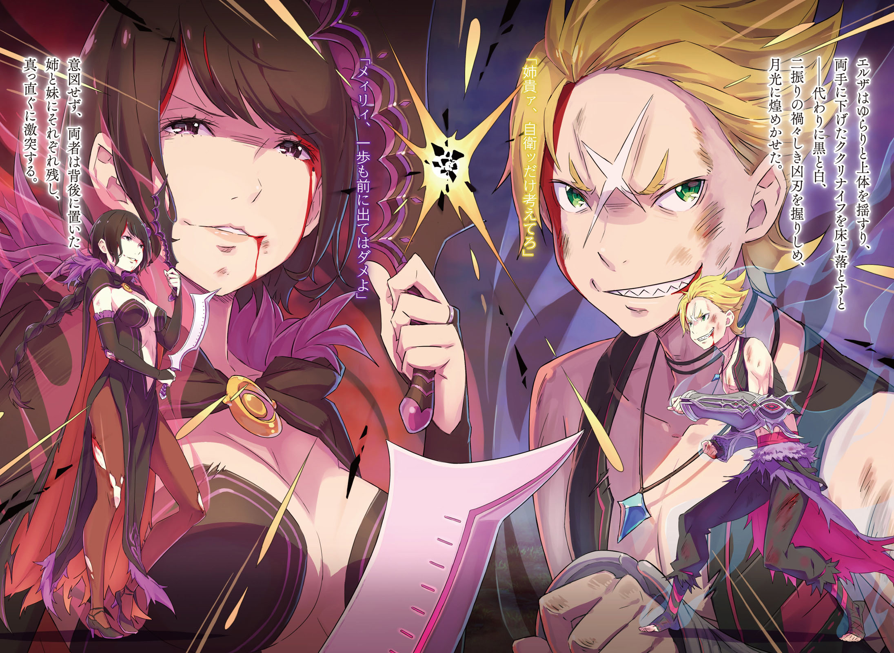

| Re：ゼロから始める異世界生活 15 | |
| 長月 達平 & 大塚 真一郎 | |

Re：ゼロから始める異世界生活 15
長月達平

本作品の全部または一部を無断で複製、転載、配信、送信すること、あるいはウェブサイトへの転載等を禁止します。また、本作品の内容を無断で改変、改ざん等を行うことも禁止します。
本作品購入時にご承諾いただいた規約により、有償・無償にかかわらず本作品を第三者に譲渡することはできません。
本作品を示すサムネイルなどのイメージ画像は、再ダウンロード時に予告なく変更される場合があります。
本作品の内容は、底本発行時の取材・執筆内容にもとづきます。
本作品は縦書きでレイアウトされています。
また、ご覧になるリーディングシステムにより、表示の差が認められることがあります。
第一章 『ロズワール邸、最後の日』
１
──今でも、あの瞬間を思い出して、後悔に襲われることがある。
差し伸べた指をほどかれて、愛おしむように名前を呼ばれた。
別れの言葉には親愛が、微笑む眦には涙と決意があり、それに声を封じられて。
何を思っていたのか、今では思い出せない。
何を言えばよかったのか、今でもわからない。
何をするべきだったのか、今もその答えは見つかっていない。
──だからこうして今も、自分は一人、禁書庫から動けずに蹲ったままでいる。
「......リューズ」
唇からこぼれたのは、意識して遠ざけてきた古い記憶の断片だ。
空白と停滞、自分の過ごしたその年月と同じだけ、目を背けてきた苦悩の過去。
何故、今になってそれを、後悔を、記憶を、彼女の名前を思い出したのだろうか。
それはきっと、予感があったからだ。
かつて、差し伸べた指を自分が拒絶されたことがあったように──、
「お前を連れ出すぜ、ベアトリス。──今度こそ、お前は俺の手でお日様の下に引きずり出されて、そのドレスを泥だらけにして真っ黒になるまで遊ぶんだ」
──今度は自分が、差し伸べられた指をほどくときなのだと。
２
──戦いは苛烈さを増し、優雅で荘厳な屋敷を破壊が容赦なく蹂躙する。
「──ォォォォッ!!」
咆哮が轟く。鋼と鋼が激突し、響き渡る快音を舞い踊る火花が飾り付ける。
今、月明かりの射し込むロズワール邸を舞台に、円舞は最高潮へ上り詰めていた。
「──素敵。素敵よ、あなた。最高だわ」
衝撃に窓が、踏み込みに床が、余波に壁の絵画が、弾け、爆ぜ、千切れ飛ぶ中、命の奪い合いを心の底から愉しむ艶声が金色の猛獣の耳朶を打つ。
それに対し、猛獣──ガーフィールは牙を剝き、剛腕を振りかざして答える。
「ラム以外にッ言われッても嬉しかァねェよ!!」
嬌声を怒声で塗り潰し、ガーフィールの剛拳が敵である女の頭上を抜けて壁をぶち抜く。その隙に死角に潜り込む女、そこへガーフィールは恐ろしく豪快な追撃を放った。
──剛腕を突き刺した壁を剝がして、大質量の一撃をお見舞いしたのだ。
「あぁ......っ」
拳の面積を百倍する打撃に、女──エルザは興奮に熱い吐息を漏らして歓喜する。
直後の攻防、それは瞬きすら致命に繫がるほどの刹那に交わされた。
文字通り、壁の如く隙のないガーフィールの一発に、エルザは後退ではなく前進する。超人的な身躱しで被害を最小限に、ガーフィールの首へ黒い刃が躍りかかった。
豪風、打撃の威力にエルザが後ろへ吹き飛ぶ。だが、その刃は確かに届いて──、
「──素敵」
「──ほふぇられへも、うれひくにェッ！」
うっとりと、床に手をつくエルザが艶っぽく呟く。その眼前、ガーフィールは牙で受け止めたククリナイフを嚙み砕き、破片を吐き出していた。
──一当たりして、油断ならない女だとはっきり認識した。
一筋縄ではいかない強者を前に、ガーフィールはちらと背後を振り返る。そこに、二人の激突を傍観し、立ち尽くしている緑翠の瞳をした女性──フレデリカがいる。
「よォ、姉貴。まァだ、そんなッとこでジッとしてやがんのかよォ」
「え？ あ、え、その、そんなつもりでは......」
「悪ィが、どォもカッコいいとこだけ見せッちゃやれねェらしい。姉貴は姉貴で大将に当てにされッてんだ。──頼むぜ」
牙を嚙み鳴らし、ガーフィールは逡巡する姉にそう声をかけた。しかし、フレデリカの反応は鈍く、足は動き出せずにいる。──無理もない。
ガーフィールとエルザの攻防は、フレデリカの割り込める次元にないのだ。助勢どころか、ただ動くことさえ勇気のいる状況だろう。ならば、この場は──、
「──俺様の方が、姉貴孝行してッやらァ！」
「ガーフ!?」
動けないフレデリカに代わり、ガーフィールが先んじて決断する。
猛然と敵に飛び掛かるガーフィール、その意図を察し、エルザが嫣然と微笑んだ。
「お姉さん想いだこと。優しいのね」
言って、獣爪をナイフで受けた戮殺者は大きく後方へ飛んだ。それを追い、ガーフィールも屋敷の奥へ戦場を移す。これで、『眠り姫』──レムの寝室への道が開ける。
あとはその間に、フレデリカがレムを連れ出してくれれば憂いはない。
「ガーフ！」
拳打の嵐を叩き込む背中に、先の戸惑いが消えた呼びかけが届いた。振り返る余裕はない。だが、記憶より大きくなった弟の背中に、姉はたった一言だけ──、
「──信じていますわ！」
十年越しの、わずか数分だけの再会。しかし、それで十分だった。
姉が弟の強さを信頼し、弟が姉の期待に全霊で応えようと決意するには、それで十分。
「ッたりめェだろォがァ!!」
──闘志が漲り、力が湧き上がる。
獣爪の一撃をエルザが身をよじって避ける。が、その身躱しに遅れた黒い三つ編みを摑み取り、ガーフィールはエルザを壁に叩きつけた。そのまま、廊下を駆け抜ける。
「お、ォォォォ──ッ!!」
咆哮し、エルザを壁に押し付けたままガーフィールは猛然と屋敷を突っ走る。壁が砕かれて噴煙が立ち込め、抵抗できないエルザを衝撃が蹂躙する。このまま首を折り、頭を潰し、肉片になるまで壁で削り切る。それから、仲間たちに合流して──、
「──踊りの最中に余所見だなんて、いけない子ね」
思考するより早く、顎を引くことができたのは本能の為せた奇跡だ。
避け遅れた左耳が弾けた直後、ガーフィールは派手に床を踏み外す──否、踏み外したのではない。床が消えたのだ。斬撃に切り刻まれ、廊下が消失、階下へ落下する。
自由落下に吞まれ、その間も斬撃は襲いくる。それをガーフィールは両腕の盾で勘を頼りに打ち払い、防ぐ、防ぐ、防ぐ。だが防ぎ切れず、全身から血を噴く。
階下に体の一部が触れる。瞬間、転がるように殺戮範囲を逃れ、ガーフィールは絨毯に四肢をつきながら正面を睨みつけた。白煙を割り、月光の舞台に女が現れる。
その両腕にククリナイフを握り、半身を血に染めて微笑む殺戮の美女が。
「......姉貴は、いったッみてェだな。あとは大将がうまくやってッくれんだろォよ」
上階、遠ざかっていく気配を肌に味わい、ガーフィールは第一目標を果たして嘆息。
スバルの作戦に従い、残る目標は──いったい、なんだったか。
「あァ、クソ。思いッ出せねェが......まァ、いいか」
たぶん、ガーフィールが勝てなかった場合の次善策だったはずだ。生き延び、全員で『聖域』に帰還するための撤退案。だが、それなら忘れても構わない。
勝てばいい、それだけだ。──そう望み、ガーフィールは胸の前で盾を打ち合わせる。
鋼の擦れる響音で己を鼓舞するガーフィール、その姿にエルザは舌なめずりした。
「──『腸狩り』、エルザ・グランヒルテ」
「『聖域』の超最強の盾、ガーフィール・ティンゼルだ」
血色の微笑が闇に溶け、縦横無尽に跳ね回る戮殺者が迫りくるのを待ち受ける。
その激突の寸前、ガーフィールは鼻面に皺を寄せ、牙を剝きながら吠えた。
「俺様のド派手な初陣だぜ、大将。──だァから、そっちもうまくッやれやァ！」
３
──こうして、彼女に会いにこの部屋に足を運ぶのは何度目になるだろうか。
初めての出会いは、スバルが屋敷に担ぎ込まれた夜のこと。屋敷の廊下にかけられた彼女の幻術をあっさり突破し、スバルはこの禁書庫に足を踏み入れた。
初対面の印象は、お互いに最悪だったことは間違いない。
病み上がりになけなしのマナを奪われ、スバルは呆気なくダウン。その後、彼女は復讐に燃えるスバルに何度もちょっかいをかけられ、一人の時間を邪魔され続けた。
ロズワール邸で過ごした時間は、たったの二ヶ月。その間、スバルは彼女──ベアトリスと幾度も唾を飛ばしてがなり合い、大人げないやり取りを繰り返してきた。
顔を見ればケンカばかりで、なのに不思議とあれこれと好みや気は合って。
どうしてだろうか。何となく、彼女を一人きりにしておくことにずっと気が咎めて。
──あの日々が、その時間が、かけがえのない絆だったと今は思えているから。
今度こそ絶対に手放すまいと、スバルはベアトリスを迎えに、ここへ戻ってきたのだ。
「ベティーを、ここから連れ出す......？」
部屋に入るなり、そう宣言したスバルにベアトリスは戸惑いを口にした。
彼女は定位置である脚立の上に座ったまま、その胸にぎゅっと黒い本を抱き寄せる。
──白紙の未来だけを記し続ける、母に託された『叡智の書』を。
「余計な、お世話かしら。そんなこと、誰もお前に頼んじゃいないのよ」
「その返事は予想できたが、議論の余地はねぇ。俺は必ず、お前をこっから連れ出す」
「勝手なことを......今すぐ帰れかしら。帰って、あの娘の膝で無様に泣けばいいのよ」
「てめぇ、戦争だろうが......！ それ言い出したら戦争だろうが......っ！」
前に盛大にやらかした醜態の話を持ち出され、スバルは羞恥に声を震わせた。実際、エミリアの膝枕には絶大な加護があるが、今は彼女に頼れない。
エミリアは今、『聖域』で踏ん張っている。屋敷で踏ん張るのはスバルの役目だ。
「とにかく、問答の時間も惜しい。お前、外で何が起きてるかはわかってるのか？」
「......屋敷に、侵入者があったのはわかってるかしら。でも、ベティーはその諍いに関わるつもりはない。ケンカなら、やりたい奴らが勝手にやってればいいのよ」
「残念ながら、ケンカなんて可愛げのある状況じゃねぇんだよ。一番の難敵は期待の新顔が引き受けてくれちゃいるが......あいつ、優しすぎるからな」
ベアトリスの言葉に首を横に振り、スバルは屋敷内の戦力展開を頭に描く。
最大戦力のガーフィールは、すでに敵の本命であるエルザと会敵したはずだ。両者共に人外の実力者で、その戦闘力は伯仲──と言いたいところだが、そうも断言できない。
──ガーフィールは優しすぎる。甘いではなく、あえて優しいと表現しよう。
作戦上、『聖域』でスバルたちはガーフィールの打倒に、その優しさを当てにした。その情の深い性格が、今の屋敷の戦況をどう傾けるか、未知数な部分がある。
敵への情ではなく、味方への配慮が爪に、牙に乱れを生む可能性は否定できない。
屋敷にいる全員が無事に脱出すること。そのために、ガーフィールには万全の状態で戦い、強敵を引き受けてもらう必要がある。
「なんで、うちのリーサルウェポンに全力出してもらうために、邪魔な要素は全部どっける。ペトラはオットーに預けたし、フレデリカがレムを確保してくれてれば......」
「残りはお前とベティーの二人だけ。......お前は、そう言いたいわけかしら」
「そう言いたいわけだ」
後顧の憂いがなくなれば、ガーフィールは十全に戦える。そのために、ペトラたちには脱出を最優先してもらった。レムを確保し、フレデリカもそこに合流するはず。
「そして、お前は俺に連れ出されてもらうぞ。手ぇ繫いで走るのが嫌なら、おんぶでも抱っこでも何でもしてやる。言っとくが、絶対に引き下がらねぇからな」
「お前こそ、何度も言わせるんじゃないのよ。お前の助けなんて必要ないかしら」
一歩、歩み寄ろうとしたスバルを、ベアトリスは低い声で拒絶する。
彼女はスバルではなく、禁書庫を示すように首をぐるりと巡らせると、
「ここはベティーの支配する、現世と隔絶した大精霊の禁書庫なのよ。外にどんな脅威があっても関係ないかしら。お前の懸念は杞憂なのよ」
「いいや、そうはいかない。お前の禁書庫は確かにすげぇよ。けど、致命的な欠陥があるんだ。おまけに、相手はその欠陥を知り尽くしてやがる」
自信の源である『扉渡り』を否定され、ベアトリスは不愉快そうに眉を上げる。
確かに禁書庫は、隠れ潜むことにかけて無類のアドバンテージを持つ空間だ。だが、それも万能ではないことが、すでに以前のループで証明されてしまっている。
「お前の『扉渡り』は閉じた扉にしか効果がない。だから、屋敷の扉を全部開けたら......」
必ず、最後には禁書庫に行き当たることになる。前のループで、エルザはその方法を用いて禁書庫に侵入し、ベアトリスの命を奪おうと襲い掛かってきた。
だから、禁書庫は決して安全地帯ではない。そう説得しようとして──、
「──どうして、敵はその欠陥を知っているのかしら」
そのベアトリスの疑問に、スバルは息を吞んでいた。
「ロズワールが教えた。......そういうことなのよ」
あまりに早く結論に辿り着かれ、スバルには言い訳する余地も与えられなかった。
ただ瞠目するスバルに、ベアトリスは確信を深める。この屋敷の襲撃がロズワールの指示したものであり、その狙いの一つにベアトリスの『扉渡り』を破る必要がある。
ロズワールにそうする理由が、必要性があるということは、つまり──、
「ロズワールの『叡智の書』に、ベティーの死が記述されたってことかしら」
その結論に、ベアトリスは短く、吐息した。
ほぅ、と自然に、安堵するように。──その様子に、スバルは激発した。
「お前......！ 今のため息はなんで......なんで、納得したみたいな顔しやがるんだ！」
「......ここまできたなら、お前もわかってるはずなのよ。ロズワールは『叡智の書』の記述を守るかしら。その結果がこれなら、ベティーの運命はすでに定まったのよ」
「なんだそりゃ......ロズワールの本はロズワールの本で、お前の本はお前の本だろ？ お前の抱いてるそれに、あいつに殺されてやれとでも書いてあるってのかよ!?」
ベアトリスの諦念を砕くように、スバルは彼女の抱く『叡智の書』に指を突き付ける。
事実は、知っている。ベアトリスの魔書は白紙。四百年、一度も未来を記していない。
そのスバルの叫びに目を伏せ、ベアトリスは腕の中の本をゆっくりと開く。そして、こちらへ向けられる本の内容──そこには、やはり白紙のページだけがあって。
「何も、書かれてなんかないかしら。これまで通り、ベティーの運命は白紙なのよ」
「それなら！ それなら、お前がロズワールの望み通りになってやる理由なんかあるはずねぇ！ これまでみたいに、お前のやることはお前が決めればいいんだよ！」
「......これまでみたいに、ベティーが決める？」
きょとんと、目を丸くしてベアトリスが呟いた。
まるで、感情の抜け落ちたようなその呟きに、スバルは絶句する。
特徴的な模様のある、ベアトリスの青い瞳。それを虚無的な哀切が満たしていく。
「これまでのベティーの日々に、ベティーの決めたことなんて、何があったの？」
呟く。呟いて、ベアトリスは細い指でたどたどしく魔書のページをめくる。それは白紙のページではなく、自分自身の空白の時間を辿っているようにも思える仕草で。
「この屋敷で、お母様の言いつけを守り続けて、ずっと一人で......その時間のどこに、ベティーの選んだものがあるの？ ベアトリスって、いったい、何をした、誰なの？」
「べあ、とりす......」
「ベティーの生は、この本と同じで真っ白かしら。空白なのよ。何一つ、自分で選んだこともない。やり遂げたことも、自分を肯定できる功績も、何にもない......」
音を立てて、『叡智の書』が閉じられる。その無題の魔書の表紙を、ベアトリスはゆっくりと撫でる。羨望するように、優しく。そして、静かに呟く。
「本当の、本当に。ベティーが......ただ一冊の本なら、よかったのに」
儚い羨望に心を委ねることもできず、ベアトリスは悲痛な願望を告白する。
ベアトリスが一冊の本だったなら、変わらないまま『誰か』を待ち続けることもできた。
心無い人形であれれば、時の流れに揺るがない一冊の物語であれば、嘆かなかった。
だけど、ベアトリスはそう在れなかった。そう在れなかったことを、少女は嘆く。
「だって、ベティーには心があるもの。信じたいものを信じられなくなるぐらい、時間が経てば色々なことを考えてしまうのよ。悩んでしまうかしら。お母様の顔を、微笑みを、思い出せなくなって、記憶を寄せ集めて縋りたくなる夜だって何度もあった」
胸に抱く本の表紙に爪を立て、唇を嚙んで、ベアトリスがスバルを睨みつける。
「孤独が怖くて、誰かといたいと思ったことだってあったのよ。でも、流れ続ける時間の中で、みんながベティーを置いていく。自分より大切な何かのためだとか、そんなわけのわからないこと言って......お母様も、ロズワールも！ リューズだって！」
顔をくしゃくしゃにして、泣きそうな顔でベアトリスは叫ぶ。
その叫びにあった名前に、スバルは『聖域』で知ったベアトリスの過去を想起する。
『聖域』を守るために犠牲になった少女、リューズ・メイエルと、ベアトリスが結んだ束の間の、しかし確かな絆の物語を。──ベアトリスの心に、今も残る傷跡を。
「ベティーは......精霊ベアトリスは、ずっと独りきりで、みんなに置いてけぼりにされる運命で......でも、今は少しだけ、ホッとしてるかしら」
「......どうして。知り合いに殺されるかもしれないってのに、なんで安心なんか」
「決まってるのよ」
押し殺したスバルの声に、ベアトリスは一つ頷いた。
それから、その口元に儚げで、でもどこか過去を愛おしむような笑みを浮かべて、
「ロズワールのものであれ、『叡智の書』にベティーのことが記されたなら......お母様は、ベティーを忘れていたわけじゃ、なかったってことかしら」
微笑して、救われたように、報われたように、ベアトリスはそう言った。
母の遺した魔書に記された死亡宣告、かつて家族のように共に過ごした男の血族の手で、自分へ振るわれる殺意の切っ先が、救いであるかのように少女は笑った。
信じ続け、願い続けた四百年ぶりの母の意思が、自分の死であっても嬉しいのだと。
盲目的に母の言葉を、言いつけを守り続けてきたからこそ、妄信以外の答えがベアトリスにはない。信仰に殉じる殉教者の如く、彼女は魔女エキドナを信じている。
それが、無垢な解放感に満たされた微笑に、はっきりと表れていて──。
「ふざけるな」
──その許し難い歪な微笑みに、スバルの胸中を激情が燃え広がっていく。
ベアトリスの、まるで母の愛を確かめたような悲しい喜びは歪だ。クソ喰らえだ。
こんなものが、こんなことが、娘に死を告知する記述が、母の愛であってたまるか。
「......何を、するつもりなのよ」
怒りのあまり、スバルは自分でも無意識のうちに前に踏み出していた。そのただならぬスバルの形相に、ベアトリスが警戒に頰を硬くする。
「ベティーは聞いたかしら。何をするつもりなのよ。言っておくけど、何かするつもりなら容赦しないかしら。ベティーはもう、運命を受け入れたのよ」
「何が運命を受け入れた、だ。お前も、ロズワールと何も変わりゃしない。いや、自覚のあるあいつよりよっぽど酷い。どうしようもなく拗らせてやがる」
怒りが、際限なく湧き上がってくる。思えばずっと、『聖域』に纏わる出来事に関わって以来、スバルは何度も何度も、この感情と戦い続けてきた。
『試練』に臨む自分に怒り、自分を翻弄する魔女たちに怒り、子どもの頑なさで自身を見くびるガーフィールに怒り、記述を順守することで想いの脆さを肯定しようとするロズワールに怒り、自分自身とスバルの恋心を信じられないエミリアに怒り──、
──今、ベアトリスと、彼女をこんな風に追い詰めた運命に激怒している。
「ベアトリス、お前は馬鹿だ。ああ、大馬鹿だ！ 見てて痛々しくてしょうがねぇよ！」
「な、ぁ......っ」
スバルの突然の怒声、その豹変にベアトリスは瞠目し、声に詰まった。
怒りと混乱でとっさに言葉が出ない。その混乱に乗じ、スバルは畳みかける。
「四百年も時間があって、なんでそんな極端な答えしか出せねぇんだよ......！ なんで一個の答えにかじりついてんだ！ 他にいくらでも、可能性ならあっただろうが！」
「か、考えたに決まってるのよ！ ベティーが何度、どれだけ白紙のページが埋まらないか試したことか......でも、何をしても変わらなかった！ だから！」
「それが馬鹿なんだよ！ 白紙のページに文字が浮かび上がるように努力したって、炙り出しか！ 今どき年賀状でも誰もやらねぇよ！ もっと別の可能性を疑え！」
魔書が白紙のままであり続けたことを、ベアトリスは運命の袋小路だと考えていた。
だが、そうでなかったなら。別の可能性があったとしたら──、
「──例えば、お前のお母様がうっかり間違った本を渡したとか、だ！」
「は......」
別の可能性、その響きに反して、あまりにお粗末な代案にベアトリスが呆ける。その呆れはすぐに怒りに取って代わられ、ベアトリスはますますいきり立った。
「お母様を侮辱するつもりかしら!? お母様が、そんな馬鹿な見落としを......」
「絶対にしねぇって言い切れんのか？ いっぺんも疑ったことないのかよ？ じゃあ、お前はお母様が自分の娘に白紙の本を渡した確信犯だって信じてるってのか？」
屁理屈をこね、詭弁で塗り固め、スバルは虚言でベアトリスを翻弄しようとする。
実際のところ、ベアトリスに『叡智の書』を持たせたエキドナの本心は謎だ。あの性悪魔女ならば、本気で嫌がらせのために本を持たせていても不思議はない。
だが、リューズの語った『聖域』の過去──そこに存在したエキドナの在り方は、あの性悪さとは違って思えた。だから、真実はわからない。重要なのは、真実ではない。
今、必要なのはベアトリスの頑なな心をほぐし、こちらへ引き寄せる魔法の言葉だ。
「それは......そんな、言い方......」
スバルの勢いに気圧され、ベアトリスの語調が弱くなり、目が泳いだ。
自分の抱く確信が、敬愛する母を貶めかねないことを理解し、それでもベアトリスは嫌々と首を横に振った。妄信と敬愛を天秤にかけ、ベアトリスは妄信を選択する。
四百年間、一度たりとも、母の言葉を疑ったことなどないと、そう縋るように。
「お、お母様が間違ったことをなさるはずがないのよ。あ、当たり前かしら。お母様だもの！ お前は、お前は自分の母親の言うことを疑うことができるっていうの!?」
「できるに決まってんだろ、信じることの方が少ねぇわ！ 俺は母ちゃんが衛星が『大気圏』に落ちたを、『愛知県』に落ちたって聞き間違えてたときから、母ちゃんが話してくれるニュースを信じるのはやめてんだ！ 言い触らして大恥搔いたんだぞ！」
真に受けて触れ回り、学校と近所中で笑いものにされたことは忘れ難い。おまけに本人はそう言ったことを忘れていて、「なんでそんなこと言ったの？」とまで言われた。
あの小学三年生の出来事以来、スバルは両親の発言を頭から信じることをやめている。なお、父親の発言の信頼性に関してはもっと早くからなくしていた。
だからスバルは、母親を絶対視して動けないベアトリスがもどかしくてたまらない。
「俺は親父と、言い合いの殴り合いになった回数は両手の指が往復しても足りねぇ。二十年以下でこれだ。その二十倍あって、お前は一度も思ったことないのか？」
「わからない......お前は、お前はベティーに何を言わせたいのかしら!? 全然わからないのよ！ お前の望みが、目的が、ベティーにはわからない！ わからない！」
「ならはっきり言ってやるよ。馬鹿なお前と、馬鹿な母親に聞こえるように！」
頭を抱えようとするベアトリスに近付き、スバルは彼女の両手を取った。
顔を上げるベアトリスに顔を寄せ、息のかかる距離で涙目の少女にはっきり伝える。
「白紙の本と、四百年前の口約束にいつまでも振り回されてんじゃねぇ。──お前のやりたいことは、お前が選べ、ベアトリス」
「────」
「四百年だ。反抗期が一回ぐらい巡ってくるには十分すぎる時間じゃねぇか」
親を愛するが故に、孤独と空虚な時間に縛られ続けてきたベアトリス。
あるいはエキドナには、そのベアトリスの苦悩すら甘美なものなのかもしれない。だが、泣きたい気持ちも泣き方も忘れて、何が心の在り方だ。心底、反吐が出る。
両腕を摑まれたまま、ベアトリスは脚立の上でスバルから顔を背ける。
脚立の最上段に座る少女と、スバルの視線の高さはほぼ同じ。やがて、ベアトリスは顔を俯け、膝の上の本を見つめて唇を震わせた。
「何を、言われても......契約、なのよ。契約は絶対で......だから、ベティーは......」
「その契約の裏口探して、破れないなら殺されようなんて考えてた奴がよく言うぜ」
視線から逃れようとしていたベアトリスが、図星を突かれた顔で凝然と目を見開く。
潤んだ瞳が、自分の心中を言い当てた指摘に怯え、震え上がっていた。
それも当然だ。スバルはすでに一度、ベアトリスの心からの嘆きを聞いている。
──あの瞬間の無力感と、伝えられなかった想いに、時を超えて今、応報する。
「お前の言うことはメチャクチャだよ、ベアトリス。自分で自分の支離滅裂さに気付いてないのか？ そんなわけないよな？ お前、頭がいいもんな」
「黙る、かしら......」
「いいや、黙らない。契約の反故？ 上等だよ。文字通り、約束を守り続けるのが死にたくなるぐらい嫌ならやめちまえ。誰もお前を責めたりしねぇ」
「ベティーが責める！ それがどうして、お前にはわからないのよ!?」
「お前こそ、なんでわからないんだよ。約束守ってお前が死ぬなら、約束破ってお前が生きててくれる方がいい。俺がその選択をするのがそんなに不思議か？」
契約に拘り続けるベアトリスが、スバルを理解不能な怪物でも見るように見る。
そんな風に思われることが、スバルにはよっぽど不可解だった。
約束を守ることは、もちろん大事なことだ。
約束破りをエミリアに何度も咎められて、そのことで痛い思いも何度もしてきた。だからスバルだって、約束を守ることの大切さは身に沁みてわかっている。
それでも、スバルはここでベアトリスに約束を破らせることに躊躇いを覚えない。
理由は今、ベアトリスに伝えた通りだ。そんなこと、悩む問題ですらない。
「ひ、開き直りで、どうしようもない悪辣な行いかしら......」
「開き直りなのはわかってるし、反省もしてる。でも、大事なもんは絶対譲らない」
スバルの答えは揺らがない。初めから、問題はベアトリスの心に預けてあるのだ。
契約を蔑ろにするスバルの態度に、ベアトリスは混乱と困惑を隠せずにいる。それはそうだろう。この世界で、精霊という存在にとって契約はそれほど重い意味を持つ。
精霊術師の少女に恋をして、そのことはスバルも重々承知していた。
わかっていてなお、スバルは言おう。──約束より、お前を選ぶと。
「お、まえが......『その人』だったら......」
すぐ間近にいるスバルを見つめ、ベアトリスはゆるゆると首を横に振る。
ベアトリスの心を絡め取り、四百年間縛り続けてきたたった一つの使命──白紙のページに心をすり減らし、それでも契約を手放せなかった最大の理由。
その最大にして最後の拠り所に決着がつけば、ベアトリスは自分を解放できる。
故に、ベアトリスは縋るように、心を預けるように、スバルの黒瞳を覗き込んだ。
「お前が......」
喘ぐように呼吸し、ゆっくりと、自分を許すように彼女は──、
「ベティーの、『その人』に、なってくれるの？」
それは、ベアトリスの空白の四百年に終止符を打つだろう問いかけだった。
思い出されるエキドナの言、これこそまさしく『強欲の魔女』の望んだ答えだ。
──正解のない『その人』を、ベアトリスが自らの意思で選び出せるかどうか。
魔女はそんな己の好奇心の充足を娘に託して、四百年もの孤独に彼女を追いやった。
その日々の結実が、今の問いかけにある。報われる、空白の時間が。
「────」
ベアトリスが、問いの答えを固唾を吞んで待っていた。
その少女を真っ直ぐに見つめ返し、スバルははっきりと言った。
「馬鹿か、お前。──俺がお前の『その人』なんてわけのわからない奴のわけねぇだろ」
４
衝撃波に揉まれ、スバルは壁に激突して悶絶する。
壁面の柱部分に脇腹を直撃されて、声にならない声を上げ、床をのたうち回った。
「が、うぉご......あ、ありえねぇ......！ は、話の途中で、あの馬鹿......っ！」
眼前の扉が力一杯閉じられ、スバルは慌てて飛びついて扉を開く。が、開いた扉の向こうは単なる客室──すでに『扉渡り』が発動し、禁書庫は移動したあとだ。
本音をぶつけ合った問答の最後で、スバルは禁書庫から締め出されてしまった。
「まだ言いかけだったってのに......クソ、あの早とちりロリ......！」
言葉の選定をしくじった。最後に見せた、ベアトリスの悲痛な怒りが胸をつく。
ベアトリスに、伝えたい言葉が足りていない。今すぐ、禁書庫に戻らなければ──、
「──ナツキさん!?」
その声に、禁書庫を求めて走り出そうとしたスバルがつんのめる。背後、声の方に振り向くと、スバルは隣室からこちらを覗く人影と目が合った。
それは、屋敷に同行し、今は別行動中のはずのオットーだった。オットーの下には、同じ体勢のペトラもおり、二人を確認したスバルは驚きに瞠目する。
「お前ら......なんでまだ屋敷に!? ドアを開けるのは一階だけでいいから、それだけ済ませてとっくに逃げてくれてる作戦だろ？」
「そのはずだったんですが、残念なことに屋敷中で問題が発生してまして......」
思わぬ再会に驚くスバルに、青い顔をしたオットーがトラブルの発生を報告する。
──屋敷の避難路の確保、それはこの襲撃を突破する上で一番のキーポイントだ。
故に、スバルはその役目をオットーに託した。彼にできなければ、他の誰にもそれは果たせまい。そのオットーが困難と判断した以上、それはそういうことなのだと。
「何があったんだ？ 手短に頼む」
「話に聞いてた『魔獣使い』でしょうね。すでに屋敷中、魔獣だらけになってますよ」
「魔獣ってことは、メィリィか......でも、それは織り込み済みだったはずだ」
声を潜めたオットーの報告に、スバルは眉間に深い皺を刻んだ。
襲撃犯は二人──『腸狩り』のエルザと、『魔獣使い』メィリィの殺伐姉妹だ。
エルザの危険性は今さらだが、魔獣を意のままに従えるメィリィの脅威も、この襲撃に対処する上で見過ごせないポイントになる。だから当然、その対策はしてあって──、
「──なのに、『魔獣除け』の結晶石が全然効かない魔獣がいるのっ！」
スバルの疑問に先んじて、ペトラが暗闇でもわかるぐらい顔を赤くして叫んだ。少女の手には青く光る結晶石──『魔獣除け』の輝石が握られている。この結晶石こそが、スバルたちが用意した『魔獣使い』への対抗策であったのだ。
「って、マジか!? ウルガルムのときと同じで、この『魔獣除け』の石があれば魔獣は遠ざけられるって見込みだったのに......何が原因だ!?」
「わかりません！ 出くわした奴が例外だったのか、何とかその魔獣は撒きましたけど、他にもいるなら辺境伯の部屋まで辿り着くのも......」
難しい、とオットーが形勢不利を訴えようとした、その瞬間だった。
「──っ!?」
突き上げるような衝撃が足下から伝わり、スバルはとっさに視線を落とした。赤い絨毯の敷かれた廊下、それが奇妙に歪んでうねる。うねり、そして──弾けた。
衝撃と、廊下の歪みは破壊の先触れだ。破壊の本命は下の階を起点に、廊下ごと屋敷の西棟を豪快に倒壊させる。窓が割れ、木材が飛び散り、屋敷が悲鳴を上げる。
足場を奪われ、体が宙に浮いた。反射的に手を伸ばし、スバルは幼い体を強引に搔き抱く。崩落の中心へ落ちていく、その前にせめて胸の中の存在だけは庇おうとして。
「──そのまま、手を放さないでくださいまし!!」
破壊に紛れて耳朶を打つ、雷鳴のような声に全霊で従った。直後、襟首を摑まれる感覚に体を引かれ、スバルは柔らかい地面の上に投げ出される。
頰に当たる芝の感触。見れば、スバルは屋敷の外、庭園の芝生に転がされていた。
「い、今のは......」
「フレデリカ姉様！」
頭を振り、顔を上げたスバルの腕の中でペトラが跳ねる。そのペトラの視線の先、風に美しい金髪をなびかせるのは、まさしくフレデリカだった。
彼女は優雅に髪を払い、目を輝かせるペトラの頰の汚れをそっと指で拭うと、
「緊急事態とはいえご無礼を。フレデリカ・バウマン、ただいま合流いたしましたわ」
「姉様ぁっ！」
微笑むフレデリカに、ペトラが感極まって飛びつく。その可愛い後輩をフレデリカは優しく胸に迎え入れた。──結果、彼女の左脇に抱えられていたオットーが芝に落ちる。
「痛ぁ！ いやいや！ 助けてもらってなんなんですが、この扱い！」
「も、申し訳ありません、オットー様。つい、優先順位の差がはっきりと......」
「女子供、老人、男、そしてオットーの順番か」
「僕、男の枠からも外されてんですけどねえ!?」
オットーの嘆きはともあれ、スバルたちはフレデリカと互いの無事を確認し合う。彼女のおかげで、全員無事だ。それはスバルにオットー、ペトラだけではなく、
「スバル様。──ちゃんとこちらに、連れてきていますわ」
ペトラを抱いたまま、フレデリカはスバルに背中を向けた。そこに、シーツでしっかりと固定される寝衣姿の少女──レムがいる。一瞬、スバルの息が詰まった。
だが、すぐにその硬直は、じんわりとした安堵に溶かされていって。
「そう、か。無事に、連れ出してくれてありがとう。──ホントにありがとう」
「当然のことですわ。それより、当座の問題は......」
眠り続けるレムの頰に触れ、感謝を述べるスバルにフレデリカは顔を上げた。その彼女の視線を辿り、スバルも目にする。抉れ、激しく倒壊した屋敷の西棟を。
まるで、巨大なトラックにでも突っ込まれたような破壊の光景。そして、その例えはあながち的外れでもない。ただし、突っ込んだのはトラックではなく──、
「──あれ、なんですかね」
立ち上がり、膝を払いながらオットーが疑問を口にする。それは、眠っているレム以外の四人が共通して抱いた疑問だ。それに、あえてスバルが答えを用意するなら、
「俺には、かなりでかいカバに見える」
それは、巨大すぎる質量の塊だった。それは、岩のような色と質感の肌をして、石臼のように太く頑健な四肢を持った存在だ。雄々しく凶悪な顔貌、敵意と殺意に濁り切った赤い瞳、鼻先でへし折れた角と──背に、一つの小さな影を乗せた魔獣だ。
「──へーえ。すごおい。さっきので誰もやられないなんてビックリしちゃったあ」
巨大な魔獣、その背に跨って足をバタつかせ、こちらに笑いかける声。無邪気で残酷なその声音に、スバルは、そしてペトラは聞き覚えがあった。
黒い衣装に身を包み、濃い青の髪を三つ編みにした少女──、
「──メィリィ！」
「あれえ？ お兄さんったら驚かないのねえ。それは少しだけガッカリしちゃあう」
叫んだスバルに唇を尖らせ、メィリィはサプライズに失敗して不満げだ。が、生憎とスバルたちには彼女の企てに付き合ってやる理由はない。
「そもそも、屋敷がぶっ壊される以上に驚けるか！ なんて真似しやがる！」
「だってえ、標的のメイドさんたちがなかなか見つからないんだものお。だから、岩豚ちゃんに頑張ってもらったのよお。おかげで、全員見つかったでしょ？」
悪びれることなく、頰に指を立てたメィリィが眼下の獲物を一望する。確かに、彼女たちの目的にはこれが一番手っ取り早い。実際、フレデリカがいなければ壊滅していた。
「でも、お兄さんにはホントにビックリよお。だって、もっと簡単に片付いちゃうお仕事だったはずなのにい、予定外のことばっかりなんだもの」
「そうか。予定とズレたんなら、上司に報告して指示を仰いだ方がいいぞ。現場レベルで勝手に判断して、取り返しのつかないことになったら大問題だ」
「うふふ、ダーメ。お兄さんの口車には乗ってあーげない」
魔獣を間に挟む非日常で、スバルはメィリィと日常的にも思える会話を繰り広げる。
エルザに比べれば、会話中に腸を取りにこないだけマシなメィリィだが、やはり説得には応じてくれない。この間も、徐々に庭園には魔獣の気配が迫りつつある。
建物の外には出られたが、この回答は脱出手段としては誤答だ。依然、魔獣に包囲された状況にあることは変わらない。──否、より危険な状態と言える。
「エルザには悪いけどお、メイドさんたちはわたしがもらっちゃうわねえ。あ、心配しないで。ペトラちゃんには優しくしてあげる。お友達だものお」
「わ、わーい、嬉しいなー。お友達なら、見逃してくれてもいいんだよー？」
「うふふふふー、お友達だものお。最後まで仲良くしてくれるのよねえ？」
「あ、スバル、ごめん、全然ダメみたい......」
友情の表現方法が違いすぎて、勇気を振り絞ったペトラの交渉は失敗に終わった。
まだ幼いメィリィだが、殺し屋としての在り方は一貫している。歪んだ倫理観を植え付けられ、善悪の区別がついていないのだ。──彼女とは、相容れない。
「スバル様......」
「フレデリカ？ 何を......って、うお！」
ふいに、打開案を練るスバルの前に給仕服の背中が進み出る。背にレムを括り付けたフレデリカは呼びかけには応じず、代わりに結び目を解き、レムを解放した。
スバルはとっさに、こちらへ倒れるレムの体を受け止める。そして──、
「──あの少女、いえ、刺客はわたくしがおもてなしいたします。皆様はその間に」
「だ、ダメ！ フレデリカ姉様っ！」
堂々と、足止め役を買って出るフレデリカにスバルは沈黙し、ペトラが縋りつく。その自分の腰にしがみつくペトラに、フレデリカは優しい目を向けた。
「姉様、ダメ！ だって、さっきも同じで......今、また会えたのに、今度は......」
「いいえ、今度は違いますわ。......だって、わたくし、さっきは死ぬ覚悟でしたもの」
「──っ」
「だけど、今はそうではありません。ガーフと......弟と、十年越しに再会して、こんなに可愛い後輩がいて、幸せの絶頂ですのよ。──だから、負けませんわ」
そっと頭を撫で、フレデリカはペトラに語りかける。その緑翠の眼差しを間近に見て、ペトラは何も言えない。ただ、それが気休めではないと、彼女にもわかったはず。
信じたことは曲げない。力ずくで押し通す。──まさしく、ガーフィールの姉だ。
「フレデリカ！ 俺たちはロズワールの部屋だ！」
「ええ、ご随意に。あの子にお仕置きをして差し上げてから、ご一緒しますわ」
レムを背負ったスバルの言葉に優麗に応じ、フレデリカがこの場を請け負った。
ガーフィールはエルザを、フレデリカはメィリィを。それぞれ、獣人姉弟に暗躍姉妹を任せる形になるが、おそらくこれが最適解。──屋敷の襲撃を、突破する。
「オットー！ ペトラを！」
「合点承知！」
声かけ一つで指示を把握し、オットーがペトラの腕を引いて走り出す。レムを背負ったスバルはその前を、庭園から屋敷へ上がる出入り口に向かって先導する。
「ちょっとちょっとお！ 勝手に決めないでよお！ ペトラちゃんってばあ！」
「べーっ！」
一目散に逃げるスバルたちに、獣上のメィリィが声を投げる。だが、それに対する返礼は、涙目のペトラのあっかんべーだ。
それを残し、スバルたちは屋敷へ逃げ込む。その背をメィリィは追おうとするが──、
「──お客様、ここから先は、メイザース家流のもてなしにお付き合いくださいな！」
「もーお！ 絶対に許さないんだからあ！ ──やっちゃってえ、岩豚ちゃんっ！」
「──ッッッ!!」
立ち塞がるフレデリカを見下ろし、メィリィは癇癪を起こして頰を膨らませる。その主人の命を受け、巨大な岩石のような魔獣が咆哮し、庭園を吶喊した。
スカートを翻し、フレデリカの両腕が軋む音を立てながら獣化していく。
「さあ、おいでなさいませ。今日のわたくしは、苛烈ですのよ！ ──お覚悟」
５
フレデリカと別れ、屋敷の本棟へ突入したスバルたちは一路、最上階を目指していた。
「オットー！ 後ろは!?」
「フレデリカさんが何とか！ ですが、魔獣対策は解決してませんよ！」
廊下を駆けながら、オットーが未解決の魔獣問題に言及する。実際、その問題の対応策はないままだ。『魔獣除け』の効かない魔獣を、どうすればいいのか。
「お前が『言霊の加護』で魔獣とネゴシエーションして、外交手腕で道を譲ってもらって脱出ってのはどうだ？ 主役回だぜ！」
「魔獣って大抵『オレ、オマエ、マルカジリ』って会話にならないんですよねえ......」
「ふざけてる場合じゃないよっ！ 早く、早くしなくちゃ、姉様が！」
ペトラの必死の訴えに、スバルとオットーは軽口をやめ、策を考える。
現状、スバルたちの目標はロズワールの執務室──その本棚に隠された、外へと通じる避難路だ。その避難路を使えば、魔獣包囲網の外側に脱出できる。
ただし、その執務室へ辿り着くまでに、魔獣の妨害が入るのは必至であり──、
「ナツキさん！ 正面、黒翼鼠です！」
「う、お!?」
思案する眼前、月明かりの廊下を黒影がスバルへ飛来する。
それは子犬ほどもある丸い体を、蝙蝠のような黒い翼で飛空させる鼠に似た魔獣だ。黒翼鼠の名に相応しい魔獣が二対、赤瞳を輝かせ、鋭い牙でスバルを狙う。
「あっちいって！」
その黒翼鼠を、『魔獣除け』の結晶石を掲げたペトラが威勢よく追い払った。
放たれる輝石の光に、黒翼鼠は恐れおののくように切り返し、廊下の奥へ逃げ去る。
「助かった、ペトラ！ ......けど、石の効果が完全に切れたってわけじゃないのか」
「通常の魔獣にはちゃんと効き目があります！ 効かなかった魔獣は今のところ一体だけで、その魔獣さえいなければ......」
「ってことは、そいつが──」
特別なのか、と聞き返す前にそれは起きた。──衝撃音と、甲高い断末魔だ。
廊下の奥、月明かりの届かぬ暗がりで獣爪が閃き、鮮血と悲鳴が同時に上がる。一撃を浴びた黒翼鼠は翼をもがれ、為す術なく絨毯の上に転がり落ちた。どす黒い血を流し、痙攣する二匹の魔獣。それが、巨大な咢に吞まれ、咀嚼された。
血肉を貪り、骨を嚙み砕き、命を啜る音が廊下に響く。そして、それが姿を見せる。
獅子の頭部、馬に似た胴体、大蛇に酷似した尾と、ねじくれた角を生やした凶悪な存在感──おおよそ、その全身を『脅威』の単語で埋め尽くした、魔獣の中の魔獣。
以前のループでも、スバルは屋敷でこの魔獣と遭遇した。
──ペトラを、殺した魔獣だ。そして、その名前は、
「ど忘れしたが......また会ったな、クソ魔獣......！」
「────ッッ!!」
スバルの憤怒に反応するように、黒い魔獣が屋敷を揺るがすような咆哮を上げる。それに暴風を浴びるような圧迫感を受け、スバルはレムを背負い直し、奥歯を嚙む。
「オットー！ あの野郎に『魔獣除け』を......」
「ダメ！ ダメだよ、スバル！ だって、あの魔獣が......」
ペトラが首を横に振り、その顔を蒼白にしてスバルに訴えかける。その彼女の言葉に、スバルは事情を理解した。そして、その察した答えをオットーが叫ぶ。
「ギルティラウ！ 奴が、『魔獣除け』の効かない、僕たちの天敵です！」
瞬間、魔獣──ギルティラウが身を低くし、スバルたちへ目掛け、疾走する。
爪が絨毯を引き裂き、咆哮が建物を震えさせ、凶悪な吶喊が命を蹂躙しに、迫る。
──ロズワール邸攻防戦、三棟同時、激突開始。
第二章 『水面に映る幸せ』
１
「──こーら、リア。ふらふら頭を揺らさないの。大人しくしてなさい」
瞼を開ける前、最初に聞こえたのは柔らかく愛おしい声だった。
ゆっくりと、その声に導かれるように意識が浮上していく。ぼやけた視界、何度か瞬きする間に気付くのは、自分が椅子に座っていることと、ここが自宅であること。
森の大樹をくり抜いて作られた我が家、その居間で、自分は椅子に座っていて。
「まったく、いくつになっても甘えん坊なんだから。すごーく仕方のない子ね」
息遣いが届くほどすぐ近くで、包まれるほどに優しい声を聞く。それがひどく胸をざわめかせるから、少女──エミリアは慌てて振り返った。
そこに、銀髪を短くした、目つきの悪い、エミリアにとって理想の女性の姿があった。
「フォルトナ、母様......」
「驚いた。急に振り向いて......寝惚けてるの？ 母様に髪の手入れをさせながら居眠りなんて、うちのお姫様はホントに怠け者なんだから」
目を丸くするエミリアに、母──フォルトナは呆れた風に微笑む。そうして、鋭い目つきが和らぐ表情が、エミリアはたまらなく好きだった。
毎日、見慣れたはずの母の顔に、どうしてそんな感慨を覚えるのかわからないけれど。
「母様......」
「うん？ どうしたの？ 何かあったなら、何でも母様に言ってごらんなさい」
「今日の母様、おめかししてるのね。すごーく可愛い」
「──っ。何を言い出すかと思ったら、大人をからかうんじゃありません」
ほんのりと照れ臭げにして、フォルトナはエミリアの額を指でつついた。その、母につつかれた額を押さえながら、エミリアは「えへへ」とはにかむ。
エミリアにとって、フォルトナはいつでも自慢の母だが、今日は特別美人に見える。
普段は動きやすい格好ばかりなのに、今日に限ってスカートなど穿いているからか。装飾は少ないものの、色合いも涼やかな衣装はフォルトナによく似合っていた。
「せっかく可愛いのに、いつも以上にしまりのない顔して......ホントに寝惚けてるみたいね。髪の前に水場で顔を洗ったはずなのに、水だけ飲んで戻ってきたの？」
「むー、母様ったらバカにして。私、そんなおっちょこちょいの粗忽者じゃありません。すごーくしっかりしてるって、みんなに言われるもん」
「その古臭い言い回しもだけど、みんなに悪ふざけで変なこと吹き込まれてないか、私はすごーく心配だわ。あとでアーチたちを問い詰めなきゃ」
唇を尖らせて不服を表明するが、頰に手を当てたフォルトナは取り合ってくれない。そのまま、フォルトナはむくれたエミリアに前を向かせ、髪の手入れを再開した。
母と同じ、銀色の長い髪。それが、母の指で魔法のように編み込まれていって。
「はい、美人になったわよ。鏡で見てごらんなさい」
「ん、ありがと、母様。鏡は......」
肩を叩かれ、フォルトナに言われて笑顔で立ち上がる。そのまま、姿見の前に向かおうとしたエミリア──その足が止まった。
「エミリア？」
フォルトナの、怪訝な声がエミリアを呼ぶ。だが、エミリアは答えられない。何故か、足が姿見の方へ進まない。その理由が自分でもわからなくて。
足が竦む。そんな葛藤に苦しむエミリアに、救いは別の角度から差し伸べられた。
自宅の入口、その扉を叩くノックの音が聞こえた。はっと顔を上げ、エミリアは「お客様だ！」と振り返り、急ぎ足にそちらへ向かった。そして──、
「──エミリア様、おはようございます。お出迎え、嬉しく思いますよ」
やや焦り気味に扉を開け、その向こうに立つ長身を迎えてエミリアは息を詰めた。そんな彼女に微笑みかけるのは、緑髪に柔和な顔立ちの男性だ。
安らかな慈しみを瞳に宿したその人物に、エミリアも自然と顔がほころぶ。
「ジュース。......あ、おはようございます」
「ええ、お久しぶりですね、エミリア様。本日はよろしくお願いいたします」
「本日......？」
訪問者の男性──ジュースと、一礼して発された彼の言葉にエミリアは首を傾げる。そのエミリアの反応に、ジュースもまた「おや」と眉を上げ、
「ご存知ありませんか？ 事前に、私共はご連絡いただいたのですが......」
「ジュース、真に受けちゃダメよ。リアったら、今朝はすっかり寝惚けてるんだから」
「むぅ、母様ってばまたそんなこと言って......」
呆れたフォルトナの声に、振り向くエミリアが言葉に詰まった。普段と異なる装いのフォルトナ、その手に握られるお出掛け用のバスケット。ほんのりと鼻腔をくすぐるのは、母お手製のパンに挟んだ香草焼きの匂い。つまり──、
「──あ！ 湖にいくの？」
「この子ったら、今思い出したみたいな顔して。自分がいきたがったくせにね」
「そう？ ......そうだったかも。でも、そうと思うと、二倍お得ね」
思い返せば、そんなお願いをしていた気がする。そして、それを忘れていたとなると、思い出した瞬間、喜びが二倍だ。得した気分になってしまった。
「......ジュース、この子のこと、どう思う？」
「大変、エミリア様らしいかと思います。幸せを探されるのが得意でいらっしゃる。私たちも見習わなくてはなりませんね」
「無責任に甘やかされたら困るのよ。まったく......これは義姉さんの血ね」
額に手を当てて、フォルトナは嘆息。それから、じっと自分を見るジュースの視線に気付き、「なに？」と鋭い目つきで問いかける。
「いえ、お気を悪くされなければよいのですが......」
「長い付き合いでしょう。今さら、ジュースに何を言われてもどうもしません」
「では、お伝えしますが、フォルトナ様、本日のお召し物が大変お似合いです。私としたことが、少しばかり見惚れてしまいました」
悪気のない顔でジュースが伝えて、フォルトナは少しの間、固まった。
「──っ」
それから、すぐにフォルトナは赤い顔で、強かにジュースの肩を殴り飛ばしていた。
──うっかり、床に落ちかけたバスケットは、エミリアが危ういところで受け止めた。
２
「私は何か、やはり失礼なことを言ってしまったのでしょうか......？」
「ううん、そんなことないわ。母様はすごーく照れ屋さんだから、ジュースにあんなこと言われて照れちゃっただけよ。ふふ、母様ったら可愛い」
「勝手なこと言わないの！ ジュースは......ホントに、性質が悪いんだから」
自宅での一悶着を経て、三人は並んで──のしのしと歩くフォルトナを先頭に、エミリアとジュースが並んで、仲良く森にある湖を目指していた。
出掛けの一件でフォルトナはお冠、そのことをジュースは気に病んでいるが、エミリアからすればフォルトナは怒っているのではなく、照れ臭いだけだ。ジュースだけがそれをよくわかっていないので、エミリア的にはもどかしくもある。
ただ、そんな母とジュースの関係と距離感は、こそばゆくも幸せなものなのだ。
「あら、フォルトナ様」「それにエミリアとジュースさん」「親子で仲良しねえ」
とは、湖へ向かう道中、三人を見かけたご近所の奥様方の感想だ。その感想にフォルトナが反論する前に、ジュースが「愛されておられますね」と嬉しげに微笑むものだから、フォルトナも反論を封じ込め、「......そ、そうね」と答えるばかりだった。
そして、心なしかフォルトナの歩調がエミリアたちに合ってくると、静かにエミリアは奥様方に手を振り、奥様方はしめしめと悪い顔で笑うのだった。
そんな調子でしばらく歩くと、ふいに森が開け、目的の湖が見えてくる。
「相変わらず、ここの空気は清涼ね。いい気分転換になりそう」
「フォルトナ様は常に重責を負っておいでですから。たまには羽を伸ばしていただかなくてはいけません。ぜひ、そうなさってください」
湖畔に荷物を置いて、軽く伸びをするフォルトナをジュースが気遣う。てきぱきと座れる場所を作り、行楽の準備を整えるジュースにフォルトナは目を細め、それから景色を眺めているエミリアに声をかけた。
「今日は族長じゃなく、年寄りか女の子扱いされてるみたいで落ち着かないわ。ねえ、エミリアも何か言ってあげて......」
「────」
「エミリア？ どうかしたの？」
じっと、湖畔の景色に視線を注ぎ、動かない愛娘にフォルトナは手を伸ばした。
「今朝からすごーく変よ？ 具合が悪いなら、うちに帰って......」
と、心配げな声をかけた、そのときだ。
「────」
エミリアのお腹が、可愛らしく空腹を訴えて鳴った。途端、不安げだったフォルトナの表情はゆっくりと崩れ、深々とため息をつく。
「母様、私、すごーくお腹が減っちゃった......」
「そんなにしょんぼりした顔で言わなくてもわかるわよ。もう、人が心配したらすぐこれなんだから。ホント、人騒がせな子」
安堵に目尻を下げ、フォルトナがエミリアの額をつつくと、その頭を胸に抱き入れる。屈むことなく、エミリアは前のめりになっただけ。──身長は、同じぐらいだ。
「お二人はいつになっても仲良しですね。見ていて本当に微笑ましいほどに」
「......ジュースも混ざる？」
「馬鹿なこと言ってないの。ジュース、バスケットを開けてあげて。少し早いけど、お姫様がご所望だからご飯にしましょう」
そう言って、フォルトナはエミリアを抱きしめたままジュースの下へ。平らにされた草地にバスケットを広げると、漂ってくるのは料理上手な母の得意な一品。
香草焼きはエミリアの好物であり、同時に──、
「いつも、ご相伴に与るのは恐縮なのですが......これがたまらない味わいでして」
ほくほくと、幸せそうな顔で香草焼きを頰張るジュース。フォルトナの得意料理は彼にとっても御馳走で、三人が行楽に行くときには必ずこれがお約束だった。
必ずこれが、お約束で。──エミリアの胸が、ざわつく。
「そんなに母様のご飯が恋しいなら、ジュースも森に......一緒に暮らしたらいいのに」
そのざわつきを押し返して、エミリアは仲睦まじい二人を眺めてそう言った。途端、フォルトナが顔を赤くし、「え、エミリア......っ」と焦り出す。
「め、滅多なこと言わないの。ジュースだっていつも大変なのに、こうして忙しい合間を縫って顔を出してくれてるんだから......」
「大変嬉しい申し出です、エミリア様。できれば、私もそうしたいと心から思います」
焦り顔の母と、落ち着いたジュースの態度は対照的だ。ただ、ジュースの言った「できれば」の響きに、エミリアは不満を抱く。
「できれば、じゃなくてそうしたらいいのに。二人とも嫌じゃないなら。それに、誰も邪魔したりしないわ。......ひょっとして、私が邪魔なの？」
「それはないわ」「そんなことはありませんよ」
仲のいい二人が一緒にいられない理由、それが自分にあるのではと不安を口にした。それを、フォルトナとジュースが揃って否定したものだから、思わず噴き出す。
「やっぱり、二人ともすごーく仲良しじゃない」
「そんなことばっかり言って......ジュースも、エミリアを叱ってあげて」
「ええ、いけませんよ、エミリア様。フォルトナ様は大事な役目のある御方です。私のようなものが長居して、良からぬ噂が立ってはご迷惑になりますから」
「母様とジュースの噂......でも、それってもう手遅れのような気がするけど」
的外れなジュースの言い分に、エミリアは唇に指を当てながら反論する。ジュースはその言葉に心当たりのない顔だが、エミリアは「だって」と言葉を続け、
「さっき、タンセおば様たちが言ってたじゃない。仲良し親子ね、って」
「──！ あれはてっきり、エミリア様とフォルトナ様、お二人のことだとばかり」
「ジュースはそうかも。......でも、母様はわかってたでしょ？」
「────」
エミリアの指摘に、フォルトナが赤い顔で目を逸らした。
母の気持ちは、エミリアにすらお見通しだ。ジュースだって、同じ気持ちのはずで。
「私は、すごーくいいと思う。いいと思うの。だから、二人も考えてみて」
「────」
「森のみんなも、私も、誰も邪魔なんてしないし、変だと思わない。それが悪いことなんて、私が誰にも絶対に言わせないから」
半分齧った香草焼きを手に、エミリアは自分が熱くなっている自覚を得ていた。
それでも言いたい、言わなくてはならなかった。フォルトナとジュースの二人に、幸せになることに怯えてほしくなかった。──幸せに、なってほしかった。
残りの半分、香草焼きを頰張り、咀嚼し、吞み込む。膝を払い、立ち上がった。
「私の言いたいことは言いました。あとは、若いお二人に任せて、どうぞ」
「エミリア、本当にどこでそういうことを覚えてくるの？」
腰に手を当てたエミリアの言葉に、フォルトナは見慣れた呆れの表情。けれど、その表情はすぐにほぐれ、堪え切れない笑みの形へ変化する。
「ふふ、あは。エミリアったら......ホントに、すごーく、可愛い子」
「はは、エミリア様は......なるほど、健やかに成長されました。本当に、喜ばしい」
「当たり前じゃない。私の自慢の娘よ、当然でしょう？」
「はい、御見それしました」
笑い、顔を見合わせてそんなやり取りを交わす二人に、エミリアの胸を温かな充足感が満たしていく。これを、この光景を、延々と眺め、浸っていたいと心から思った。
──それは、きっと、この上なく幸せなことで。
「......エミリア？」
ふと、フォルトナに呼ばれ、エミリアは慌てて自分の顔を手で覆った。気付けば、思わず涙がこぼれるところだった。それを必死にせき止め、「あー」と声を出す。
「私、目にゴミが入っちゃったかも。すごーく大きいゴミ」
「そんなに？ 大丈夫？」
「だ、大丈夫、全然へっちゃらよ。そこの石ころぐらいだから」
「あんなに巨大な岩が!? 大丈夫なのですか!?」
「大丈夫なの！」
心配する二人に応じて、エミリアは目をごしごしやりながら湖へ向き直る。
「ちょっと目を洗ってくるね。それから、ぐるっと湖を一回りしてきちゃう」
「うっかり、目を落としてこないようにね。綺麗な色......兄さんそっくりの、綺麗な紫紺の瞳なんだから」
「それと、母様とおんなじ綺麗な色ね」
そう返されるとは思っていなかったのか、エミリアの返事にフォルトナが驚く、その驚くフォルトナの横顔にジュースが笑うのを見て、エミリアも笑った。
笑い、湖へ足を進める。そして、首だけ振り返り、フォルトナとジュースを見た。
「仲良く待っててね。ずっと、ずーっと、すごーく仲良しでいてね」
「はいはい、心配性なんだから。でも、あんまり待たされると、母様も困るからね」
「いえ、急かしはしませんよ。ゆっくり、いつまでもお待ちしております、エミリア様」
微笑む二人に──両親に見送られ、エミリアは大きく息を吸った。
それから、堪え切れずに振り返り、正面から二人を見つめて、エミリアは言った。
「──二人とも、大好き」
３
──湖畔を一望できる高台で、エミリアは風を浴び、佇んでいた。
「────」
湖の反対側の畔、遠目に両親の姿が見える。母に褒められた紫紺の瞳には、仲睦まじい二人のやり取りがしっかりと映っていた。
無自覚なジュースの言葉に、フォルトナが赤くなって何事か反論している。そんな光景が微笑ましく、エミリアの唇が綻んだ。そこへ──、
「エミリア、こんなところに一人で危ないじゃないか」
と、後ろから呼ばれ、エミリアは聞き慣れた声に振り返る。湖を眼下に敷く、切り立った崖の上、エミリアに対峙したのは金髪に緑の瞳をした美青年──エリオール大森林で共に暮らすエルフの一人、エミリアにとっては兄も同然の、アーチ・エリオールだ。
「アーチ......」
「──。なんだか、らしくない顔と声だな、エミリア。いつもの能天気さはどこに置き去りにしてきたんだ？ 心配になるじゃないか」
「ぶー、ひどい言い方。アーチのバカ。知らない。あっちにいってて」
「悪かった悪かったよ。真剣な悩みなら真剣に聞くって」
むくれるエミリアに苦笑し、アーチは降参と両手を上げ、こちらへ歩み寄ってくる。そして、崖際に立つエミリアの隣に並び、「どうした？」と首を傾げる。
「今日は森に司教様がいらっしゃる日だろ？ 一緒じゃ......ああ、あっちにいるのか。あれ、もしかして、二人きりにしてあげたのか？」
「......ん、そうなの。アーチから見て、あの二人ってどう？」
「お似合いだと思ってるよ。森のみんな、そう思ってる。フォルトナ様は自分に厳しい方だから、もっと自分の幸せを考えてみてもいいのに、って......」
そんな感想を述べて、アーチがぎょっとした顔をする。それはエミリアの瞳が潤み、涙がこぼれそうになるのを目の当たりにしたからだ。
「あ、いや、エミリア、そんな......大丈夫だ！ フォルトナ様は、仮に司教様と一緒になられても、君を蔑ろにしたりしないよ！」
「......そんなじゃないもん」
「違うのか......ああ、じゃあ、えっと、そうだな。確かに、今すぐは難しいかもしれない。なんて、それで何年経ったかわからないけど、時間をかければお二人も──」
「──時間」
慌てたアーチの慰めに、エミリアは顔を上げ、唇を震わせた。
時間をかければ、フォルトナとジュースの距離は縮まっていく。正直、今は牛歩の速度なのは否めないが、いずれ、本当に二人が一緒にいられる日がくるだろう。
そうなったときを、森の全員で祝福する。もちろん、一番にお祝いするのはエミリアで、できれば森だけでなく、森の外の、世界中の人に二人を祝福してもらいたい。
平和で、平穏で、何もかもが自由で、誰もが笑い合って過ごせる、そんな世界で──。
「──でも、そんな世界はどこにもないのね」
長い睫毛に縁取られた目を伏せ、エミリアは髪飾りに──この世に二つとないはずの、母から譲り受けた形見の花飾りに触れて、呟く。
今も湖畔で待つ、おめかしした母の髪にも、同じ花飾りが付けられていた。
つまり、ここは終わりを迎えた雪の森を外れた、ありうべからざる理想の未来──。
「......ありうべからざる今を見て、ここで暮らしたいとは思えなかったのかい？」
「アーチ......」
「ここなら、フォルトナ様も、司教様も、俺もみんなも無事で暮らせる。悲劇なんて起きていない、幸せな世界だ。エミリア、君だって健やかに、傷付かずに暮らしていける」
偽りの世界に気付くエミリアに、悲痛な顔をしたアーチが訴えかけてくる。その論調は疑いようもなく、彼がこの世界の欺瞞に通じている証だ。
その彼の、アーチの訴えに、心が揺れないと言えば噓になる。
「二人に、幸せになってほしいと思ったはずだ。ここで暮らすことを夢見たはずだ。だって、ここは君の理想の今......君自身が望んだ未来なんだから」
「私が、望んだ未来......うん、きっと、そうよね。その通りだと思う」
フォルトナに、幸せになってほしかった。ジュースに、母を幸せにしてほしかった。
森のみんなと笑い合い、アーチと仲良くして、ずっと幸福な世界に在れればよかった。
──過去を、母の最期を、ジュースの慟哭を、知らなければ見て見ぬ振りもできた。
「フォルトナ様はすでに亡く、司教様の安否は不明で、森のみんなも氷像に変わった」
「......うん」
「故郷は氷漬けになり、外の人間には迫害され、家族同然の精霊とも別れ別れになって」
「────」
アーチの語る言葉に、エミリアは瞑目する。受け止める。
その声が、エミリアを責めてくれるなら楽だった。
エミリアの判断を誤りだと責め、考えを正そうと頭ごなしに怒鳴り、人でなしの恩知らずと罵られるなら楽だった。──アーチはそんなことをしないと、胸を張って言えた。
けれど、アーチの声に込められたものは、怒りではなくて。
「ここでなら幸せでいられるのに......そんな世界を望むのは、君が、可哀想だよ......」
──ただ、アーチは願ってくれているだけだ。エミリアの安らぎと、幸福を。
世界はエミリアを祝福するためにあるのだと、そう言ってくれた彼のあるがままに。
「......ごめんね、アーチ」
「──どうして、君を傷付ける多くがいる、そんな未来を望むんだ？」
「傷付くことを、望むんじゃないの。傷付け合わずに済む、そんな未来を探しにいくの。逃げたり、隠れたり、遠ざけたりしないで、手を取り合える未来を」
「傷付けられた君の傷は？ 痛みは？ 失われたものは戻らない。それでも？」
「────」
誰かを憎いと、思いたくなくても思ったことは、エミリアにだってあった。辛い、苦しいと、投げ出したいと思ったことだって何度もある。
アーチの言葉は真摯に、エミリアの弱い心の傷を、深く優しく暴こうとしている。
「......カッコよく、していたいの」
「エミリア？」
声に疑念が生まれる。エミリアの返答に、アーチは自分の耳を疑った風に聞き返す。
だから、エミリアは顔を上げ、真っ直ぐに傍らの同胞を、兄同然の人を見て、告げる。
「憧れの、フォルトナ母様みたいに。優しくて強い、ジュースみたいに。一度だって私に嫌なことをしようとしなかった、タンセおば様たちみたいに。最後の最後まで、私を怖がらせないように笑ってくれてた、アーチみたいに」
「────」
「一人にしないで、守り続けてくれた、パックみたいに。大切な人のために、一番その人のためになることをしたいと願える、ラムみたいに。友達のために頑張れる、オットーくんみたいに。弱音も泣き言も絶対に言わなかった、ガーフィールみたいに」
「エミリア......」
「傷だらけで苦しんで、私を好きだって言って、無茶ばっかりする、スバルみたいに」
故郷の森で、故郷の森の外で、一緒に過ごしていく世界で、共に歩いた人たちに。
弱っちくて、情けなくて、失敗ばっかりの自分でも、一緒にいたい人たちのために。
「あの人たちに、カッコつけられる私でいたい。大丈夫だよって声をかけてくれる人が、私に大勢いたみたいに、私も誰かに手を差し伸べてあげたい」
ずっと助けてくれた少女が、エミリアに助けを求めてくれた。
ずっとエミリアのために奔走していた少年が、大丈夫だろうと信頼を預けてくれた。
──だから、エミリアは、外の世界で生きていく。
「私は、大丈夫。外の世界も、未来も、怖くなんてないわ」
「────」
「心配してくれて、ありがとう。私は......大丈夫だよ、アーチお兄ちゃん」
そう呼ばれて、アーチが目を見開く。驚く顔に、エミリアは微笑んだ。
兄同然に思っていたけれど、対抗心と照れが、一度もそう呼ばせたことはなかった。
だけど、今は晴れやかな気持ちで、誰に恥じることもなく、堂々と言える。
エミリアの故郷の森には、母がいて、父がいて、兄がいて。──家族がいたのだと。
「──ぉ」
エミリアの微笑に、アーチは何か言葉を続けようとした。しかし、彼の胸中に氾濫する感情は複雑怪奇で、それは確たる形にならずに霧散する。何故なら──、
「エミリアは、頑固だからな。一度言い出したら聞くはずない。それで、どれだけ俺たちやフォルトナ様が振り回されたことか」
「う......す、すごーくごめんね？」
「いいさ。だって──」
そこで言葉を切り、アーチは笑った。思い悩む顔ではなく、笑顔を見せた。
「兄貴は、妹のわがままを聞くもんだからさ」
「────」
笑顔で言い切られ、エミリアは実感する。深い愛を。自分がいったい、これまでにどれだけ多くのものに守られ、愛され、安らぎを与えられてきたのかを。
「ありがと、お兄ちゃん」
万感の想いを込めて、エミリアとアーチは微笑みを交わした。
そして、エミリアはアーチに背を向け、再び、崖の上に立つ。すぐ真下には湖面が見えて、遠くにはフォルトナとジュースの姿がある。
「────」
ふと、二人が遠目にエミリアに気付いて、手を振ってくれた。手を、振り返す。
幸福そうな二人の姿を目に、心に、魂に、思い出に焼き付けて、行くのだ。
「──私に、この世界を見せてくれてありがとう、エキドナ」
背後、そこに佇むアーチに──否、アーチではない、魔女にエミリアは語りかける。
「────」
外の事情に通じすぎていたアーチも含め、そもそもこの世界は実在しない幻の空間だ。これが現実ではなく、『試練』であることを思い出したエミリアはわかっている。
あの母も、父も、兄もみんな、作り物の幻想に過ぎないかもしれないことを。
だったとしても、エミリアの胸には感謝があった。
「ここは、ありえない世界だったかもしれないけど、私が見たかった世界には違いないから。あんな風に並んで笑ってくれる二人を、母様とジュースを......父様を、見られる日がくるなんて思ってなかった。だから、ありがとう」
実現しない、仮初の夢だと認めることは怖い。
しかし、エミリアはありえない世界だとしても、ありえたはずの幸福を目にしたのだ。
そこにあった祝福と、愛情とに触れて、震えるほどに嬉しくて悲しかった。
この光景に巡り合えて良かったのだと、心の底から思うことができる。
「......君は」
そのエミリアの感謝の言葉に、アーチ──否、声は女性の、あの魔女のものだった。
一つ目の『試練』の流れで、彼女に嫌われていたことは記憶に新しい。この世界でも、顔どころか声も聞かせてくれないと、半ば諦めていたぐらいだ。
だが、最後の最後、こうして仮初の世界に姿を現した魔女、その声は震えていて。
「エキドナ......？」
振り返り、エミリアは魔女を正面にする。同時に、エミリアは後悔した。振り返って、その表情を見ることを後悔するほどに、剝き出しのエキドナがそこにいた。
──エキドナはただ、泣きそうな顔でエミリアを見つめていたのだ。
「君が、憎い。──ただ君が、憎い」
「────」
かける言葉に戸惑い、エミリアはエキドナの振り絞る声に何も言えなかった。
そのまま、エミリアの目の前でエキドナの実像がぼやける。水面に波紋を打つように存在が歪み、魔女の姿は溶けるように幻の世界を退場する。
あとには何も残されていない。いたはずのアーチも失われ、風と時間が流れ始める。
「エキドナ......」
何も言えなかったこと、それだけを悔やみ、エミリアは自分の胸元を手で摑んだ。それから呼吸を整えて、今一度、崖へ向き直り、眼下の水面を覗き込む。
遠く、澄んだ湖面に薄く、自分が映り込んでいる。鼓動が、強く、早くなった。
それと同時に、これが、二つ目の『試練』を終える方法なのだと、直感する。
「────」
この世界と、エミリアが本来いるべき世界の今の、違って同じな部分はどこか。それはエミリアだ。エミリアだけが、どちらの世界にも同じようにある異物だ。
それを、エミリア自身が見つけ、認め、受け入れるための方法は、己を知ること。
故郷が氷漬けになり、自身もまた眠りについた過去の記憶。あれから今日まで百年以上の時間が過ぎて──エミリアは、自分の成長した姿を一度も目にしたことがない。
理由は簡単だ。ただ、怖かった。恐ろしくて、目にできなかった。
失われた記憶と、目覚めた頃には成長し切っていた肉体の齟齬。自由の利かない体は未成熟な心を怯えさせ、故郷の近隣に暮らす人々の態度はそれに拍車をかけた。
『嫉妬の魔女』と、身体的特徴を比較され、エミリアは不遇の時間を過ごした。人々は不安からエミリアを迫害し、エミリアはますます自分の容姿に恐怖を抱く。
意識的に鏡を拒み、水面を見つめないようになったのはずっと習慣になっていた。
──パックとの契約に、エミリアの日々の身嗜みは彼が選ぶというものがあった。
普段はふざけ、飄々とした態度に隠されていたけれど、あれも本当は、パックがエミリアの心を古傷から守るための手段だったのだ。
「私って、本当に、どのぐらい守られ続けてたんだろう......」
どれだけの想いに気付かず、一人で不貞腐れた気になっていたのだろう。
だから、与えられていた愛に気付かないでいられた時間は、もう終わりだ。
「──っ」
決意と共に、瞼を閉じたエミリアの足が地面を離れる。
一瞬、持ち上がった体がすぐに重力に引かれ、真っ逆さまに落ちていく。長い銀髪が風に巻かれ、姿勢正しく、真っ直ぐに頭から眼下へ。──水面へ、落ちていく。
肌の粟立つ感覚に、湖面が近いことを感じ、エミリアは目を見開いた。
──銀髪に、紫紺の瞳をした少女が、透き通る湖面に映り込んでいる。
まるで、この世の終わりを迎えるような覚悟をして、凝然と目を見張った形相で。
「──なんだ」
拍子抜けする声が漏れた。
湖面に映った自分の顔、大きく成長した少女の顔が、ぐんぐんと近付いてくる。
それを目前にして、エミリアは微かな吐息と共に、言った。
「思ったより、フォルトナ母様に似てなくて残念......」
拗ねたように呟いた直後、エミリアは水鏡に映る自分の鏡像に頭から飛び込んだ。
幸せで、手放したくない、けれど別れなくてはならない夢の世界が、終わる──。
４
──湖面を割った衝撃も冷めやらぬまま、エミリアの意識が現実に回帰する。
目が覚め、最初に視界に映り込むのは冷たく、薄暗い墓所の小部屋だ。横座りに壁にもたれかかるエミリアは瞬きを繰り返し、直前、『試練』のことを振り返る。
あるいは幻の、ありえたかもしれない光景、それに胸はひしひしと痛むけれど。
「私が母様と、父様を......お兄ちゃんたちを、大切に思える気持ちは変わらない」
むしろ、その想いは以前にも増し、強くなった。これを胸に、これからも歩む。
その覚悟が極まった。エキドナの『試練』はどれも、大切なことを教えてくれる。
──だから彼女に伝えたお礼の言葉に、含みも、偽りもなかったのだが。
「......これで、二番目の『試練』もおしまいで、いいのよね」
最後に見せたエキドナの態度、そのことへの疑問を後回しにエミリアは立ち上がる。
胸には成し遂げた実感があり、去り際の魔女の様子を踏まえれば、第二の『試練』は終えたものと考えて間違いない。乗り越えるではなく、成し遂げたのだと。
「────」
振り切ったはずの幻の情景、父母の姿に後ろ髪を引かれながらも、エミリアは小部屋に背を向け、三つ目の『試練』へ挑む準備を整えに墓所の外へ向かう。
第二の『試練』がそうであったように、墓所への出入りが次の『試練』への切り替えの条件なのだろう。そうでなくとも、外で待つラムに『試練』の成否を伝え、心配してくれる彼女を安心させてあげなくてはならない。
『──あの人を、助けてあげて』
それが、ラムがエミリアに告げた願い、強い彼女が見せてくれた心の深奥。
それに応えたいと、心から思い、行動する。そのために──、
「お待たせ、ラム......って、あれ？」
そんな強い決意と共に、持ち帰った成果を告げようとするエミリアは首を傾げた。
銀色の月を天に戴く夜、墓所の入口に立つエミリアを待つのは、広場で一人、約束の履行に期待を抱くメイド服姿の少女──ではなく、大勢の人々だった。
「あ、おいでになられたぞ！」
驚くエミリアに気付き、誰かの声が上がる。途端、大勢の視線を一斉に向けられ、その勢いにエミリアはたじろぐ。ただ、彼らが何者なのかは最初からわかっている。
そこにいたのは、『聖域』に避難してきているアーラム村の人々だ。
大聖堂を仮宿にする彼らは、『聖域』の結界が解かれるのを条件に、村に戻るのを遅らせている。そんな彼らを必ず解放すると、そう約束したのは他ならぬエミリアだった。
その大言を実行できず、心苦しい思いをしていたエミリアは息が詰まる。口ほどにもないと、そう言われても当然の立場だ。だが──、
「ご無事で何よりです！」「お怪我はありませんか？」「領主様は瀕死でしたよ！」
「────」
最初にかけられた言葉が、何よりエミリア自身を慮るもので思考が硬直した。しかし、すぐにエミリアは首を振り、それから階段の上で深々と頭を下げる。
一瞬、人々がどよめく。が、すぐにそれは静まり、エミリアの言葉を彼らは待った。
「......心配してくれて、ありがとう。私は、全然元気です。ケガもしてません」
「おお、よかった」「それは何よりです」「スバル様が、無駄に気にしますからね......」
「ただ、ごめんなさい。まだ、約束の『試練』が全部終わってなくて......でも、みんな、スバルたちから聞いてくれてるはずよね？」
安堵してくれる人々に、申し訳ない気持ちを抱えたまま、エミリアは続ける。
「みんなを、この『聖域』に留めておく理由はなくなったの。結界は、私が必ず解いてみせるけど、でも、みんなは家族のところに戻ってあげてもよくて......」
「────」
彼らを『聖域』に留めていたのは、この場所を結界から解き放つための交換条件だ。そして、ガーフィールが考えを撤回した今、彼らをここに留める理由は何一つない。
村の人々も、それはすでに知っている。そのことは、スバルたちが屋敷に戻る前のすったもんだで明かされたと、エミリアもラムに聞かされていた。
だから、彼らにエミリアの『試練』の成否を待つ理由はない。しかし──、
「スバル様に聞かされた？ おい、何か言われたっけか」
「いや？ どうだろう。最近、ちょっと物忘れが激しくて、よく思い出せねえや」
「やだね、あんた。その言い方、本当っぽくて怖くなるじゃないか。や、本当だけどね」
顔を見合わせ、住人たちはそんな素っ頓狂な言葉を交わし始める。それも、一人二人ではなく、全員だ。全員が揃って、「心当たりがない」と嘯いている。
その白々しい態度には、さすがのエミリアも絶句した。彼らは一様に空っとぼけ、いかにも初耳でしたという素振りで。その理由が、エミリアには──、
「──ですので、エミリア様、約束通りお待ちしてます」
「──ッ」
「エミリア様が結界を解いてくださりませんと、私どもは村へ帰ることができません。ええ、それはもう、梃子でも動かせませんとも」
腰の曲がった老婆、アーラム村の村長に笑顔で言われ、エミリアは息を吞んだ。鈍い自覚のあるエミリアでも、ここまで言われればその意図がわかる。
彼らは皆、約束が果たされるのを待ってくれているのだ。一刻も早く、家族の待つ村へ帰りたいだろうに、その気持ちを押して、エミリアとの約束を尊重してくれている。
エミリアが果たすと、他でもない、彼らの前で自分に誓ったのだから。
「それに、エミリア様のご活躍に期待しているのは、私どもだけではありませんよ」
「え......？」
望外の感動に胸を熱くするエミリアに、老婆は悪戯っぽく笑い、顎をしゃくった。それにつられてみれば、居並ぶアーラム村の人々──その背後、茂みを揺らして広場へやってくる、また別の人々の姿が見えてくる。
どこか、躊躇いがちな足取りでやってくる集団、その先頭には薄紅の髪を長く伸ばし、黒いローブ姿に杖を手にした幼女が立っていた。
「リューズさんと......『聖域』の、人たち？」
「──その様子じゃと、二つ目の『試練』を終えた戻り、のようじゃな」
間に合った、とばかりに吐息をつくと、リューズがアーラム村の村長と並ぶ。彼女らの後ろにはそれぞれの住民が、ちょうど広場を二つに割るように集まっていた。
それを墓所の段差の上から一望し、エミリアは「あ」と感嘆をこぼした。
「『聖域』の人たちって......こんなに、いたんだ」
アーラム村の避難民が、およそ五十人と聞いている。その大所帯と同じぐらい、『聖域』の住民も広場にいるのだ。実質、百人もの人がこの場に集った計算になる。
それなのに、エミリアはここで過ごす間、リューズやガーフィール以外の『聖域』の住民とは、会話はもちろん、ほとんど顔も合わせられていなかった。
「ですが、それはエミリア様には責のないこと。エミリア様とここの住人が会えんかったのは、住人の意思......いいや、ワシらの意気地なさが原因じゃよ」
「リューズさん......」
「エミリア様、よくぞ『試練』を乗り越えられた。そのことに感謝を。そして......」
深々と頭を下げたリューズが、エミリアの内心をぴたりと言い当てる。それから彼女は隣に立つ老婆に目をやり、
「ガー坊と、こちらの村の方々......内と外、二つの声を聞かされて、ようやくワシらも重い腰を上げることができた。日和見主義の誹りは免れんじゃろうが」
「......迷ったり、立ち止まったりしてたことについては私も人のこと言えないわ。私なんて、同じところで百年ぐらい眠ってたりしたんだから」
「とはいえ、ワシらの頑固も代々続いて四百年じゃからな。お互い様じゃよ」
沈んだ顔を見ていられず、冗談めかしたエミリアの言葉にリューズが頰を緩める。スバルの真似だ。こんな風に、彼はよく場の空気を穏やかに乱してくれる。
「ガーフィールの声はわかるけど......みんなも、『聖域』の人たちと話してくれたの？」
「そう大げさなことでは。ただ、生活する場所が同じなら、自然と関わりも生まれる。炊事や洗濯の合間に言葉を交わすぐらい、暇な老人にはよくあることです」
「そして、暇な老いぼれは話題に飢えておるもんじゃ。ワシも『聖域』へきて長いが......余所の人間と、ああして幾度も言葉を交わしたことはなかった」
そう言って、リューズと村長とは顔を見合わせ、小さく笑った。外見は全く同年代に見えないが、その様子は正しく、友人同士のやり取りにエミリアには見えた。
そしてそれが強く、深く、大切なことのようにエミリアには思えて。
「エミリア、様......お話しさせていただいて、よろしいですか？」
「は、はい」
と、そこへ挙手し、一歩踏み出したのは『聖域』側の住人の一人だ。顔に獣毛と、わずかに長い犬歯を持った男性──『聖域』にいる以上、彼も人と亜人のハーフのはず。
年齢は三十路に差し掛かるかあたりのその男性は、やや緊張した面持ちで頭を下げ、
「俺......いや、私たちはその......まだ、正直なところ、心を決めかねています」
「────」
「あなたを信用していいものか、どうかをです。『聖域』の外へ出ることは、外のことを何も知らない我々には怖くてたまらない。私も、ここで生まれ、ここで育ったんです」
それはガーフィールも主張していた、『聖域』という場所の在り方そのものだ。
ここで暮らす多くの人々は、人とも亜人とも異なる混血として迫害を受け、安寧を求めてこの土地へやってくる。あるいはここで生まれ、歳を取り、生涯を過ごして土に還る。そんな生活を四百年、『聖域』の始まりからずっと、続けてきた土地なのだ。
結界を解くのは、ずっとあったものが失われるということ。それがどんなことなのか。ずっと傍にあった拠り所という意味では、エミリアにとってのパックに近い。
彼との別れは突然で、エミリアにとっては望まぬ別離だった。それを他人に強制されたとしたら、彼らの戸惑いと反発はあって当然のことだろう。
「外でも、ロズワール様のお世話になるのなら、ここでの暮らしと何が変わるのか。変える必要なんてないんじゃないか。ずっと、そう思っていました」
「......うん」
「ですが」
眉を下げ、男性の言葉に聞き入るエミリア。その、葛藤する心に待ったがかかる。
見れば、男性は真っ直ぐに背筋を伸ばし、緊張に頰を硬くして、続けた。
「ですが......ガーフィールの、あの坊やの怒鳴り声を、みんな聞いていました」
「────」
「あの頑張り屋がどんな気持ちでいたのか、それを知って......俺は、自分が情けない」
悔しさと自責で、顔をくしゃりと歪める彼の双眸に、エミリアは胸が詰まった。
「あいつは、まだ十四の子どもだ。それで何年前から、あんな風に思い詰めていたのか。あの子は......立派だ。エミリア様、それはあなたにも、言えることです」
「私は、そんな立派なんかじゃ。今夜まで、全然ダメな子のままで......」
まだ、何を成し遂げたわけでもない。
その自負から否定にかかるエミリアに、男性は「それでもです」と首を横に振った。
「ロズワール様に無理だと言われ、誰もが恐れる『試練』に蹲って......それでも、あなたはここに立っている。墓所に入って、出てきて、だから」
「──はい」
「結果がどうなったとしても、あなたがやろうとしていることはすごいことだ。尊敬に値する。ここにいる全員が全員、その気持ちを共有してるわけじゃありませんし、まだ俺もあなたを測り切れていない。ですから、見届けさせてください」
無言のエミリアに、男性が──否、男性だけでなく、その背後にいる人々の視線が向けられる。それを受け、エミリアは強く顎を引いた。
「──わかりました。きっと無事に終わらせて、そのとき、ちゃんと話をしましょう」
「はい、約束します。実際に話もせず、ただ立場や風貌だけで誰かを遠ざけるなんて......他でもない、俺たちがしていいことじゃなかった。──わひゃっ」
深く頷く男性が、突然の刺激に飛び跳ねる。見れば、その原因は彼の隣に立ち、急に脇を抓ったリューズの仕業だ。男性の抗議の視線、それをリューズは鼻で笑い、
「長いし、真面目すぎる。途中で『私』から『俺』に戻っとったし、恥じゃ恥じゃ」
「......す、すみません、長老」
「ともあれ、ワシらの意見は今の通りじゃ。これも......うん？ どうされた？」
軽く男性をからかったリューズが、目を丸くしたエミリアに首を傾げる。
「えーと......リューズさんが、長老って呼ばれてるの聞いて、驚いちゃった」
「あー」
「本当に、ガーフィールと話してるところぐらいしか、見てなかったんだなって」
反省、とエミリアが舌を出し、リューズは呆気に取られた顔を男性と見合わせる。それからすぐに、「くははは！」と声を上げて笑った。
その笑いはリューズと男性だけでなく、『聖域』の人々に、そしてアーラム村の住人たちにも伝染し、広場に一時、笑いが満ちる。
「なんだか、笑われて釈然としないけど......ん、リューズさん、ありがと。それに、ミルデさんも、すごーく頑張れそうです」
「──エミリア様、名前を覚えておいででしたか」
礼を言われたリューズの横で、老婆──ミルデ・アーラムが驚いた顔をする。そんなミルデにエミリアは「ふふん」と胸を張り、
「私、こう見えて、王様になる勉強してる真っ最中ですから。人の名前ぐらい、ね」
「王様は、下々の名前なんていちいち覚えていないものと思いますが......」
「それはきっと、あんまり記憶力が良くない王様なのね。私は、物覚えがいいのです」
エミリアの受け答えに、ミルデは微かに目を細め、それから深々と腰を折った。
そんな友人の様子を横目に、リューズは「さて」と墓所に顎をしゃくり、
「エミリア様のお力になれたなら幸い......次が、最後の『試練』とのことじゃが」
「ええ、すぐに挑むつもり。なんだけど......リューズさん、ラムがどこかわかる？」
墓所を出た途端、大勢に出迎えられた衝撃で後回しになってしまったが、周囲、目に見える範囲にラムの姿が見当たらないのだ。
エミリアの『試練』突破を心待ちにする彼女に、その報告がしたかったのだが。
「......ラムは、外せぬお役目があるそうじゃ。エミリア様の健闘を祈っておると伝言を。『エミリア様はエミリア様の、ラムにはラムの。それを果たしましょう』だそうじゃ」
ラムを真似たリューズの言い方に、彼女らしいとエミリアは苦笑しそうになる。
ラムの役割──それが、エミリアに願った彼女の想いと関わるものなのは確かだ。そして、その役割をどうやって果たすのか──微かに、胸がざわつく。
それを押さえ込み、エミリアはラムを信じた。彼女が、エミリアにそうしたように。
スバルたちが道を作ってくれたように、エミリアもまた、それに続きたいのだ。
「......それにしても、スバルもラムも、誰も私が戻ってくるの待っててくれてない」
「ほっほ、拗ねなさるな拗ねなさるな。想い人でないのは残念じゃろうが、老いぼれやむさ苦しい顔ぶれでよければ、しかと待たせていただくからの」
「はーい。──それじゃ」
拗ねた風に唇を尖らせ、それに応じるリューズの言葉にエミリアは微笑み、振り向く。
正面、墓所の入口が待つ。そこへ、躊躇わずに舞い戻ってゆく。
「いってきます」
エミリアの言葉に、アーラム村と『聖域』、双方の住人の応援の声がかかった。
一度目より、二度目より、エミリアは多くの期待を背負い、自らもまた強い決意を抱いて、墓所の奥へ、踏み込んでいく。
そして──、
『──いずれきたる災厄に向き合え』
最後の『試練』が、くる──。
第三章 『──森の漆黒の王、ギルティラウの襲撃!!』
１
──鋼と鋼の交錯は一撃ごとに、女の悲鳴の如く甲高い音を連鎖させていく。
「がァァァァ──ッ!!」
「あはははは！ 素敵！ 素敵！ 素敵素敵素敵！」
踊るように身を翻し、上下左右から軌道を選ばずに曲刀の刃が急所へ閃く。それは如何なる修練の賜物か、無造作に思える全てが致命必死の威力を秘めた一撃だ。
くの字に折れた刃の先端が風を裂き、音を超えて、文字通り神速で振り切られる。
神域に達した殺戮技巧、これをガーフィールもまた、常外の技量で防ぎ切る。
両腕に装着した銀色の盾が、放たれる刃を受けではなく、流して防ぐ。女の攻撃の勢いを空へ逃がし、生じる隙間に反撃を叩き込み、勝機を手繰り寄せる後の先だ。
今も、強力な首刈りの一撃を横へ流し、直蹴りで女の胴を抉りにかかる。ガーフィールの蹴りは、直撃すれば内臓の全てを破壊して余りある威力を発揮する。だが──、
「それ、さっき見たわ」
恐るべきは、常軌を逸した女の眼力だ。
囁き声は冗句ではなく、一度見せた攻防の技は二度通じない。この『二度目』の直蹴りに際しても、女は最小限の身躱しで軌道を逃れ、返礼の刃を解き放ってくる。
強者に同じ技を二度見せることの愚、その対価を支払わせるような一撃が、届く。
「っるるるるァァァ!!」
瞬間──愚行を『見せ札』に使ったガーフィールの一撃が、女の顔面をぶち抜いた。
「──ッづ」
苦鳴を喉の奥で嚙み殺す。右足、大腿部にナイフが深々と突き立っていた。刹那遅れれば足を斬り落とされていたろう。だが、その代償に女は一撃をまともに浴びた。
ここまでの攻防で、ガーフィールは敵を──エルザの技量を尊敬し、信頼した。
卓越した技、圧倒的な戦闘勘、身体能力の差を埋める肉体制御。彼女は選ばれた強者である。──故に、同じ技を二度見せれば必ず破る。その信頼が、女の顔面を砕いた。
女の、整った妖艶な顔を抉った確信がある。命までゆかずとも、戦いを続けるのは不可能な重傷。しかし、ガーフィールは油断しない。何故なら──、
「──あぁ、痛い、痛いわ。生きてるって、実感しちゃう」
「ッたく、冗談じゃァねェ。てめェ、一体全体、どんな体質ッしてやがんだ」
嘆息するガーフィールの眼前で、顔を抉られたエルザが興奮に熱い吐息を漏らす。顔の流血を押さえるように当てられた左手、それがゆっくりとどけられ、その下にはさぞや目を背けたくなる傷が、と思われる有様だ。だがしかし、そうはならない。
左手をどけ、露わになったエルザの顔──そこに、血の跡はあれど、傷はないのだ。
「殺しても死なねェ女、って大将に言われッちゃァいたが......異常すぎんだろォが」
「そうね。この体質に関してだけは、少しだけ申し訳なく感じるわ。あなたのやり甲斐を奪ってしまいそうで。......私のような女は嫌いかしら？」
辟易としたガーフィールの言葉に、傷の癒えたエルザが小首を傾げる。ふと、その問いかけの響きにガーフィールは眉を顰めた。
エルザの声音がどこか、ほんのわずかにだけ、悲哀を孕んで思えたからだ。
「傷はたちどころに癒え、疲労を感じずに際限なく戦い続けられる。そんな女との戦いにあなたは意義を感じられる？ 鍛錬の成果をぶつける相手だと、思えるかしら」
「──くっだらねェな」
吐き捨てたガーフィールの声に、エルザが意外そうに目を丸くする。きょとんと、その顔が急速に幼いもののように見えて、ガーフィールは鼻面に皺を寄せた。
「てめェは敵だ。で、俺様ァ、難敵を任された超最強の盾だぜ。大将にも、惚れた女にも期待されッてんだ。そんなおべんちゃらで折れるわきゃァねェだろォが」
「あなた......」
「ぶっ飛ばしてッやるぜ、エルザ・グランヒルテ。てめェが何べん、復活してもだ」
牙を剝き、足を開いて、ガーフィールは戦うスタンスを取りながら吠える。
そのガーフィールの啖呵に、エルザはしばし沈黙した。そして形のいい眉尻を少しだけ下げると、自分の口に手を当てる。──笑い声が、聞こえた。
「あァ？ てめェ、なァに笑ってやがる！」
「ふふっ......ああ、いえ、ごめんなさい。思わぬ言葉が聞けたものだから、ついついおかしくなってしまって。......そう、あなた、とてもいい子みたいね」
「ガキ扱いしてんじゃァねェ。俺様ァ、立派な男だ。大人の雄だぜ」
「そう？ 大人にも男にも、なり切れていないように私には見えるのだけれど」
頰を緩めたエルザの嘲弄に、ガーフィールは不機嫌に鼻を鳴らした。
エルザの心情はガーフィールには読み取れない。正直、興味だってなかった。今、ガーフィールにとって重要なのは、目の前の敵を打倒し、役割を果たすこと。
──『聖域』最強の盾が、『聖域』の外でもその役割を果たせると、証明することだ。
「本当に、素敵。......でも、だからこそ、残念だわ」
「何がッだよォ」
「あなたが今も、私以外に注意を向けていることが。助けたお姉さんと、他にも誰かがきているのかしら？ ずっと、それを気にしているでしょう？」
エルザの指摘はフレデリカと、屋敷で奔走するスバルやオットーたちを示していた。
そして、その指摘は誤りではない。ガーフィールは、確かに仲間たちを案じている。それが意識の端にあり続けていると言われれば、否定はできない。
「憂いの原因が断たれれば、私だけを見てくれるのかしら？ ──だけど、あなたのお友達はこの屋敷から逃れられない。あなたも気付いているでしょう？」
「......魔獣が、やッたらうようよッしてやがんのは、てめェの連れの仕業だってなァ」
「妹よ。あの子が包囲網を敷く限り、逃げ道はないわ。張り切って、魔獣を大勢連れてきていたもの。今頃はみんな、喰らい尽くされているかもしれない」
醜悪な臭いと気配が、このロズワール邸を埋め尽くしつつある。
魔獣を操る『魔獣使い』の存在は、事前にスバルに聞かされていたことだ。スバルたちは結界用の『魔獣除け』で魔獣に対策したはずだが、今も彼らは屋敷に取り残されている。そのことは鼓膜に届く微かな地響きと、気配から感じ取れていた。
つまり、何か予定外の問題が発生したのだ。姿を見せない『魔獣使い』、エルザの妹とやらもそれに関係しているのだろう。考えれば考えるほど、不安は尽きずに込み上げる。
「本当は、あなたは今すぐにでもお友達のところに駆けつけたい。私はそれをさせてあげないけれど......焦りがあなたの牙を鈍らせるなら、それはとてもとても、残念だわ」
万全の敵と戦いたい、そんな戦士の思考はガーフィールにもわかる。が、エルザのそれは毛色の違った、全力の獲物を仕留めたいという狩人の思考だ。
そんな彼女の思惑を汲めば、なるほど、今のガーフィールは都合が悪いかもしれない。
──だが、そんな考え方は完全に的外れだ。
「勘違いッしてんじゃァねェぞ」
「勘違い？」
「あァ、てめェはわかっちゃいねェよ。魔獣がうようよいる？ 俺様ァ、それを助けにいけねェだァ？ そんなつまらねェ都合が大将に通じッかよォ」
全力を出し切れていないなどと言われ、ガーフィールの中に沸々と戦意が燃え上がる。
堂々と踏み出し、エルザに歩み寄りながら、ガーフィールは牙を剝いた。
ここで、全力で、エルザを討つ。──だが同時に、ガーフィールは信じている。
「俺様をぶちのめしッてくれた大将たちだぜ。──魔獣がどんだッけ邪魔しよォが、鼻で笑って吹っ飛ばしてくれッに決まってんだろォがよォ!!」
２
「無理無理無理無理マジ無理マジ無理、もうどうなってんだよ......！」
息も絶え絶えの状態で、スバルは泣き言を漏らしながらへたり込んでいた。
背負っていたレムを膝に乗せ、荒く息をつくスバルは屋敷の一階に身を潜めている。傍にはオットーとペトラ、二人も疲労困憊で蹲った状態だ。
──月明かりの廊下で、スバルたちは魔獣ギルティラウと遭遇、交戦に陥った。
交戦と言っても、あれほどの魔獣だ。今のスバルたちで太刀打ちできるはずもなく、瞬時に逃げを打つ以外に手立てがなかった。手近な部屋へ転がり込み、巨軀の魔獣が入口につかえる隙を見て、窓から庭へ逃れ、ひとまず距離を作った。
それからまた、別の部屋を利用して本棟へ戻ったが──、
「あ、あの魔獣......延々と、この建物をぐるぐる見回ってやがるのか......」
「持ち場を任されてるのかも......僕たちが一度出くわしたときも、やっぱりこの本棟でした。手持ちの魔石と、足音を飛ばす魔法やらで何とかしのぎましたが......」
小細工を弄して追跡を撒いても、避難路を確保しようとすれば奴との遭遇は避け難い。
忌々しいギルティラウ以外にも、屋敷には多数の魔獣が入り乱れている。それらは『魔獣除け』で追い払えるが、接敵すればギルティラウに嗅ぎつけられる悪循環だ。
「これは、ガーフィールを別行動にしたのが裏目ったか......」
「弱気なこと言わんでくださいよ。今頃、ガーフィールが僕らなら大丈夫って強気に吠えてるかもしれないんですから。かけた期待と同じぐらいの期待には応えましょう」
「お前の義理堅さ、本当に商売人に不向きだよな......」
体力的に一番マシなオットーの言葉に苦笑し、スバルは気合いを入れて立ち上がる。
背負い直したレムの体は悲しいぐらい軽い。意識のない人間を担ぐのは重いというのは、この世界で何度も実感した事実だが、今のレムに限ってはそれは当てはまらない。
温もりも重さも、何故かほとんど感じられない。存在感の希薄さは、肉体のそれにも影響を与えている。微かな心音と寝息だけが、今の彼女の現存を支える全てだった。
振り落としても気付けない。そんな可能性が怖くて、より強く、レムの体を支える。
「スバル......」
そんなスバルに寄り添い、そっと服の裾を摘むのは暗い表情のペトラだ。
まだ幼いペトラは気丈に、この命懸けの夜を文句も言わずに駆け抜けてくれている。
「だ、大丈夫？」
桃色の唇から紡がれるのは、自分の命を案じた問いかけ──ではなく、ただ、レムを背負い、息を荒げ、懸命になるスバルを心配しての言葉だ。
そのペトラの心根に、文字通り救われる。救わなければと、そう決意させてくれる。
泣き言を重ねて事態が打開されたことなどない。故に、ナツキ・スバルは奮起する。
「何か、思いつきましたか？」
そのスバルの表情に何を見たのか、片目を閉じたオットーがそう聞いてくる。声音と視線にあるのは、隠そうとも思っていない期待と信頼だ。
「────」
見れば、同じ期待と信頼は、スバルを見上げるペトラの瞳にもあった。
スバルなら何か思いつくと、信じて疑っていない眼差しに、息が詰まり、苦笑する。
「おいおい、二人して......俺にどんな期待かけてんだよ」
深い息を吐きながら、スバルは体を揺すり、レムを優しく背負い直した。
期待──そんな言葉であれば、スバルに誰より期待していたのが、レムだっただろう。
今、彼女を背負い、今、オットーとペトラに見つめられ、スバルは期待される。
息を吐いた。そして、腹が決まる。
「屋敷から逃げるのに、あの魔獣......なんとかラウを突破するのは必須だ」
「ですが、今、僕らの持てる手立てで倒すのは難しい。どうします？」
オットーの問いかけ。各人の能力と、持っている技術と物品。相手の状況、舞台となる屋敷、それら条件を全部踏まえ、考えに考えて、考えて──、
「武力も魔力も欠けてるってことは、だ。──いよいよ、俺の現代知識無双の出番だ」
３
最初に魔獣──森の漆黒の王、ギルティラウが捉えたのは微かな物音だった。
「────」
ささやかに、怯えるように。それは、獲物の下手くそな忍び足が立てる音だった。
それを鼓膜に捉え、ギルティラウは獅子の面貌を持ち上げ、落胆に生臭い息を吐く。
狩りは、森の漆黒の王と呼ばれるギルティラウにとって生き甲斐だ。逃げる獲物を爪で捕らえ、牙にかけ、命を啜って空腹を満たすことこそ、無上の喜びと考える。
その狩りにおいて重要なのは、はたして獲物に、王の牙にかかる資格があるかどうか。
強く、たくましく、健脚な獲物を力ずくで狩ってこその狩猟──その美意識に則れば、今回の獲物は全くなっていない。期待外れで、姑息な痴れ者極まる害悪だ。
無論、『主人』の命令に逆らおうとは思わない。だが、あくまで命令に従うまで。主人には、『角』の呪縛から解放された恩義がある。故に、頼みは聞き届ける。
鼻を巡らせ、ギルティラウは、こそこそと逃げ回る獲物の足音を追いかけた。
無防備で、無作為で、無思慮で、無遠慮。優雅さの欠片もない、弱者の足音を。
「────」
ギルティラウの疾走は、その巨軀に反して驚くほど身軽であった。太い四肢は床を踏みしめながら音も立てず、影獅子とも呼ばれる隠形は一種の芸術性すら感じさせる。
暗殺者もさながらに、無音の悪夢となった王は月光の屋敷を飛ぶように駆ける。足音は徐々に警戒を薄れさせ、間近に迫る死に気付く素振りもない。
曲がり角の先に、足音の主がいる。その角を曲がった出鼻、王は爪を振るった。一撃で獲物の背を切り裂き、そのまま死体を投げ捨て、この屈辱を晴らす。だが──、
「──？」
爪を振り上げた姿勢で、ギルティラウは違和感に足を止めた。確かにあったはずの気配はなくなり、廊下に佇むのは、ただただ偉大な王の威容それのみ。
愚かで脆く、醜く弱い獲物の姿はどこへ消えたものか。
──直後、次なる靴音が耳朶に届き、ギルティラウは猛然と追跡を再開した。
足音は階段を使い、階下へ向かっていく。走って逃げる足音に、ギルティラウは獲物の評価をわずかに改めた。──姑息な弱者から、唾棄すべき愚者へと、だ。
ただ逃げ回るだけならば、一度、この爪を浴び、無残に散るだけで許した。しかし、この獲物は王の慈悲を無下に扱い、死の安息を自ら拒んだのだ。──万死に、値する。
階段を飛び降り、踊り場の壁を蹴りつけ、巨軀を躍らせて舞うように階下へ。二階、さらに一階へ逃げる獲物を追い、ギルティラウは最下層で獲物に追いつく。
遠く、離れた建物から、『主人』が自分を呼び寄せようとする声が聞こえた。
「────」
一瞬、ギルティラウはその声に思案し、しかし目の前の獲物を優先する。この獲物もまた、『主人』にとっての害意に他ならない。早々に始末し、然る後に合流する。
──死ぬるがいい、愚かな獲物め。それこそが、『主人』に手向ける最高の栄華となる。
感情が昂り、王は音を殺すことすら忘れて疾走する。あえて強く足音を立てることで、逃げる獲物に通告する。王が、死が、貴様に迫っているのだと。
そら、逃げろ。逃げるがいい。無様に逃げ惑い、背を見せ、引き裂かれ、死ぬのだ。
正面、扉の閉じる音がして、ギルティラウは躊躇いなく両開きの扉に体ごとぶつかる。ひしゃげた扉が軽々と吹っ飛ぶと、ギルティラウを格段に広い部屋が迎える。
これまで、馬鹿の一つ覚えのように獲物が逃げ込んだ狭く小さな部屋ではない。十全に爪を振るい、巨軀で跳ね回ることが可能な広間だ。
その光景に、よもや獲物が最後の気概を発し、決闘を挑んできたのかとギルティラウは期待する。が、獲物の姿は見当たらず、部屋の奥でまたしても扉が閉じる音──壊された入口とは別に、この広間と繫がる小部屋への扉が閉じられていた。
結局はこの程度か、とギルティラウは本当に落胆した。広間には大きなテーブルが置かれ、白いクロスのかかったその上には火の付いた燭台が並べられている。その揺らめく炎に赤く顔を照らされ、王は重い足取りで、奥の小部屋へ迫った。
大蛇の如く、凶悪な尾が鋭く振るわれ、木製の扉が容易く切り裂かれる。それを前足で乱暴に跳ね上げると、ギルティラウは息を吸い、咆哮と共に押し込んだ。
「────ッッッ!!」
蹂躙、その光景に巻き起こった悲劇を物語るならば、ただただその言葉が相応しい。
それはまさしく、蹂躙であった。
尾を振り回し、獣爪が荒れ狂い、小部屋の中を破壊という破壊が支配する。食糧の保管された戸棚や冷却庫が壊れ、壁際に並べられた袋や箱が噴煙を上げる。叩きつけた前足が床を砕き、敷き詰められた絨毯が破れ──直後、白い煙が視界を覆い尽くした。
視界がけぶり、呼吸器を侵されるほど膨大な量の粉が舞う。視力を奪われ、咆哮するための呼吸すら封じられるほどの、粉が。
「かかったぞ！」
誰かの、獲物の、勝鬨のような声が聞こえた。
そしてその声は、この小部屋ではなく、手前の広間から聞こえてきたもので。
「喰らえ、科学の真髄──粉塵爆発だ!!」
音を立てて、白くけぶる小部屋の中に何かが投げ込まれる。
白く染まる視界で赤く揺らめくそれは、広間に並べられた燭台の一つだ。その燭台は壁に当たり、赤々とした炎が一瞬、床の上で強く輝く。
「あ、あれ......？」
だが、それだけだ。
燭台は床に落ちたまま、それ以上の反応を見せない。投げ込んだ声の主が、どこか心得違いしたような様子で、立ち竦んだのが感じられた。
──これが千載一遇の機だと、ギルティラウの王としての本能が叫んだ。
相手にとって、何か不測の事態が生じたのだ。それがなければ、ギルティラウの身に危険が迫るほどの小細工──否、もはや敵を侮るまい。全力で、この爪を行使する。
獲物を引き裂き、食い千切り、その血肉を以て勝利の誉れと──、
「ええい、だから言ったじゃないですか！ わけのわからないことするより！」
「普通にこうした方が早いってっ！」
小部屋を飛び出す瞬間、ギルティラウは高い声と、もっと高い声を鼓膜に捉えた。先の獲物と別の獲物──と、察した直後、頭上から何かが大量に降り注ぐ。
液体だ。水ではなく、ぬめった感触。やや黄色がかったそれを浴びて、自慢の黒い体毛を汚される王は怒りに牙を震わせる。だが、そんな感慨も一瞬のことだ。
「オットー・スーウェンの個人商、有り金つぎ込んだ商用油──ありったけどうぞ！」
獲物が快哉を叫ぶのを、王は──ギルティラウは、止める手立てがなかった。
──全身に浴びた油が燭台の炎に引火し、忌まわしき炎に漆黒の王が燃え上がる。
「────ッ!!」
野から下り、『主人』を得て、最後まで空の玉座に拘った森の王。
魔獣は自らが何に敗れたのかわからないままに、身を焦がすほどの屈辱と同じ色の炎に包まれ、その命脈を灰になるまで焼き尽くされていった。
４
「足音だけ飛ばしたり、臭いを消したり......お前の魔法の小細工はこんなもんか？」
「......前にちょろっと話した気はしますが、よく覚えてましたね、そんなこと。とはいえこれ、役に立ちます？ せいぜい、一瞬だけ相手を振り向かせる程度ですよ」
「立つ立つ。それで罠まで誘導して......あとは、俺が科学の真髄で吹っ飛ばしてやるさ」
「やたら自信満々ですけど、その科学の真髄ってのは......」
「お手軽最強、粉塵爆発だ。やり方と材料はあら簡単。火と、小麦粉が少々あればそれでできちゃう優れモノ。知ってる威力なら、化け物一匹吹っ飛ばしてもお釣りがくるぜ」
「そんな感じのこと言うから、信じて乗っかってみたらこれですよ！」
「うるせぇな！ 科学の発展に犠牲は付き物なんだよ！ クソ、なんで失敗？ 粉不足か火力不足か......もしかして、物理法則とか地味に違う世界だったのかな？」
「もう！ そんなのいいからもっとちゃんと叩いて！ あー、ダメ！ ダメっ！」
怒鳴り合うスバルとオットーを、ペトラが必死の形相で叱りつける。
そのやかましい三人を、赤い炎が煌々と照らし出していた。それもそのはず、三人は現在、食堂で懸命な消火活動中──ただし、火勢は増していく一方で。
「使った油が多すぎたんだよ！ どうやって消す気なんだ、みるみる広がってくぞ！」
「あんな大きい魔獣狩るのに出し惜しみなんてできないでしょうが！ そもそも、持ち出せないならなくなる結果は同じです！ これ、絶対ちゃんと買い取ってもらいますよ！」
「二人とも、そんな場合じゃないでしょっ！ もう消せないよ！ 逃げよう！」
「花火の不始末が取り返しつかなくなった中学生みたいだな......」
げんなりした顔で、スバルは火の燃え移ったテーブルクロスを炎に放り込む。備蓄倉庫からの出火は止まる気配がない。食堂もかなり燃え広がり、黒煙が立ち込め始めた。
「問題の魔獣は倒せたが、払った犠牲がでかすぎる......」
出火元で倒れ伏すのは、黒焦げになった魔獣ギルティラウだ。作戦通り、オットーのコソ泥魔法で階下へ誘き出し、倉庫で粉塵爆発を利用し、撃破──とはいかず、粉塵爆発は不発。代わりに、オットーが保管していた油で焼き殺したのが勝因だった。
でかい図体に相応しい脳筋ぶりで、疑いもせずに罠にかかったのが印象的だ。が、死に際に暴れてくれたおかげで火は燃え移り、完全に屋敷は火事に陥った。
「これ、もう改築とかじゃなくて建て直しって話だよな......」
「言ってる場合ですか！ 逃げましょう！ 階段がなくなる前に！」
「早く！ 早くっ！」
慣れ親しんだ光景が火に包まれる姿に、現実感のないスバルの袖を二人が引っ張る。その二人に引かれ、スバルはレムを背負い直し、燃える食堂から外へ走り出した。
道中、出現する魔獣はオットーとペトラが『魔獣除け』で追い払う。それに、立ち込める黒煙と炎を本能的に恐れ、魔獣が建物から逃げ出す気配もあった。
「でもこれで、ガーフィールが焼け死んだらどうしよう！」
「ギルティラウじゃないんですから、ガーフィールだって逃げますよ！ それに、彼一人なら魔獣を蹴散らして外に飛び出せます！ 避難路を使わなくても！」
思いがけず、戦場を削る結果になったスバルは戦々恐々だが、オットーはこの状況でもクレバーなままだ。おかげで取り乱さず、上階へと辿り着ける。
幸い、ギルティラウ以外に『魔獣除け』の通じない魔獣は現れなかった。スバルたちは執務室に逃げ込むと、ペトラが壁際の本棚の仕掛けを操作──ゆっくりと、音を立てて本棚が移動し、地下へ通じ、そのまま外へ繫がる隠し通路が姿を現した。
「やった！ スバル！ 隠し通路......これで、外に出られるよっ！」
「ああ、そうだな。......この階段で下までいって、通路を辿れば外に逃げられる。出口はちゃんと包囲網の外に通じてるよ。あとは......オットー、レムを」
「はい、わかってます。ちゃんと、預からせていただきますよ」
仕掛けに喜ぶペトラに頷きかけ、続けてスバルはオットーに背中を向けた。そして、背負ったレムをゆっくり、優しく彼に譲り渡す。落とさないよう、慎重な手つきで。
「絶対に落とすなよ。傷も付けるな。変な触り方するな」
「心配なのはともかく、ここで独占欲出されるの面倒臭いんですけど！」
「ね、ねえ、二人とも......なんて、そんなお話してるの？」
レムを背負わされるオットーに、スバルが投げかける注意と軽口。その二人のやり取りにペトラが不安げな顔で尋ねる。
「今の、言い方だと、なんだかスバルが一緒にこれないみたいで......」
「──ん、そうなんだ。悪いけど、俺は一緒に逃げてやれない。別行動だ」
「なんで!?」
疑問を肯定するスバルに、ペトラが血相を変えて縋りついてくる。
「もう逃げようよ！ お屋敷は燃えちゃうし、フレデリカ姉様にも迷惑かけちゃう！ 魔獣はいっぱいいるし、スバルが戦っても勝てないでしょ？ 逃げよう？」
「いやまぁ、実際そうなんだけど、逃げられねぇんだよ。今はまだ、逃げちゃダメだ」
引き止めようとするペトラの気持ちを嬉しく思いながら、スバルは少女の指を優しく一つずつほどいていく。そのたび、ペトラの瞳に大きな悲嘆が広がっていった。
そんなペトラを窘めるように、少女のすぐ傍らに立ったオットーが声をかける。
「ペトラちゃん。ナツキさんはやらなきゃならないことがあるんですよ。それが果たせない限り、ナツキさんは折れません。ご存知でしょう」
「でも、スバルは弱いの！ 危ないでしょ！ オットーさんが残ればいいじゃない！」
「それ別に僕の強さを信じてくれてるから言ったわけじゃないですよねえ!?」
オットーの声に首を振り、ペトラは涙の浮かぶ瞳でスバルを見上げる。スバルはそんなペトラに視線を合わせるために膝をつくと、そっと彼女の頭を撫でた。
「悪いな、ペトラ。お前も、レムも、フレデリカも無事に屋敷から逃がす。でも、それだけじゃないんだ。もう一人、連れ出さなきゃいけない奴が残ってる」
「べ、ベアトリス、様？」
「......面倒臭がりで、寂しがりのくせに世話焼きで、ずーっと一人で抱え込んで、勝手に答え出して苦しんで、自分じゃケリつけられないからって蹲ってる」
スバルの思い描く少女、その孤独な在り方にペトラが目を見開いていく。
「ベアトリスはな、大体、ペトラとおんなじぐらいの年頃かな。背伸びしてるところあるけど......そういや、ペトラはあいつの最初の友達に似てるかもしれない」
「最初の、お友達......？」
一番最初の、ベアトリスと友達だったリューズ・メイエル。彼女とベアトリスの間に、確かにあったはずの友情。それが今も、傷として残り続けているのなら。
「俺がベアトリスを連れ帰ったら、きっとあいつと友達になってくれよ。ペトラもきっと気に入る。すげぇ、からかい甲斐のある奴だから」
「お、オットーさんより？」
「ああ。もうオットーなんていらないぐらいだ」
オットーが何か言いたそうな顔をしているが、スバルは意識的にそれを無視した。
そして、スバルは撫でていたペトラの頭から手を離し、立ち上がる。
「俺はベアトリスを探しにいく。焼け死なないように頑張るつもりだけど、もし焼け死んだら死因はオットーの油で起きた火災って墓に刻んでおいてくれ」
「そんな針の筵は御免ですので、無事に戻ってくれないとしばきますよ、本当に」
辟易した風に言って、それからオットーは体を傾け、レムの寝顔をこちらへ向けた。変わらず眠り続けるお姫様は、スバルの覚悟を見送ってくれたりはしない。
それでいい。レムはスバルを見送る立場ではない。スバルが、迎えにいく立場だ。
「──スバル！ 気を付けてねっ！」
ペトラが差し出してくれた、自分の分の『魔獣除け』を受け取り、スバルは行く。
背中にかけられるペトラの声には応じなかった。ペトラも、求めていなかった。
火の手が少しずつ屋敷を覆い、あの日々を過ごした場所が灰になってゆく。
──禁書庫へこの火は届くのか。
彼女へ至る扉を探し求めながら、スバルはそう思わずにはいられなかった。
第四章 『次はきっとお茶会を』
１
──『試練』の始まりを感じ、エミリアの意識は即座の覚醒を得ていた。
感覚的には一つ目の『試練』に近い。自分の現在を把握し、『試練』に挑戦したことをしっかりと意識している。二つ目の、自分の現在が曖昧になるそれとは別物だ。
ただし、これまでと明確に違う点が一つ──ここには、エミリアの体がなかった。
五感が消え、肉体が消失する。あるのはただ意識だけ。──意識が、宙に浮く感覚だ。
頼りない、水中に魂だけ投げ出されるとこんな気分だろうか。こんな不可思議な状態にも拘らず、エミリアは危機感なく、ゆっくりと事態の把握に努めていた。
危険はなく、それができる場所なのだと、存在しない頭が理解しているようだった。
周囲は暗く、闇だけの空間が広がり、そこにエミリア自身の肉体は存在しない。
それでも自分を見失わずにいられるのは、暗闇に浮かぶいくつもの光があるからだ。
──色とりどりの、淡い光の数々が、エミリアの周囲を浮遊している。
微精霊の放つ輝きに似ているが、その光に生命力は感じられない。より無機質な、魔鉱石の光の方に近いだろうか。いずれにせよ、この世界には自分と、光があるだけで。
『────』
そんな空間を遊泳するままに、ただ時間が流れていく。──否、時間が流れているのかどうかも、この状態でははっきりとは感じ取れない。
案内役の魔女は現れず、変化のない状況に投げ出され、エミリアは闇を漂う。
──この状態だ。意識が、光に引き寄せられていったのは自然なことだった。
『────』
複数ある光の一つ、銀色のそれを選び、触れようとしたエミリアは少しだけ戸惑う。触れるとは、体があって初めて成立する概念だ。それが今、可能なのかどうか。
──考え込むより、やってみた方が早い。
エミリアの結論はそれであり、結論はすぐに行動に移され、光に意識が重なっていく。それはやはり、触れるではなく、重なるか、混ざり合うといった感覚に近く──、
「嫌い、嫌い、大嫌い。私、あなたのことが大っ嫌い。本当よ。全部、本当。初めて会ったときからずっと......たまらなく、あなたのこと、嫌いだった」
触れた瞬間、声が直接意識に響く。同時に、飛び込んでくるのは強烈な赤い光景だ。
空間が切り替わり、目の前に見たこともない情景が広がる。
異常に大きな太陽、煙の立ち込める焼け野原、朽ちた巨大な建造物の傍らに佇み、真っ赤な日差しを浴びて、銀色の髪を血に染める少女──エミリアだ。
第二の『試練』で目にしたばかりの、成長した自分が血塗れで立っている。
エミリアはひどく悲しそうな顔で、廃墟の前で誰かに言葉を投げかけていた。
「何度も思ったし、何度も否定したけど......でも、やっぱり悪夢に追いつかれちゃった。だから、言うわ」
その血染めの顔に、微笑が生まれる。この世で最も、憎い誰かに向ける微笑が。
「私たちやっぱり──出会うべきじゃなかったのかもしれないね」
紫紺の瞳の端から、一筋の涙がゆっくりと流れ落ちていった。
頰を伝い、顎から滴る雫が血に濡れた大地へ落ちる直前に、世界が弾け、消える。
『──っ』
息を吞む、そんな真似は意識だけではできない。ただ、受け止めるので精一杯だ。
意識は再び最初の暗闇に戻り、エミリアは意識だけで、光だけの世界に浮いている。
今の光は、その先に見えた光景は、血染めのエミリアは、なんだったのか。
現在の自分を見たのは二度目だったが、あれは確かにエミリアだった。問題は、あの光景に立つ自分に覚えがないこと。あるいはあれも、ありうべからざるいつかなのか。
──違う、とエミリアは直感的に考えた。
混乱する意識を鎮めて、エミリアは記憶の中を手探りし、一番最初に立ち返る。
『試練』はいつだって、挑戦者に何を課すのか最初に提示してくれている。
一度目は、『まずは自分の過去に向き合え』と。
二度目は、『ありうべからざる今を見ろ』と。
そして、三度目は──『いずれきたる災厄に向き合え』だ。
いずれきたる、災厄。──それは、未来ということだろうか。
一番の後悔に繫がる過去と、今ではないありえた現在を見せ、最後にいずれ直面することになる未来を見せる。それが、魔女が用意した墓所の『試練』の全てか。
あの、何もかもが黄昏に包まれた場所で、涙ながらに誰かを憎む未来が、訪れるのか。
『────』
否定も納得もなく、一時、思案を中断したエミリアは気付く。
先ほど、エミリアが接触した光が失われ、あったはずの場所に空白があるのだ。それでも光の数は全体で二十、まだまだある──と、そこでエミリアは唐突に理解した。
この光だ。この、暗闇に浮かぶ光の一つ一つが、エミリアを待ち受ける未来なのだ。
おそらく、この全てを目にするまで、この『試練』に終わりは訪れない。
──光の見せる未来は、それぞれ異なるものなのか。それとも、今の続きなのか。
その答えは、次の光に触れ、次の未来を見ればわかる。
空白に隣り合った次なる光、それはまるで、蒼天のように青く澄み渡り──、
「お前の、言う通りだよ。あの子は俺たちの敵で、傷だって深かった。ここで引き上げたところで、治癒魔法も使えない俺とお前じゃ助けられなかったかもしれない」
「それなら......」
「でも、あの子はまだ子どもだった。──それだけで、十分じゃないのか」
またしても、世界の様子が切り替わる。
それは先の景色とも異なる、切り立った崖に立つ二つの人影を俯瞰する光景だ。
深い森を背景に向かい合う人影──その顔が見えない。だが、声に覚えはあった。
一つは身近に。もう一つは身近というほどではないが、確かに、覚えが。
崖の上で対峙し、一人は膝をつき、もう一人はその膝をつく相手を見下ろしている。表情は見えないのに、二人がひどく沈鬱な顔をしているのがエミリアにはわかった。
「お前は......お前は、英雄だよ。英雄にしか......なれない......っ！」
「僕は」
「助けてくれて、ありがとうよ!!」
顔を背け、手を差し伸べる影にもう一人の影が感謝の言葉を投げやりに告げる。
──決別、それは変え難い悲しみと、取り返せない失意に彩られた別離の瞬間だった。
『────』
未来の上映が終わり、暗がりの世界に舞い戻ってくる。
悲嘆と葛藤、どちらもある。だがそれ以上に、この『試練』に対する疑念があった。
今の世界には、エミリアの存在が見当たらなかった。
あの場にいた二人は、どちらもエミリアではない。おそらく、エミリアの知る人物であろうと当たりはつくが、自分のいない未来の光景を、何故、目にしたのか。
──自分の選択の結果、起こり得るあらゆる『災厄』の未来を見ることになるのか。
それが、いずれきたる災厄に向き合うということなのか。
『────』
沈黙の合間に、青い光が消えた。一つ目の銀色の光と同じように、空白が生まれる。
エミリアの周囲にはまだ、二十近い光が残り続けている。
──その一つ一つに、選択の重みがあり、悲劇となる未来が待ち受けている。
それを受け止める覚悟を、自分の選択の結果を、見届けに意識を伸ばした。
次の未来が、また次の未来が、いずれきたる災厄が、エミリアの選択を待っている。
２
──未来を見た。
『──がなければ、剣も振れぬか、盗人がァ!!』
『スバルも、エミリア姉様も、疲れちゃったよね。ごめんね。なのに、わたしまで重荷になっちゃう。ごめんね。ずっとずっと、足りないお礼を言い続けてあげたかった......』
『うむ、うむ......儂の、自慢の孫は......良い子に、育ったじゃろう......』
色とりどりの光は、触れるたびにエミリアに違う未来を見せ続ける。
『ごめんなぁ。俺が弱いせいで、ごめんなぁ。殺してやれなくて、ごめんなぁ。これでもうずっと、──は永遠に独りだ。俺が、弱くて、ごめんなぁ......』
『これで、約束を果たした気でいるんですか？ だとしたら......だとしたら、僕はあのとき、あの洞穴で簀巻きになって死んでいればよかったんだ！ こんな......こんな夜明けを見るぐらいなら、終わっておくべきだった！ 畜生、畜生！』
『断じて、呪いなどというわけのわからないものに殺されるのではない！』
慟哭が、怒号が、終焉が、再生が、別れが、出会いが、様々な形で提示される。
『ほら、見よ。また、妾の勝ちじゃ』
『これほど殺したいと思った相手が優しい人だったなんて、とんでもない悪夢だわ』
『抗えぬ失意に膝を折り、剣さえ失って......この手に、いったい何が残るというんだ？』
待ち受けるものは、辿り着く先は、誤りではないのかと問いかけてくる。
『そんなにウチが欲張りなん？ 贅沢なこと言うてる？ ただ、独りきりやないよって、独りきりになりたないよって......何が、そんなに難しいん？』
『約束通り、殺しッてやらァ！ あァ!? ナツキ・スバルぅぅぅッ!!』
未来には、絶望しかないのだろうか。悲しみと苦しみ以外、何もないのか。
『ただ、気付いただけだよ。......これまでの日々、一人で歩いてきたわけじゃーぁなかったということに』
『所詮、わたくしたちは血の一滴まで、贖いのために流し尽くさなくてはなりませんのね』
ならば、この道は間違っているのか？ 願うことは、誤りなのか。
『どうして......魂が宿らないのぉ!?』
『正義だの善悪だの、全部ひっくるめてくだらねーよ。テメーはそこで足踏みしてろ。アタシは......アタシらは、魔女だろーが龍だろーが、道塞ぐんならぶっ潰す』
見せつけられる、多くの悲劇と災厄。泣きたくなる葛藤の中に、己の歩みを疑った。
この道の果てに待ち受けるのが、悲劇だけならば、それは──、
『──お願いをするために祈るのは傲慢だと思うんです。祈るのは、許しを得るとき』
最後の光の中、目覚めたところを見たことがないはずの少女がそう言った。
それが希望を謳うには儚くて、絶望に沈むには勇ましくて、存在しない鼓動が逸った。
ずっとずっと、未来を、悲しく辛い、未来ばかりを見せ続けられたから。
──未来に何が待っていても、あなたとはちゃんと話してみたい。
彼女と、ある少年のことについて、一緒に語らい、笑い合える未来が欲しいと思った。
仮に、悲劇ばかりの世界が待っているのだとしても、それだけは、心から──。
３
──視界が開けると、エミリアは風のそよぐ緑の草原にぽつんと立っていた。
暗闇と、切り替わり続ける世界とを交互に行き来した直後だ。この瞬間も、エミリアは自分がまた別の未来を見ていると考え──すぐ、そうではないことに気付く。
「手も足も、ちゃんとある......声も出せるし、ここって......」
両手の拳を固めて、エミリアは自分の肉体の所在を確認。それから周りを見渡し、ここが見覚えのない草原であることと、すぐ後ろに小高い丘があることを確かめる。丘の上には大きめの傘が広げられていて、自然とそちらに足が引き寄せられた。
丘を上ると、傘の下には白いテーブルと椅子があり、ほんのりと温かなお茶の香りが漂っている。当然、そこにエキドナがいるものと想い、エミリアは身構えたが──、
「誰も、いない？」
丸いテーブルと六脚の椅子、テーブルの上にはお茶菓子と、椅子と同じ数だけカップが並んでおり、直前まで茶会をしていた雰囲気がそのまま残されている。今は後片付けも途中で投げ出し、参加者だけがいなくなった席があるだけで。
「────」
飲みかけのカップに触れると、微かな温かさが指に感じられる。エミリアがやってくるのに気付いて、慌てていなくなった。──そんな様子にも思えて。
「エキドナと、誰かがお茶してて、それで？」
わかっていたことだが、死者のわりにずいぶんと自由が利く立場なのだ、エキドナは。
『試練』の監督役を務めるのはもちろん、客人を招いた茶会を開けるほどとは恐れ入る。死人──ホロゥの自由、ここに極まれりだ。
そんな感慨と共に、エミリアは何の気なしにテーブルの茶菓子に手を伸ばし──、
「──魔女の振る舞ったものに気軽に手をつけると、あとで後悔することになるわよ」
「──!?」
背後、唐突に届いた知らない声に驚愕し、エミリアはとっさに振り返ろうとして──さらに驚愕が重なる。後頭部に指を当てられ、体が微動だにしなくなったのだ。
「......ぁ」
それは、力で押し止められたわけではない。──圧迫感に、萎縮したのだ。
すぐ後ろに立つ存在は、エミリアの想像を絶する存在だ。それを、気配と触れた指から感じ取り、エミリアの全身に痺れのような感覚が駆け抜けていく。
──振り返れば、あるいは背後の人物の気紛れ一つで、自分は即座に消滅すると。
「いい子ね。振り返らなくて正解よ。私は......」
「あ、あなたは......」
「私は、その、あれよ。──身の毛もよだつほど、恐ろしい魔女だから」
魔女──その単語一つに、エミリアの心臓が強く締め付けられ、息苦しさが増す。
エミリアも、その容姿から魔女と誹られ、魔女という単語には複雑な思い入れがある。だがしかし、それもこの存在の前では何もかも思い違いに等しい。
真に魔女と呼ぶべき存在とは、これほど、おびただしい瘴気を纏っているものなのか。
「......ふん、そんなもんよね。やっぱり、あの目つきの悪い子の方が変だったのよ」
「目つきの、悪い？ それって......スバルの、こと？」
「へえ」
鼻を鳴らし、後ろに立つ魔女が絞り出したエミリアの声に感心した。
「あの子のこと聞いた途端、ちょっと元気になるんだ？ それって素敵だけど、ちょっと状況見えてないんじゃないの？ あん......あなた、あの子のことどう思ってるわけ？」
「スバルは、私のこと、好きって言ってくれて......大切な、子だけど......」
「そ、そう......へえ、ふーん、そうなんだ。まぁ、別に、どうだって、いいけど！」
自分から聞いてきたのに鼻息荒く言い捨てられ、エミリアとしては釈然としない。
しかし、同時に背後の魔女への恐怖心、それがわずかに薄れていくのを感じていた。
理由はわからない。相手が、会話も通用しない存在ではないとわかったからなのか。
その感覚を頼りに、エミリアは一度唾を吞み込むと、意を決して話し始める。
「あなたは、魔女なのよね......。それなら、エキドナの言ってた、お友達ってこと？」
「ふんだ。友達なんてあの子が言うわけ......いや、言うわね！ それもしたり顔で！」
「したり顔かはわからないけど......でも、ここにいるのはあなたで、エキドナは？」
そもそも、エミリアと接するエキドナはほとんどずっと不機嫌だった。だから、友人について漏らしたときも、自慢顔や誇らしげではなかった気がする。
そんなエミリアの答えに、「あのね」と魔女はわずかに声の調子を落とした。
「あの子、あなたに会いたくないって。よっぽど『試練』で痛い目見たんでしょうね」
「......そうね。私、最後にエキドナのこと、すごーく傷付けちゃったから」
二つ目の『試練』で、最後に見せたエキドナの表情と、憎悪の声が忘れられない。
あれがエキドナとの最後の会話になるとしたら、それはひどく心残りのある結果だ。
それでも、エミリアとエキドナの関係──誰も介さず、正しく、向き合った上での結果は受け止める。その結果、嫌われたとしても、選択の責任は受け止めるべきなのだ。
「どうでもいいって思うんじゃなく、結果、受け止めるんだ。......偉いじゃない。あの子って相当、あなたに嫌味なことばっかり言ってたはずなのに」
「エキドナは話してくれるから。話してくれない方が、私にとってはずっと嫌なこと。できれば、あなたとも向き合って話したいけど......」
「──それは、絶対にダメ。そのときは、たくさん死なせた私の拳が唸るわ」
硬い声、しかし噓の響きはなく、再びエミリアのうなじが粟立つ。
この魔女の言葉には、本当に大勢を死なせた重みがあった。その重みを伴ったまま、魔女は「役目を果たさないとね」と前置きして、
「エキドナは監督者の役目を投げた。代わりに、私がそれを引き継ぐ。──三つ目の『試練』、あなたの目にはどう映った？」
「......たくさんの、悲しい世界を見たわ。いずれきたる災厄って、声は言ってた。あれは......あれは、本当にいつか起こることなの？ 本当の、未来？」
「起こり得る可能性、エキドナの意見はそうだったわね」
エミリアの抱く疑問に、魔女は嘆息と共に応じる。それは疑問の肯定に近いが、断言とも言えない曖昧なものだ。作り物であれば、それが一番心には優しかったが。
「見えた未来、全部実現する可能性もあれば、逆に一個も見ないかもしれない。でも、偽物の作り物ってわけじゃないわ。あの子、そういうところだけは公平だから。まぁ、嫌な感じの未来ばっかり見せたのは、間違いなく嫌がらせでしょうけど」
「公平で、嫌がらせ......エキドナって、すごーく意地悪な子だもんね」
「あれを、意地悪で済ませるか......」
エミリアのエキドナ評に、魔女は苦笑し、それ以上は何も言わなかった。
そして、今の魔女の説明はエミリアにとって朗報でもある。
「......安心した顔、どうしてできるの？」
「え？」
「今の話を聞いて、それでどうして安心したのかって聞いたのよ。変じゃない。だって、あんなにいっぱい、嫌な未来ばっかり見て、それなのに......」
「でも、絶対じゃないんでしょ？」
悲劇ばかりの未来を見た。悲嘆を、慟哭を、血涙を、そればかりを目にしてきた。
あの光景に、未来を選び取ることは間違いなのではないかと、思わされもした。
けれど──、
「選択の結果、あんな風になる未来もある。だけど、ああならない未来もある。それがわかれば、大丈夫。私は、ぐっと戦えるわ」
「────」
「そうしなきゃダメって、すごーく強く、言い聞かされちゃったから」
辛い未来ばかりだったけれど、そんな中にも希望があった。それを覚えている。
エミリアがへこたれそうになれば、両親と兄の思い出が支えてくれる。そして、諦めて俯きそうになれば、壁に刻まれていた想いが心に火を灯してくれる。
「悲しい未来が待ってるなら、走っていってよけちゃうの。それでもうダメそうなら、勢いよく飛び越える。落っこちてる人がいるなら、頑張って引っ張り上げる。それを繰り返していけば、さっきの涙もきっと全部拭ってあげられる」
「自信満々に、無鉄砲にそんなこと言って......すぐ、折れちゃうんじゃないの？」
「一人だけだったら、そうかも。──でも、私は一人ぼっちにはしてもらえないの」
挑発的にも思える魔女の言葉に、エミリアは胸を張った。
過去が、現在がそうであったように、きっと未来でも、エミリアは一人ではない。そうして一人でないエミリアの傍には、頼りになる人たちが大勢いてくれる。
頼りっ放しでいいと、そんな開き直りではない。
頼って、頼られて、そんな関係であれれば、ずっと一緒にやっていける。
──エミリアは、そんな他力本願と、自力本願に開眼したのだ。
それは自信がなく、未来を恐れるエミリアには一度も選べなかった選択だった。
「......強いのね、あなた。そういうところ、母親には全然似てない」
「──！ 私の母様のこと、知ってるの？」
思わぬ繫がりに驚かされ、エミリアの声が微かに掠れる。その反応に、魔女はしばし躊躇い、吐息をこぼす。
「ええ、よく知ってる。けど、話せない。──そういう、約束だから」
「────」
声に込められた感情、その深く癒せぬ響きにエミリアは言葉に詰まった。
本音を言えば、母のことを知りたい気持ちはある。だが──、
「ん、わかりました。それなら、私は何も聞かない」
「......いいの？」
「言いたくないんじゃなくて、言えないのはわかるもの。それに......」
一度、言葉を切り、目をつむる。瞼の裏には、『母』の姿が見えた。
「私の母様は、フォルトナ母様よ。『試練』でそれを思い出せて、だから、十分なの」
幼い頃は、自分に二人の母がいることが誇らしかった。今も、父は二人──否、三人いると言えるのかもしれない。それでも──、
「母様と、父様のこと。それにお兄ちゃんや、森にいたみんなのことを思い出せて、十分。......これは、エキドナの『試練』のおかげだから」
「──そ、っか。あの子の......エキドナの悪巧みも、たまには良いことするのね」
胸に手を当て、家族を想ったエミリアの言葉に魔女の声が微かに上擦った。聞き間違いか、それがエミリアには嗚咽に近いものに聞こえて。
「......もしかして、泣いてるの？」
「──っ、泣いてなんか、ない！ 私は泣かない。泣く資格なんか、今はないの」
「泣くのに資格なんて......」
いらないと、エミリアは振り返り、魔女の涙を拭ってあげたいと思った。
一番最初の、魔女に感じていた壮絶な圧迫感を今は感じていない。それならば、魔女とも対等に向かい合えると、そう思ったのだ。
しかし、そうして振り返るエミリアを魔女は──、
「──わぶ」
振り返るエミリアの頭に腕が回り、顔が思いきりに柔らかいものに埋められる。一瞬、何が起きたのかわからないエミリアは、すぐ、自分が抱きしめられたのだと気付く。
魔女の胸に顔をうずめ、エミリアの身動きは完全に封じられていた。
「振り返らないのが正解って、言ったでしょ。悪い子だわ」
「......そんなに、泣き顔を見られたくないの？」
「顔を！ 見られたくないのよ！ 合わせる顔がないのに......ああ、もう！ エキドナがちゃんとしてくれてれば！ セクメトも、ダフネも、テュフォンもカーミラも！」
耳元で叫ばれ、鼓膜が震える。怒声に聞こえて、しかしそれはそうではない。聞き覚えのない名前のいずれにも、魔女の薄れ得ない親愛が感じられた。
「涙は、止まってくれた？」
「怒ったから、止まったわ。でも、代わりに憤慨したわよ。怒髪天を衝く勢いだから」
「それ、すごーく怖い」
「本気よ。──本気だから、もう、これでおしまい」
声は静かに、憤怒は感じられず。ただし、言葉に噓はないと、変化が証明した。
魔女の胸に抱かれるエミリアは、自分のすぐ背後──茶会の準備があったはずの場所に変化が生まれ、強く風が吹いたことに気付いた。
「この空間、エキドナの城からの出口よ。振り返って進めば、それで戻れる」
「────」
「こんなところで、悠長にしてる暇なんてないんでしょ？ あなた......あんたには、やらなきゃいけないことがあったはずよ。足踏みなんて、してていいの？」
頭のすぐ上で、掠れの消えた魔女の声がする。抱きすくめられる腕の温かさ、顔を埋める胸の奥、微かに心音が鳴っている。──死者なのに、それが不思議だった。
「......ちょっと、聞いてる？」
「え、あ、ごめんなさい。なんだか、変に落ち着いちゃって......」
「そういうところよね......」
「──？」
怒られる、と思ったエミリアだが、魔女の言葉は柔らかく、郷愁を帯びていた。
そのことを追及する前に、「はい、おしまい！」と魔女は言い切り、
「わ」
「真っ直ぐ、いきなさい。それで『試練』は終わり。──結界は、開かれるわ」
頭を摑まれ、ぐるりと後ろへ向かされる。電光石火の早業に、結局エミリアは魔女の顔を見ることができなかった。──代わりに、目前に一枚の扉がある。
魔女の茶会の準備を間に挟んで、丘の上にぽつんと一枚だけ佇む扉が。
「あそこから、外に出れば......」
『試練』は終わり、結界が開かれる。それは、エミリアが求めていた結果そのものだ。
これで、良くも悪くも『聖域』の住人たちは選択を迫られる。最後、広場に集まってくれた人たちが、どのぐらい外へ出てくれるかはわからない。彼らが外の生活を不安がるように、本当に外へ出ることが彼らのためになるのかも。
でも、スバルがガーフィールに言ったように、エミリアもまた言わなくてはならない。
時は動き出してしまうのだ。その時間の中、彼らは自分で摑まなくてはならない。
そしてできるなら、エミリアも出せていないその答えを一緒に探してほしいのだと。
手を引くことや、背中を押すことが難しくても、隣を歩いていくことはできる。
──頼りなく、根拠のない、始まったばかりの王道の示し方だけれど。
「それで、いいのよ」
「────」
エミリアは、胸中を言葉にしていない。それでも、魔女の肯定には力があった。
「うん、ありがとう。私も、そうしていきたいと思ってるの」
だから、銀髪を撫で付け、エミリアは踏み出した。振り返らないのは、あくまで顔を見られたくないとする、魔女の意思を尊重してのもの。
一番最初、魔女に感じたあの怖気は今はなく、ただ胸を張って歩いていける。
そして、外へ通じる扉に手をかけ、そこでふと、思ったことを告げた。
「ねえ、魔女さん。もし会えたら、エキドナに伝えてもらっていい？」
「なあに？」
「また会えたら、きっとお茶会をしましょう。私、夢の中に化けて出てきても、きっと歓迎するから。──できれば、あなたや、他の魔女たちとも」
「──っ」
そのエミリアの申し出に、魔女は一瞬だけ躊躇い、それから──、
「──ええ、言っといてあげる。嫌がっても、首根っこ摑んで引っ張り出してやるわ！」
勢いのある声を張り上げ、魔女は堂々とそれを請け負った。その声の調子こそが、本来の彼女なのだと伝わってくるほど、それは堂に入っていた。
その返事を受け、エミリアは微笑む。扉を押し開いて、広がる暗闇へ踏み込んでいく。
躊躇いはない。この暗闇がどこへ通じているか、エミリアはちゃんとわかっている。
──それは『過去』を超えて、『今』を選び取り、そして『未来』へ続く扉なのだ。
４
『試練』からの目覚めは、睡眠からの覚醒とは違ったものに感じられる。
肉体の眠りではなく、意識だけが体を離れる感覚だ。肉体を魂が離れ、意識は覚醒状態にあり続けるのだから、眠りと異なる感覚にあるのは当然と言える。
もし、これが普通の眠りなら、朝に弱いエミリアは貴重な時間を奪われて大変だった。以前はパックがいてくれたが、今後は一人で対処できなくてはならない。
「......あ、いけない。泣いちゃいそう」
ぐっと奥歯を嚙みしめ、エミリアはまだ癒え切っていない喪失感に首を振った。それから立ち上がり、壁に刻まれた文字を掌でなぞると──石室の奥に、目を向ける。
すでに何度も通った、この『試練』が行われる石室には、墓所のさらに奥へ続く扉があるのだ。堅く閉ざされ、通ることができないと思わされた扉。それが今──、
「──開いてる。奥に、きなさいってこと？」
あの丘の上で、魔女は扉を出れば結界は解かれると話してくれた。だが、エミリアには実感として、墓所に変化──『聖域』の結界が解かれた感覚はない。
だが、同時に感じてもいる。この扉の奥に、本当の意味で結界を解く鍵があると。
「不安がっててもダメね。とにかく、いって、見て、やってみる。よし、いきます」
微かな不安を度胸で押し返し、エミリアは気合いを入れて扉を潜った。
中には、入口から石室へ通じていた通路より狭い道が続いていて、エミリアはやや姿勢を低くしながらそこを通り抜ける。ほどなく、新たな石室に辿り着いた。
そこは、『試練』の石室よりも一回り以上は小さい部屋だ。
あの石室もあまり広くはなかったが、こちらの部屋はさらに手狭で、ロズワール邸の大きなベッドが二つも並べば、それだけで足の踏み場がなくなってしまう。
だが、そんな感想は部屋の真ん中に置かれた、とあるものを見てすぐに消し飛んだ。
──それは、エミリアの目には棺に見えた。
棺は透明で、おそらく魔晶石を加工して作られたものだろう。純度は一目見て震えるほどに高く、パックの依り代となっていた結晶石に匹敵、あるいは凌駕していた。
そんな、異常な純度の魔晶石で作られた棺に、一人の女性が横たわっている。──当然だが、息はない。血の気の失せた顔に生命力はなく、これは命の抜け殻だ。
長く艶やかな、雪のように白い髪。白磁を思わせる肌に、見るものの心臓を直接鷲摑みにする整った美貌。その肢体を漆黒を思わせるドレスに包み、女性は白と黒、この世で最も端的で余計なもののない、美しさの粋を極めていた。
思わず、エミリアの唇からも感嘆の吐息が漏れる。
鏡を見れば、自身もまた絶世の美貌を持つ一人であるのだが、エミリアは自身の容姿に美しさの観点で頓着はなく、故に純粋に女性の美貌に心が震える。
それは『試練』で幾度も顔を合わせ、何度も言葉を交わした『強欲の魔女』──、
「──エキドナに似てるけど、誰なの？」
──彼女を思わせる出で立ちでありながら、エミリアの見知らぬ女性がそこにいた。
「────」
微かな驚きと共に、エミリアは棺から意識を外し、部屋の中を見回してみる。狭い部屋だ。見回すまでもなく、部屋で特別目を惹くのはこの棺のみ。これ以上、奥へ向かう道や扉もない。ここが墓所の最奥──つまり、墓所の主が眠る部屋のはずだ。
「なのに、エキドナじゃない......似てるけど、お姉さんなのかな」
記憶に鮮明な魔女の容貌と、棺の女性との間には類似点が多い。瞼を閉じた目や、鼻筋から唇にかけての顔のつくりが似ている。ただ、エキドナが十代後半に見える年頃だったのに対して、この女性は二十代半ばほど──血縁なのは、間違いなさそうだ。
「エキドナのお墓なのに、お姉さんが寝かされてるって、すごーく変だけど......」
他の結論が浮かばず、エミリアはその不可思議さに首を傾げる。そして傾げた首は、棺を中心に墓所全体に張り巡らされる術式に気付き、さらに角度を深くした。
「あ......」と思わず声が漏れる。それほど術式はさりげなく、高度に複雑化されたものであった。自然と、これが『聖域』の結界、その構成の鍵であると確信できる。
「すごい......すごすぎて、何をしてるのか全然わからない......」
エミリアも、精霊術師としてある程度の魔法の知識はあるつもりだ。だが、眼前の術式の複雑さは、そんなエミリアの常識的な理解を大きく超えている。
一度、機能を止めれば、二度とは動かせまい。──その必要はもちろんないが。
「あった。たぶん、ここの流れを止めれば、それで術式が壊れるはず」
棺に手を触れ、エミリアは精緻な作りの術式の核を見つける。それはちょうど、棺の中で眠る女性が手を組んだ胸の上──そこが中心点だ。
一瞬だけ、躊躇いがあった。術式を壊せば結界は解け、墓所は役目を失って停止する。そうなれば、あの茶会へ行く術はなくなり、魔女の知る実の母の手掛かりも──、
「──そんなの、何もかももう、関係ないの！」
迷いを振り切るように、エミリアの拳が棺へ叩きつけられる。
瞬間、術式の核が砕かれ、結晶製の棺の蓋に蜘蛛の巣状のひび割れが走った。
核を砕かれたマナの流れは完全に狂い、凄まじい光の奔流が室内を荒れ狂う。それは静謐な空気を乱し、エミリアの銀髪を閃かせ、やがて、唐突に消えてなくなる。
墓所の機能停止──その事実を、エミリアは空気の変化で確かに感じ取った。
「今、終わった......ん、間違いなく、その感覚があった」
目に見える変化はない。だが、確かに変わった。奥歯を嚙み、エミリアはこの部屋が単なる棺の安置所に──否、墓所がただの建造物に成り果てたことを確信する。
これで、『聖域』の住人を阻む結界はなくなった。この結果を受け、彼らが故郷と外の生活のどちらを選ぶか、それは彼ら次第だ。無論、誰がどんな決断をしたとしても尊重し、ロズワールの後ろ盾の下、エミリアも手伝っていくつもりでいるが。
「そう言えば、ロズワール、先生って......ひょっとして、この人がその先生？」
墓所へ挑む直前、エミリアに皮肉と激励を投げかけたロズワールは言っていた。始めたのは自分と、先生だと。それが、何を始めたことなのか詳しくはわからない。
ただ、それが『聖域』のことならば、この女性はロズワールと深い縁があるはずだ。
「それも含めて、みんなに......ラムと、ロズワールに話をしにいかなくちゃ」
棺の女性のことは二の次だ。今は結界が解けた事実を伝え、『聖域』に残る人々を外へ出す──詳しく聞けていないが、そうする必要があるとスバルが言っていた。
そしてそれはおそらく、ロズワールの奇妙な態度にも関係がある。急がなくては。
振り返り、エミリアは急ぎ足に通路を抜け、石室を通って墓所の外を目指した。広場にはリューズやミルデを代表に、『聖域』とアーラム村の人々がいるはずで。
そして、エミリアは墓所の外へ飛び出して──、
「──え？」
──肌を刺す冷気と猛吹雪に覆われる『聖域』に、エミリアの白い息が漏れた。
第五章 『血と臓物まで愛して』
嗅覚に滑り込む炎の香りに、ガーフィールは一瞬だけ意識を奪われた。
遠く、疎らにちらつく焦熱の気配。ゆっくりと、しかし確実に燃え広がるそれは、屋敷に火が放たれたことを意味する。それは、いったい誰が放ったものなのか。
「また余所見？」
一瞬の停滞を見逃さずに、踏み込むエルザの振るう刃がガーフィールへと迫る。余所見の代償に命を、とはなかなかに強欲なことだ。
それが、一時は『強欲の魔女』の使徒だったガーフィールにとなれば、なおさらだ。
だが、『強欲の魔女』と縁を切ったガーフィールに、その強欲さは通用しない。
「甘ェッ！」
「あら、辛い」
顔面へ弧を描く斬撃を、ガーフィールは幾度目になるか牙で受け、嚙み砕く。
顎の力で得物を奪われ、エルザは即座に柄を手放して後ろへ飛ぶ。踏みとどまるガーフィールを中距離で見据え、新たなククリナイフを手に、首を傾げる。
「気が逸れたように見せて、役者ね。それとも、誘ってくれていたのかしら？」
「いちいち、引っかかる言い方すんじゃァねェよ。......とぼけてッやがんのか？」
「──？ とぼける？ いったい、何のこと？」
艶っぽく微笑むエルザは、ガーフィールの直球の問いかけに怪訝そうにするだけだ。その反応に、ガーフィールは炎と彼女は無関係だと結論付ける。腹芸を用いるような相手でないことは、命を狙い合った時間が証明してくれる。
となれば、この炎はこちら側の──スバルの策謀である可能性が高い。
「極端だッけどなァ......なるほど、効果は覿面じゃァねェか。さすがだぜ、大将！」
「なんだかわからないけれど、それは少し買いかぶりすぎじゃないかしら？」
「ハッ、負け惜しみッてんじゃねェよ。言っただろォが。邪魔立てする魔獣なんざ、大将と愉快な仲間たちにかかりゃァ屁でもねェってなァ！」
火付けの張本人がスバルならば、その目的は魔獣を追い払うことだろう。提案したのがスバルか、オットーかは知れないが、いかにも彼らがやりそうな手段だ。
魔獣も、火を恐れる。おそらくは、避難経路の確保は成った。ならば──、
「俺様がてめェをぶちのめして、こっちの完全勝利ってわけだ」
「言ってくれるわね。──でも、そう簡単にはいかないわよ」
勢い込んだガーフィールの視界、血色の笑みを浮かべたエルザの姿が霞む。
一歩目から最速の領域へ入り込むエルザに、ガーフィールもまた低い姿勢からの吶喊を選択。二人の間の距離は一瞬で失われ、両者は廊下の中央で激突を──、
「──ッ！」
──する直前、それぞれ天井と床を蹴り、二人は弾かれるようにその場を逃れていた。
直後、発生したのは中庭に面した壁が破壊され、建物全体を揺るがすような衝撃だ。それは戦場となった一階だけでなく、上階をも破壊に巻き込み、崩落させる。
そしてそれをしたのは、豪快に建物へ倒れ込んだ岩塊のような巨大な魔獣だった。
想像を絶する巨軀の出現は、さすがにガーフィールにとっても予想外の出来事。その予想外はさらに続く。──岩塊が、可愛らしい抗議の声を上げたのだ。
「もお、信じられなあい！ 岩豚ちゃん、早く立って！ 立つのお！」
「あァ？ 乗ってやがんのァ、ガキか？」
獣上で騒ぐ声に、ガーフィールは顔をしかめる。見れば、岩塊の背に跨るのは青い髪を三つ編みにした少女──これが、『魔獣使い』の正体か。
そして、その『魔獣使い』が今、こうして戦場へ割り込んできた原因は──、
「ガーフ！ こんなところにいましたの！」
「姉貴ィ!?」
壊れた壁を通り抜け、半壊の廊下に身を躍らせたのは金髪のメイド、フレデリカだ。逃がしたはずのフレデリカの合流に、ガーフィールは目を剝いて駆け寄る。
「なんだってまァだ残ってッやがんだ！ ラムの妹は、大将たちは!?」
「託された役目は果たしましたわ。わたくしが残っている理由は、わかるでしょう？」
片目をつむり、そう言ったフレデリカの様子にガーフィールは押し黙った。
フレデリカの体には、戦いで負った傷がいくつも見られる。当然だ。『魔獣使い』の足止めを買って出たならば、それこそ無数の魔獣を相手にしたはず。
鍛えに鍛え、強くなろうと足搔き続けたガーフィールと違い、姉は闘争とは無縁の日々を重ねてきただろう。その姉が、どれほど骨身を削ったことか。
「情けない顔、するんじゃありませんわ」
そのガーフィールの憂慮に気付いて、フレデリカががら空きの額に手刀を入れてくる。「痛ェ」と、痛くないのに反射的にこぼし、ガーフィールは姉を睨んだ。
「ガーフ、あなたの気遣いはわかりますけど、わたくしもメイザース家に仕える身......良くも悪くも、ちゃんと自衛の作法は仕込まれていますのよ」
「仕込まれてるッても......あァ、でも、ラムも強ェもんな。納得ッした」
「比較対象としてあの子が適切かはわたくしも答えづらいところがありますが......」
額に手を当て、フレデリカは思い悩むように牙を鳴らす。そこだけ切り取ると、さすがは姉弟と言うべきか、ガーフィールとフレデリカはそっくりだった。
そして、その関係図が当てはまるのは、どうやらガーフィールたちだけではない。
「メィリィ、無事なの？ 無事ならいいけれど、邪魔はしないでほしかったわ」
「もお、エルザったら勝手なんだからあ！ 大体、エルザが先走っちゃうから、わたしが苦労することになったんじゃない！ ちゃんと反省してよねえ！」
「全部片付けば、反省でも何でもしてあげる。──ほら、あなたの仕事をなさい」
エルザの物言いに頰を膨らせ、メィリィと呼ばれる少女が手を叩く。途端、岩塊がぐるりと身を回し、ゆっくりとその頭部をガーフィールたちへ向けた。
他にも、建物の内外から複数の魔獣の気配が近付いてくる。まさしく、『魔獣使い』。
しかし、その気配にエルザは疑念を抱いたように首を傾け、
「ずいぶんと、魔獣の数が少ないようなのだけれど」
「ここにくるまでに、あの大きいメイドさんにいっぱいやられたの！ それに、屋敷に火が付けられたのよお。それで、影獅子も死んじゃったみたい」
ご機嫌斜めな顔つきで、メィリィはエルザの質問に応じ、続ける。
「ツノアリのまま従ってくれる珍しい子だったけど、すぐカッとなるところが玉に瑕だったのよねえ。ホント、大事なところで使えないんだからあ」
「どうして、そんなに扱いづらい魔獣を連れてきたのか理解に苦しむわね」
「他の子が繁殖期で、あの子しかいなかったの！ ......それで、エルザのお相手は？」
獣上から廊下を見下ろし、メィリィの視線がガーフィールを捉える。少女は「へえ」と興味深げに吐息を漏らすと、意味深に、年齢不相応な妖艶さで微笑む。
「怖い顔のお兄さん、エルザに目を付けられるなんてすごおく可哀想」
「大将の人相の悪さにゃ負けんぜ。てめェらは、姉妹揃ってやってくれるじゃねェか」
ガーフィールの返答に、メィリィは、そしてエルザも意外そうな顔をした。
姉妹、と言われたことに驚いたのかもしれない。確かに、二人の間に血の繫がりはなさそうだ。二人とも容姿は整っているが、似ているとは到底言い難い。
だが、間違いなく姉妹。──それは、ガーフィールの勘がそう告げている。
「姉妹。そう、姉妹ね。......それで、奇しくもお互いに姉弟と姉妹が揃ったようだけど、ここから仕切り直しと思っていいのかしら？」
魔獣の隣に並び、ククリナイフの先端をこちらに向けて、エルザが問うてくる。
ちらと、ガーフィールは隣にいるフレデリカの様子を窺う。呼吸は荒く、顔は血の気が失せて青白い。外傷も、看過できない水準に達している。
「ガーフ」
視線に気付き、フレデリカがガーフィールを呼ぶ。その声に込められた感情に、ガーフィールは苦笑する。──見損なってくれるなと、フレデリカは強く訴えている。
静かに、ガーフィールは前に出た。──ここが、勝負所だ。
「燃える屋敷、外には魔獣の群れ、後ろにゃァ怪我して強がってやがる姉貴」
「──？」
「助けねェとなんねェ連中に、ぶっ倒さなきゃならねェ強敵。大将には『お前が頼りだ』って言われッてる。惚れた女にゃァ、啖呵切って出てきッちまった」
「怖い顔のお兄さん、いったい、何を言い出したのお？」
「決まってッだろォがよォ」
奇しくも、同じ角度に首を傾げるエルザとメィリィ、その二人の抱く疑念に対して、ガーフィールは晴れ晴れしい気分で牙を嚙み鳴らした。
「これッだけ条件揃えッられて、燃えねェ男がこの世のどッこにいやがるってんだァ!? あァ、やってやんぜ！ 『剣聖レイドは龍を前に剣を抜いて笑う』ってなァ！」
「それは頭のおかしい異常者という意味の慣用句よ？」
「おォ、知ってるぜ。で？ 俺様とてめェが揃ってて、何の間違いがあるってんだ？」
いっそ清々しく、ガーフィールは自分の馬鹿さ加減を肯定した。その返答を受け、エルザは一瞬だけきょとんとした顔をする。だが、それもほんの数秒だ。
すぐに破顔し、エルザは狂気的な光を宿した双眸を細め、興奮に舌なめずりする。
「そうね。本当にそう。あなたの言う通りだわ」
やる気になるエルザに、ガーフィールは盾を打ち合わせる戦意で応える。
「ちょっと、エルザ、お仕事忘れてなあい？ ママに叱られちゃうわよお」
「そうね。だからそっちはあなたの方でお願い。私はこの子に集中したいの」
「ぶー。そうやってすぐ、わたしに頼るんだからあ。ホントに──」
仕事を放棄したエルザの発言に、憤慨するメィリィが何事か続けようとした。が、その言葉の続きは言わせない。余所見、その返礼をここで叩き込む。
「──しィッ!!」
鋭く呼気を吐き、ガーフィールは足裏に力を込める。瞬間、半壊した屋敷の廊下ごと、地面が真四角にくり抜け、跳ね上がる。それを、豪快に正面へ蹴り飛ばした。
「──っ!?」
高速で迫る地盤の砲弾を、エルザが地を這うような姿勢で回避。が、背後、躱し切れない巨軀の魔獣は直撃を受け、衝撃で激しく横滑りに回転し、壁面に叩きつけられる。
「きゃぁぁぁ！」
その勢いに振り回され、魔獣にしがみつくメィリィが振り落とされる。そのまま地面に頭から落ちるところを、滑り込むエルザがかろうじて受け止めた。
「が、ガーフ、今のはいったい、何をしたんですの？」
「俺様の加護の力だ。地に足がついてッ限り、目の届く場所は俺様の射程ってなァ。言っとくが、余計な真似はさせねェ。てめェにも、そっちの妹にも、だ」
言い切り、ガーフィールは牙を剝く。が、『地霊の加護』はそこまで万能ではない。
大地に力をもらい、回復力を高める以外にも、確かに今やったように地面を隆起、陥没させることも可能だ。しかし、それはあくまで、手足の届く範囲の話。
つまりはハッタリだ。だが、だからこそガーフィールはふてぶてしく笑った。ここぞという場でこそ笑うのだと、スバルやオットーに、ガーフィールは学んだのだから。
「──メィリィ。外は最低限でいいわ。他の子を呼んで、その魔獣も起こしなさい」
「......ママに、怒られるわよお」
エルザの腕から解放され、メィリィが低い声で呟く。しかし、すでに状況がそれを許さないことをメィリィも察している。嘆息し、メィリィは指笛を吹いた。
細く、高い音が遠く、屋敷中に響き渡るのを静かに見届ける。これで、魔獣がくる。多勢で押し寄せ、ガーフィールたちを押し潰しに、集まってくるはずだ。
ますます、戦意が燃え滾り、負けられないと魂が咆哮する。
「手足をもいで、軽くして持ち帰ってあげる。あなたの想い人より長く愛せるわ」
「腸諦めるっつー選択肢ァねェのかよ」
呆れた言い分に首の骨を鳴らし、ガーフィールは前傾姿勢になって敵を迎え撃つ。
エルザはゆらりと上体を揺すり、両手に下げたククリナイフを床に落とすと──代わりに黒と白、二振りの禍々しき凶刃を握りしめ、月光に煌めかせた。
「姉貴ァ、自衛ッだけ考えてろ」
「メィリィ、一歩も前に出てはダメよ」
意図せず、両者は背後に置いた姉と妹にそれぞれ残し、真っ直ぐに激突する。
『腸狩り』と、『聖域の盾』の戦いは、最終局面へ──征く。
──直後、屋敷の廊下は混戦に乱戦、殺意の荒れ狂う血肉の饗宴と化していた。
「──ッッ」
眼前を通り過ぎる緑の尾に牙を立て、無我夢中で食い破る。
紫色の体液が飛び散り、浴びた肌を毒液が焦がしていく。だが、構わない。振り上げた豪腕を叩きつけ、無粋な双頭蛇の頭を二つとも砕く。
瞬間、顎先を掠めるように、曲刃の形をした禍々しい『死』が薙ぎ払われた。
剣閃をなぞるように風が巻き起こり、潰れた魔獣の死骸が吹き飛ばされる。刹那の攻防に死と寄り添い、逃れるではなく踏み込むことで、迫る『死』の顔面を殴り飛ばした。
放たれる両腕が、正面、女の胸と脇腹を捉え、骨と内臓をぐしゃぐしゃに捻り潰す。
「────」
耳元、眼前、上下左右、問わず錯綜する獣の咆哮、苦鳴、絶叫、自分の雄叫び、衝撃音と擦過音が重なり、鋼と鋼が擦れ合う。音が、光が、混濁しすぎて世界が細切れだ。
構わない。この手応えと、嚙みしめた牙と、目の前の血色の微笑みだけが本物だ。
打撃の威力に女が吐血し、血色の微笑みはよりどす黒く染まる。命にすら爪先をかけられる衝撃の中、しかし、女の黒瞳から愉悦の色が消えることはない。
戦闘力より、生命力より、その精神性こそが最も厄介な性質だと直感した。
「──しぃ！」「がァァァッ!!」
短い呼気と、応じる咆哮。
女の左腕が搔き消え、握られていた凶刃が視界から消える。甲高い音が背後で連鎖、壁を反射し、天井を跳ね返り、床を打って、凶刃が背中からガーフィールを狙ってくる。
刹那の迷い、振り返る選択肢は消滅し、ガーフィールは正面、右腕を引き絞る女の一撃へ意識を集中。──右の肩甲骨に凶刃が突き刺さり、一瞬、動きが止まった。
瞬間、放たれた一撃は命を刈り取る形をしていた。
「──っ!?」
蹴り上げ、側頭部の刃の間に割り込ませたのは双頭蛇の死骸だった。
刃が魔獣の死骸に喰らいつく。そのまま、斬撃は打撃へ転換し、横っ面を突き抜けた。
衝撃は意識を揺るがし、体が勢いよく回転する。致命的な隙に乗じられる。──その前に足に力を込める。『地霊の加護』が床を爆ぜさせ、前へ飛んだ。
予想外の挙動と反撃に、女の反応が刹那遅れる。瞬間、低い軌道から伸びる左腕が女の顔面を鷲摑みにし──左腕が、爆発的に発達、獣の腕へ変貌する。
肉体の一部を獣化させる『部分獣化』が、獣爪で女の顔面を抉り取るように切り裂く。
「き、ぁぁぁ──っ！」
一度、顔面を吹き飛ばした一撃より強く深く、顔を抉る衝撃だ。五指の刃に頭部を切り刻まれ、さしもの女も絶叫し、足の動きが鈍る。
「るァァァ!!」
その胴体に直蹴りが突き刺さり、女の体が軽々と背後へ吹き飛ばされる。
すでに砕けた骨と潰れた内臓、それらが搔き回される衝撃は痛みで死んでもおかしくない。だが、倒れ込む女は鮮血を流しながら、途切れ途切れの笑い声を上げている。
──命、潰えず。戦意、衰えず。その性根、永久に救えず。
「ちィ！ 次からッ次へとよォ！」
追撃をかけようとするガーフィール目掛け、攻防の隙間を縫って魔獣が殺到する。
黒い翼を生やした鼠が、体に斑模様を刻んだ獰猛な大犬が、同胞を殺されて怒りに燃える双頭の蛇の群れが、そして復活の巨軀──岩豚と呼ばれた岩塊が迫る。
「ガーフ！ こっちはわたくしが！」
腰溜めに構えるガーフィールの背後、奇襲を狙った魔獣の群れが爪に引き裂かれる。振り返る余裕はない。ただ、フレデリカが奮戦し、敵を薙ぎ払ってくれたのが伝わる。
ならばと、ガーフィールは正面、屋敷に匹敵する巨軀の吶喊を迎え撃つ──。
「ぺっしゃんこになっちゃええ！」
メィリィの声を受けた岩豚が、体軀に比して短すぎる四肢で跳ね、飛び込んでくる。それはもはや獣の打撃力ではなく、建物が降ってくる質量弾に等しい。
人力で、単独で、耐えることなど不可能──だからこそ、獣の本能が燃え上がる。
両足を踏ん張り、『地霊の加護』を最大限に解放。足裏から伝わる大地の加護と、全身の筋肉が膨れ上がる躍動感──己の内に潜む血が炸裂し、肉体が変貌する。
「──ォォォォォッ!!」
魂に轟く咆哮は、外へ向けたものではなく、己の内側へ響かせるためのものだ。
全身を巡る、受け入れ難いと忌み続けてきた自分の血統。それを今、自らの意思で呼び起こし、支配し、運命を打開するための力とする。
骨格が軋む音を立てて変化し、首が、胴が、頭部が獣へと形を変えていく。金色の大虎が顕現し、圧迫感に耐えかねた衣服が弾け飛んだ。だが、両腕に装着された盾は膨張した双腕に腕輪のように残り──岩豚に匹敵する、暴力の化身が顕現する。
「────ッッ!!」
両雄──否、両獣、激突す。衝撃に屋敷が爆ぜ、炸裂する空気が爆音を生ずる。
顔面をぶつける岩の魔獣を、猛虎は大剣のような爪を叩きつけて受け止める。分厚い皮膚に爪が根本から剝がれ、突進力を殺せずに後ろへ強引に押し込まれる。そののけ反る大虎の胸板を、真上から巨獣の前足が踏みつけ、地面へ叩きつけた。血が噴く。
「ワッグピッグ！ 止まったらダメえ！」
骨が砕け、肉がすり潰される音を聞いても魔獣の主は油断しない。
泣くような主人の命を受け、岩豚は雄叫びを上げながら両の前足を跳ね上げ、二発目の踏みつけで大虎の頭部を踏み砕きにかかる。
──瞬間、腹筋の力で体を起こした猛虎が、魔獣のがら空きの土手っ腹に喰らいつく。
岩のような皮膚を持つ魔獣であろうと、普段は見せない腹の防護は薄く、脆い。
爪を通せなかった皮膚に、鋭い牙が突き刺さる。皮を破り、肉に達し、その奥へ。
「ぐるるるるァァァ──ッ！」
岩豚の土手っ腹に嚙みついたまま、猛然と大虎の体が横へ回転する。牙を喰らいつかせたまま、獲物の肉を引き千切る挙動──水竜と呼ばれる竜種が行う捕食行動だ。
喰らうためでなく、殺すために容赦なく、大虎の牙が岩豚の胴体を喰い千切る。
分厚い皮膚の内側、巨獣は自身の質量に相応しい膨大な量の内臓と血を孕んでおり、牙の傷痕から流れ出すそれは、まるで波の如く屋敷の通路へぶちまけられた。
「────ォ」
白目を剝く岩豚が、弱々しい断末魔を残し、崩れ落ちる。
「う、そ......し、信じられない......信じられなあい！」
血肉を吐き捨て、巨獣の亡骸を押しのけるガーフィールにメィリィが後ずさる。
周囲、指笛に誘われて集まった魔獣は小型と中型の群れであり、岩豚のような大型の、勝負を決する魔獣は打ち止めだ。ほんの一瞬で、趨勢がひっくり返る。
「もお！ なんてことなのお！ エルザ！ エルザあ！ 何とかしてよお！」
「......人使いの、荒い子だこと」
三つ編みを振り乱し、泣くように叫んだメィリィの声に戮殺者が応じる。ゆっくりと、闇色の髪を揺らして立つのは、その抉られた顔を再生したエルザ・グランヒルテ。
色香の匂い立つ血塗れの美貌が、陶然とした眼差しをガーフィールへ向ける。
「女の顔を躊躇いなく抉るなんて、やっぱり素敵だわ、あなた」
「が、く、ぉぉ......ッ！」
血濡れの凶相で微笑む女に、両肩を砕かれた大虎が激しく唸る。震える猛虎の巨軀は徐々に縮み、肥大した肉体は元の人型へ。数秒後、半裸の少年が戦場へ舞い戻る。
「あァ......クソ、戻ったぜ。頭ッが痛ェ......」
「なるほど......半獣、というわけね。人間にしては目つきが悪いと思っていたのよ」
「その理屈が通るってんなら、うちの大将も人間じゃねェってことにッなんだがな」
頭を振り、ガーフィールは人型に戻った体の感触を確かめる。
骨格が人型に戻る過程で、砕かれた両肩も動く程度には接がれている。とはいえ、動かすたびに軋む痛みが走り、思考が白熱する。長く、万全には動かせない。
「あなたは気にしないって言ったけれど......そろそろ、理不尽に感じている頃でしょう」
「────」
「あなたは満身創痍になっていくのに、私の傷は癒えていく。時間をかければかけるほど差は広がっていく。......ズルいと、そうは思わない？」
エルザの細く、長い手足には一切の傷がない。血を拭えば、そこには白く艶やかな肌が健在であろう。ガーフィールとの負傷の差は、広がっていく一方だ。
不死性、と言ってもいいそれを、卑怯だと罵ることもあるいは正しいかもしれない。
「俺様ァ、折れねェ。言ったことは曲げねェ」
首を横に振り、惰弱な考えを否定する。そもそも、そんな必要などない。
「てめェは不死なんかじゃねェよ。死ぬまで殺せば死ぬ、だろォが。──なァ、吸血鬼」
「......知っていたの」
「当たりァ付けてた。昔ッから、俺様ァ本読むのが好きでよォ。そういう特別な連中がいるってのは知ってた。まさか、外出てすぐにッ出くわすとは思わねェが」
『聖域』には、頻繁に外から本が届けられた。その送り主が、ガーフィールに何を学ばせたかったのかは、本の種類に偏りがなかったからわからなかったが。
ガーフィールは何でも読んだ。惚れた女が、悲しい顔をする理由を嚙み殺すために。
その中に、『吸血鬼』と呼ばれる特性を持った存在のことも、記されていて。
「大昔の魔女の中にもいたって話だ。その魔女が死んでんだぜ。てめェも、殺せる」
すでに四度、ガーフィールはこの戦いでエルザに致命傷を負わせたつもりだ。彼女が伝承に残る、不死の怪物の特性を継いでいたとしても、再生力には限界がある。
おそらくは、あと一度か二度、それで決着だ。そうなる前に──、
「......金輪際、悪さしねェってんなら、妹共々見逃してやらねェこともねェ」
「──。あなた、本当に可愛い子ね」
最後に手向けた慈悲の花束を、微笑みに切り払われるのが合図だった。
踏み込みが爆発し、ガーフィールの体が真っ直ぐに飛ぶ。それを迎え撃つ凶刃が唐竹割りに落とされ、生じる斬撃の威力に屋敷の廊下が立ち割れた。
斬撃を盾で受け、浅く刃に胸板を斬られる。血がしぶくも構わず、前進、前進──。
「私の生まれた北方のグステコは、とてもとても寒い土地だったわ」
刹那の攻防を繰り広げながら、突如、歌うように紡がれる言葉が鼓膜へ滑り込む。
聞こえるはずがない。意識が灼熱し、致死の一撃を交換し合う瞬間の瞬間に、そんな声音の割り込む余地などどこにもない。そのはずなのに、声は忍び寄る、滑り込む。
「貧富の差が激しい国で、貧困層では捨て子も珍しくない。私はそんな捨て子の一人で、物心つく頃には親もなく、泥水を啜って生きていたの」
「──らァッ!!」
「盗んだり、傷付けたり、そんなことをして日々を重ねて......何のために生きるのか、幸せって何のことなのか。そんなこと、考える暇もない日々だったわ」
豪腕を振り抜く。エルザの顔面を吹き飛ばしにかかる。躱される。銀閃が閃く。身を傾け、躱す。躱し様に反撃、防がれる。距離が、開く。
「あの日は、特に寒い日だったわ」
「ッるッせェ！ 聞いちゃァいねェよォ！」
「霊峰から吹く風は冷たくて、街中が凍り付いていた日。吐いた息も凍りそうな極寒の吹雪の中、盗みを働いた私は店の店主に取り押さえられていたの」
熱のこもった吐息をこぼし、エルザは夢見るような眼差しで語る。
荒れ狂う刃の勢いは増し、肩の傷で防御が遅れるガーフィールは切り刻まれていく。
「殺されても文句の言えない立場だったけど、私は女だったから。下品に笑って、私の服を破ろうとしたその男の顔が、今でも思い出せるわ」
「が、ァ......ッ」
「凍えそうに冷たい風が吹く中で、上着を剝がされて、下着も奪われて......何をされるのかより、凍えて死ぬ方が先に思えたとき、私はたまたまガラス片を拾ったの」
長い足が側頭部へ跳ね上がるのを、ガーフィールは頭突きで撃墜。脳髄に響くような衝撃にのけ反るが、エルザの足の甲も砕け散った。表情は恍惚、戦慄が突き抜ける。
「考えて、そうしたわけじゃないの。ただ、ガラス片を、相手のお腹に、突き刺して」
「────」
「男の悲鳴も、誰かの命を奪ったことの戸惑いも、何も感じなかった。だけど、私は冷たい風の中で、思ったのよ」
息を詰めるガーフィールの前で、エルザはうっとりと、恋する乙女のように笑った。
「──血と臓物は、なんて温かいんだろう」
閃く刃の軌道から地を這うように逃れ、足首を刈るどころか根こそぎにする蹴りを放つ。エルザは跳躍でそれを避け、遠のく戮殺者にガーフィールは舌打ちした。
仕留め損なった、そのことへだけの舌打ちではない。
「この世に幸せがあるとしたら、寒さを忘れさせてくれる温もりがそう。生まれ落ちて何も得られなかった私が得た、初めての幸福。──理解は、できないでしょう？」
「したくもねェ」
「それでいいわ。共感してほしいなんて思っていないから」
「なら、なんでそんな話、俺様に聞かせやがったんだ。胸ッ糞悪ィ」
「なんでかしらね？」
敵意と、それ以外を双眸に宿すガーフィールに、エルザは不思議そうに首を傾げた。
それから淫靡に瞳を細めると、薄く頰を染めて、ガーフィールを見つめた。
「きっと、あなたが本当に愛おしいからだわ」
「......悪ィが、俺様ァ惚れた女がいる。頭のイカれた女に付き合ってる暇ァねェ」
「つれないのね。でもいいわ。私が用があるのは、あなたの中身だけだから」
話は通じているようで、結局、根本から何一つ分かり合えていない。
エルザの身の上話を聞き終えて、ガーフィールは結論する。
通じ合うことはもちろん、許し合えることもない。できるのは、殺し合うことだけ。
「──殺すぜ、エルザ・グランヒルテ」
「殺してから初めて、あなたを愛すわ。──ガーフィール・ティンゼル」
名乗り合った互いの名を呼び合い、互いの間で唯一通じる、暴力に委ね合う。
凶刃は光となり、半壊した屋敷の廊下を荒れ狂い、切り刻み、寸断していく。その刃の雨の中を、ガーフィールは身躱し──否、盾の防御を最小限に、吶喊する。
肩を、腹を、足を、額を、刃に掠められて出血し、しかしガーフィールは揺るがない。
六歩、距離が縮む。ガーフィールは腕を振り切り、左腕の盾を真っ直ぐ投じた。
五歩、エルザの腕が盾に打たれ、指が砕け散り、左手の得物が取り落とされる。
四歩、防備をなくした左半身に無数の斬撃が入り、血が帯を引く。止まらない。
三歩、踏みしめた靴裏で大地が爆砕、隆起し、屋敷が断末魔を上げて崩落する。
二歩、旋回する『腸狩り』の一撃が、生涯、最高速の勢いで胴体へ突き刺さる。
一歩、胴に置かれた右の盾、腕をへし折られながら『腸狩り』の一撃を受けた。
零歩、二人の距離がゼロになり、ガーフィールの左の獣爪がエルザを直撃──、
「──防いだ、と思って油断したらダメよ」
含み笑いの声が聞こえて、ガーフィールの顔面に長い足が振り下ろされる。落ちてくる踵、そこに仕込まれた刃が鈍く輝き、真っ直ぐにガーフィールの顔の中心へ──、
「──エルザ！」
突き立つ瞬間、悲鳴のような呼び声に、エルザは後ろへ飛びずさっていた。
炎の延焼に吞まれ、幾度もの衝撃に耐えかね、ついに崩落する屋敷の東棟。その落ちてくる破片の真下で、頭を抱えるメィリィが悲痛に姉を呼んでいた。
そこへ、エルザは飛びつく。頭上、落下物へ刃が叩きつけられ、切り刻まれる。次々と落ちてくる破片を斬撃し、穿ち、貫く。なおも、落下物は尽きず──、
瞬間、足下を風が通り抜ける。風は金色の毛並みで、美しくしなやかな姿をしていて、崩落に潰れかける少女をくわえて、安全圏へ離脱していく。
「エルザあ！」
美しい四足獣に連れ去られ、外へ飛び出していくメィリィが懸命にエルザを呼ぶ。
その声に、エルザは振り返らない。すぐ目の前に、ガーフィールが迫っていた。
「──ッ!!」
エルザの右腕の凶刃と、ガーフィールの左腕の獣爪が交錯する。
壊音、ガーフィールの左腕がおしゃかになり、エルザの右腕が手首で醜く千切れる。鮮血が撒き散らされ、エルザは使い物にならない腕を伸ばし、ガーフィールを押し倒す。
抱き合うようにもつれ合い、二人は互いの首に嚙みついて、弾けるように離れた。
「ぅ、く」
首の左側に灼熱、血を噴く傷口に手も当てられず、ただ、エルザは頰を赤らめた。
吐息が色づくほどに熱を持ち、濡れた瞳は拭い切れない熱情に満たされる。
──エルザの眼前で、ガーフィールが岩豚の巨軀を担ぎ上げ、放り投げる。
流血し、激情に瞳を燃やした少年の首には、自分が口付けた傷がある。放物線を描く岩塊が迫るのを知りながら、エルザは最後の瞬間まで、愛しい男を見つめ続ける。
荒く呼気を乱し、胸の奥に湧き上がるものを込めて、金髪の少年に唇を緩めて、
「──ぞくぞくしちゃう」
凄まじい重量が女を、戮殺者を、吸血鬼を、『腸狩り』を、完膚無きまでに押し潰した。
魔獣の体液に混じって溢れ出す鮮血、復活の兆しなし。──死が、香る。
ガーフィールが雄叫びを上げる。それは高く、高く、焼け落ちる屋敷に轟き渡る。
──『聖域の盾』と、『腸狩り』の戦い、ここに決着。
第六章 『復讐から始まり』
１
──色彩の派手さと裏腹に、戦いは高度で緻密な魔法戦の様相を呈していた。
杖を振るい、風の刃を生み出して解き放つ。
生じる鎌鼬は不可視の暗殺者となり、鉄をも切り裂く威力で対象の足を刈りにかかる。発動の際、目線と呼吸を意図的にずらし、フェイクも入れた一撃だ。それを──、
「──っ」
「まさか、こんなものじゃーぁないだろう？」
不意にして不可視の鎌鼬、それを敵──ロズワールは爪先で易々と踏み潰した。
その事実と、それを為し得た技量に喉が凍る。踏みつけで魔法を霧散させる、とは言うほど容易いことではない。ロズワールは爪先で、魔法の構成を書き換えたのだ。
ゲートを通し、他人の色に染まったマナをゲートを介さずに塗り替える。それを命懸けの戦闘の最中に行うなど、正気の沙汰ではない。
そして、それをやってのけるのがロズワール・Ｌ・メイザース──魔法使いの名門、メイザース家の当主にして、当代最強の宮廷魔導師の称号を欲しいままにする男だ。
「では、お返しだ」
気安い口調で言って、ロズワールは両手と唇──指と詠唱で三重に魔法を展開する。
属性の複合ではなく、三種類の魔法を同時に発動する神業だ。それは思考する脳を三つ必要とするほどの狂気の技法──ましてや、彼の底はこの程度ではない。
それを誰より解するからこそ、少女──ラムは降りしきる炎弾の回避に躍起になる。まだ底を見せていない、『遊んでいる』今こそが、勝機なのだと。
放たれる赤、青、緑の色違いの炎弾、それをラムは大きく後ろへ飛び、風の刃で迎撃する。これを払い、反撃の体勢を。──そんな思考は直後の光景に裏切られる。
「──!?」
赤い炎が風を受け、油を注がれたように火力を増して灼熱の火柱へ。
青い炎は風に裂かれ、四方八方へと散り散りに破裂して被害を拡大する。
緑の炎は風を取り込み、その形態を炎蛇へ変え、大地をのたくり、破壊を巻き起こす。
その全ての対処に全力を傾ける。大火力の火柱を飛び越え、青い炎を避けるために大樹を蹴り、そして緑の炎蛇の牙が着地点でラムを咢に捉えようと──、
「──まったく、小器用なもんだね、ロズワール。でも、それじゃ甘いよ」
炎蛇の腹に吞まれる寸前、ラムの鼓膜に長閑な声が滑り込む。しかし、その長閑な声と対照的に、それがもたらす結果は壮絶で圧倒的だ。
炎蛇が口を開く姿勢で凍り付き、飛び散る炎と火柱もまた同様の末路を辿る。それは複数の魔法を操る技術の対極、一つの魔法の極限火力によるごり押し──。
それを成し遂げたのは、中空で短い腕を組む小猫──大精霊、パックであった。小猫は首を傾げ、自分の体長ほどもある尻尾をロズワールへ向けた。笑いかける。
「小技が豊富なのは猛勉強の成果だろうけど、ボクぐらいが相手になると大道芸だね」
「手厳しい。しかし、これを見るに、エミリア様の力押しな傾向はあなた譲りでは？」
「ノーコメント」
胸の前で腕を交差し、パックはロズワールの都合の悪い指摘に答えない。それから、小猫はゆっくりと高度を下げ、肩で息をするラムの頭の隣に並んだ。
「大丈夫？ あんまり無茶すると体に毒だよ」
「......お気遣いは結構です。大精霊様のおかげで、何とか戦いにはなっていますから」
「強がるなぁ。でも、実際、何とかってところが曲者だよね。ツノナシの鬼の子と、宿無しのプリティー野良精霊。半端者同士とはいえ、二人がかりで遊ばれてるよ」
頰につく煤を袖で拭いながら、ラムもまたパックの分析に心中で同意する。先ほど、『遊んでいる』内に反撃をと考えたが、それすらも遠い。
ガーフィール戦の消耗と、パックとの不十分な連携もある。だが、それ以上に──、
「──ロズワールが強い。ただの人間が、ここまで練り上げるのは感心するよ」
「お褒めに与り光栄ですよ」
称賛に対し、ロズワールは優雅に一礼する。芝居がかった仕草だが、彼にまだそれをする余裕があることこそが、この戦況のロズワール有利を如実に表している。
──クレマルディの迷い森深奥、魔女の実験施設を舞台に火蓋を切った戦いは、今はその施設を離れ、戦場を森へ移して続けられていた。
すでに施設周辺の森は、戦いの余波によってひどく荒れ果てた状態にある。所々に炎の痕跡が燻り、風の刃に木々は倒され、氷漬けになった樹木も少なくない。
それらに目を向け、ロズワールは片目──黄色い方の瞳をラムへ向ける。
「やはり、外へ連れ出して正解だった。この調子で暴れられて、あの施設を......というより、あの魔水晶を砕かれては困ってしまうからねーぇ」
「────」
「無論、それでも君の目的は果たせるはずだが、それは狙わないのかい？」
「大精霊様に足止めをお願いして、その間に施設の破壊を、ですか？ ──ご冗談を」
指摘を一笑に付すラムに、ロズワールが意外そうに眉を上げた。その反応にラムは唇を緩め、「だって」と言葉を継ぐと、
「そんなことをしても、ラムの願いは永劫に果たされませんから」
「──。とはいえ、このまま続けてもじり貧だろう？ 戦力差を埋めるために、君が講じた手段には肝を冷やした。だが、頼みの大精霊様も万全ではない」
「......ええ、そうですね。思ったより使えなくて、ラムも落胆を隠せません」
「はっきり言うなぁ。嫌いじゃないけど」
ラムの毒舌を受け、パックは言葉通りに苦笑する。そして、小猫は長い尻尾を揺らしながら、「それにしても」とロズワールを見やり、
「君の周到さには頭が下がるよ。いったい、いつからリアに術をかけていたのかな？」
「術......？ 大精霊様、何を......」
「まぁ、聞いててごらんよ。ボクが依り代から出づらくなったのは、王都から戻ってすぐだった。これだけなら、屋敷と村を襲った魔女教某の仕業かなって思ったけど、『聖域』にきても窮屈さは変わってない。だから、術は敵じゃなく、身内がかけたはずだ」
パックの言葉の意味がわからず、ラムは形のいい眉を顰める。だが、一方でロズワールは小猫の言葉を遮らず、最後まで静観する構えだ。
「誓約の関係で、ボクは依り代から出てこられない時期が定期的にあるからね。少し前倒しになったけど、最初はそれかと思ってたんだ。ま、リアが自分で封じた記憶のこともあるし、話せない方が都合がいいかもとも思ってた。でも、それは間違いだ」
発言の途中で、パックの声が少しだけ低くなる。普段から、感情的になることを想像させない小猫の声音、それが確かに深い憤りを帯びた。
「ボクの誓約を利用して、リアから保護者を排除したね。そのための術を、王都から戻ってリアに仕込んだはずだ。あの子は、ボクにべったりだったから」
「......厳密には、あなたの方が子離れできていなかったと言うべきでーぇは？」
「そう言われちゃうと、ボクが親バカなのは否定できないから辛いね」
小さな肩をすくめたパックに、ロズワールは否定せずに片目、青い目をつむる。
「幸い、エミリア様はスバルくんとのケンカで気落ちしていましたからね。『聖域』へ出向く前に、あなたとエミリア様の契約に細工をするぐらいは容易い」
「一応、精霊と術師の契約は不可侵......簡単に外からいじれるものじゃないんだけど」
「これでも、長くベアトリスと過ごしてきましたからねーぇ。良くも悪くも、決まり事の裏を搔くのは得意なんですよ。──あの子は少し、頑なすぎましたが」
契約のことを口に出して、ロズワールが一瞬だけ遠い目をする。その様子に黒瞳の目尻をほんのりと下げ、パックは短い腕を組んだ。
「君はリアに、へこたれたままでいてほしかった」
「ええ。ですから、あなたが邪魔でした。あなたと、スバルくんの行動を縛るのに最も苦心したと言っていい。スバルくんは切り札であり、あなたは唯一、私にとって正面から戦って負けるかもしれない強敵だ」
「わりと癪だけど、君もボクと同じでスバルにずいぶん期待してるみたいだね」
「まさか。──私とあなたとでは、彼にかける期待が比較になるはずもない」
途端、これまでどこか余裕のあったロズワールの語調がわずかに硬くなる。
スバルへの期待、そこに言及されたロズワールは己の胸に手をやり、拳を固めた。その仕草に目を留め、ラムは自分の薄い胸が痛むのを感じる。
彼にこうまで願われるスバルが、場違いとわかっていてもラムには妬ましい。
「私にとって、彼は悲願に手を届かせるための最後の鍵だ。断じて、愛娘を預けるに足るかどうか、試金石にぶつけて試す程度に考えているあなたとは違う」
「──吠えるなよ、ロズワール」
声に激情を込めたロズワールへと、冷たい敵意が極寒の冷気となって降り注ぐ。灰色の毛並みを逆立て、存在を鋭くするパックは続ける。
「君に悲願があるように、ボクもボクの存在理由をリアに捧げてる。そのボクが、リアを誰かに託すことを簡単に受け入れたとでも？ 思い上がるなよ、魔女の弟子」
「......その分だと、誓約以前のことを思い出したのかーぁな？」
「状況からの推測も多分にあるさ。でも、ここが誰の森で、ボクに誓約を課したのが誰なのかを思えば想像はつく。君に、よく似た喋り方の男も思い出した」
「────」
「傷を覚えておくためか、それとも戒めかな。どっちにしても、後ろ向きだね」
パックの言葉は徐々に、詰るより憐みの方が強くなっていく。それを受け、ロズワールは「後ろ向きね」と自嘲するように唇を歪めた。
「そうですとも。私は後ろを......常に、過去を見ている。私にとって、素晴らしいものは全て過去にしかない。今あるものは、亡骸の上に成り立つまやかしだ」
「──っ」
「だから、『叡智の書』に従って、なくした過去を取り戻すために足搔くのか......」
ロズワールの主張にラムの頰が強張り、それを横目にパックは嘆息する。
それから、パックはやれやれと首を横に振って、
「君の在り方にケチは付けないよ。ただ......」
「ただ、なんです？」
「ベティーが悲しむね、ロズワール」
「──ッ」
その一言にどれだけ痛烈な意味があったのか、ロズワールの表情が微かに強張った。
そして──、
「──ウル・ゴーア」
「図星を突かれたからって、大人げない」
予備動作なしに繰り出される、問答無用の炎弾。それをそそり立つ氷壁が迎え撃つ。
激突に爆発音が鳴り響き、白い衝撃波が森を薙ぎ倒して戦闘の再開を告げる。
２
「──時間稼ぎはここまでかな。ちょっとはツノ休めになった？」
跳躍の寸前、器用にウインクしたパックの言葉にラムは内心で舌打ちする。
気遣いはいらないと言ったのに、話を聞かない小猫だ。何より、今の小休止で本当に救われたことと、自分の肉体の脆弱さに腹が立つ。
だが、だからどうした。この体が万全であればなどと、泣き言だけは絶対に言わない。
今ある万事を尽くさずして、どうして嘆く資格がある。
泣き言も言い訳も、想い届かず敗れたときに、死後の楽土で盛大に喚けばいい。
「──ッ！ エル・フーラ!!」
奥歯を強く嚙み、血潮を吞み込んで杖を向ける。大地の爆発に合わせて宙へ飛び、姿勢は大樹の幹に足を付けた反転状態、そこからマナを風に変換、風刃が迸る。
殺す気はない。しかし、殺す気で撃たねばそもそも掠りすらしてくれない。
渾身の一撃に対し、ロズワールの対処は鮮やかかつ繊細だ。彼は迫る魔法の構成を書き換え、風の刃をただのマナへ分解、自らのゲートに取り込んで別の形を与える。
先に見せた、両手と唇を使った魔法の三重展開──それに加え、今度は足踏みを取り入れて発動する四重展開、極限の魔法が四発同時に放たれる。
「く」
唇を曲げ、ラムは幹に付けた靴裏に力を込め、全力でその場を逃れる。瞬間、大樹を嚙み砕くはずの魔法の軌道が曲がり、逃れたラムを追尾、背中へ追い縋ってくる。
「しつ......こい！」
吐き捨て、風を叩きつけて二発の炎弾を迎撃、着地し、寸前まで引きつけて後方転回、曲がり切れない一発が地に着弾、最後の一発に真正面から杖を突き刺し、
「爆ぜなさいっ！」
杖の先端でマナが炸裂し、炎弾の爆風が背後へ抜ける。一瞬の間隙、そこへ──、
「──安心するにはまだ早い」
長い足で踏み込み、接近したロズワールがラムの胴体へ拳を叩き込む。それは魔法の技量と無関係の、極限の鍛錬の果てに辿り着く鋼の拳撃だ。直撃すれば骨どころか内臓へ届く破壊力、それが当たる瞬間、氷の盾が穿たれる一撃を受け止める。
衝撃、快音が響いて氷盾が砕ける。とっさの防御をしたパックが口笛を吹いた。
「魔法だけじゃなく、どれだけ鍛えてるんだか！」
「必要なことは何もかも。時間だけならば、魂が摩耗するほどあった。故に──」
氷盾に当てた拳を開いて、ロズワールが腰の捻りだけで掌底を放った。それは当然、氷に遮られてラムへは届かない──はずが、ラムの体を衝撃が突き抜ける。
「か、ふ......っ」
「昔、西国のシノビに習った戦技、遠当てだ。防御越しでも効くだろう？」
打撃ではなく、衝撃波に打たれてラムは後ずさった。骨が軋み、内臓がひっくり返る。直接殴られるよりマシだが、そもそも一撃を受けることが致命的な身だ。
呼吸が乱れ、視界がぶれる。足下がおぼつかなくなり、ラムは顔を上げて──、
「──屈んで！」
聞こえた声に、ラムは上げようとした頭を強引に振り下ろす。その頭上、後頭部側へ回ったパックが両手を突き出し、巨大な氷柱がロズワールへと放たれる。樹齢百年の大樹に匹敵する質量、その氷撃にさしものロズワールも大きく飛びのいて、
「ここまで使わされるのは半年前のあなた以来だ──！」
称賛に値すると声を高くして、ロズワールの超絶魔術技巧が真価を発揮する。それは両手と唇、加えて両足でそれぞれ別の足踏みによる術式展開──五重展開魔法だ。
五方向から異なる術式による魔が放たれ、渾身の氷撃を融解、切断、破砕して無力化する。焦熱と絶対零度の衝突に、森は再び白い蒸気に吞まれる。それに乗じて、
「立てるかい？ すぐ立たないと、次のがきて負けるよ」
「......簡単に言ってくれますね」
口の端をこぼれる血を拭い、ラムは体勢を立て直して嘆息する。横目に見れば、大技を放った小猫は腕を組み、その体からわずかな燐光をこぼしていた。
──制限を超えた力を使い、肉体を構成するマナがほつれ始めた証拠だ。
エミリアとの契約を解除し、未契約状態にあるパックの実力は大きく減退している。そもそも彼の場合、その存在を維持するだけでも莫大なマナを必要とするのだ。それを契約者から賄えない以上、存在の維持も魔法の行使も自前で何とかするしかない。
その制限下でも、パックは持てる技術を尽くしてよくやってくれている。若干、力押しに頼る側面は否めないが、彼が本気で力押しを選択すればこの程度では済まない。
「いっそ、禁を破って星獣化してしまえばよろしいと思いますがねーぇ」
「際限なく、周りのマナを吸い尽くしていいなら話は早いんだけど......それをすると、リアが悲しむからね。あの子が守りたいものを守れなくなっちゃ本末転倒だ」
「契約は解かれたあとなのに、健気なものだ」
「健気さでは、ボクの臨時パートナーも負けてないと思うよ？」
蒸気の幕を割り、姿を見せたロズワールの皮肉にパックが軽口で応じる。その言葉にロズワールは単身、ボロボロになったラムを見据え、目を細めた。
「健気、か。確かに、己の目的のために全てを投げ打つ姿勢だけを指せば、彼女の行為は健気と言えるのかもしれませんが......その結実は、あまりに愚かだ」
「────」
「彼女には悲願を、同族の応報を叶える好機があった。それを、らしくない焦燥で台無しにし、挙句に倒れるかもしれない。......私は至極、残念だよ、ラム」
「────」
「私は君に、願いを果たして、幸せになってもらいたかった」
ロズワールの双眸に、哀れみと微かな寂寥が滲んでいる。それは、彼が本気でラムの目的が果たされないことを残念に思い、共にあれなかったことを悔やんだ証拠だ。
ロズワールは本気で、ラムの目的が──鬼族の報復が自分に向けられるべきだと信じていたし、ラムがそれを果たすまで、道行きを共にしてくれると期待していた。
それは、スバルに共犯者の役目を、ラムに葬送人としての役目を期待するが故で。
本当に、どこまでも、この男は──、
「──ラム？」
「あれだけ繰り返しても、あれだけ触れていても、あなたは真意に気付いてもいない」
呆れて、情けなくて、怒りと自嘲でラムは頭がどうにかなりそうだ。
鈍いであるとか、理屈に合わないだとか、そんなこととはもはや次元が違っている。
頑ななのだ。凝り固まっているのだ。ありえないと、そう断じて動かれないのだ。
──ラムの想いが、復讐ではなく恋慕であると、彼の中では決してありえない。
「同族の応報を願い、憎悪に身を焦がすただの鬼であれればよかった。ただの復讐鬼であれたなら、この胸、痛まずに済んだ。ですが──」
続く言葉に予想がつかず、ロズワールは怪訝に眉を顰めるばかり。苦笑が漏れる。
本当に、この人はまるで、自分の想い以外は何も見えていないのだなと思って。
だから、きっとこの言葉も、彼にとっては予想外に尽きるのだろうけれど──、
「ラムは、ロズワール様を愛しています」
「────」
真っ直ぐに、愛情の告白を受けたロズワールが瞠目し、硬直する。
本気で、欠片も想像していなかった答えに、ロズワールは絶句し、頭を振った。
「どうかされましたか？」
「どう、も、何も......私を、からかっているのか？ この期に及んで、揺さぶりを......」
「そんな小細工が通用すると考えると思いますか？ ラムは、ただ本心を告げただけです」
「だとしたら、なおさらそんなはずがあるものか！」
声を荒らげ、ロズワールが激昂した。指を突き付け、ラムに強張る表情を向ける。
「私を、愛する？ 何を言っている！ 憎き相手だ。憎い男だろう。君にとって、故郷を滅ぼした原因に関わる男だ。事実、君も私を殺したいほど憎んでいたはずだ！」
「始まりはそうでも、今は違います。ラムは今、あなたを愛しています」
「馬鹿な、ことを......っ！ いったい、誰がそんな、安っぽい感情を信じる！」
復讐で始まった想いは、復讐であり続けなければならない。
恋慕に至る想いは、恋慕からしか始まりようがない。
一途に、想いは不変のものと頑なに信じる彼には、ラムの心変わりが信じられない。
信じてはならないのだ。それを理解すれば、彼の行いの全てが覆ってしまうのだから。
「復讐はどうする!? 君は誓ったはずじゃないのか！ 焼け落ちた故郷を前に、死した同胞たちの魂に、必ず応報を果たすと誓ったのではないのか！」
「同胞たちに悪いと思う気持ちはありますし、故郷を思えば胸も痛みます。ですが、愛してしまったものは仕方ない。死者より、ラムはラム自身の気持ちを優先します」
堂々と居直るラムに、ロズワールは二の句が継げない。ただ押し黙る。
だから、押し黙り、移ろい、変わりゆく恋心を信じられない彼に告げてやる。
「ラムは、あなたを廃人になどさせません。そんなあなたを手に入れても、意味がない」
「......矛盾、している。君の想いがどうあれ、いや、口にした通りならなおさらだ。ここで、君が反旗を翻す理由がわからない。書の記述と外れれば、私は......それで何故！」
「だから、今このときなのです。バルスが、エミリア様が、ガーフが......ロズワール様の心に揺さぶりをかけている今だけが、ラムの千載一遇の好機」
ガーフィールが思惑を外れ、スバルが共犯者としての求めを拒絶し、己の過去を克服したエミリアがラムに約束してくれた。──このときだけが、ラムの生涯唯一の好機。
「魔女の妄執から、あなたを奪い取る。唯一にして、最後の好機──」
理解できないでいるロズワール、その表情にすら愛おしさを覚え、ラムは自嘲する。
この恋の熱病、すでに付ける薬なし。なれば、熱に浮かされて死ぬまで足搔こう。
「──大精霊様！」
「いいとも。──ボクは愛娘の次に、恋する女の子の味方だからね」
ラムの呼びかけにパックが応じる。聞くに値しない軽口を聞き流し、ラムは吠えた。
瞬間、森を凍える暴風が席巻し──最後の、賭けの時間が訪れる。
３
風がやんだとき、反応の遅れたロズワールは息を詰め、その光景に奥歯を嚙んだ。
周囲、森には氷で作られた鏡が無数に浮かび上がっている。それは光と景色をロズワールの視界に乱反射して叩き込み、戦場の把握に刹那の異常をきたした。
「小細工を──ッ！」
鏡に映る無数の森に、無数のラムと無数のパックが反射する。──悠長なことはしていられないと、ロズワールは魔法の五重展開を即断、術式が組まれ、世界に干渉する。
生じる赫炎が横殴りに世界を舐め、氷の鏡ごと森を焦土へ変える。だが、その程度は織り込み済みと、鬼と精霊の連携は途切れない。
爆炎を放ったロズワールの頭上に影が差す。その、飛びかかってくる人影をロズワールは拳で迎撃、脆い。砕け散る手応えに瞠目する。氷像だ。人の形をした氷像が次から次へと、四方八方からロズワール目掛け投げつけられてくる。
強く大地を踏む。直後、吹き上げる暴風が氷像と氷柱の連撃を纏めて空へ飛ばした。一瞬の間隙、ロズワールは次なる魔法を編み、後ろへ飛ぼうとする。つんのめった。
「足下を......」
「無目的にばらまいてたわけじゃ、にゃいんだよ？」
注意を上へ誘って下、典型的な小技だが、高度な魔法戦の中では恐ろしく効果覿面だ。
一瞬、だが致命的に動きを封じられ、ロズワールの意識が周囲へ張り巡らされる。ここで決めにくると、研ぎ澄まされる警戒心──そこへ、肥大化する気配が突き刺さった。
まさか、とロズワールが驚愕する。だが、気配は疑いようもなく膨れ上がっていく。
木々を薙ぎ倒し、焦土と化した森を踏みしめ、天を衝くほど巨大な威容が顕現する。それは灰色の体毛に、獰猛で凶悪な爪牙を持った小山ほどの巨体だ。
星獣化──それは大精霊パックを『終焉の獣』と言わしめ、かつて四大精霊の一角であった『調停者』メラクェラを滅ぼした、切り札にして悪夢の一手だ。
それを使わせないことが、ロズワールにとっての勝利条件の一つであった。
訳あって、今のロズワールには全力を、切り札である魔法の六重展開ができない。本気のパックと相対すれば、この拮抗は崩れ、押し潰される。
故に、ロズワールはその巨軀に対し、編んだ最大火力を叩き込むことを選択する。
すぐ背後へ振り返り、その星獣化した精霊の凶悪な顔貌を睨みつけ──、
「──な!?」
「──ばあ！ でっかくなっただけでしたー」
正面、愛らしい顔そのままに巨大化した精霊と目が合い、罠だと気付く。遅い。
魔法の発動は止まらず、ロズワールは的を大きくした巨軀の精霊に炎弾をぶち込み、謀ってくれた精霊が弾け飛んだ。即座の戦線復帰は不可能、あとはこの機に──、
「──エル・フーラ!!」
詠唱、集約する風が大地を爆砕し、舞い上がる土塊にロズワールの視界が覆われた。その攪乱を腕振り一つで払い、立て続けに投げ込まれる氷像を長い足で蹴り落とす。
重量感のあるそれを地に叩きつけ、ロズワールは再びマナを充塡、魔法が練られる。
目下、最大の敵であるパックは吹き飛び、続くラムの猛攻を凌げば終わりだ。森に潜伏するラムを探し、油断なく視線を周囲へ向け──、
──そうして自分からロズワールの視線が外れるのを、『千里眼』でラムは見ていた。
「──ぁ、ぐ」
額に意識を集中し、激痛に視界が真っ赤に染まる。血走る瞳から血涙を流し、ラムは自分をくるんでいた氷を剝がし、ロズワールの足下で飛び起きた。
氷像に扮し、彼の足下に蹴り落とされるまでが作戦。──全身の筋肉が、骨が軋み、いくつもの筋が断裂していく。それを全部無視して、鬼族の血が沸き立った。
「────」
刹那の攻防、ラムの策に気付いたロズワールが打撃を放り込んでくる。遅い。首を傾けるだけで回避し、彼の右手にそっと手を添えて骨を砕いた。苦鳴を押し殺す表情を目に焼き付けたまま、ラムの腕が彼の胴体に触れる。ロズワールが息を吞んだ。
二秒に満たない不完全な鬼化──だが、今のラムの膂力は人体の限界をはるかに超え、撫でるだけで人の骨を砕き、内臓を抉り取る力がある。
この瞬間、ロズワールは自身の敗北を予期したはずだ。しかし──、
「──な、に？」
あるべき衝撃と痛みが訪れず、ロズワールは呆気に取られた声を漏らした。
そのロズワールから十メートルほど離れた位置に、一足跳びに到達したラムが急停止。俯く顔から血を流し、ついには大量に吐血して膝をついた。
決定的な場面で、勝敗を決しなかった。その判断にロズワールは眉を寄せ、気付く。
崩れ落ちるラムの手に、あってはならないものが握られていたからだ。
「それは......！」
「ラムに、とって......諸悪の根源は、これですから」
血相を変えたロズワールがラムに駆け寄ろうとする。その行動に微笑して、ラムは何の躊躇いもなく──手にした『叡智の書』を、緑に燃え続ける倒木の炎へ投げ込んだ。
「──っ！」
ロズワールの声なき絶叫、だが無情にも炎は『叡智の書』を吞み込んで火勢を上げる。小気味いい音を立てて、古びた本を薪に緑の炎は強く強く燃え上がった。
この光景こそ、待ち望んだ好機、ラムが狙い続けた唯一の──、
「──やっと、これで」
満足げに、頰を染めてラムは嘆息した。
──怒りに任せた炎弾が少女の小柄な体を吹き飛ばしたのは、直後のことだった。
４
──雪景色が展開していた。
自分の吐く白い息と肌を刺す冷気、横殴りの吹雪を目に留め、エミリアは瞠目する。
いったい、何があったというのか。
「──リア様！」
轟々と唸る冷たい風、それに紛れる声を聞きつけ、エミリアは飛び出した。雪の積もる階段に足をかけ、広場へ駆け下りる。ほんのわずか先を雪に隠される世界で、エミリアは広場にいたはずの人々の姿を懸命に探した。
この吹雪だ。建物の中に避難していてほしいが、今の声は──、
「みんな！ ダメよ、こんな雪なのに！ ちゃんと家の中に......え？」
豪雪の中、エミリアは肩を寄せ合う人だかりを見つけて駆け寄った。そして、雪中に残る判断を下したことを叱ろうとして、言葉に詰まる。
そこでは『聖域』とアーラム村の住民、合わせて百人の人々がエミリアの帰還を待ち続けてくれていた。ただ、その状況が想像とかけ離れている。
──四方を氷の壁に囲われ、吹雪から身を守られる状態でいたのだ。
「これって......」
「エミリア様がお帰りだ！ エミリア様！ 『試練』は終わったんですか!?」
思わず立ち止まったエミリアに、氷壁の中にいた若者が声を上げた。それに気付いた住民たちはエミリアの帰還に顔を見合わせ、歓声が上がる。
「あ、ありがとう！ みんなのおかげで、無事に戻れました！ すごーく感謝して......してるんだけど、これも大変で！ ねえ、何があったの？ この雪は？」
「──ほんの少し前から降り始めたものです。あっという間に、これほどの量に」
と、勢いに気圧されるエミリアに応じたのは、人波を潜って顔を見せたミルデだ。彼女は深々と腰を折り、
「この氷の壁のおかげで風雪が凌げました。なので、私の判断でこの場に留まっておりました。どうか、ご容赦ください」
「それは......うん、はい、正解だと思う。この雪じゃ、迂闊に行動すると遭難しちゃうかもしれないもの。だけど......」
「結界が解けても、これでは移動は困難......でしょうな」
歯嚙みするエミリアの結論を引き取り、ミルデが白い息を吐く。
結界が解けたあと、そのまま百人を『聖域』の外に避難させられれば最善だった。だが、この豪雪では竜車の車輪は回らず、立往生は確実で避難もままなるまい。かといって、この場に残り続ける選択もない。せめて、風が凌げて安全な場所に──、
「──。大聖堂に戻るのが難しいなら、墓所はどう？ あの中ならマナの働きで暖かいし、雪がすごーく積もっても崩れたりする心配もないわ」
「中に、入れるのですか？」
「ええ、大丈夫！ 危ないカラクリは止めたから、入ってもへっちゃらのはずよ。みんなを中にお願い。それから......あなた！ お願いがあるの！」
驚くミルデに頷きかけ、次にエミリアは一人の男性を指差した。それは、最後の『試練』に挑む前に言葉を交わした人物だ。彼は目を丸くし、すぐに顎を引く。
「──！ わ、わかりました！ トカクです！ 何でも言ってください！」
「ありがと、トカクさん。あのね、まだここにこれてない人がいるはずよね？ その人たちを集めてきてほしいの。行商人さんや地竜たちも全部、みんな墓所に集めて！」
この場にいる百人以外にも、『聖域』には少数の滞在者がいた。彼らを放ってはおけない。何が起きるにせよ、一ヶ所にいてくれた方が守りやすい。その判断だ。
「......任せてください。必ず、やり遂げます！」
エミリアの指示にトカクが力強く頷く。エミリアの見立てでは、この場で彼が最も肉体的に優れた人物で、適任のはずだ。きっとやり遂げてくれることだろう。
そして、エミリアは残る問題に着手する。すなわち──、
「リューズさんはどこにいったの？ それに、ラムとロズワールも......」
ミルデの隣に、あの幼い容姿の老女が見当たらない。外せない役目があると聞いたラムもこの場に戻っておらず、ロズワールを含めてその安否が危ぶまれた。
「それが、長老は雪が降り始めてすぐ、家族を迎えにいくと。止めたんですが......」
「家族？ 家族って......それ、シーマさんのこと？」
家族と言われ、エミリアの頭に浮かぶのはリューズと瓜二つの姉妹であるシーマだ。
厳密にはリューズとシーマは姉妹ではないのだが、エミリアの理解ではそうなっている。そしてシーマは今、自宅で安静にしているとラムに聞かされたはずで。
「でも、あんなに小さいリューズさんが自分で連れ出しにいかなくても、誰かの力を借りたらよかったのに......」
「ええと、すみません、エミリア様......その、シーマというのは誰のことですか？」
「ええ!? 知らないの!? どうして!?」
シーマの名に首を傾げるのは、アーラム村の人間だけでなく、『聖域』の住民も同じだ。聞けば彼らは誰一人、シーマの存在を知らないのだという。
何か訳ありには感じていたが、思わぬ事情にエミリアはやきもきさせられる。
「でも、私はホントに会ったもん。......とにかく！ 二人は私が探しにいきます！ 二人じゃなくて、三人？ 四人？ 多い！ でも、私が探しにいくから！」
リューズにシーマ、それにラムとロズワール、エミリアの尋ね人は増える一方だ。それぞれ色々事情はあるのだろうが、話し合いは全部、安全な場所でしてほしい。
「あとは......この氷の壁！ 作ってくれた人と話したいの。魔法が得意な人なら、トカクさんを手伝ってくれると嬉しいんだけど......」
雪除けの氷壁を指差し、エミリアはその功労者を探して視線をさまよわせる。この氷壁がなければ、状況の把握は遅れに遅れ、住民の集合は困難を極めただろう。
その判断を鑑みても、手伝ってもらえれば助かると考えたエミリアの提案だった。が、その言葉に彼らは──特に、アーラム村の人々は顔を見合わせ、
「......エミリア様が、やってくださったんじゃないんですか？」
「え？ 私が？ 私はやってないけど......」
またしても、思わぬ指摘にエミリアが目を丸くする。しかし、エミリアにとって最も大きな衝撃は直後にあった。驚くエミリアに、ミルデが続けた言葉は、
「ですが、あの精霊は感謝ならエミリア様に......リアに、伝えるようにと」
リア、と呼ばれたことにエミリアの息が詰まった。
「雪が降り始めた矢先に、この広場の上空に小さな精霊が飛んできて、あっという間にこの壁を。エミリア様が精霊使いとは聞いていましたので、てっきり......」
「パック......」
エミリアのことをリアと呼び、愛してくれた精霊はたった一人だけ。こんな場面で憎らしくも、手助けしてくれるような心当たりも、その一人だけで。
ミルデの説明に心を震わせ、エミリアは氷壁に手を触れる。これを形作ったのが彼ならば、触れることでその痕跡に、想いの名残りを感じられるのではと。
だが、氷壁に触れた瞬間、エミリアを貫く感覚はそんな可愛らしいものではなかった。
「──ぁ」
触れた掌を通じて、何かがエミリアの内へ流れ込んでくる。途端、轟々と吹き付ける寒風の隙間に、エミリアは世界のひび割れる音を聞き、顔を上げた。
──豪雪にけぶる視界の彼方、白く染まる森に氷でできた塔がそびえ立っている。
今、この瞬間に顕現した氷の塔、それはエミリアを誘い、呼び寄せるための目印だ。
『まだ、リアの仕事は残ってるはずでしょ？』
そんな、ずっと傍にあり続けてくれた家族の声が聞こえた気がして、奥歯を強く嚙む。
あの場へ駆け付けなくてはならないと直感し、エミリアは百人に向き直った。
「私、あそこにいかなくちゃいけないみたい。──無事で、待っててくれる？」
「──『試練』の前にお約束した通りです。エミリア様こそ、ご無事で」
見送りの言葉をかけられ、エミリアは微笑み、それから氷の塔へ、森へ足を向けた。
足取りに迷いはない。だって、当然だろう。
──パックがエミリアに、間違ったことを教えるはずがないのだから。
５
意識のないラムは、まるで眠っているだけのように見えた。
「......ラム？」
力なく倒れる体を抱き起こして、ロズワールは少女の名前を呼ぶ。返事はない。普段なら何を差し置いても、ロズワールの言葉を最優先するラムが、今は。
──今、彼女は死の淵にあり、それは他ならぬロズワールの行いが原因だった。
「本が燃やされて、カッとなったね。らしくもない。......でも、その子はこうされることも覚悟してた。本当に、強い子だと思うな」
黒く汚れたラムの姿を見下ろし、そう言ったのは巨大化を解いたパックだ。炎弾の直撃を喰らい、マナで構成された肉体は微かに薄れている。だが、声に込められた敬意は本物であり、呆けたロズワールを倒すぐらいの力は十分に残っているだろう。
しかし、パックはそうせず、戦いの再開を後回しに黙して浮かんでいるだけだ。
「......ラム」
そんなパックに目もくれず、ロズワールは細い体を抱いて、彼女の名前を呼んでいる。
直前、倒れたラムを抱きかかえるまで、自分が何を考えていたのか思い出せない。
ラムが死力を尽くし、自分に立ち向かってきた理由も、理解ができないままだった。
ロズワールにとって、ラムは都合のいい、使える手駒だった。能力も精神面も申し分なく、何より、望みがロズワールへの復讐心であるところが完璧だった。
彼女にならば、自分の最期を預けていいと、本気で思っていたのだ。
絶えず復讐心を燃やし続け、最後まで付き従ってくれた暁には、彼女の望むままにこの身を差し出し、魂を復讐の炎に焼かれても構わないと思っていた。
それを、裏切られた。──予想だにしない形、予想だにしない理由で。
「ラム、何故、君は......」
変わろうとしたのか。想いが形を変えていたのか、理解ができない。
全ての想いは、その想いが最も強く輝いた瞬間から、そのままで在り続けるはずだ。
誰かを愛したのなら、誰かを憎んだのなら、その熱情は、輝きは、永遠であるべきだ。
長く、長く、願い続けた想いこそが本物に昇華される。長い年月を経た想いは強固で、誰にも、何物にも負けはしない。そうでなくてはならない。
ガーフィールの、『聖域』の外を憎む心は砕かれない。
エミリアの、過去を厭い、悔やみ続けた時間は報われない。
そしてラムの、ロズワールへの尽きることのない憎悪と復讐心もまた。
『ラムは、ロズワール様を愛しています』
「君の負けだよ、ロズワール」
耳の奥に焼き付く、呪いのような愛の告白。
今も、腕の中で目を閉じている少女の口から紡がれた、あるべきではない想いの変節。
それを反芻する胸中を読み解かれ、ロズワールの喉が微かに鳴った。
「その子は目的を遂げた。細い糸を渡り切ってね」
「────」
「じきに、リアも『試練』を終えてくる。頼りの本もなくした。君の執着心には恐れ入ったよ。だけど......」
ここまでだ、と精霊はロズワールに降伏を勧告する。今日、二度目の降伏勧告だ。
一度目はナツキ・スバルに、二度目はここで大精霊に。だが、一度目と二度目の大きく異なる部分は、二度目のそれには抗い難い力があったことだ。
実際、ロズワールは手足に力が入らない。その理由は不明でも、事実は事実だ。この瞬間のロズワールに、精霊の言葉に抗する手立てはなかった。
──ただ、それはあくまで、この瞬間のロズワールに限った話だ。
炎が燻り、焦げ臭い香りを冷たい風が運んでくる。戦いの余波に荒れた森で、瀕死のラムを抱えるロズワールを、パックは黙して見守っている。その精霊がふと、気付く。
ちらちらと、白い粉雪が視界を過り、地に落ちる前に溶けて消えるのを。
「雪......？ そんな馬鹿な。だって、君はここに......」
ちらつく雪の欠片に頭上を仰ぎ、パックは空を埋める雪雲の存在に声を震わせた。
──魔水晶を触媒に天候を変え、『聖域』に雪を降らせる。
それがロズワールの狙いであり、『叡智の書』の記述を遵守するための行いだ。それを阻止するためにラムとパックは手を組み、『叡智の書』の焼却に成功した。
だが、その作戦はあと一歩、ロズワールの周到さに追いつけていなかった。
「──やられた。戦いを始める前に、雪雲を呼ぶ術式を刻んでおいたのか。あとは、君はただ悠長に時間稼ぎしているだけでよかった」
戦端を開く前、魔水晶の直近に術式を刻み、あとは二人を引き離して意識を逸らした。常に術を展開し続ける必要があったため、ロズワールは切り札である魔法の六重展開を行えず、苦戦を強いられることになったのだ。だが──、
「雪が降る。スバルが不安がってた通りになる。ボクは、それを引き延ばしにいくよ」
「────」
「ロズワール、君はすごいよ。大した魔法使いだ。ボクの知る限り、君ほど練達した人間はたぶんいない。でもね」
浮遊する精霊が高度を上げ、雪雲の原因を払いにロズワールに背を向けた。
そして去り際、一言だけ残していく。
「どこまでいっても、君は人間だ。──あの魔人みたいにはなれない」
声は遠くなり、気配は消えていく。精霊は燐光を残し、飛び去っていった。
残されるのは、雪のちらつく風景に少女を抱く魔人──否、道化がいるばかり。
魔人になり損ねた、哀れな道化が残されているばかりで。
「────」
眠れる少女を抱く腕に力が入る。だが、少女の呼吸音はか細く、遠からず、その命が絶えることは疑いようのない事実だった。
心臓の鼓動が速くなり、このままではいけないと何かが叫んでいた。左目が疼く。抉り出してしまいたくなるほど、疼く。やめろ。疼くな。自分が、自分でなくなる。
どうすればいい。何をすればいい。自分に何ができて、何をしなくてはならないのか。何をしてはいけないのかがわからない。思い出せない。考えられない。
「────」
周囲を見る。求めるものは、どこにもない。
未来を記し、『在りし日』にロズワールを導いてくれるはずの道しるべは炎にくべられ、その形を失った。誰も、ロズワールに教えてくれない。
今、何を選択することが最善なのか。寄る辺のない彼に、誰も教えてくれない。
雪雲は厚くなり、粉雪は少しずつ森を覆っていく。深々と降る雪に世界が染まり、白い息を吐くロズワールは、腕の中で失われていく体温に途方に暮れた。
「『叡智の書』の通り、雪は降らせた。......あとは、どうしたらいい？」
この時点で、ロズワールはこの『周回』の己に課した役割を終えている。
元々、スバルとの賭けがなければ、もっと早い段階で投げ出していたはずの周回だ。最初から目的らしい目的などなく──すでに、賭けのことすら頭の端にしかない。
ロズワールにとって、もはや過程のことなど不要だ。大事なことは、『聖域』を取り巻く事象の結論、雪が降り、結界が解かれること。
それが成れば。それが成れば──ああ、どうなるのだったろう。
「ラム......ああ、そうだ。ラム」
すでに呼吸音の消えたラム、その額に、半ば習慣のようにロズワールは触れた。
血に濡れる額、かつて角のあった白い傷痕からは、無理な鬼化の影響で出血がある。その血を拭い、ロズワールは無意識に、傷痕に無色のマナを注ぎ込んだ。
ラムの体が、自身の内に流れる鬼の血に負けないよう、ずっと続けてきた儀式だ。
何か、考えがあってのことではない。
ただ、ラムの命を繫ぐためには、ラム自身の持つ鬼の生命力に賭けるしかないことを、無意識にロズワールは理解していた。救おうと、そうすることにも疑問はない。
ラムは、生きていなくてはならないのだ。
彼女が、ロズワールの終わりなのだ。自分の最期は、彼女の手でもたらされなければならない。目的を達するために。目的を達した、そのあとのために。──生きて。
「先生......私は......」
心は混迷を極める。ただ脳裏に、自分を救ってくれた魔女の姿だけがあった。
「私は......僕は！ どうしたらいいのですか、先生......！ 先生......教えてください。また僕を、何もわからない僕を......導いてください、先生......っ」
ラムの命を繫ごうとする一方で、ラムに裏切られたことへの怒りも消えていない。
道しるべをなくしたことを理解しながら、まだ在りし日に見た光を求めている。
降りしきる雪が、容赦なくロズワールとラムの体を白い化粧で彩っていく。
何もかもが白く覆われて、消えてなくなる。
──その終わりも構わないと、そう思う気持ちだけは欠片も芽生えないままに。
６
森にそびえ立つ氷の塔を目指し、エミリアは雪道を懸命にひた走っていた。
鋭く白い息を吐き、疾走するエミリアの速度は悪路とは思えぬほど速い。それもそのはず、エミリアは悪路を走っていない。踏みしめる足場は一歩ごとに凍り、エミリアの踵を受け止め、力強く跳ね返してくれる。それで、一気に距離を稼いでいた。
「やっ！ た！ よしょっ！」
無論、氷の足場は雪の上よりはるかに滑りやすい。だが、凍れるエリオール大森林で育ったエミリアには、この程度、物の数ではない。それは、彼も知っている。
この足場を作ってくれている精霊も、知っているから躊躇わず足場を作れるのだ。
ぐんぐんと、白い森へ潜っていく。それをエミリアは不安に思わない。信じたいものを信じていいと、頼りたいものを頼っていいと、そう思える今の彼女は無敵だ。
スバルを、オットーを、ガーフィールを、フレデリカを、リューズを、シーマを、村の人々を、『聖域』の住民たちを。──ラムを、パックを、自分を、信じている。
だからエミリアは過たず、森の深奥にある白い施設へと辿り着けていた。
「マナが渦巻いてる......ここが、この雪を降らせる原因なの？」
雪に埋もれた廃墟を正面に、エミリアは白い息と共にそうこぼした。
白く染まる廃墟、その傍らにエミリアをここへ導いた氷の塔がある。それは待ち人の来訪を見届けると、即座に砕けてマナに還り、その目的を遂げた。そして、散ったマナは煌めきながら宙を舞い、ぽっかりと口を開けた建物の入口へと吸い込まれていく。
なおも、エミリアを奥へと導くように。言葉のない、パックの求めを感じる。
「──っ、すごーく、臭い。動物除け......？ それに、マナが濃いのは精霊除け......そんなに、誰も入れたくない場所ってこと？」
刺激臭は鼻に突き刺さり、濃密なマナは耐性のないものの意識を混濁させる。徹底的に人を遠ざけるのは、ここが異変の中核である何よりの証拠だった。
「──パックが待ってる。いかなくちゃ」
躊躇いは一瞬、エミリアは意を決し、廃墟の中に足を踏み入れた。
天井の亀裂から雪が入り、屋内の空気も冷え切っている。道中、通路にはいくつも小部屋があったが、エミリアは構わず奥へ。──そこに、大切な精霊の気配がある。
そして建物の最奥、ぼんやりと青い光の漏れる部屋を見つけ、微かに喉が鳴った。
──そこに、途方もなく大きな魔水晶と、それを取り囲む大勢の少女がいたからだ。
「......リューズ、さん？」
「エミリア様!? 何故、ここへ......いや」
呼びかけに、慌てた顔で振り向くのはリューズ、のはずだ。断言できないのは、この場に同席する少女──その全てが、リューズと同じ顔をしていたからだ。
ずらりと二十人、同じ顔の少女が並ぶ光景にさしものエミリアも動揺を隠せない。リューズの姉妹はシーマだけではなく、こんなにもたくさんいたのかと。
「こんなにいっぺんに......リューズさんのお母さんって、すごーく大変だったんじゃ」
「ワシら複製体の説明は後回しに！ とにかく、ワシを止めてくだされ！」
「リューズさんを、止める......？」
リューズの懸命な声に、エミリアの理解が一歩遅れる。
ただ、大勢いるリューズの姉妹は彼女の行動を阻み、前へいかせまいとしていた。そして、巨大な魔水晶の前に佇む少女、シーマの姿にエミリアも気付く。
その、シーマのどこか儚げで悲壮な表情に、エミリアの背筋を震えが過った。
思い出されるのは『試練』、過去と未来、ありうべからざる今の世界で幾度も目にしてきた、自分の在り方を決定付けた人たちの横顔、そこにあったのと同じ覚悟──。
「シーマさん、よね？ いったい、何をしようとしてるの？ ここはなんなの？」
「エミリア様、無事にここにおられるということは、『試練』を終えられたのですね。つまり、ワシらの最後の務めの準備は整えられた。......ガー坊の、賭けは正しかった」
「──っ、その魔水晶の中にいるのは、リューズさん？」
嘆息して呟くシーマの背後、眩く輝く魔水晶の中に人影がある。それは膝を抱えるような姿勢で、そっと目をつむった幼い少女──また、リューズに瓜二つの人物だ。
エミリアを除き、ここには同じ顔をした少女たちしかいない。それを異常と、不気味と捉えるのが当然の状況。しかし、エミリアは前に出ると、
「その魔水晶の子を連れ出しにきたの？ みんな一緒に、墓所に連れていけばいい？」
「──呆れたな。この状況を見て、それが最初に出てくるのか」
エミリアの言葉にシーマが目を丸くし、呆気に取られる。少し、口調が変だ。
「ん、大丈夫。私、こう見えて力持ちだし、氷でソリを作って乗せてあげれば、みんなで引っ張って持っていけると思うの」
見たところ、魔水晶はかなりの大物だが、設置できたなら運搬もできるはずだ。これだけ大人数がいれば、子どもばかりでも頑張って運び出せるだろう。
そうすることで、シーマの見せた悲壮な覚悟を形にせずに済むのなら、いくらでも。
しかし、そのエミリアの提案にシーマは「いえ」と首を横に振った。微笑する。
「気持ちは嬉しいのですが、その必要はありません。ワシがここへきたのは、この魔水晶に眠る始祖を連れ出しにきたのではなく......その役目を、終えるためですので」
「役目を終える......？」
「この魔水晶こそ、『聖域』を取り巻く結界の核。墓所の術式が起点となり、この核を媒介に結界が形作られる。つまりは、この二ヶ所の機能を喪失して初めて、『聖域』はその役目を終え、解放されたと言える。術式はエミリア様が解かれた。ならばあとは、じゃ」
墓所の、棺の部屋の術式を破壊し、結界を解いたつもりでいたエミリアはそれに驚く。それが事実なら、この儀式は必要不可欠だが──、
「ええっと、それって今すぐじゃないとダメなの？ 今、外はすごーく雪が降ってて、みんなにも墓所に集まってもらってるから......」
「万一、施設が壊されたり、管理者が欠けでもすれば取り返しがつかなくなります。ワシら『聖域』の管理者、複製体の代表人格はそのための、鍵でもあるんじゃよ」
失われてはならない鍵であると、シーマは自分のことをそう称する。それがおそらく事実であると、直感的にエミリアにはわかった。
人には役割がある。エミリアに『聖域』で、ルグニカ王国でやるべきがあるように。
それはシーマも同じことで、彼女はそれを果たそうとしているのだ。
「エミリア様、これを」
エミリアの表情の変化を見て取り、シーマがこちらへ何かを放り投げる。とっさにそれを受け止めて、掌に落としたエミリアは「ぁ」と声を漏らした。
それは砕けた魔水晶の欠片であり、ほんの小さな破片に途轍もない力を秘めている。その高純度の魔水晶に、エミリアは何より大切な鼓動を感じていた。
この場所へエミリアを導き、立ち会うべき場に呼び寄せてくれた、大切な精霊を。
「パック、なの？」
「大精霊様は先んじてここを訪れ、術式による封鎖を破壊し、術の発動を引き延ばしていたようじゃ。そして、集落のものたちを救うために尽力し、力を使い果たされた」
シーマの説明に、エミリアは魔水晶を中心にした複雑怪奇な術式の名残に気付く。墓所の棺を中心とした術式、それに匹敵する圧倒的な密度の魔力構成だ。
それは本来、この部屋を訪れるものを拒み、焼き尽くすほどの魔力の防壁だった。
ほどけた術式にその構成が読み取れるのは、術者の未熟ではなく、これが急造のものであったため。むしろ、急造でこれを組み上げる力量にこそ驚嘆が芽生える。
そして、その魔力防壁をほどいて、道を作ってくれていた存在こそが、エミリアの掌にある魔水晶の破片で眠り続ける大精霊なのだろう。
「魔力防壁を開いて、降ってくる雪からみんなを守って、私にこの場所を伝えるために無茶して......他に、どんな無理をいっぱい重ねたの？」
問いかけに返事はない。エミリアの到着を見届け、パックは完全に沈黙したのだ。
エミリアの記憶の蓋を開けるため、一方的に契約を解除したパック。その存在は遠く彼方へ消え去り、再会ははるか先になると覚悟していた。
しかし、パックは消えかけの存在を押し、最後の最後まで手を貸し続けてくれた。その結果、彼は力を喪失し、眠りにつく。──この破片の中で、長い長い眠りに。
「......エミリア様やスー坊、それ以外にも多くの力をお借りしました。その結果、こうして機会が与えられたなら、ワシはワシらの役目を果たすべきじゃろう」
ぎゅっと、魔水晶を胸に抱き入れ、瞑目していたエミリアは顔を上げる。見れば、魔水晶に掌を当て、シーマは柔らかく微笑んでいた。
それは、別れ際のパックに、死に際のフォルトナに、どこか重なる微笑に見えて。
先ほども感じた悲壮な覚悟、役目を果たすことの意義を、彼女はここに見つけたのだ。
「役目は......役目はわかる！ じゃが、どうして、それをお前がするんじゃ!?」
刹那、無言のエミリアに代わってリューズが声を荒らげた。微笑むシーマに食って掛かるリューズは、なおも手足を少女たちにしがみつかれながら、懸命に訴えかける。
彼女の青い瞳には涙が浮かび、その涙には憐憫と悔悟、強い自責が含有されている。
「十年、ワシらはお主を蔑ろにしてきた。管理者の役目を外されて、独りきりでずっと過ごして......それなのに、今さら、その役目を負おうとせんでも」
「......そうじゃな。十年、ワシが独りきりだったら、恨みつらみあったじゃろう」
目を伏せ、シーマがリューズの訴えに長い年月を回想する。エミリアにはわからない、二人の間だけに通じる事情。孤独の十年、しかし、その回想にシーマは笑った。
十年の、孤独であったと言われた日々に、彼女は微笑むに足る理由を見つけたのだ。
「じゃが、ワシは独りではなかった。ワシを知る、可愛い孫が一緒にいてくれた。あの子がすくすくと成長し、強くなっていくのをちゃんと見届けた。そして今、あの子は......ガーフは、ワシらの孫は、外へ行こうと胸を張っておる」
「────」
「ワシは、あの子の背中を押すよ。その先を、どうか見届けておくれ。アルマ、ビルマ、デルマ......ワシの、半身を分けた姉妹たちよ」
目を細め、シーマはリューズを真っ直ぐに見つめて言った。それを受け、リューズの震える華奢な肩を、そっとエミリアが押さえる。
止めたい。けれど、止めてはならない。故にここで必要なのは、ただ頷くことだ。
シーマの目を見つめ、エミリアは顎を引いた。必要なことを、役割を、在り方を。
「あとのことは、任せて」
「──。ほんの半日で、驚くほど成長される。こればかりは、年寄りの楽しみですな」
目尻を下げた、幼い容姿に不相応な老成した笑み。
それを残して、シーマは魔水晶に──その中に眠る、自分と瓜二つの少女に向け、何かを優しく呟く。瞬間、淡く、眩い光が部屋の中を満たしていく。
白い光に溶けるように、世界が塗り潰されていく。淡く温かな光がもたらすのは、長く長くあった『聖域』の、本当の終わり。──優しい魔女の揺り籠、その終焉だ。
「────」
そうして、光が晴れたとき、そこには驚くほど、何も存在していなかった。
シーマも、台座にあった巨大な魔水晶も、完全に姿形をなくしている。部屋に残っているのはエミリアとリューズ、それに寄る辺をなくした多くの少女たちだけだった。
何が起きたのか、エミリアにははっきりとはわからない。詳しいことは、聞くことができなかった。ただ、大事な場面に立ち会い、一つの終わりを見届けたのだ。
そして、エミリアには終わりを見届け、これから先を続けるものとしての義務がある。
パックも、シーマも、為すべきことを為して、ここへ至ったのならば。
「いきましょう、リューズさん。私たちは、やらなくちゃいけないことがある」
「エミリア、様......」
「託された想いがあって、やり遂げたい願いがあって、だから」
振り返り、エミリアは部屋の外へ通じる入口を見やる。その行動にリューズと、彼女の姉妹たちが従うのを横目に、力強く頷いた。
「泣くのは、全部後回し。──私の好きな人たちは、いつもそう言って笑ったもの」
７
『聖域』の目、それがリューズがエミリアに説明した、少女たちの役割だった。
「────」
無言で、指示に従ってくれる少女たちに思うところはある。が、今は吞み込む。
シーマが役割に殉じ、リューズにも役割があるように、少女たちにもそれはある。ただそれは、役割以外の何もしてはならないという意味ではない。
役割以外の、多くの素晴らしいものを与えよう。この全てが終わったあとで、必ず。
だから今、この瞬間だけはその役目に頼らせてほしい。何もかも、足りない部分が多すぎるエミリアが、届かせたい場所に手を届かせるそのために──。
「ラム！ ロズワール!!」
へし折れた木々の隙間、抉れた大地のくぼみ、不自然に雪の積もる空間。──そこに、寄り添う男女の姿を見つけ、エミリアは一も二もなく駆け寄った。
無言の少女たちを引き連れ、エミリアは凍らせた雪上を滑って木陰へ飛びつく。見れば、ロズワールは半身に雪を積もらせ、微動だにせずに彼方を眺めている。
その肩を乱暴に、激しく揺すり、エミリアは呼びかけた。
「ちょっと、ロズワール！ 聞いてる？ ロズワールってば！ こんなところにいちゃいけないの！ すぐに墓所に......凍ってる場合じゃないのよ！」
揺さぶられたことで、ロズワールの頭に積もっていた雪が落ちる。それで、隠れていた彼の横顔が露わになって、エミリアは微かに息を詰めた。
意思の感じられない瞳と、覇気のない表情、それがあまりにも弱々しく見えたから。
「──っ、ラム？」
無反応のロズワールが怖くて、エミリアは彼の腕に抱かれて眠る少女を呼ぶ。だが、すぐその寝顔の異変に気付いた。頰に積もる雪に、溶ける兆しがないのだ。
「ラム？ ラム！」
寝顔に必死に呼びかけ、エミリアは少女を起こそうと試みる。
しかし、反応はない。返事はもちろん、瞼が震えることすらなかった。触れた頰も、唇も、異常なまでに冷たくて。まるで──、
「そんなはず、ない......！」
悪い可能性を振り払い、エミリアはラムの服の中に腕を入れる。薄い胸に触れ、冷たい感触を確かめたとき、掌に弱々しい反応。心音が、感じられた。
「──生きてる！ 大丈夫！ まだ間に合うわ！ ロズワール！」
希望を見出し、エミリアはロズワールを振り仰ぐ。だが、ロズワールはラムの額に手を当てたまま、ぼんやりと彼方に目をやったままだ。と、同時に理解する。
ロズワールの掌から、ラムの額へ流れ込む膨大なマナ。それが彼女の弱り切った体に浸透し、か細い命の糸をかろうじて繫ぎ止めているのだと。
「ラムを、助けてるのね......」
それを認め、エミリアは思案する。ラムの状態は悪い。本当ならば、あまり動かすべきではないのかもしれない。だが、放置してはおけない理由がある。
リューズに聞かされたのだ。──この地に、恐るべき魔獣が迫りつつあるのだと。
この豪雪こそがその前兆であり、すでに危機は刻一刻と『聖域』に迫っているのだ。
いみじくも、墓所に全員を集めたエミリアの判断は正しかった。そこで防衛線を張り、住民たちを、守らなければならない人々を、守る。やれるかではなく、やるのだ。
仮に、ロズワールの力を借りられないとしても、エミリアたった一人が戦力でも。
「ロズワール、とにかく、ラムを連れて一緒にきて。この子たちも手伝ってくれるから、墓所に避難するの。私が頑張るから、ロズワールもラムの治療を諦めないで......」
「──う、いい」
「──ぇ？」
掠れた声を鼓膜が捉えて、エミリアは聞き間違いを疑い、瞠目した。
そのぐらい、それはエミリアにとって慮外な言葉だったのだ。そのぐらい、信じられない言葉だった。啞然となるエミリアに、ロズワールは重ねて続ける。
「もう、いい......」
消え入りそうな声だった。
事実、それは冷たい風にさらわれ、すぐに搔き消え、散り散りになってしまう。
口の中だけで呟かれるようなそれは、ロズワール本人にすら聞こえたかどうか。
でも、その弱々しく、掠れた諦めの声は、確かに届いていた。
だから、エミリアは──、
「──勝手なこと、言わないでよ!!」
ロズワールの胸倉を摑み、エミリアは怒りに声を震わせていた。
その勢いにロズワールが苦鳴を上げる。その顔を、エミリアは嚙みつくように睨んだ。
紫紺の瞳に憤怒を宿し、吠える。
「もういい!? もういいって、どういうことなの!? もういいことなんて何もない！ もういいことなんて、何一つない！ 勝手に諦めて、終わった気にならないで！ 私も、ラムも、ロズワールも、何一つ、もういいことなんてあるはずないでしょう！」
「──ぅ、く」
「私は『試練』を終わらせたの！ 見るのを怖がってた過去も！ あったかもしれない幸せな今も！ いつかくるかもしれない悲しい未来も！ 全部見たの！ それでも、この道を歩くって決めて......そう、決めたの！ それを、やっと歩けるのよ！」
吠える。吠え続ける。
これまで、エミリア自身にも覚えがないほど、堪え難い怒りが湧き上がっていた。
そうだ。ああ、そうだ。なんて弱い声、なんて情けない答え。なんて甘ったれた根性なのか。諦めるぐらいで終われるような、そんな生き方、生きると言えるものか。
頰を硬くし、ロズワールがエミリアの視線から逃れようと身をよじる。それは腕の中のラムを案じたわけではなく、ただ見たくないものから逃げたがっているだけだ。
そんなことは許さない。顎を摑み、エミリアは自分の方を向かせた。
「誰かと話してるときは、話してる相手の顔をちゃんと見て話すの！」
「──っ」
「相手が必死に何を考えてるのか、目を見なきゃわからないでしょう。どうして自分がそうしたいのか、目を見なきゃ伝わらないでしょう。ちゃんと、私の目を見て、私の声を聞いて、そうして、立って、ついてきて。──諦めないで」
ロズワールの、左右色違いの瞳が何かに気付いたように瞬いた。
小さく唇が震える。しかし、それは音にならない。だが、確かな、意思だ。
「──ぁ」
「もういいなんて、誰にも言わせない。生きてる限り、『もういい』ことなんて何にもないんだわ。──だから、私はこれ以上、誰のことも諦めたりなんかしない！」
立ち上がる。瞬間、エミリアは振り返り、その腕を背後の森へ叩きつけた。
極寒の風雪が巻き上がり、こちらへ飛びかかろうとした魔獣が根こそぎ氷漬けになる。それは白く、掌に乗るほど小さく、しかし赤く瞳を輝かせる獰猛な存在。
──魔獣『大兎』がこの地へ、ついに辿り着いたのだ。
「ついてくる。......そう、私が魔女だから。それとも、パックがいるから？」
エリオール大森林の氷結の魔女と、その親代わりとなった大精霊の依り代。──魔獣の餌としては上等なのか、キチキチと耳障りな牙鳴りが群れで押し寄せてくる。
胸に手を当て、エミリアは新たに首から下げた魔水晶の欠片に祈りを捧ぐ。
──助けてほしいと願うのではなく、これをやり遂げると誓うために。
「ロズワールとラムをお願い。墓所に戻れたら......私が、必ずみんなを守るから！」
エミリアの堂々たる指示に、リューズの姉妹たる少女たちが我先にと応じる。
偶発的に手にした資格、複製体を従える仮の主としての役目。──だが、エミリアはその預けられた役割を、『聖域』四百年の歴史で最も雄々しく演じてみせる。
迫る魔獣の気配を魔法で蹴散らし、道を作るエミリアは墓所へと駆け抜ける。その後ろに続く少女たちは、まるで王に臣従を誓った従卒であるようにも見えた。
──エミリアの足に、眼差しに、迷いはもう、微塵もないのだから。
第七章 『──俺を選べ』
１
──ベアトリスが『その人』を待ち始めたのは、リューズとの別れの、すぐあとだ。
リューズ・メイエルが失われて、彼女の存在と引き換えに『聖域』が確立され、『憂鬱』の魔人ヘクトールの襲撃が凌がれた。その、すぐあとのこと。
「ベアトリス。君に、ワタシの知識の書庫の管理を任せる。来るべき時が訪れるまで、書庫の番人として知識を守り続けてほしい。──誰にも、それを奪われないように」
「──ぇ」
母の書斎に呼ばれ、そう命じられたベアトリスは動揺と困惑に目を見開いた。
てっきり、母が──魔女エキドナが挑む戦いに、命懸けの助勢を命じられるものと思っていたのだ。それが、想像もしない役割を振られ、目を白黒させるしかない。
「幸い、陰魔法を極めた君には『扉渡り』がある。隔絶した空間と、親しんだ場所とを繫げ......そうだね、『禁書庫』とでも呼ぼうか。そこに、ワタシの有する知識の限りを書にして纏め、保管する。それを、君に守り通してほしい」
「ま、待って......」
「書庫は、ロズワールの屋敷に繫げるといい。あの子は......おそらく、先の戦いの影響でゲートが潰れ、二度とあの才気を振るうことはできない。それでも、ワタシや君の力になってくれるはずだ。二人で仲良く、ワタシの帰りを待って......」
「待って、ほしいかしら！」
戸惑うベアトリスを無視して、つらつらと話を進めるエキドナに待ったをかける。
母の言葉が、理解できない。──否、してはならないと本能が叫んでいた。エキドナの深慮遠謀は、只人に理解できる領域を易々と飛び越える。故に、彼女の発言は常に絶対的な答えそのもので、遮ることなど、これまで一度も考えたことがなかった。
だからこそ、今は、口を挟んだ。その先が絶対の答えなら、言わせれば後悔すると。
「お母様......何を、言い出すのよ。き、禁書庫がどうとか、意味がわからないかしら！ ベティーは！ お母様と一緒に！」
「残念だが、ロズワールの及ばない敵に、君がいても何もならない。ワタシと君が揃って滅ぼされれば、知識の集積はどうなる？ ワタシには、これらを受け継ぐ義務がある」
その、受け継ぐべき義務を託されるのが、禁書庫を任されるベアトリス。
瞬間、ベアトリスは気付く。自分が持つ、陰魔法の適性と、それを習熟した意味を。
「ま、さか......ベティーの、力は......このときの、ために？」
「────」
「お母様は、最初からこうなるって......だとしたら、禁書庫なんて場所だけじゃなくて、せ、『聖域』のことも......ロズワールと、リューズのことも......っ」
嫌々と、涙目で首を振るベアトリスに、エキドナは沈鬱に黒瞳を細める。それから魔女は立ち上がり、そっと、机に置かれた一冊の本を娘へ差し出した。
「これ、は......」
「ワタシに与えられた権能、『叡智の書』の、不完全ではあるが複製品だ。あの魔書の術式を全て解析できてはいないが、持ち主の未来の、簡単な道しるべにはなるはずだ」
未来の道しるべとなる魔書、その響きにベアトリスは息を吞み、本を受け取った。
本当にこれが、自分の辿るべき道を示してくれるのであれば、今ここに、ベアトリスが母の言葉を聞いて、何をするべきなのかも記されてくれるのか。
「本は二冊。一冊を君に、もう一冊をロズワールへ贈ってある。今後のことは、ロズワールが取り計らってくれるはずだ。勝手ですまないが、聞き分けてほしい」
その母の言葉に、ベアトリスは全てにおいて、自分が遅すぎたのだと今さら気付いた。
言わせなければ、言葉にさせなければ、そんな考えでは足りなかった。
ベアトリスが泣いて、縋って、いかないでと嘆いても、母の在り方は変えられない。
──『強欲の魔女』エキドナは、母である以前に、魔女であることを選ぶのだから。
「書庫の番人としての、期限の話をしよう。仮にワタシが戻らなくても、いずれ書庫は誰かに開かれなければならない。そうなったとき、君にそれとわかるように、ワタシの知識を継ぐに相応しいものが、君を迎えにくるはずだ」
「ベティーを、迎えに......？」
「仮に、これを『その人』としておこうか。期限は、『その人』が禁書庫へ辿り着き、君に役目の終わりを告げたときまでとしよう。──ワタシからの、最後の願いだ」
最後の願い。──その響きに、ベアトリスは再び、エキドナの黒瞳を見上げた。
母の、普段と変わらない表情。その中に、この瞬間だけ、知らない感情が交えられて。
「ベティー。──せめて、健やかに」
２
エキドナと別れたあとも、ベアトリスは失い続ける。別れ続ける。
母の言葉通り、ベアトリスはロズワールの生家へ身を委ね、そこで陰魔法の粋を尽くした『禁書庫』を作り出すと、母の知識の全てを詰め込み、司書を名乗った。
そして役目に没頭することで、世界に取り残された絶望の全てに耳を塞いだのだ。
「魂を、複製し......器に、上書きして......」
いつからか、その禁書庫に頻繁にロズワールが足を運ぶようになった。ただ、彼の目的は書棚の知識そのものにあり、ベアトリスと言葉を交わすことなどほとんどない。
瘦せこけ、無精髭を生やした青年は、いったいいつ、大人になってしまったのか。
杖をつき、億劫そうに歩く姿──魔人との戦いで癒えぬ傷を負い、ロズワールは日常生活を送ることさえ困難な体になっていた。にも拘らず、彼は歩けるようになって以来、その不便な体を酷使して、命を削るように書棚に向かい続けている。
「やーぁ、ベアトリス。今日も、ちょーぉっと邪魔させてもらうよ」
「......勝手に、すればいいのよ」
本来ならば、この禁書庫には誰であっても足を踏み入れさせるべきではない。
エキドナの願いは、いずれ来る『その人』へ知識を継ぐことにあった。それまで、この場所は『その人』以外の目に触れさせるべきではない。『聖域』で、あるべきなのだ。
しかし、それでも、ロズワールだけは別だった。
彼だけは、ベアトリスと同じく、エキドナに使命を託された彼だけは、特別だった。
かつて、確かにあった日々を、ベアトリスにとって唯一、幸福だったと思い返せるあの時間を、一緒に過ごしたはずの彼だけは、ベアトリスにとって、唯一の──。
「────」
禁書庫に足を運び、エキドナの知識の海に溺れながら、ロズワールはその生涯を賭して何かを見つけ出そうともがいていた。──その結末は、ベアトリスにはわからない。
ただ、あの日々を知る最後の一人、ロズワール・Ａ・メイザースは十数年後──三十代へ差し掛かったところで命を落とし、次代へ、屋敷の管理は引き継がれていった。
「初めまして、ベアトリス様。先代より、お話だけは伺っておりまーぁした」
「......ロズワールの奴は、死んだのかしら」
「先代は亡くなりました。ですが、ご安心ください。当代の、ロズワール・Ｂ・メイザースである私が、あなたのお役目と、母君への恩義を引き継いでゆきます」
そう言って、ベアトリスに笑いかけた二代目のロズワール。
──微笑む彼の、黄色と青、左右色違いの瞳に、表情をなくした自分が映っていた。
３
その後、語るべき事柄はほとんどありはしない。
次代へ引き継がれてなお、ロズワールを名乗り続けるメイザースの一族。
彼らの在り方は、亡き母であるエキドナへの敬意を忘れないためのもの。それがわかっていても、ベアトリスは彼らを初代と同じようには扱えなかった。
当然だ。ベアトリスにとって、特別扱いできるロズワールは、あくまで一人。
それ以外は紛い物だ。禁書庫を維持するために、屋敷を提供してもらっている。故に多少の便宜を図っても、それ以上のことはしない。ここは、『その人』のための場所。
待ち人は、託された使命は、道しるべは、長い長い時間、少女に孤独を強いた。
ただ、四百年だ。──その間に、禁書庫へ辿り着く輩も、少なからず、いて。
「あなたの力は素晴らしい。ぜひ、その精霊としての力をお貸しください」
──うるさい。どこかへいってしまえ。
「こんなところで一人などと、誰に命じられたとしても許されてはならないはずだ」
──お前に何がわかるというの。お母様が、託してくださった大切なお役目を。
「知識は広められるべきだろう。ここにある数多の知恵が広まれば、いったいどれだけ多くが救われると思う？ あんたも、それはわかっているはずだ」
──多く、なんて知らない。関係ない。ベティーが救いたかったのは、たった一握り。
「一緒にいきましょう。あなたは、もう十分にやりました。救われても」
──ベティーを救うことができるのも、もう、たった一人だけ。
彼らは、彼女らは、禁書庫の番人を務めるベアトリスに、様々な言葉を投げかけた。そうして最後には決まって、この書庫を開くようにと求めてきた。
その提案に、命令に、差し伸べられた手に、心揺らいだことは何度もあった。
扉が押し開かれ、誰かがやってくるたびに、『その人』の来訪に期待が込み上げた。
だが、そんな願望を余所に、彼らは誰一人『その人』の役目を知らず、母に託された魔書にも、彼らを『その人』と示す文章は記されなかった。
だからベアトリスは、言葉を、想いを、差し伸べられた手を振り払い、拒絶し、母の言葉だけを寄る辺にして、延々と孤独の檻に閉じこもり続けてきた。
この檻の鍵は、内側からかけられたものなのか、外側からかけられたものなのか。
──もう、ベアトリス本人にもわからなくなっていた。
４
長く、空虚な時間が過ぎて、望んでいない変化が、ベアトリスの下へ訪れる。
外界のことに極力関わらないようにしていたベアトリスも、今代のロズワールが連れてきた半魔の娘──パックの契約者、彼女を取り巻く事情は多少聞いていた。
ロズワールの屋敷で、パックと思わぬ再会を果たしたことは、ベアトリスの孤独の四百年の中で、数少ない、心の弾んだ出来事だったと言えるだろう。
パックは、ベアトリスと出自を同じくする大精霊だ。しかし、彼は魔女エキドナと袂を分かち、『聖域』が生まれるよりずっと前に別れ、それきりだった。
そんな、兄と慕った彼との再会にベアトリスは歓喜し──すぐ、打ちひしがれた。
契約者である半魔の娘の傍で、幸福そうに過ごすパックの姿に心がひび割れたのだ。
──羨ましい。そう、妬む以上に羨望した。役目を果たせることへ、憧れがあった。
だから、できるだけ、パックの大事にする半魔の娘とは関わらないようにしよう。そうしなくては、いつかきっと、ベアトリスは少女に心のわだかまりをぶつけてしまう。
何の落ち度もない、敬愛する兄が世界一大事にしている娘に対して、きっと取り返しのつかない過ちをぶつけてしまう。
心に自制を呼びかけ、感情を殺し、言葉を封じるのは得意だった。
四百年、それを繰り返してきたのだ。今さら、沈黙や孤独を恐れる心などない。
お手の物で、慣れた諦めで、わかり切った失望で、そんなものだと思っていて。
そんな諦念の日々に──異物は唐突に、無遠慮に、土足で上がり込んできた。
最初は、何の関心も抱けない、愚昧な人間の一人に過ぎないと思っていた。半魔の娘が王都から連れ帰った行きずりの旅人、それも馬鹿な旅人だとばかり。
それが、何の因果か屋敷に残り、おまけに彼には陰魔法の適性があり、ベアトリスの『扉渡り』との相性もやけに良くて、結果、幾度となく、禁書庫にもずけずけ入ってきて。
妙な少年だった。
少年の目的が、半魔の娘にあることは誰の目にも明らかだった。それも、野心や陰謀の類ではなく、ただただ、呆れるほど単純な恋心を起因としたものだ。
その恋心の切っ掛け一つのために、愚直に命懸けになるのが見捨てられなかったのか。
呪いを受ける少年を救い、気紛れに助言もくれてやって。
その後はすっかり屋敷に居着いて、ますます馴れ馴れしくなる彼に後悔もした。
ただ、ベアトリスの有能さを知ってなお、それを求めない姿勢に意外な驚きがあった。呪いで頼ってきたのも、『禁書庫』ではなく『ベアトリス』を頼ってのこと。
──知識にも、ベアトリスの力にも、さしたる興味を抱かない少年。
これまで禁書庫に辿り着いた誰とも異なる在り方に、ベアトリスは儚い希望を抱きそうになり──しかし、これを自ら否定し、打ち消した。
そもそも少年には、ベアトリスが待ち人に期待する多くの要素が欠落している。
まず、目つきが悪い。態度も悪い。教養も足りていないし、足も短い。全力で想っている相手がいるし、ベアトリスにも優しくない。いいところが見当たらないではないか。
半魔の娘も、メイド姉妹の妹も、あれの何がいいのか本気で理解に苦しむ。
いいところなんて何もないのだから、誰にも好まれずに一人でいればいいのに。
それなら、禁書庫に顔を出すときに、少しは優しくしてやるのも吝かではない。
そんな風に、思うこともあったのに──。
──結局、時間は流れ、世界は動く。ベアトリスの戸惑いも、一切斟酌せずに。
その後、屋敷の外で何があったのか、詳しくはベアトリスにはわからない。
ただ、半魔の娘が王都に呼び出され、屋敷に戻ったときには同行したはずの少年が傍にいなくて。次に戻ったとき、少年は記憶に残る懐かしい誰かの形見を手にしていた。
その本を見て、また一つ、世界に置き去りにされた実感を得ながら、ベアトリスは少年たちを、ロズワールの思惑通りに『聖域』へと送り出した。
一族の悲願の成就と、『強欲の魔女』に会いにいく。──それが、『聖域』へ赴く前に禁書庫に顔を出し、ロズワールがベアトリスに言い残していった言葉だ。
その言葉に、ロズワールの眼差しに、ベアトリスは彼が決着をつけるのだと悟った。
それと同時に、ベアトリスもまた、一つの結論に辿り着いたのだ。
四百年の結実、白紙の未来を記し続ける『叡智の書』、訪れない約束の人。
──『その人』がベアトリスの下に訪れることなど、永遠にありえないのだと。
屋敷に、『死』の気配が侵入したことに、ベアトリスはすぐに気付いていた。
濃密に纏わりつく『死』の気配、それを前にしてもなお、『叡智の書』はベアトリスの未来を記さない。運命に見放されたのだと、何故か、やけにすんなり受け入れられた。
それはきっと、ベアトリスにとってようやく、自分の望む決着が見えていたからだ。
──『その人』は、絶対に訪れない。だとしても、待つことはやめられない。
それならばベアトリスは、自分の『待つ』という選択肢を他者に奪われる以外にない。
それが命を奪われることと同義なら、誰かにそれをされても厭わない。
可能なら、せめて四百年の結末を、ほんのわずかでも託そうと思える誰かであれば。
だから、少年が──ナツキ・スバルがこの夜、禁書庫へと駆け付けてくれたとき、ベアトリスの心には言葉にし難い感動が吹き荒れていた。
何一つ、これまでベアトリスの心を救おうとはしてくれなかった運命が、ベアトリスに対して初めて何かを報いてくれた瞬間に思えたからだ。
彼の手で、命を奪われて、約束を反故にされるというなら、それも──、
「お前を連れ出すぜ、ベアトリス。──今度こそ、お前は俺の手でお日様の下に引きずり出されて、そのドレスを泥だらけにして真っ黒になるまで遊ぶんだ」
「────」
──なのに、どうして今さら、彼は覚悟を決めたベアトリスの心を搔き乱したのだ。
終わりを迎えるのだと、そのことばかりを考えていた。
戻ってきた少年の姿に、彼の手で終えられるのだと、そんな期待を抱いていた。
それなのに少年は、ベアトリスの抱いた希望とは異なる未来を描こうとしている。
そんなことは望んでいない。そんな望みは、四百年でとっくに擦り切れたのだから。
「お、まえが......『その人』だったら......」
そのはずだったのに、憤慨する少年の声を聞くうちに、変化が生まれてしまった。
雪解けの季節に花々が芽吹くように、眠っていた感情が震えながら顔を出す。
それを口にすれば、言ってしまったら、取り返しのつかないことになる。
四百年間、ベアトリスを縛り続けてきた母の願いへの執着をなくして、今度は全く別の新しいものに縋りついて、それを手放せなくなってしまう。
そうとわかっていながら、ベアトリスは、決定的な問いかけを──、
「ベティーの、『その人』に、なってくれるの？」
「馬鹿か、お前。──俺がお前の『その人』なんてわけのわからない奴のわけねぇだろ」
５
危うく、取り返しのつかないところになるところだった。
だが、取り返しのつかないことは、取り返しのつかなくなる前に撤回された。
──自分が、ひどく安っぽい、軽薄な道化に成り下がった気分だ。
「......もう、疲れたかしら」
そもそも、あの少年の手にかかろうなどと考えたことが間違いだった。
あれは、誰かのために手を汚せるような、そんな潔い心の持ち主ではない。
ベアトリスと同じように、うじうじとつまらないことに思い悩んで、優柔不断に決断に迷って、物事を前に散々言い訳を重ね続ける弱い心の持ち主だ。
だから、ベアトリスを終わらせる『死』とは、もっと別の形でやってくるはず。
屋敷に入り込んだ、濃密な『死』を纏った侵入者のように。
あるいは、いつしか屋敷に燃え広がり、全てを焼き尽くす業火のように。
自分はただ、その訪れを待つだけで──、
「やっと戻れた！ おい、この大馬鹿！ さっきはよくもやってくれやがって......」
「──っ！」
「ぷろっと!?」
再び禁書庫に飛び込んできた少年を、ベアトリスは条件反射で吹き飛ばす。
感情が沸騰し、思考より攻撃は早かった。少年は衝撃波に揉まれ、入ってきたばかりの扉から外へ弾き出される。音を立てて、扉は閉め切られた。
「は、話し合いは、お前が終わらせたのよ......なのに、なんて図々しい奴かしら！」
あんな発言をしておいて、ぬけぬけと顔を出せる根性がベアトリスには理解できない。
今見たものを忘れるように、ベアトリスは何度も深呼吸し、改めて時を待つ──、
「いい加減にしろ！ ガキの癇癪か！ すぐ暴力に訴えてたら話が進まね......」
「お前がいい加減にするのよ!!」
「どぅわぅ！」
顔面を撃ち抜き、続けて胴体をかち上げる魔力波の二段構え。
そのまま悶絶する少年を外へ放り出し、またしても扉を閉める。空間がねじれる。
「冗談じゃ、ないかしら......」
忌々しげに呟くと、ベアトリスは脚立の上に座り直し、何も記さぬ『叡智の書』を抱えて、扉を睨みつける。──またしても、あの扉が開くのではと、それを恐れて。
身勝手な理屈と、ベアトリスの気持ちを考えない感情の押し売りに、扉が開くのではと。
何度現れようと、拒み続ける。お前は、『その人』ではないのだから。
ベアトリスを連れ出す権利を、お前は自ら放棄したのだから。
だから、ベアトリスはここで、果たされない約束と共に終わりを迎えるのだ。
──そうすることが、今のベアトリスにとって、唯一の救いに思えた。
６
吹き飛ばされて書庫を追い出され、壁に激突する瞬間、受け身を取る。
「ぐ、お......耐え、たぁ！」
ペトラとオットーと別れ、ベアトリスの説得に果敢に挑むこと四回目──短期間にぶちのめされ続けたおかげで、見えない衝撃波に対する受け身が上達していく。
「なんて、馬鹿なテクニック磨いてる場合じゃねぇ。......本格的に、火がやべぇ」
流れ出る汗を袖で拭い、姿勢を低くするスバルは視界の悪さに舌打ちする。
屋敷の火災は深刻化し、本棟の至るところに黒煙が立ち込めている。階下はすでに火の手に包まれ、床が抜けるようなことがあれば黒焦げになるのは避けられない。
延焼は西棟と東棟にも及び、ロズワール邸大火災を止めることは不可能だ。
「火事のおかげで、『扉渡り』のドア候補が減ってるのは助かっちゃいるが......」
不幸中の幸いは、『扉渡り』の候補が減ることと、火災のおかげで魔獣の多くが逃亡し、屋内を駆け回るスバルを邪魔立てする敵がいないこと。とはいえ、屋敷の焼失が進めば進むほど、スバルが焼け死ぬ可能性は飛躍的に上がっていく。
遠からず、屋敷が焼け落ちる。その前に、ベアトリスを連れ出さなくてはならない。
「それに、屋敷の扉が全部焼け落ちたら、あいつの禁書庫はどうなるんだ......」
仮に、全ての扉との繫がりが断たれたとき、あの禁書庫の扉はどこへ通じるのか。あるいはどこにも通じず、あの少女は永遠に、孤独の世界をさまよい続けるのか。
あるいは、禁書庫は屋敷と運命を共にし、全て炎に吞まれ、灰燼に帰すのではないか。
「誰が、そんな風にお前を終わらせてやれるかよ......！」
息を大きく吸い、スバルは地面を舐めるような姿勢で走り出した。弾き出された扉を開け放つと、次なる扉へ手をかけ、次々に開放していく。
建材が焼け、弾ける音を立てて屋敷が、あの日々が、燃え尽きていく。
「──ぐ、ぎ！」
正面、まだ開かれていない扉のドアノブを摑んで、掌の焼ける痛みに喉が塞がる。だがしかし、この痛みはこの短時間で味わい慣れた。
痛みにこめかみを鋭く貫かれながら、蹴り破るように扉を開け、中に飛び込む。
「────」
古書の香り、焦熱と無縁の空気、驚くような息遣い。──禁書庫だ。
それに気付いたスバルが顔を上げる。脚立に座る少女が、スバルを真っ直ぐに睨む。
「またお前は、性懲りもなく......！」
「はぁっ！ 当たり前、だろうが！ 何度でも、俺はお前をさらいにくる！ それが嫌なら今度こそ連れ出されろ！ そうすりゃ、このやり取りもこれが最後だ！」
「減らず口はもうたくさんなのよ！ 屋敷が燃えているのは知ってるかしら！ 今すぐ外に逃げなくちゃ、お前も炎にくるまれて焼け死ぬだけなのよ！」
五度目のスバルの挑戦に、ベアトリスが度し難い愚か者を見限るように吐き捨てる。青い瞳に激情が宿り、唇を震わせ、少女は魔書に強く爪を立てた。
「お前......お前と、ベティーが話す機会は終わったかしら。お前が自分で、お前の方から踏み躙って......それが、どうしてわからないのよ!?」
「わからねぇよ。お前が本気で俺を拒絶しない限り、俺は何べんでもここにくる」
「──っ！ ベティーは本気で、お前を！」
怒りのあまり、心外のあまり、ベアトリスは言葉に詰まり、目を見開いている。
彼女は、本気で気付けていないのだ。スバルの言葉の意味に。
ベアトリス自身の行動と、想いと、それでもスバルがここにいられる事実の矛盾に。
「本気で俺の顔も見たくないなら、禁書庫にこもれよ、ベアトリス」
「何を......現に、ベティーは禁書庫から一歩も出ちゃいないかしら！ それなのに、お前が勝手に押し入って、それなのに......」
「いいや、違うね。お前が本気でここに一人でこもるつもりがあったら、俺がこの短期間に何度もここに辿り着けるもんかよ。お前の拒絶は、上っ面だけだ」
「──ぁ、う」
口ごもり、ベアトリスは拒絶の言葉を紡げず、困惑を深めていく。
『扉渡り』は万能ではない。それは言った通りだ。だが、限りなく万能に近い。
ベアトリスが本気で拒み、禁書庫を外界と隔離しようとしたのなら、スバルを禁書庫へ立ち入らせないことなど簡単にできたはずだ。
それをしないのは、できないのは、ベアトリスの心が惑っているからではないのか。
「────」
スバルの指摘を受け、ベアトリスも自分の心を疑いつつある。
それでなくても、今のベアトリスは四百年の約束の支柱を失い、揺らいでいるのだ。
もはやスバルの言葉が正しいのか、自分の願いが正しいのか、わからなくなっている。
──スバルにだって、本当のところはわからない。
ただ単に、屋敷の扉が次々に燃え尽き、選択肢が減ったおかげかもしれない。
土壇場でスバルが覚醒し、『扉渡り』をことごとく看破しているだけかもしれない。
あるいは本当に、ベアトリスの本心がスバルを拒絶し切れなくて、だから『扉渡り』の門戸はスバルに開かれてくれたままなのかもしれない。
答えはわからない。──最後であればいいなと、スバルは期待し、願っている。
だが、事実がどうあっても関係ない。今ここに、ベアトリスを連れ出せるかもしれない可能性に、ナツキ・スバルが届いていることこそが、全てなのだ。
「お前は......お前は！ ベティーの『その人』じゃない！」
混迷に耐えかねたように、ベアトリスがスカートの裾を摑んで声を張り上げた。
頭の中を駆け巡る思考を放棄し、ベアトリスは泣くようにスバルに訴えかける。
「お前が違うって、そう言ったのよ！ お前が、そう言った！ 言ったかしら。お前が『その人』だったら......噓でも、そうだって言ってくれたら、きっとベティーはそれを信じてしまった。噓だとわかっていても、信じるしかなかったのよ」
「ベアトリス......」
「でも、お前は違うって言ったかしら。違うって、馬鹿かって、そう言ったのよ。ええ、そうかしら。その通りなのよ。ベティーは馬鹿で、大馬鹿で、四百年も前に交わした口約束が今も忘れられないから......だから！ 何を言われても、もう、終わりかしら！」
拒絶を叫んだベアトリス、その周囲に風が生まれ、少女を檻のように取り巻いていく。
魔力の奔流が少女のドレスを、長い髪を風に乗せ、悲痛な雰囲気が禁書庫に張り詰める。それを目の当たりにして、スバルは息を吞み、歩を進めた。
風に触れ、傷付くことを恐れる弱い心。それをねじ伏せて、火傷を負った掌を強く握りしめ、痛みで己を鼓舞して、ただ、前を向く。
「俺は」
「────」
「俺は、お前の『その人』なんかじゃない。何度でも言ってやる。お前が待ってる、白馬の王子様はやってこない。ここでどれだけ待とうと、絶対に」
重ねられた否定の言葉に、ベアトリスの瞳に絶望が広がっていく。
だが、ここで終わってはこれまでと同じだ。ここから先を、伝えさせてくれるなら。
「でも」
「────」
「俺は、お前と一緒にいてやりたいよ、ベアトリス」
「──っ」
「優しいお前が、悲しくないように、傍にいてやりたいよ」
「ぁ......う、ぐ......っ」
ベアトリスの、表情が歪む。
膨れ上がる魔力が矛先を見失い、ベアトリス自身を傷付けるように風が吹き荒れる。
怒りと、悲嘆と、それ以外の何かで顔をくしゃくしゃにして、ベアトリスは懸命に縋りつくように、膝の上の魔書を開く。風になびくページは、白紙。白紙だけが続く。
──何も示さぬ予言書が、ベアトリスに選択の時を迫っている。
「──なん、だ？」
ベアトリスが本を閉じた。それと同時に、スバルの視界が不自然に歪んだ。視界がぶれ、立っていられずに膝をつく。血の不足や、体力の枯渇が原因ではない。
事実として、禁書庫が激しく揺れていた。床がねじれ、書棚がバランスを崩して次々に倒れる。並べられた本が乱雑に飛び出し、部屋は本の海に覆い尽くされた。
ここは、ベアトリスの作り出した禁書庫。──この書庫の状況が、ベアトリスの精神状態に左右されるのだとしたら、それが維持できないほどに、彼女は。
「ベアトリス──！」
歪む世界の中、スバルは懸命に立ち上がり、ベアトリスに手を伸ばした。歪みは彼女の周辺にだけは影響を及ぼさず、今も少女の体は脚立の上にある。
飛び込めば、届く。そう信じて、スバルはベアトリスに向かって、強く踏み切った。
──瞬間、紙を破くように空間が千切れ、スバルの体はその切れ目に吞み込まれる。
「──しまっ！」
避けられない。為す術なく、スバルは一気に空間跳躍に吸い込まれる。
『扉渡り』と違い、扉を介さない空間跳躍──以前、同じことをされたことがある。
エミリアを死なせたときと、ベアトリスを死なせたときに。
「────」
最後の瞬間、空間の裂け目の向こうに見えたベアトリスの唇が、動くのが見えた。
──さよならと、少女の唇は、瞳は、泣き顔は、そう告げていた。
７
放り出された瞬間、煙を吸い込んで咳き込む。熱風に、肌は焼け焦げるようだ。
それでも、ここですぐ、焼け死ぬ可能性はない。何故なら──、
「──屋敷の、玄関か！ クソ、ご丁寧なこったな」
黒く汚れた顔を上げ、スバルは自分が炎上する屋敷の入口にいることに気付いていた。
見れば、すでに炎は屋敷の全体を包み込み、火元となった本棟のみならず、左右の西棟東棟も、大火災の様相を呈している。
邸内で原形を留めている場所を探す方が難しく、現に今、スバルを排出した玄関の扉も下半分は炎に包まれている。この状態で『扉渡り』が成立したこと自体、奇跡だ。
ここから、禁書庫へは飛べない。──否、禁書庫へ通じる扉が、残っているかどうか。
炎上する邸内ではなく、外へ飛ばしたこと。それが、ベアトリスの答えではないのか。
「何が、さよならだ。──最後に、あんな面見せて、何が！」
生じた懸念を振り払い、息巻くスバルは燃える扉を蹴りつけ、玄関へ飛び込む。瞬間、外の比ではない熱波に迎えられ、呼吸器が炙られる苦しみに涙が滲んだ。
火災現場に水も被らず、素人考えで突っ込んで、独りよがりの人命救助──二次被害で焼け死ぬのが確実視される蛮勇だが、死ぬつもりはない。
「死なせるつもりも、ねぇよ！」
禁書庫へ繫がる可能性を求め、燃え盛るロズワール邸をスバルは走り出す。
顔を、首を、手足を炙られ、皮膚が焼かれる痛みを感じる。呼吸が苦しいが、走れないほどではない。胸の奥で、何かがスバルを後押ししている。
このとき、もしもスバルを客観的に見るものがいれば、そのおぞましさに思わず身震いしたかもしれない。
炎の中、少女を連れ出すことを誓って走るスバルの姿は、おびただしい量の黒い瘴気に取り巻かれ、まるで影の衣に守られるように抱かれていたのだから。
そうとも知らず、スバルは一際大きな炎の壁を突き破り、階段へ辿り着いた。
火元の食堂は一階だ。玄関含め、扉は全て燃えてしまった可能性が高い。焼け残っている可能性があるとすれば上階──それも、最上階だ。
この火勢だ。当然、階下へ戻ってこられる可能性は低い。それでも、スバルは躊躇わずに階段に足をかけ、最上階へ駆け上ろうとする。
──その、瞬間だった。
「────」
何か、濡れたものを引きずるような音がするのに気付いて、スバルは振り返った。
音の発生源は、赫炎が荒ぶる本棟廊下──理性は、そんなはずがないと告げている。
魔獣は統率をなくしたように逃げ去り、生けるものの生存を許さぬ絶死の焦熱世界。そんな場所に、何がいられる。──あれは、いったい、なんだ。
炎から、影が現れる。影は黒い服を着て、黒い刃を手にした、黒い髪の女だった。
「エルザ、か......？」
「────」
影は答えない。だが、その姿形はスバルの知る黒衣の戮殺者に他ならない。
幾度となく、繰り返したループで彼女と出会い、スバルは命を落としてきた。そしてこの周回、スバルは彼女との相対を仲間に託し、二度と会わぬだろうと思っていた。
──それでも、命懸けの炎の世界で、スバルとエルザは再び、相見えた。
「────」
炎上するロズワール邸で対峙し、スバルは焦燥感を忘れ、唇を舐めた。
ここへ辿り着くまで、多くの人に力を借りた。
オットーに、ラムに、リューズに、シーマに、パトラッシュに。
エミリアに、アーラム村の人々に、ガーフィールに、ペトラに、フレデリカに。
だから今、スバルはここに立てている。──ナツキ・スバルは、仲間を疑わない。
「ガーフィールはお前に負けない。お前は、あいつに勝てないはずだ」
「────」
「──お前、もうエルザじゃないな？」
問いかけるスバルに、エルザ──否、エルザだったものが、空っぽの黒瞳を向ける。そこに意思の光はなく、底知れぬ闇だけが、空虚ながらんどうがスバルを覗き込む。
亡骸、亡霊、妄執の化身。それは潰れた下半身を引きずり、なおも尽きせぬ殺意に突き動かされ、スバルへ向かい、炎の屋敷を這いずってくる。
死なない生命力どころの話ではない。あれはもはや、呪いだ。
スバルの『死に戻り』と同じように、命に頸木をかけられた、呪いでしかなかった。
「お前も相当哀れだが、構ってやる暇がねぇ。俺はベアトリスを──」
迎えにいくと、亡者と化したエルザに告げ、火葬される彼女を置き去りにしようとする。這いずる速度は遅く、十分に振り切れると踏んで。だが──、
「──ッ！」
瞬間、うなじを掠めた死の気配に、スバルはとっさに上へ飛んだ。燃える踊り場に飛びつき、振り返る。背後、階段の段差を亡者の凶刃が切り裂いていた。
距離を詰め、亡者が凶刃を振るい、スバルの命を奪いにきたのだ。届かなかったのは手加減ではない。亡者の下半身が潰れ、跳躍に力が乗らなかったがため。
「冗談じゃ、ねぇ──！」
階段に手をかける亡者をとっさに蹴りつけ、スバルは上へ駆け上がった。
火災の煙は上へ行く。故に、黒煙は上階にいくほど濃く、勢力を増していた。火勢も強く、二階で扉探しをするのは現実的とは言えない。
──何より、亡者の追跡は一度では済まず、なおも執拗にスバルに追い縋ってくる。
「クソ！ 上に、いくしかねぇ！」
人を捨てた亡者の追撃に、スバルはなし崩しに最上階へ追い込まれる。火の手に包まれる三階へ転がり込めば、そこはペトラたちを見送った執務室がある廊下だ。
彼らは無事、逃げられただろうか。ガーフィールは、フレデリカは。
魔獣が統率をなくした様子を見れば、メィリィも打破されて、エルザは──、
「────ォォォ!!」
「っだぁ!?」
炎の彼方から届く咆哮と獣爪に、スバルは驚愕を隠し切れずに声を上げた。
獅子の顔貌を持つ魔獣だ。鬣を失い、その体の半分を焼け爛れさせるその姿は、間違いなくスバルたちが食堂で焼き殺したはずの、ギルティラウだった。
かろうじて息のあった魔獣が、主人の命令のために立ちはだかったとでも言うのか。
だとしたら、スバルはまさしく飛んで火に入る夏の虫──大火災の中で邂逅するなど、冗談抜きに皮肉が利きすぎている。
「────ッッ！」
咆哮し、瀕死の魔獣がその豪腕をスバルに叩きつける。壁を削り、豪風を纏って迫る一撃は鋭い。満身創痍でも、スバルの命ぐらいならば雑草よりも容易く刈り取ろう。
「ワンパなんだよ、お前らは──！」
その一撃を、スバルは飛び込み前転で魔獣の脇を潜って回避。──魔獣の習性が、獲物の急所を狙ってくることは学習済みだ。幾度、魔獣に苦しめられたことか。
まんまとスバルに一杯食わされ、魔獣は怒りの追撃を放とうとし──、
「────ッッッ」
そこへ、スバルを追ってきた亡者の斬撃が魔獣に牙を剝いた。
魔獣と亡者の間に、戦いになる理由は一切なかった。ただ亡者にとって、先を行くスバルに追いつくために、魔獣の図体が通行の邪魔になっただけだ。
それだけのために、後ろ足を吹き飛ばされては魔獣もたまらない。凶獣はどす黒い血をばらまきながら絶叫し、大蛇のような尾を亡者へ叩きつけた。
その尾撃を、亡者は人体の限界を超えた挙動で躱し、反撃が尾を根本から斬り飛ばす。肉体が覚えた殺戮技法が惜しみなく放たれ、魔獣は切り刻まれる一方だった。
災い転じて何とやら、スバルはこの機を見逃さず、最上階の閉じた扉を次々蹴破る。
資料室、貴賓室、いずれも外れ。亡者と魔獣の戦いは続いているが、聞こえるのは魔獣の悲鳴ばかりで、形勢は完全に傾き切っている。
「頼む、ベアトリス......！」
執務室に辿り着き、スバルは祈るような心地で扉を開け放つ。
しかし、無常にもスバルの目の前に広がったのは、荒らされた執務室の姿だけだ。
「ここも、ダメかよ......！ なら、あとの扉は......」
炎上し、階下は全滅した。他の棟も崩落が原因か、火元の本棟よりも全焼が早い。ロズワール邸の中に、無事な扉はもはや存在しないのではないか。
「いや、まだだ！ まだ、この先がある！ 扉が、あった！」
諦めを嚙み殺し、スバルはぽっかりと口を開けた避難路への螺旋階段に目を付ける。階段を下り、地下通路へ到達すれば──その先に、確かに扉があったはずだ。
以前、魔女教徒の襲撃に晒された屋敷に戻った際、スバルは避難路の奥へ向かい、そこで扉越しに冷気を浴び、粉々に砕け散って死んだ。──あの、扉がある。
一瞬、スバルの脳裏に躊躇いが過った。それは恐怖ではない、疑念だ。
思考を一本化し、行動を誘導されてはいないか。屋敷に残された全ての扉を空振りさせて、避難路へとスバルを導く。──それは、ベアトリスの意思ではないか。
スバルを生かして、外へ逃がすための、ベアトリスの画策ではないのか。
「──っ、考えてる時間も、与えちゃくれねぇのか！」
背後、決定的な一撃を浴びた獣の断末魔が屋敷へ轟いた。意図せず、時間稼ぎに貢献してくれていた魔獣が、冷酷な亡者に今度こそ命を奪われたのだろう。
──他の選択肢はない。スバルは、隠し通路へ身を躍らせる。
屋敷の地下へ通じる螺旋階段でも、煙は猛威を振るっていた。視界ゼロ、一呼吸が死に繫がる悪夢の世界へ、スバルは覚悟を決め、息を止めて一気に走り下りてゆく。
以前は極寒の中を、今回は灼熱の中を、スバルは地下通路の暗がりの奥へ、奥へ進む。
やがて、煙に燻される暗闇の先に、目指していた扉を見つけ、足が止まる。
「ここ、が......」
最後の、可能性。──その事実を意識し、スバルは息を吞む。
この隠し通路において、スバルはこの扉の先にいったことがない。この避難路が、最終的に森の向こうにある山小屋へ通じていることは知っている。だが、実際に渡ったことはない。スバルにはこの先、別の扉があるかは未知数だ。
故に、この扉が、スバルにとって最後の候補。──ベアトリスに通じる、最後の機会。
仮に、ここへ導いたのがベアトリスの意思だとしたら、分の悪い賭けになる。
それを恐れながら、スバルは扉の取っ手に手を伸ばし──、
「づぁッ！ またこの扉は......っ！」
掌に焼け付く感触。また指が取れやしないかと、手を引くスバルは扉を睨みつけた。まるで、結果を恐れるスバルを嘲笑うような扉の対応に──ふと、気付く。
「ドアノブが、熱い......？」
──熱気がこもっているとはいえ、地下の避難路には炎の気配がない。
立ち込める煙も熱も、螺旋階段を形作る石材の隙間から流れ込んできたものだ。焼かれた形跡のない通路、その奥にある扉がどうしてこれほど熱を持つのか。
「......ベアトリス。もしも聞こえてるなら、聞いてくれ」
扉から手を離したまま、スバルは微かに首を上に向けて、そう切り出した。
ここにはいない少女に、自分の声が届いてくれると信じながら。
「お前が俺をここまで誘導したのか？ 正直、避難路以外の選択肢を潰して、まんまと俺を誘き寄せたってんなら、お前の策士ぶりには完敗だよ」
屋敷の火災と、道中のエルザや魔獣のことは抜きにしても、策を練り、実行に移したのはさすがだ。この扉が空振りし、山小屋へいくしかなくなれば、狙いは成就する。
「けど、そううまく話は運ばねぇらしい。......この扉が空振っても、俺はお前の望み通りに逃げてやれない。根性論とか、逃げたくないって言い張るのとは違うぜ？ 確かに、その気持ちが九割って意見もあるが......ホントのところは切実な事情だ」
聞いてくれているかもわからない相手に対し、スバルは懇々と説得を続ける。
正面を塞ぐ扉を軽く爪先で蹴り、スバルはため息をこぼした。
「この扉を開けたら、たぶん俺は死ぬ。お前や他のみんなにはわからないかもだが、この先は今、そういう状況になってんだ。......科学の真髄を知る、俺にだけはわかる」
食堂での不発の件は棚上げし、スバルの中の眠れる現代知識が警鐘を鳴らしている。
今、スバルの眼前にある扉は、火災現場で多発する、触れてはいけない扉の状態だ。
前門の、炎熱扉。後門の、エルザの亡者。──命懸けの、鉄火場だ。
「ベアトリス。俺は、これから扉を開ける。──俺の言葉をどう判断するか、俺はお前に全部任せることにした」
この声が、ベアトリスに届いているかどうか。
そして届いていたとして、ベアトリスがスバルの言葉を信じてくれるのかどうか。
彼女の選択に命を委ねる決断をしながら、スバルの心はどこか穏やかだった。
だって、そうだろう。
「──ベアトリス。お前を、信じてる」
言いながら、スバルは掌を焼かれる痛みを感じながら扉を開け放った。
そして──。
８
──螺旋階段を下るではなく、転落するような形で亡者は地下へ到達した。
肺を侵す黒煙、肌を焼く熱波、生命を脅かす赫炎、いずれも亡者は構わず突き進む。
右腕に凶刃を、左腕に殺した魔獣の心の臓を摑み、この世のものとは思えぬ悪鬼羅刹に成り果てて、亡者は尽きせぬ『使命感』のままに獲物を追い立てる。
活動不能になるほど肉体を壊され、蘇生不可能になるほど命を削られ続け、這いずる亡者にはもはや、人としての意思は残されていない。
それでもなお動くのは、亡者の存在理由そのものが、この先に待っているからだ。
やがて、亡者は無言のままに、無惨なままに、通路の最奥へ辿り着いた。
「────」
黒く澱んだ瘴気の気配に、亡者は躊躇いなく凶刃を閃かせる。
硬く閉ざされた扉を切り倒し、その彼方にいる獲物の命を刈り取らんと。
鈍い音を立てて、扉が裁断される。残骸を蹴倒し、その果てにある闇を覗き込み──、
「────」
微かな風が吹き抜け、亡者は前方の闇に己が吸われる感覚を味わった。
眼前、闇の奥から白煙が溢れ、ふいに通路の黒煙と混ざり合い、ポッと、熱を持つ。
直後、不完全燃焼を起こしていた通路に酸素が流れ込み、火の気と結び付くそれが灼熱となって噴出──皮肉にも、粉塵爆発に失敗した炎は、『バックドラフト』と呼ばれる爆発現象を引き起こした。それを、理性をなくした亡者が察知できたはずもない。
「────」
噴き出した炎の魔手が亡者を吞み込み、その肉体を業火が瞬時に焼き尽くす。
蘇生力も回復力も失い、朽ちるだけだった肉体は全てを灰と化す炎に包まれ、炭化を通り越して一気に燃え上がり──焼失する。
炎の勢いは亡者を吞み込んだだけでは止まらず、そのまま地下通路を突き抜け、螺旋階段を灼熱の海に変え、そして執務室を吹き飛ばし、爆発炎上する。
今宵、焼き尽くされる全ては炎に吞まれ、ロズワール邸の『扉』は壊滅した。
──今度こそ、燃え盛るロズワール邸は本当に、終焉の時を迎えようとしていた。
９
招き入れられた禁書庫の変わり様に、スバルは思わず息を吞んだ。
床や壁には亀裂が走り、スバルを追い出した空間の裂け目は健在。倒れた書棚と散らばった本はそのままに、あろうことか部屋の一角では火の手が上がっていた。
ロズワール邸を焼き尽くす業火の影響が、ついに禁書庫にも出始めているのだ。
「────」
しかし、そんな室内への感慨は、スバルへ向けられる一対の視線にすぐさま霧散する。
今はただ、一番大事なものに、一人の少女に集中しよう。
──きっと、これが最後の機会だろうから。
「......お前は、馬鹿なのよ」
「開口一番にそれかよ」
「だって、そうかしら。ベティーがどうにか逃がしてやろうって手を尽くしたのに、それを全部無駄にして......もう、屋敷のどこにも扉はないかしら。手詰まり、なのよ」
事実、その通りだ。『扉渡り』と繫がる扉は、もはや屋敷のどこにもない。
禁書庫に届いた火の手は徐々に勢いを強め、ベアトリスが四百年間守り続けてきた魔女の知識に燃え移り、約束ごと灰に変えようとしていた。
大切な使命が、燃える。燃えやすいものばかりだから、きっとすぐ、燃え尽きる。
「このままじゃ、俺もお前も終わりか」
「......そう、終わりかしら。ベティーは、もう多くは望まない。『その人』に渡すはずの全部は燃えてなくなるのよ。お母様との約束は、もう完全に、違えてしまったかしら」
「そうか。それなら、最後に俺の話を聞いてくれ」
使命を果たせず、スバルの誘導にも失敗し、ベアトリスの虚ろな瞳がこちらを見る。
肯定も否定も言葉はなかった。ただ、少なくとも、耳は傾けてくれるらしい。こんな状態でも結局、最後まで他人を無下にできない心根なのだ。
息を、吸った。さっきの別れのときに、伝え切れなかった言葉を。
──そして今、伝えたい言葉を、伝え切ろう。
「ベアトリス。──俺を、助けてくれ」
「......は、ぁ？」
堂々と胸を張り、スバルはそう断言した。
煤だらけの顔で言い切ったスバルに、ベアトリスの瞳を驚愕だけが駆け抜ける。
きっと、何を言われるのか無数の想像を働かせていたはずだ。
避けられない終わりを迎えるにあたり、きっとベアトリスはスバルが自分に向けるだろう言葉の多くをシミュレーションし、一つずつ、排除していたに違いない。
──助けたい。一人でいさせない。お前が必要だ。
そんな男らしい言葉の数々を、『その人』に期待した格好いい迎えの言葉を期待して。
でも、偽らざる気持ちを伝えようとすれば、それはスバルには無理だった。
「お前を孤独から連れ出してやるとか、そういうカッコいいこと言ってやろうって色々考えてたんだけどさ。......どれも、その場しのぎの勢い任せにしか思えなくてよ。本音のところで考えたんだ。俺はお前をどう思ってて、なんて言ってやりたいんだろうって」
言葉もないベアトリスに、スバルはありのままの本心を差し出す。
それをどう受け取るのか、それすらベアトリスに任せる卑怯な自分を棚に上げて。
「助けてやるもなにも、ホントはお前に俺の力なんて必要ねぇんだ。お前は強くて、賢くて可愛くて......やろうと思えば何でもできて、なんにだってなれたはずなんだから」
「────」
「一人で生きるのに十分な力がお前にはあった。当たり前だ。じゃなきゃ、四百年もやってられないもんな。だから、助けるとか力になるとか、そんな言葉じゃ届かなかった」
「────」
「でも、強くて賢くて可愛いお前でも、一人で生きるのは怖かった。辛かった。寂しかったよな。だから、『その人』って存在に縋るお前を、誰も責められない」
「か、勝手に......ベティーの気持ちを、拒絶したお前に......ベティーの、何が......！」
唇を嚙みしめて、ベアトリスが憎悪に近い感情を宿してスバルを睨みつける。
しかし、震えるそれは憎悪になり切れていない。すぐに霧散してしまいそうな激情を抱え込み、必死にそれを保とうとするベアトリスにスバルは首を横に振った。
「俺は、知ってるよ。お前が優しいことを。悪夢にうなされてる奴がいたら、その手を取って安心させようとしてくれることを。どうにもならない困難にぶち当たった奴がいたら、手を差し伸べて道を開いてくれることを。どんなに嫌いで仕方ない奴でも、近しい間柄の奴が失われたら悲しんでくれることを」
「知ったような、口を......」
「力のない俺は、お前の助けになってやれない。それでもお前を一人にしたくない俺ができることっつったら、もう縋りついて頼み込むしかない」
目を見開くベアトリスの前で、スバルは右手を前に差し出した。
火傷で爛れて、見るも無残なスバルの右手。それでも、度重なるダメージで目も当てられなくなった左手よりはマシなのだ。
拭って、整えて、少女の綺麗な手を取るのに相応しいぐらいには、おめかしして。
「ベアトリス。俺を助けてくれ」
「────」
「お前がいなくちゃ、寂しくて生きていけない俺を、助けてくれ」
それは、なんとみっともなくて情けない脅迫だったのだろうか。
お前がいないと生きていけないから、この手を取ってくれと脅しているのだ。
自分が相手のために何ができるかわからないから、相手が自分のために何かができるのだと教えて、それを理由に生きることを強要している。
それはあまりにも身勝手で、理不尽で、ナツキ・スバルにできる全力の脅迫だった。
「ずる、い......ずるい、のよ」
その形振り構わぬ脅迫に、ベアトリスは心底、耐え難い激情に唇を震わせた。
「そんな、言い方......そうして、そんな風に今さら......ベティーを。だって、お前は『その人』じゃないって......ベティーを拒絶して、なのに......っ」
口ごもり、言葉に迷い、感情に躊躇い、心を惑わせて、ベアトリスは懊悩する。
差し出された手から目を離せないまま、ベアトリスは腕の中の本を強く強く抱いた。
その眦から、涙がこぼれる。
「四百年、ずっと一人だった......！ 孤独の時間を過ごしてきて、今ここでお前の手を取ったところで、どうせ、お前はすぐに死んでしまう！ 人間の寿命なんて、ベティーにとっては瞬きみたいに一瞬で......今さら！ そんなものに縋って......！」
「お前が過ごした四百年は、俺には想像もできねぇよ。わかったような口も叩いちゃやれねぇ。四百年どころか、俺はまだその二十分の一も生きちゃいねぇから。お前が、俺が死んだあとの時間を怖がる気持ちも、きっと全部はわかってやれねぇ」
「それなら！ それなら......お前の言葉は、何の解決にも......！」
「でも、俺はお前と明日、手を繫いでいてやれる」
「────」
「明日も、明後日も、その次の日も。四百年先は無理でも、その日々を俺はお前と一緒に過ごしてやれる。永遠を一緒には無理でも、明日を、今を、お前を大事にしてやれる」
「────」
「だから、ベアトリス。──俺を、選べ」
スバルは、すでに選んでいる。
そして選択肢はベアトリスに提示した。あとは、ベアトリスの選択次第だ。
母の言葉を忠実に守り、ここで炎に吞まれて四百年に終止符を打つのか。
母との約束を違え、『その人』への願いを放棄し、ナツキ・スバルの手を取るのか。
「お、まえは......『その人』じゃ......」
「ない。俺をそんな、お前が思い描いてた他の男と一緒にすんな。俺は俺だ。ナツキ・スバルだ。四百年の、顔も知らない野郎への片想いなんて、全部忘れちまえ」
「────」
「いずれくるかもしれない別れの時間を怖がるより、必ずくる明日って日々を俺と一緒に生きよう。俺は弱くて、なのに望みが高いから......俺と一緒にいれば、世話焼きのお前はきっと忙しくって、退屈だの寂しいだの考えてる暇なんてなくなっちまう」
「......う、っく」
「俺を選べ、ベアトリス」
何度でも、伝わるまで言葉を重ねよう。
揺れている少女の気持ちが、心が理解できるから。
彼女が迷うことに感じてしまう罪悪感を、約束を反故にすることへの慚愧の念を、ナツキ・スバルという人間の身勝手さが肩代わりしてやれるように。
──この少女が一人で泣くようなことが、もう二度とないように。
「いなく、なるくせに......」
「永遠なんてない。お前が怖がってる未来は、いつか必ずやってくる。永遠を生きるお前を置き去りにするときはきっときちまう。でも、別れる怖さばっかり考えて、一緒にいる楽しさを捨てちまうような真似をするには、俺もお前も人生味わってない部分が多すぎだ」
「置いていく、くせに......」
「一緒にいよう。一緒に生きてみよう。一緒にやっていこう。別れの怖さを吹っ飛ばせるぐらい、楽しかったんだって胸張って笑えるぐらい、思い出を積み重ねていこう。お前がここで過ごした、寂しい四百年を取り返して、お釣りがくるぐらいに」
「そんなこと......したって！ いつか、一人に！」
前に出る。距離が縮まる。
震える少女の瞳に、自分の姿が映って見える。
みっともなくて、みすぼらしくて、四百年待たせた白馬の王子には程遠い。
ただの、いつものナツキ・スバルがそこにいる。
「永遠を生きるお前にとって、俺と一緒に過ごす時間なんて刹那の一瞬かもしれない。なら、お前の魂に刻み込んでやるよ。俺の一瞬を」
「────」
「──ナツキ・スバルって男が、永遠って時間の中でもセピア色にならないぐらい、鮮烈な男だったんだってことを！」
ガラスがひび割れるような音を立てて、禁書庫という世界が崩壊していく。
いつの間にか、スバルとベアトリスの周囲は空間の亀裂と荒ぶる炎に包まれていた。
だが、熱も恐怖も、今は何も感じない。
スバルの中には今、ベアトリスしかいない。
そして、ベアトリスの中にも、今はスバルの存在しかない。
震えるベアトリスの腕が、母から渡された本を握りしめている。
その指先をほどくことが、四百年の孤独を癒すことだと信じて、手を伸ばす。
叫んだ。
「俺を選べ！ ベアトリス!!」
「──ぁ」
「──誰かに外に連れ出してほしいから！ お前はいつも！ 扉の前に座ってたんじゃないのか!!」
決定的な音を立てて、世界が本当の終わりを迎える。
禁書庫という少女の孤独な檻が、世界の剝離と炎の中に包まれて消える。
その、直前だった。
──音を立てて、一冊の本が禁書庫の床に落ちたのだ。
10
炎に包まれるロズワール邸が焼け落ちていくのを、オットーたちは無言で眺めていた。
「────」
オットーとペトラ、それにオットーが背負ってきたレムの三人は、無事に屋敷の避難路を抜け、魔獣包囲網の外側に避難を完了していた。
ロズワール邸の裏山、避難路に通じる山小屋には入念に結界が張られており、周囲には野生の魔獣はもちろん、襲撃に加わった魔獣すらも近寄ってこられない。
そしてこの場所で、炎上する屋敷を見守るのはオットーたちだけではなかった。
山小屋には、『聖域』へ向かわなかったアーラム村の住人──屋敷への襲撃に巻き込まれることを懸念し、スバルが先にこの結界へ避難させた大勢の姿があるのだ。
あの魔獣の大群を思えば、その不安が考えすぎでなかったことは明らかだ。それはオットーだけでなく、住人たちも実感していることだろう。
しかし、無事にここに辿り着けたことを喜び、声を弾ませる余裕は誰にもなかった。
今はただ、全員が祈るような気持ちで屋敷を見つめ、目に見える変化が起きるのを待っている。中に残り、抗い続けるスバルたちの無事を信じて。
「────」
オットーもまた、火傷の治療も後回しに屋敷を見つめる。すぐ隣ではペトラが、幼さからは想像できない力でオットーの腕を摑んでいた。
心配で心配で、心配でたまらないのだろう。幼い少女がスバルに淡い好意を抱いているのは一目でわかる。少女の憂いを思えば、無事を祈らずにはいられない。
そのペトラを安心させるように、彼女の明るい茶髪をそっと撫でる。一瞬、驚いて自分を見るペトラに笑いかけ、オットーは改めて屋敷に目をやり──気付く。
「......あれは」
燃える屋敷、本棟の最上階だ。オットーたちが利用した避難路のある執務室、そのあたりから凄まじい勢いで炎が噴出した。窓が割れ、溢れる炎はたちどころに屋敷の最上階を埋め尽くし、ついにロズワール邸は限界を迎え、炎に屈して倒壊する。
「ぁ......」
その光景に、ペトラの喉がか細く鳴った。
次に、彼女の瞳に広がるのは絶望か。オットーは大人として、その悲しみを拭おうと、
「オットーさん！ あれ！」
「あだぁ!?」
神妙な顔つきになるオットーの横っ面を、ペトラの小さい掌が引っ叩いた。
目の前を火花が散る衝撃に驚き、オットーは目を白黒させる。が、すぐにペトラが歓喜の表情で屋敷を指差すのを見て、慌てて振り返り、理解した。
アーラム村の人々も、ペトラと同じように、歓声を上げる。
「は、はは......」
──炎上、倒壊したロズワール邸から、一本の白い光が空に向かって伸びてゆく。
光はまるで流れ星のように、空の高い場所で角度を変えると、はるか東の方角へと煌めく軌跡を描いて飛んでいく。目的地が、そちらにあるのだと言わんばかりに。
その方向に何があるのか、オットーは知っていた。
だから、ペトラが「今の！ 今のって！」と喜ぶ様子に頰を緩めながら、
「あとは任せましたからね。──ホントに、僕ぁ疲れましたよ」
11
同時刻、オットーが安堵に肩を落としたのと同じ光を、腰にボロ布を巻き付けただけの半裸のガーフィールも見上げ、牙を嚙み鳴らしていた。
「ハッ！ やったみてェじゃァねェかよォ、大将ォ！ それでッこそだ！ 『ホーシンは口約束を死んでも守った』ってなァ！」
燃える屋敷を脱出し、魔獣包囲網を力ずくで突破したガーフィールが馬鹿笑いする。
煤だらけの火傷だらけで、満身創痍もいいところだが、満開の笑顔で。
「がはははは......痛ェッ!?」
「そんな、傷だらけではしゃぐんじゃありませんわ！ 傷が残りますわよ！」
と、その馬鹿笑いするガーフィールの後頭部を、華奢な拳骨が一撃した。頭を抱えるガーフィールが振り返ると、そこに立つのは怒り顔のフレデリカだ。
「あ、姉貴は嬉しくッねェのかよ、大将たちが無事でッよォ」
「もちろん、喜んでいますわよ。......スバル様にお任せしてよかった。ベアトリス様が救われたなら、わたくしも胸のつかえが取れますわ」
安堵の吐息をこぼし、フレデリカが自分の胸をそっと撫で下ろす。その姉の様子にガーフィールはふっと笑い、「けッどよォ」と前置きして、
「布ッ切れ一枚の恥ずかしいカッコで言われても、カッコつかねェよなァ」
「──ッ、仕方ないでしょう！ 服を脱いで獣化する余裕なんてなかったんですもの！」
顔を真っ赤にして、裸身にカーテンを一枚巻いただけのフレデリカが憤慨する。
その姉の怒りを受け止めながら、ガーフィールはちらと、すぐ近くの木陰に寝かされる少女──メィリィを眺め、目を細めた。
あの激戦の最中、エルザは崩落に巻き込まれかけたメィリィを救いにいき、ガーフィールに勝利する好機を逃した。あれがなければ、勝敗は逆だったはずだ。
結局、メィリィは獣化したフレデリカが連れ出し、邪魔のいなくなった戦場でガーフィールとエルザは決着をつけ──自分が勝利した。そのはずだ。
なのに、勝ち逃げされた気分が消えないのは、ただ自分が未熟なだけなのか。
それとも、初めての殺しの余韻が、勝利に浸ろうとする心地を許さないだけなのか。
いずれにせよ──、
「勝ちの余韻も殺しの感触も、今ァ全部後回しッだ。もォ、俺様の手じゃァどォ頑張っても届きゃァしねェ。......頼んだぜ、大将」
拳を突き出し、ガーフィールは東の空へ向かう光の尾を睨みつけ、牙を剝く。
同じ方角を見つめ、フレデリカも祈るように胸の前で手を組んだ。
「全部片付けッたら、一緒に横っ面弾かなきゃァなんねェ野郎がいんだからよォ！」
12
──捕まってしまった。
わかっていたのに、摑んでしまった。
この手を取ってしまったら、その温もりに縋ってしまったら、もう一人の孤独な夜には戻れなくなることなんて、ずっと前からわかっていたのに。
いずれ失われる温もりを頼りに生きることなんて、狂おしいほどに愚かなことだと自分を戒めていたはずだったのに。
あの声で、呼びかけられて。
あの目で、見つめられて。
あの手に、必要とされて。
拒むことなんて、できるわけないと知っていたはずだったのに。
──スバル。
「ああ、そうだよ」
──スバル、スバル。
「そうだ。俺の名前だ」
──スバル、スバル、スバル。
──スバル!!
「やっと、呼んでくれたな」
13
──猛吹雪が吹き荒れていた。
視界が染まるほどに雪はけぶり、吐く息は外気に触れた途端に凍り付く極寒の地獄。
その猛威に晒されながら、銀髪をなびかせる少女は紫紺の瞳に強い意思を宿していた。
「絶対の、絶対に......誰にも、何も失わせたりなんてしない！」
淡い輝きを纏った両手を掲げ、銀髪の少女は膨大なマナを行使し、解放する。
猛吹雪の中で増大される凍てつく魔法は光を帯び、青白い輝きは無数の光の剣となって世界を飛び交い、雪原を埋め尽くす白い魔獣をことごとく切り裂いていった。
──キチキチと、短い牙を嚙み合わせる不協和音が連鎖している。
それはこの世で最も救い難く、最も共存の難しい、古よりの災厄にして大災害。
『食欲』と呼ばれる欲望の権化、その具現たる存在を前に少女は一歩も引かずに立つ。
しかし、少女の呼吸は荒く、いまだ扱い切れない膨大なマナの一部が制御を失い、その半身を白い結晶が覆い始めていた。
このままでは遠からず、自身の魔力によって少女は氷像へと姿を変える。
──だとしても、引けない。引くわけにはいかない。
「母様や、ジュースのこと。今日の日の、みんなのこと。......それに、あの人の書いてくれた言葉を忘れないでいられる限り、私は諦めたりしない」
だから、たとえこの体が氷に包まれたとしても、後悔だけは絶対にしない。
吹雪の中、魔獣の包囲は徐々に縮まり、少女と、少女を頼る人々を追い詰めつつある。
いざとなれば、自分の命を賭してでも。──そんな、少女の覚悟に。
「──そんな無理しなくても大丈夫だよ、エミリアたん」
軽い音を立てて、誰かが高いところから自分の隣に着地したのだと少女はわかった。
隣を見る。吹雪が強すぎて、白い幕に邪魔されて、その誰かの顔が見えない。
だけど、少女にはそれが誰なのかはっきりとわかった。
声も、態度も、そして何より──一番いてほしいときに、きてくれないはずがない。
「あとは任せて、下がっててもいいぜ。──初陣補正があるからね」
「ごめん。ちょっと何言ってるのかわかんない」
苦笑する気配が前に出る。その人影はすぐ傍に、小さな別の人影を連れていた。
そして、聞こえてくる声は二つ。
それはずっとずっと、このときを待ち望んでいたように弾む声で──。
「もう、どうなっても知らないのよ」
「ああ、どうにかしてやろうぜ。──俺と、お前で!!」
──精霊ベアトリスと、契約者ナツキ・スバルの、これから何度も何度も手を繫ぎながら戦っていくことになる二人の、初陣の火蓋が切って落とされた。
第八章 『雪の顔型』
１
白く染まる『聖域』、視界を埋め尽くすは食欲の権化たる魔獣の大群。
だが、背中に感じる恋しい少女の信頼と、繫いだ掌の温もりは確かに本物で。
──ならば、ナツキ・スバルがここに立つことに、何の迷いも躊躇いもない。
「よく踏ん張ってくれたぜ、エミリアたん......！」
轟々と吹雪く雪に頰を殴られながら、スバルはエミリアの奮戦を称賛する。
『聖域』に雪が降り、『大兎』に襲われるのは既定路線だ。だが、以前のループでは、この状況になった時点で『聖域』の壊滅は半ば確定していた。今回、そうならなかったのは、魔獣相手に一歩も引かないエミリアの奮戦あってのこと。
「──墓所にみんなが避難してるってことは、『試練』はクリアしたんだな」
魔獣の群れに相対し、エミリアが背中に庇っていたのはエキドナの墓所だ。墓所の入口に見えるのは、手を取り合って戦況を見守る『聖域』の住人とアーラム村の人々──利害を超えた結束があったのだと、先頭に立つリューズが頷いて教えてくれる。
そしておそらく、この状況の最大の功労者はエミリアでもリューズでもなく、
「──ラム」
呼びかけに答えはない。彼女は瞼を閉じ、ぐったりと体の力を抜いている。
『聖域』に残り、己の本懐を果たすと誓ったラムは今、墓所の階段に腰を下ろし、呆然自失の表情をしたロズワールの腕に抱かれ、眠り続けていた。
ラムとロズワール、二人の間に何が起きたのか。今のスバルには知りようもない。
「──スバル、今はこっちに集中するかしら」
と、考え込むスバルの手を、繫がれた小さな手が引いた。その聞き慣れた声に耳慣れない呼び方をされ、スバルは思わず「うひゃい」と返事する。
「......なんで、おかしな返事をしているのよ」
「いや、お前に呼び捨てにされるのが新鮮で、その喜びを嚙みしめてたとこ」
「そのぐらいで......感慨に耽るのは後回しにするかしら。......す、スバル」
「ベア子、お前、可愛いなぁ」
スバルの素直な感想に、ベアトリスは顔を赤くして繫いだ腕をぶんぶんと振り回す。そんな少女の態度に破顔し、スバルは縮こまる心胆を立て直して、息を吐く。
「で、ベアトリス。相手は大兎だけど、心の準備は？」
「──契約直後、相手は三大魔獣の一翼、準備不足に環境は最悪。契約者は素人で、ベティーは実戦に駆り出されるのが四百年ぶり」
「で？」
「ちょうどいい、ハンデってヤツなのよ」
ベアトリスが不敵に笑い、キチキチとした牙鳴りが一気に押し寄せてくる。それを迎え撃つように前に出ながら、スバルは背後のエミリアに親指を立てた。
「俺とベアトリスで大群はぶっ飛ばす。エミリアたんは撃ち漏らしをよろしく！」
「──わかった、任せて！ だから、任せる」
「おおよ、任された」
適材適所、役割分担、亭主元気で留守がいい。
背後、深々と息を吐くエミリアの周囲でマナが漲り、氷の防衛線が作り出される。その氷結領域の前に立って、スバルは視界を埋め尽くす魔獣と堂々対峙した。
愛らしい外見に反し、獰猛で醜悪な存在意義を持たされた大兎。二度、あの牙にかかって命を落とした。貪られ、自分が失われていく恐怖は忘れ難い。だが──、
「──怖いのかしら？」
息を詰めたスバルに、ベアトリスがすまし顔で問いかけていた。その瞳が、横顔が、言葉より雄弁に教えてくれる。──今、スバルが誰と一緒にいるのかを。
「いいや、怖くない」
「そう」
「後ろにエミリア、隣にお前。──なんたって、最強の気分だ」
「そうなのよ」
ベアトリスが微笑する。その愛らしい笑顔に合わせ、スバルも凶悪に笑った。
大兎の群れが奇声を上げ、大胆不敵な二人へ一斉に飛びかかる。その攻撃──否、捕食行為に、ベアトリスはスバルと繫ぐ左手の反対、右手を掲げた。
「まずは小手調べかしら。──エル・ミーニャ」
詠唱と同時に空間が渦巻き、スバルたちの周囲に紫色の結晶が展開する。
氷柱に似た形状と輝きの結晶──紫矢は、以前のループでもエルザを串刺しにした、ベアトリスの得意魔法だ。それが、以前とは比較にならない弾数、宙に装塡される。
照準は一瞬、群がろうとした全ての大兎の頭部に狙いを定め、紫矢が一斉に放たれる。
一撃に頭部を穿たれ、魔獣のことごとくは即死、死した肉体は紫矢と同じ結晶と化し、吹雪に耐えかねて砕け散る。白い世界に、紫片の煌めく光景が生まれる。
開戦の一発で、大兎の先鋒は壊滅状態。無論、無限に増える魔獣に痛手を与えたとは言い難いが、その派手な戦果と活躍に、スバルは喝采した。
「す、すげええぇぇ──！」
「そ、そう？ 大したことないのよ。ベティーにかかればお茶の子さいさいかしら」
「いや、おま、これ......こんな威力あったの、この魔法!? 何属性!?」
「もちろん、陰属性に決まっているのよ。それに、こんなもんじゃないかしら」
興奮したスバルに、ベアトリスは自慢げに胸を張る。
自分の極めた魔法、母に教わり、鍛えに鍛えたその術法を誇るように。
「見せてあげるのよ、陰属性の極致──世界最高峰の、陰魔法の力ってものを」
「俺、何してたらいい？」
「ベティーと手を繫いで、一人にしないでいてくれたらいいかしら」
いじましいことを言って、ベアトリスがスバルの手を強く握る。その掌をスバルが握り返すと、ベアトリスは切った啖呵に報いるように正面を睨んだ。
同胞の亡骸の破片を啜り、大兎の群れが再び進軍を開始する。それを前に、
「スバル、精霊使いのお勉強なのよ。──本来、精霊使いは自分の内なるマナじゃなく、大気中のマナに直接干渉して魔法を使うかしら」
「なるほど、それなら俺の潰れたゲートでも......よし、シャマクは任せろ！」
「スバルの不出来なシャマクに期待はしてないのよ。──さ、考えるかしら。ダメダメで置物同然のスバルに、ベティーを褒め称える以外にできることは？」
もったいぶるベアトリスの出題に、スバルは少し考え込む。だが、その間にも大兎の牙鳴りは迫っており、臨死ならぬ直死体験の想起にスバルは叫んだ。
「わからん！ 答えは！」
「なら、教えてあげるかしら。ベティーの掌を通じて想像するのよ。マナを編み、矢となる力を形作り、具象化した力で敵を砕く。──そんな、至高の一撃を」
「想像した！」
「なら、あとは唱えるだけかしら！」
ベアトリスの声に、閉じた瞼を開け、スバルは左手を突き出した。同じく、ベアトリスも右手を正面、大兎の群れに向ける。──力が、漲った。
「──エル・ミーニャ!!」
二人の詠唱が重なり、空に顕現する紫色の力が大地へ、魔獣へと降り注ぐ。
炸裂する破壊の威力に、『聖域』を舞台に紫片が煌めく。──激戦が、始まった。
２
スバルにとって、魔法の行使は常に自分の魂を削るも同然の行いだった。
当初から、魔法の無才はロズワールやパックに保証されていた通り。結局、覚えたシャマクを使い潰し、ついにはゲートも崩壊、魔法使いの道は永遠に断たれた。
だから自分には二度と、魔法を使える機会など巡ってこないと思っていたが──、
「ミーニャ！ ミーニャ！ これ、言いづらい！ ミーニャぁ！」
漲るマナの迸りに任せ、スバルは無縁だと思っていた大魔法を連発する。
生じる紫矢は次々に魔獣の集団に穴を開け、獰猛な大兎を粉々の紫片に変えていく。それを横目に、ベアトリスはスバルの腕を引くと、軽い踏み切りで宙へ舞った。
重力を無視した浮遊感に、不思議とスバルは驚かない。空を歩き、くるくると踊るように牙を避けるベアトリス、それはまさしく妖精の舞踊だ。
「渡るのよ」
「おう」
掛け声、次の瞬間に空間が歪み、二人の体が空へ消える。『扉渡り』とは異なる短距離ワープだ。その転移に大兎たちは翻弄され、背後に出現するスバルたちに気付けない。
「左を頼むかしら」
「じゃ、右は任せた」
イメージで魔法に形を与え、ベアトリスを通じて世界に干渉する。
他人の褌で相撲を取る感覚に近いが、だからこそ遊びは欠片も作らない。スバルの想像力に従い、空は大小様々な紫矢を装塡、魔獣を穿つ武装とし、殲滅する。
想像上の銃に弾を込め、マナで形作った弾丸の引き金を引く気分だ。
だが、この想像はリアルに干渉し、迫りくる魔獣をことごとく鴨撃ちにしていく。
群れの反対側では同じように、ベアトリスの生み出す破壊が大兎に襲いかかる。
空間に亀裂が生じ、数百匹の大兎がまるで絵のような平面に閉じ込められる。その絵は破れるように散り散りになり、中にいた魔獣たちごと塵へ還した。
その多彩な魔法の技量に、スバルはただただ舌を巻く。
馬鹿の一つ覚えのスバルと違い、ベアトリスは多種多様な陰魔法を使っていた。それはまるで、自分の持ち得る手札を全てスバルに明かすように。
「とはいえ、ノープランでぶっ放してても埒が明かねぇ。ベア子、策は？」
「当然あるのよ。そろそろ、第一段階が完了かしら」
減った数だけ増える大兎、その特性に手詰まりを感じたスバルに、ベアトリスがずいぶんと頼り甲斐のある返事をする。
説明を求める視線に、少女は「ふふん」と自慢げに鼻を鳴らした。
「必要なのは、群れをここへ集めることだったのよ。たぶん、森に......『聖域』に集まっていた大兎は全部、この墓所の前に集まったはずかしら」
「まぁ、たぶんそうだな。でも、無限に増える奴らだ。点呼ってわけにもいかねぇぞ」
「──無限は無限でも、上限がないわけではないのよ」
その一言に眉を寄せ、電撃的な理解を得たスバルは魔獣の群れを見た。相変わらず、際限なく視界に広がった白い毛玉──だが、本気で無限に増え続けるのであれば、
「理論的には、地球上どころか宇宙も埋め尽くしてなきゃ辻褄が合わない......！」
「きっと、増殖に限界はなくても、最大数に限界があるかしら。だから、奴らは決まった数以上には増えられないのよ。それなら......」
「上限一杯、いっぺんに仕留められれば滅ぼせる！」
攻略法が見えたと、スバルは目を輝かせる。
「でも、問題は第二段階──その、殲滅法かしら」
ベアトリスの懸念、それは数万に及ぶ大兎を如何にして同時に仕留めるか、だ。
『聖域』を丸ごと焼き払うような、それこそミサイルで吹き飛ばすような威力であれば可能だが、仮に一匹でも残れば奴は即座に復活する。そのリスクは計り知れない。
威力で、強引に消し飛ばすのは難しい。となれば、それ以外の方法は──、
「何か思いついた顔をしているのよ」
「相変わらず、お前頼りの作戦になっちまっていいならな」
会話の最中も魔法を行使し、ベアトリスは魔獣の注意を二人に惹きつける。その形のいい耳に唇を寄せ、スバルは作戦を耳打ちした。少し考え、ベアトリスが頷く。
「ベティーも似たことは考えたかしら。でも、ベティーとスバルじゃ手数が......」
「おいおい、そりゃ勘違いってもんだぞ、ベア子。お前は何にもわかってねぇなぁ」
「──？」
「別にこの状況、お前一人とか俺と二人だけとか、それで解決しなくていいんだぜ？」
スバルの答えを聞いて、ベアトリスが「あ」と目を丸くする。それから彼女は白いため息をつくと、ほんのりと拗ねたような顔をスバルに向ける。
「本当に......他人に頼らせたら、スバルは天下一なのよ」
「今後もお前を飽きさせない、鮮度感抜群な契約者であることを約束するぜ」
「約束破りの常習犯に言われても、説得力がないかしら」
微笑みと共に言われ、図星なだけにスバルは形無しだ。そんなスバルの胸を掌で押し、ベアトリスは信頼の眼差しで深く頷いた。
「さすがにベティーも準備に時間がいるのよ。その間、囮は任せたかしら」
「安心しろ。強敵相手の囮にかけて、ルグニカ王国で俺に勝てる奴はいねぇ」
目をつむり、ベアトリスが瞑想に入る。スバルの作戦を実行するための、準備段階だ。その小柄な体を抱き上げ、スバルは勢いよく雪を蹴った。
雪原を駆けるスバルたちに狙いをつけ、魔獣が牙を鳴らして喰らいついてくる。遅い。この二日で潜った修羅場を思えば、最後の大兎のなんと手緩いことか。
「邪魔だ邪魔だ！ どけどけどけ！ お前らに今、構ってやってる暇はねぇ！」
牙を避け、頭を蹴りつけ、紫片を踏んで駆け抜ける。
詠唱し、紫矢で強引に道を切り開いて、スバルはベアトリスを抱えたまま一気に穴だらけの広場を通り抜け、墓所の前のエミリアの下へ。
「え、あれ、スバル!?」
そのスバルの快走に、エミリアが目を白黒させる。彼女のすぐ隣に滑り込み、スバルは瞑想するベアトリスを雪の上に下ろして、その頭を撫でながら、
「悪い、エミリアたん！ ベア子と二人だけで片付けるのはきつかった！」
「べ、別にそれはいいの。でも、どうするの？ やっぱり、私が......」
「いや、倒す方法は思いついてるから、エミリアたんが自爆覚悟で必殺技とか使う必要はなし！ つーか、やめてお願い。ここまで頑張った意味なくなるから」
驚くエミリアだが、彼女の切り札が自爆的な技なのは性格的にお見通しだ。そんな真似はさせないし、この先も絶対許さないし、永遠にやらせるつもりはないし。
自分が傷付いてもみんなが助かってくれればいいなんて、勘弁してほしい。
「みんな無事でみんな助かる。それが一番いいに決まってんだからさ」
「スバル......」
「エミリアたん、今からちょっと無茶なお願いをする。君にできなきゃ、もうちょい頭ひねるけど、できるようなら頑張ってほしいんだ。──みんなで、勝とう」
「────」
エミリアが胸に手を当てて、スバルの言葉に何かを感じたように目を瞬かせる。
その決心がつくまで、スバルは時間稼ぎに魔獣の群れを紫矢で牽制しようとする。しかし、振り返る眼前、大兎の群れを砕くのは紫矢ではなく、氷柱だ。
決意の眼差しのエミリアが、魔獣へ魔法を叩き込んだ右手の拳を握りしめる。
「わかったわ。やりましょう、スバル。何でも言って！」
その、決意と覚悟を宿したエミリアの答えに、スバルもまた拳を固めた。
「そうこなくっちゃだ。──いっちょ、やったろうぜ！」
３
その凄まじい魔力の高まりは、スバルにすら感じられるほど強力だった。
墓所の前に立つエミリア、そしてスバルの腕の中に抱かれたベアトリス。二人はスバルの作戦を信じ、それぞれの出番に備えてマナの制御に全力を傾ける。
そして、二人の出番までの時間稼ぎと盤上整備、それがスバルの役割だ。
「こい、こい！ いつもの如く、俺が相手だ！ フォローミー！」
笑って手招きし、スバルは頭に思い描く凶悪で無慈悲な一撃を群れへ叩き込む。
紫の煌めきが乱舞し、炸裂する砲撃に蹴散らされる魔獣たちが一斉に蠢く。群れは巨大な群体となり、牽制射撃を繰り返すスバルを追って、『聖域』を駆け回り始める。
作戦第一段階だ。少なくとも、これで奴らが墓所へ先んじる心配は消える。
「マナの匂いと俺の臭い、お前らに無視できるはずないけどな！」
マナに惹かれる大兎の特性と、スバルに食いつく魔獣の特性。瞑想するベアトリスを抱えたナツキ・スバルは、まさに大兎にとって垂涎の御馳走だ。
キチキチと、牙鳴りが聞こえる。背後へ迫るそれが、スバルには死の足音に聞こえた。
「──ッ、足が遅ぇぞ、三大魔獣！ 鯨みたいに俺に滅ぼされてぇのか、ウスノロめ！」
奥歯で恐怖を嚙み殺し、スバルは投げる必要のない悪罵で心の均衡を保つ。軽口を用いて平静を装わなければ、震える自分の心根すら隠せない。
背後で見守る彼女に、腕の中にいる少女に、そんな無様は見せられない。
「スバル──！」
そうして己を鼓舞するスバルの耳に、吹雪に紛れて銀鈴の声音が届く。見れば、白くけぶる視界の彼方に、拳を天に突き出すエミリアがいる。──準備完了の合図だ。
それを受け、スバルは雪を蹴る足にさらに力を込めた。エミリアの準備が整ったが、スバルの方がまだ──あと少し、もうちょっと、もうちょい、いけ、いけ、いけ！
息を吐く間すら惜しんで、スバルは雪原に自分の足跡と『目印』をつける。そして、大兎を惹き付ける決死の逃避行に、ついに終わりが見える。
雪原に突き立った紫矢の目印、それがやっと繫がって──叫んだ。
「今だ、エミリア！ ラインをなぞれ──!!」
雪を削って足を止め、スバルは最後の一仕事とばかりに魔法を行使、紫矢に「光あれ」と命じる。──直後、広場に撃ち込まれた無数の紫矢が、輝く四角い檻となる。
その四角い檻の中に、数万で蠢く白い魔獣の大群がすっぽりと収まっていて──、
「さすが、スバル！ すごーく上手！」
見事なお膳立てに、エミリアが普段は絶対に言わない歓喜の声を上げる。そして、これもまた珍しく好戦的に目を輝かせ、たおやかな指を檻の中の魔獣に向けた。
──スバルの時間稼ぎの最中、練り上げられた魔力がここへ、放たれる。
「『こきゅーとす』！」
膨大なマナが迸り、スバル仕込みの言い慣れない詠唱が発動、世界が変質した。
放たれるマナが起点となる紫矢へ到達、それを起点に左右へ分かれ、広場を四角く囲った紫の結晶へ次々に力を伝染させる。ラインが、繫がっていく。
その結果、轟音を立てて大地が、雪原そのものが、空へ浮上する。
「すげぇ......」
それは、目の当たりにしたスバルが呆気に取られ、言葉を失うほど圧倒的な光景だ。
広場に敷かれた紫矢の包囲網、それを魔力で丁寧になぞったエミリアは、大兎を雪の檻に閉じ込める形で宙へ浮かせた。当然、普通の魔獣であれば、その異変に気付いてすぐに檻から逃げ出したはずだ。──だが、大兎にだけはそんな判断力はない。
奴らは食欲の権化、尽きせぬ暴食の飢餓感、魔女ダフネの空腹感の申し子──。
「だから、お前らは『今一歩のギルティラウ』ってヤツなんだよ！」
「──これで、もう逃がしてあげないから！」
中指を立てたスバルの啖呵に、エミリアのトドメの一発が重なる。
宙に浮遊した雪の大地、魔獣が大量に蠢く浮遊雪原に、エミリアが同等の魔力で編んだ氷の蓋──それを真上から叩きつけ、檻を完成させる。
これで、仮に大兎に通常の判断力があっても逃れられない氷の牢獄が完成した。
その牢獄の下、雪の剝がれた広場を見回す。撃ち漏らし、なし。蠢く影、なし。
全ての大兎を一ヶ所、二十メートル四方の範囲に閉じ込めた。これで、条件クリア。
「さあ、真打ち頼むぜ、大精霊ベアトリス──！」
腕の中の少女を揺すり、スバルはお膳立てに次ぐお膳立ての完遂を告げる。
それを受け、静かに瞑想を続けていた少女の瞳がそっと開かれた。
そして、少女は眼前の光景を目にし、小さく笑う。
驚きでも何でもなく、ただ、信頼すべき結果に報いんとして──、
「──アル・シャマク」
詠唱の直後、陰属性の極致に、世界が黒く染まった。
４
──一瞬、それは浮遊感に振り回され、体ごと大地に叩きつけられていた。
衝撃と、全身を圧迫していた束縛感からの解放。それはまず最初に体を揺すり、体毛に纏わりつく雪を落とした。鼻を鳴らし、首を巡らせる。
目で、鼻で、耳で、髭で、獲物を探し、喰らいつく。それが、それの唯一の望みだった。赤い目で辺りを見回し、芳醇な香りと、髭を震わす獲物のマナを探し求める。
感じない。つい先ほどまで、それは御馳走に囲まれていたはずだった。柔らかい肉と甘露な血、常の飢餓感を一時でも紛らわしてくれる満腹感の前兆、そんな獲物が。
目、映らない。鼻、感じない。耳、聞こえない。髭、震えない。
失望、落胆、それに似た悪感情は即座の空腹感に上書きされる。それは口寂しさと空腹を誤魔化すために、とりあえず手近にいた白い塊に喰らいついた。
喰い千切り、肉を引き裂き、血を啜って内臓を咀嚼する。思う様に蹂躙し、平らげて、周りでも同じような食事が繰り広げられていることに気付いた。
獲物が減ってしまう。
それは生存本能に従って、食事に夢中になる白い塊に齧りつく。丸吞みにした。
繰り返し、繰り返し、尽きせぬ食欲に動かされて、それは隣の獲物を、隣の隣の獲物を、隣の隣の隣の獲物を、隣の隣の隣の隣の──。
やがて、それはいつしか周囲の全てを食い尽くし、独りきりになっていた。
血溜まりを啜り、散らばる肉片を舐め取り、鮮血を吸った土も草も残らず咀嚼する。そうして食べ残しもなくなれば、今度こそ本当に独りだ。
それの内側を、その体積を上回るほどの肉を収めても消えない飢餓感が襲い続ける。
鳴き声を上げ、キチキチと牙を鳴らし、気の狂いそうな食欲に苦しむ。──否、すでにそれは狂っている。尽きぬ空腹、満たされない飢餓、永遠に許されぬ『暴食』の狂気。
──母も、こんなものを抱えていたのだろうか。
一瞬だけ、食欲に支配されるそれの脳裏を理性が過り、しかしすぐに塗り潰される。
体が震えた。狂気の果てに、それは無意識に己とは別個の存在を作り出し、増殖する。唐突に増えた白い塊は、歩き方を忘れたように背中から地面に転がった。
それは、それに躊躇いなく喰らいつく。悲鳴すら上げさせずに、血肉を満喫した。その後、また飢餓に苦しむ。そして、飢餓の果てに再び己と異なる己を世界に産み落とす。
喰らい、狂い、産み、喰らい。繰り返し繰り返し、それはそれを繰り返し続ける。
独りだ。他に誰もいない世界だ。森も、土も、空気もある。獲物だけがいない。
独りだ。それは、それを食み続ける。
独りだ。やがてそれもまた、己とは異なる食欲に食まれて、消えてなくなる。
独りだ。また新しい独りが、独りでなくなるのを繰り返し、暴食は続く。
──満たされない飢餓感が、満たされることはない。
５
生じた闇は氷雪の檻を吞み込み、大兎を群れごと圧縮、最後には音もなく消失した。
それはアル・シャマク──空間に作用する、シャマク系最大の魔法の効果だ。魔法に包まれた大兎の群れは、有体に言えば『別次元』に吹き飛ばされたのだ。
再生も増殖も、一切意味がない。文字通り、それは別世界の話なのだから。
「禁書庫みたいに、隔離した空間にあいつらを飛ばせればって案だったけど......」
「ご不満なのかしら？」
圧倒的な所業に声を震わせるスバルに、隣でベアトリスが唇を尖らせた。腰に手を当ててふんぞり返る少女は、スバルの態度にいたくご不満の様子だ。
「ホントに、すごい......」
そんなスバルに代わり、素直に称賛の言葉を口にしたのはエミリアだった。
魔法に精通している分、スバルよりエミリアの驚きの方が大きいだろう。臨戦態勢を解いたことで、エミリアの半身の凍結も収まりつつある。万事、滞りなく、だ。
首を巡らせ、スバルは大兎の埋め尽くしていた広場に何もいないのを再確認。
背後を振り返り、墓所の安全も再確認。戦いの終わりを見届け、入口からぞろぞろと姿を見せる『聖域』とアーラム村の人々、親指を立てた彼らに手を上げる。見れば、その彼らの中にはリューズの複製体も混ざっており、『聖域』で何が起こったのか、お互いの情報共有に苦心しそうだな、とスバルは苦笑がこぼれた。
そして、墓所の階段に座るロズワールと、彼の腕に抱かれたラム。──そのラムの手がロズワールの頰に触れ、あの道化の表情が歪み、涙が流れるのが遠目に見えた。
「────」
その光景に、スバルは急速に胸のつかえがなくなっていくのを感じる。
まだ、全てが片付いたわけではない。だが、ベアトリスにも伝えた通りだ。何もかもをスバルが一人で解決する必要はない。スバルが、エミリアが、ベアトリスが、それぞれの奮闘が大兎を倒したように。『聖域』と屋敷と、それぞれの奮闘があったように。
何となくそれを、微笑むラムと泣いているロズワールの姿に、スバルは悟ったのだ。
「スバル、ほら」
長い息を吐いたスバルの頰を、エミリアがふいに指でつついた。
微笑みかけてくれるエミリアは、そっとスバルの背後を手で示す。そちらではまだ、ベアトリスが腕を組んだむくれ顔で待っていて。
「何か一言、この功労者にあってもいいと思うのよ」
頰を膨らませる幼い仕草に、スバルは短く息を詰めた。そして──、
「わ、きゃっ！」
脇の下に手を差し込んで、その軽い体を一気に抱き上げる。
可愛らしい悲鳴が上がるのも無視して、スバルは少女を抱いたままその場で回った。
「よくやってくれた！ さすがだ、愛してるぜ、ベア子！」
「ちょ、待っ！ ちが、はな、放すかしら！ ベティーはこんな......っ」
「よーしよーし！ 可愛い可愛い！ ベア子素敵！ ベア子最高！ ベア子万歳！」
大讃美しながら、スバルはベアトリスを大きく掲げてくるくると回る。
抱き上げられるベアトリスは顔を真っ赤にし、エミリアははしゃぐ二人を優しげな目で見つめている。背後では村々の人々が手を叩いて囃し立てるのが聞こえた。
そうして勢いよく、喜びを全身で表現して回り続けた精霊と契約者は、
「あ──！」
最後には足を滑らせて、二人仲良く雪に顔面から突っ込んでいった。
幕間 『それぞれの歩み寄り』
１
「──よし、完成した！」
拾ってきた枝を二本、目の前の雪の塊に突き刺してスバルは額の汗を拭った。
短い製作時間の素人作品だが、なかなかの出来栄えだと我ながら惚れ惚れする。完成した作品を目にして、見守る観衆からも「おお」と感嘆の声が聞こえたほどだ。
「やっぱり、俺にはこの手の才能がある気がするな。食い扶持に困ったら、エミリアたんと一緒に雪降らして、積雪のアーティストとして人間国宝やろう」
「もう、バカなこと言わないの。......でも、ホントにすごーく上手ね」
石段に座り、スバルの作業を見守っていたエミリアが白い吐息をこぼす。
彼女の紫紺の瞳に映るのは、スバルが完成させた雪だるま──ならぬ、雪パックの群れだ。広場に残った雪を搔き集め、作り上げし雪像は二十体。喜怒哀楽に冠婚葬祭と、様々なパックを用意した情熱、その出所は正直スバル自身にも謎だった。
スバル不在の間のパックの奮闘は聞かされたので、その感謝みたいなものだろうか。
「狙ってやってはいないだろうけど、バルスはやっぱり馬鹿だと思うわ」
逆に、スバルの行いを辛辣に評価したのは、エミリアの膝に頭を乗せたラムだった。
焼けたメイド服を脱ぎ、白い衣装のラムの印象は普段とは異なる。どこか、憑き物が落ちたような雰囲気だからだろうか。もちろん、その毒舌の切れ味は健在だが。
「二人して、騒ぎの功労者であるところの俺に対するねぎらいが足りてなくないか？」
「うん、そうよね。私、スバルにすごーく感謝してる。でも、スバルがいない間に頑張ったのは私だから、むしろ私をねぎらってほしいと思うの」
「エミリアたん、なんか急に言うようになったよね......」
『試練』を乗り越えた影響か、エミリアの態度と表情にはある種の自信が芽生えている。それは自罰的で、自分を過小評価するエミリアにはいい傾向だ。
『聖域』の問題の全てを、スバルが自力でどうにかすることはできなかった。その足りない部分を埋めてもらえて、今、こうしていられる奇跡に感謝したい。
「けど、せめて一番キツイとこぐらいは俺が受け持つって決めてたのにな」
「そんな勝手は許しません。何でもスバルにやってもらうなんて、私たちが何のためにいるのかわからないじゃない。スバルこそ、ちょっと走り回りすぎなの」
「いやでも、おつむも腕力も足りない俺だと、走り回るぐらいしか方法がなくってさ」
「でも、これからはそうじゃないんだもんね？」
過小評価はお互い様と、膝の上のラムの頭を撫でるエミリアが含み笑いで言った。その言葉の意図をすぐに察し、スバルは鼻の下を指でこすりながら「ああ」と応じる。
色々と見落としもあったし、周りに助けられてばっかりだったが、拾わなくてはならないものは概ね拾い切った。そして、独りで悩み続けることも、きっともうない。
「────」
顔を上げたスバルは、広場の雪像から墓所の方へと目を向ける。
今、『試練』のシステムが消えた墓所の中には、二人の人物が足を踏み入れている。
中で何を話しているのか、それは気掛かりではあったが。
「ま、水入らずで過ごさせてやるぐらいの空気は俺だって読むさ」
話す機会なんていくらでもあったくせに、話す機会を持てずにいた二人だ。
きっと積もり積もった話なんて、山ほどあるはずなのだから。
２
──透明な棺に寝かされる魔女は、当時と変わらぬ美しさのままだった。
「お母様......」
墓所の最奥、小部屋に置かれた棺に、魔女エキドナの亡骸は静かに横たえられている。
その亡骸を前に、ベアトリスは地に足のつかない浮ついた不安に駆られる。それは戦いの高揚感でも、禁書庫をなくした喪失感や解放感でもなく──罪悪感だ。
長く美しい白い髪、理知的でありながら包容力にも満ちた整った面差し。稀にではあるが、柔らかに微笑みかけられた記憶も鮮やかに蘇る。
四百年で忘れかけた母の姿が、今ここで鮮明に蘇り、ベアトリスの胸を抉った。
「ベティーは、お母様との約束を、守れなかったかしら。......ごめんなさい」
割れた棺の縁を指で撫ぜ、ベアトリスは四百年ぶりの再会を謝罪から始める。
別れ際、母に持たされた魔女の知識と『叡智の書』、その両方をベアトリスは失い、契約を果たさぬ身で、おめおめとここへ戻ってきた。
「ベティーは、『その人』にも会えず......本も、焼けてしまったのよ。ごめんなさいをしなくちゃいけないことが、きっとありすぎるかしら」
不出来な娘だったと、ベアトリスは自分で自分を評価する。
四百年もの時間をかけて、母がくれた最後の願いも遂げられない愚かな娘だった。そして、本来なら顔向けもできない母との再会に、心から悔いなければならないのに。
「......そのわりに、すっきりした顔をしてるじゃーぁあないの」
棺を挟んで立つ男──ロズワールが、ベアトリスの本心を易々と言い当てた。
相変わらず、憎らしい指摘をする男だ。が、そんな彼の態度にベアトリスは違和感を禁じ得ない。それは化粧を落とし、素顔を晒していることと無関係ではあるまい。
「すっきりって意味ならお前には負けるのよ、ロズワール。ベティーの前に化粧しないで立つなんて、お前らしくもない。......本当に、らしくないかしら」
そのベアトリスの言葉に、ロズワールは無言。ただ、寂しげに微笑しただけだ。
ますます、らしくない。そんな反応に目を伏せ、ベアトリスは「それで」と続ける。
「お前こそ、お母様に言いたいことがあったはずなのよ。お母様との邂逅はお前にとって......お前の一族にとって、悲願だったはずかしら」
エキドナの、唯一の弟子であった初代ロズワール──彼を祖として始まる、メイザース家の四百年は、ベアトリスにとって最も身近な歴史の変化だ。
魔人ヘクトールとの戦いで、命の代わりに魔法の素養を全てなくしたロズワール。彼はエキドナ亡きあと、何かを求めて禁書庫に入り浸り、悲願を次代へ託して亡くなった。
それ以降、ロズワールを引き継いだ次代の当主たちはことごとく、初代に迫る才覚や発見を繰り返し、メイザース家を拡大させていったのだ。
そして、その集大成こそが、目の前にいるロズワール・Ｌ・メイザースである。
彼の才能はエキドナに直接見出された初代すらも上回り、ベアトリスすら密かに戦慄させたほど。それは過去にも類を見ない、世界最強の魔法使いに他ならない。
「それほどの才能があっても、お前はメイザースの呪縛から逃れられなかった。亡くなったお母様との再会を夢見る、四百年の亡霊......お前には、少し同情しているのよ」
代々続く宿業、それに従うしかなかったロズワールの在り方に、ベアトリスはそうこぼした。四百年、一つの契約に縛られ続けた自分と、彼の一族はよく似ている。
皮肉にも、あの四百年前の在りし日、最初のロズワールと過ごした日々が蘇った。
「──一つだけ、聞いていいかい？」
そんなベアトリスの述懐に、ロズワールは一つだけ指を立て、問いかける。低く、真摯な声音に顔を上げ、無言で、ベアトリスはそれを肯定とした。
「スバルくんは、君の『その人』になれたのかな？」
その問いかけに、ベアトリスは軽く息を詰めた。それは驚き、ではない。──否、驚きではあった。ただ、ロズワールの言葉に衝撃を受けてのものではない。
『その人』の響きに、何の痛痒も感じなかった自分の心に、驚いたのだ。
「......どうして、笑うんだい？」
「ああ、悪かったかしら。別に、お前を笑ったわけじゃないのよ。今のは、自分がおかしくなっただけかしら。本当に、馬鹿馬鹿しくって」
あんなにも心を縛った命題を、手放した途端にこうも容易く忘れられるものなのか。
きっと、そうではない。忘れたのではなかった。『その人』と、分かたれたのだ。
「あの男は......スバルは、ベティーの『その人』にてんで相応しくないのよ」
「てんで、とは。......ずいぶんと、厳しい評価だ」
「そうかしら。ベティーは厳しいのよ。だから四百年、ことごとく機会をふいにしてきたのかしら。......ベティーのわがままに、『その人』を振り回してきたのよ」
今は、ベアトリスを禁書庫から連れ出そうとしていた人々の気持ちが、少しわかる。
彼らとて、身勝手な野心ばかりでベアトリスに手を差し伸べていたわけではない。中には、ベアトリスを思いやった言葉もあって、自分はそれを振り払い続けた。
「そんな君がどうして、外に出てこられた？ どうしてスバルくんを『その人』に？」
「言ったはずかしら。スバルは『その人』に相応しくなんかない。でも、それでいい。ベティーは、スバルを選んだのよ。『その人』じゃない、スバルを選んだかしら」
ベアトリスの答えに、ロズワールが息を詰めて目を見開く。
エキドナを信奉し、尽くしてきたロズワールには受け入れ難い答えかもしれない。ほんの少し前まで同じ立場だったベアトリスには、彼の気持ちが痛いほどわかった。
わかったからこそ、言葉を尽くす必要があるだろうと思った。
「スバルは、『その人』になってほしいって願いを鼻で笑ったのよ。そんな顔も知らない奴なんかより、自分の方がお前を幸せにできるってほざいたかしら」
「それは......傲慢な答えだね」
「でも、強引で嫌いじゃないのよ」
お行儀のいい言葉を並べ立てて、ベアトリスにやるべきことを言い聞かせたり、エキドナの知識をどう活かすべきかと説かれるより、抜き身だった。
「しかし、それでいいのかい？ 君は、どう足搔いてもスバルくんの一番にはなれない。それは彼の在り方を見ていればわかるし......私は、知ってもいる」
「勘違いしているようかしら、ロズワール」
「勘違い？」
「ベティーは別に、スバルの一番になったから禁書庫を出たわけじゃないのよ。スバルをベティーの一番にしたいから、禁書庫を出てきたかしら」
──俺を選べと、そう言われてしまった。
お前がいなくては寂しくて生きていけないと、そう言われてしまった。
都合のいい言葉にも思える。だけど、ベアトリスの心は揺れて、響いてしまった。
そして、彼の手を取って禁書庫を出た瞬間、泣きたくなる解放感を知ってしまった。
母にも、ロズワールにも、開き直った手酷い裏切りなのはわかっている。
でも、心はすでに決まっていた。手はすでに、繫いでしまったのだ。
「────」
押し黙り、ベアトリスはロズワールの言葉を待つ。たとえ裏切りを誹られたとしても、甘んじて受け止めなければならない。そんな覚悟で──、
「──いくつになっても、君は変わらないね、ベアトリス。あの頃のままだ」
「──？」
違和感のある物言いに、ベアトリスは微かに眉を顰める。内容もそうだが、最もベアトリスが訝しんだのは声色だった。やけに優しく、柔らかな、懐かしむような。
「本当に、私と君は言葉を交わし足りないね。先生のお傍にあれたときから同じだ」
「先生、って......」
穏やかなロズワールの言葉に、聞こえてはならない単語が聞こえ、震えが走る。
同時に脳裏を過った可能性は、ベアトリスの時間を根底から覆すものだった。
まさか、だって、だとしたら──、
「──ロズワール、なの？」
「私はずっと、ロズワールだよ？」
「違っ！ そうじゃなくて......わかって、わかってるはずなのよ！」
「冗談だよ。その通りだ。私は──僕は、ロズワールだ、ベアトリス」
一人称が変わった途端、ベアトリスの目にロズワールの姿がダブって見える。
藍色の長髪をした美丈夫に、同じ容姿の特徴を持った年若い青年の姿がダブった。それはかつてエキドナを慕い、魔女に教えを乞い、ベアトリスとも共にあった青年で。
「まさか、魂の転写......お母様の、不老不死理論の探求？ でも、あれは失敗で」
「空の器には魂が定着しない。それが問題で一度は頓挫したが......僕はその問題を強引に解決した。器と魂の親和性の問題なら、器が魂に近付けばそれは解決できる」
その言葉の意味するところに気付き、ベアトリスは戦慄を隠せない。
エキドナの不老不死研究の失敗は、リューズ・メイエルを『聖域』の核とした流れで生じた副産物、複製体を有効利用しようとした知識欲の誤りだ。結局、空の器に別人の魂は定着できず、研究は失敗──それを、ロズワールはやり遂げた。
初代ロズワールから綿々と、メイザースの子孫の肉体に乗り移り、今代へ至ったのだ。
「僕を人でなしと、そう罵るかい？ ベアトリス」
ロズワールが、ベアトリスにそう問いかけてくる。あの頃と違い、ロズワールの瞳は左右の色が違っていて、青色の彼は半分しか残されていない。
その潤んだ青い瞳に、ベアトリスは彼が糾弾されるのを待っているように思えた。
ロズワールもまた、裁かれたいのだろうか。エキドナとの契約を破棄し、それを母の亡骸に報告した自分のように。──自分の馬鹿な行動を、叱られたいのだろうか。
四百年も続く、彼の一途で傍迷惑な片想いの執念を、誰より母を知るベアトリスに。
「ロズワール。ちょっと、そこにしゃがむかしら」
「──ここに？」
棺の横、床を指差すベアトリスにロズワールは片目を閉じる。その青い瞳にベアトリスが頷くと、ロズワールは怪訝そうにそこへ跪いた。それを眺めながら、ベアトリスは右足の靴を脱ぐ。それを、しっかりと自分の右手に嵌め込むと、
「歯を食い縛るのよ」
「歯って......ぐっ!?」
ちょうどいい高さになった横っ面に、靴を装備した平手打ちが叩きつけられた。
気持ちいい快音が鳴り、顔を弾かれたロズワールが目を白黒させる。それを横目に、ベアトリスは右手の靴を改めて履き直した。
そのベアトリスのすまし顔に、張られた頰を赤くしたロズワールが我に返って、
「い、今のは君なりの、軽蔑の証みたいなものなのかな？」
「別に。お前が自分のやったことを怒られたいなんて事情は知らんかしら。......お前がしたことは褒められたことじゃないのよ。でも、責める資格はそれこそ、お前の体になった子孫たちにしかないかしら。ベティーは、うわぁって思うだけなのよ」
「うわぁ、か。......それなら、今の一発はなんだい？」
殴られる理由に乏しい、とでも言いたげなロズワールにベアトリスは舌を出した。
確かに、魂の転写にベアトリスの文句はない。だが──、
「禁書庫を燃やしたことの仕返しに決まってるかしら！」
「──。屋敷のことは」
「ベティーは気前がいいから、これで勘弁してやるのよ。......スバルもお前を許すようだし、許してやるかしら」
ロズワールの言葉を遮り、ベアトリスは早口にそう告げた。それ以上は言及させない。そんな意思表示にロズワールは黙り込む。
ロズワールの謀を列挙すれば、両手の指でも到底足りない。彼に何もかも言わせれば、ベアトリスはそれを許せなくなるだろう。──だから、言わせない。
それに、だ。ベアトリスの見立てが正しければ、彼は『叡智の書』を失っている。
「────」
ロズワールの謀略、その根拠であったはずの魔書は彼の手元から失われた。ベアトリスがそうであったように、ロズワールにとっても魔書は希望の象徴だったはず。
あれに縋り、あれを頼りに、四百年を渡り歩いたことは変わらない。
その旅路の果てに、ベアトリスとロズワールはここで、『聖域』で再会した。
ならば、ベアトリスが彼にかける言葉は一つでいい。
「ロズワール」
「......なんだい？」
「おかえりなさい」
その一言に、ロズワールが息を詰めた。
在りし日、ここはベアトリスとロズワールと、エキドナと、リューズにとって──。
だから、ロズワールはベアトリスの言葉に、微かに唇を震わせて。
「ああ、そうだね。ただいま、ベアトリス。──おかえり」
３
「なかなか出てこねぇな。積もる話もあるだろうけど、積もりすぎじゃね？」
変化が起きない状況がじれったくなり、広場に三十体目の雪像パックを作ったスバルが墓所を振り返る。あれからさらに小一時間経ったが、中の二人が出てこない。
「心配なのはわかるけど、スバル、これはちょっとやりすぎだと思うの」
と、そんな落ち着かないスバルの隣で、エミリアが呆れた風に雪像パックを撫でる。
ちなみに、先ほどまで羨ましくもエミリアの膝を借りていたラムは、今は大分回復した様子で、石段にゆっくり腰掛け、墓所の二人が戻るのを待ちわびている様子だ。
開眼したベアトリスがいれば、自棄になったロズワールなど物の数ではあるまい。
「とはいえ、何となく大丈夫なんじゃねぇかって勝手に思ってるだけだが」
「ふふ、ベアトリスのことすっかり信頼しちゃって......でも、二人ってずっと仲良しだったもんね。二人が契約関係になって、すごーく納得しちゃった」
「今と当時じゃ、ちょっと仲良し発言に物申したいけど......それ、パック？」
物の見方が素直なエミリアに頰を搔きつつ、スバルは彼女の胸元の青い輝石を指差す。
それはガーフィール戦の切り札になり、『聖域』ではラムの情熱を後押しし、そしてここで今安らかに、エミリアの傍で眠りにつく大精霊の依り代だ。
契約は解け、無理を重ねたことで深い眠りに落ちたパック、その封印の寝床。
「助かったぜって伝えたいんだけど、その状態じゃ無理なんでしょ？」
「うん、そうなの。無茶しすぎたみたいで、全然......この石でも、パックを目覚めさせる依り代には足りなくて。また前みたいに話したり、おどけたりするのは無理みたい」
「でも、いつか絶対に呼び戻す、でしょ？」
片目をつむり、スバルが言うまでもないことを確認する。それを受け、エミリアは一度だけ目をつむり、「ええ」と頷く。その決意の表情が、ひどく尊く美しくて。
「......エミリアたん、変わったよね。なんつーか、前から可愛かったけど、強くなった」
「だったら、それってスバルやみんなのおかげよ。私、貰いものばっかりだから、早くみんなに色んなもの、返せるようにならなくっちゃ」
「貰いものっつーなら、俺もそればっかな気がすんだけどなぁ」
スバルもエミリアも、共に無力さを痛感してきた同士だ。だからって、傷の舐め合いがしたいわけではない。それが頼もしくて、誇らしくもある。
「ところで、スバル......あの、ね」
ふと、感傷に浸るスバルにエミリアが声をかける。その声に「ああ」と我に返り、エミリアに目を向けたスバルはぎょっとした。
「え、エミリアたん!? なんかすごい勢いで顔赤くなってるけど、だいじょび!?」
「だ、だいじょび。全然平気です。それより、その、大事なお話があります」
「は、はぁ、なんかかしこまってますね......」
何故か敬語のエミリアにつられて、スバルもなんだか敬語でお答えしてしまう。
そんな対応に何も言わず、耳まで赤いエミリアはじっとスバルを見つめ、続けた。
「あの、ね......スバルがその、私のことを......す、好きだって言ってくれたでしょ？」
「え、あ、はい。言いました。好きです。超好き」
「──っ。それは、その、すごーく、すごーく嬉しいんだけど」
顔を赤くしたエミリアの言葉尻に、スバルは嫌な流れ──具体的に言うと、『お友達でいましょう』と言われる予感を覚えた。
「待って！ ちょっと待とう！ ほら、俺かなり長期的な目で勝負してるし！」
「そ、れは......その、わかってるの。だけど、やっぱり、ちゃんとしないと......前の竜車のときも、今回の墓所でも、私、スバルに全然応えられなくて、それで......」
激しい焦燥感に駆られながら、スバルはエミリアの言葉の続きに耳を傾ける。現状、悪くはなっていないが、良くなっていくとも限らない論調だ。現状維持が一番近いか。
度重なる告白をしつこいと思われていないならば、スバルは何度でも立ち上がろう。
そんな若干の想いのすれ違いは、次の瞬間、どうでもよくなる。
「ただ！ その、私のお腹の赤ちゃんの話はちゃんとしないといけないと思うの！」
「ぱーどん？」
「男の子か女の子かわからないけど、ちゃんと可愛がってあげなきゃいけないしっ！ でも、私こういうの全然わからなくて......だから、お父さんに相談しなくちゃって」
「エミリアたん、待って、待って、ホント、すごい待って......」
赤い顔でまくし立ててくるエミリアに、スバルは思考が追いつかない。
冷静に、冷静になるのだ。──エミリアのお腹に赤ちゃん。そして、母親はエミリア、父親はスバル。意味がわからない。スバル、間違いなく大人の階段を上ったことはない。
「エミリアたん、赤ちゃんって、赤ん坊のことだよね？」
「そ、そうよ。王選の最中にこんなの、大変なことだけど......でも、生まれてくる赤ちゃんは悪くないし、ちゃんと幸せにしてあげたいのっ！ この子が、最初に愛されるべき相手に、ちゃんと愛される子にしてあげたい。それを教えてあげたい」
エミリアの決心は気高く尊い、美しいとさえ言える。
だが、話が食い違っている。まさか、異世界は生殖のメカニズムが違うのか。
「エミリアたん、赤ちゃんは鳥が運んできたり、キャベツ畑で収穫したりしないよ？」
「でも、男の人と女の人がチューしたら赤ちゃんができるんでしょ？」
──絶句、した。
エミリアの性知識のなさにも、そう勘違いしている可愛さにも絶句した。
「スバル？ どうしたの？ スバルってば」
心配そうに、母の自覚が生まれた顔つきのエミリアが押し黙るスバルを覗き込む。とても尊い。けれど、この勘違いはスバルの純心への致命傷になりかねない。
いっそ、このまま存在しない赤ん坊のお父さんを名乗ってもと思わなくもないが。
「スバル、ひょっとしてチューしたこと後悔してるの......？」
「全然してないし、何回でもしたいけど!?」
「そ、そうなんだ......」
ますます誤解を深める照れ顔に、スバルは脊髄反射したことを後悔する。
今のエミリアの認識的には、スバルが何回でも子作りしたいと言ったに等しい。その気持ちは確かになくはないが、それはもっと段階を踏んでからの話だろう。
だから今、その最初の段階として、エミリアに正しい知識を授けなくてはならない。
「う、恨むぜ、パック......っ！」
ここではなく、魔水晶の奥深くで眠り続ける猫の精霊に、スバルは恨み言を呟いた。
──脳裏で小猫が頭に手をやり、「てへぺろ」と舌を出すのが見えた気がした。
４
インパクトの瞬間に頰骨が軋み、長身が軽々と宙を舞って壁に叩きつけられる。だけに留まらず、衝撃は脆い木造の壁を貫き、殴られた体を雪の屋外へと吹っ飛ばした。
「────」
もんどりうって転がった挙句、雪原に大の字になる体はぴくりとも動かない。あるいは死んだのではないか、そう思いたくなる静寂が空間に落ちた。
ぶち抜かれた壁と、ぶっ飛んだ長身と、ぶっ飛ばした張本人に代わる代わる目が向く。そんな中、ぶっ飛ばした張本人は満足げに息を吐くと、
「あァ......やってやったぜ、なァ、オイ」
鋭い犬歯を嚙み鳴らし、いい笑顔で言い切る金髪の少年、ガーフィール。
彼に殴られたロズワールにラムが駆け寄るのを見ながら、スバルは頭を搔いて、
「お、おう。せやな」
と、かろうじて答えたのだった。
５
「えー、それでは改めて、一通りのケジメも行ったというわけで、今回の出来事におけるお互いのすり合わせとか今後の話とか諸々したいと思います」
気を取り直して司会進行の音頭を取り、スバルはざっと聖堂にいる顔ぶれを見回す。
聖堂に揃ったのは、今回の騒動に関わった主要な人物だ。とはいえ、それだけでも結構な大人数になり、大所帯になったものだとスバルは感慨に耽る。
──エミリアの想像妊娠騒動から一夜明け、屋敷組も合流しての会合になる。
幸い、炎上屋敷組も全員無事で、ガーフィールにフレデリカ、オットーとペトラ、それにレムもしっかり、パトラッシュの引く竜車で『聖域』に帰還してくれている。
あとはそこに、聖域組であるスバルとエミリア、ベアトリスらを加え、『聖域』の代表であるリューズが同席すれば、ざっと参加者は十一人にもなるわけだ。
「この一歩は、王選から見れば小さな一歩かもしれない。だが、エミリア陣営にとっては限りなく大きな一歩である......！」
「わ、なんだかすごーく壮大ね。......でも、ホントにそう。頑張らなくっちゃ」
スバルの戯れ言を真剣に受け止め、エミリアはこの信頼に報いようと懸命だ。お腹の赤ん坊のことといい、常に前向きで真摯、それが彼女の美徳の一つである。
少し真面目すぎて、赤ん坊の誤解を解くのに非常に苦労させられたが。
「ととと、話が逸れる前に戒めとこう、俺。じゃ、本題だ。とりあえず、何が起きてたかって部分は全員に共有したな？ で、あとは主犯に対する陪審員の判決なんだが......」
正直、話題にしづらい問題だが、避けて通れるものでもない。
頰を搔くスバルの議事進行に、全員の視線が聖堂の後ろ──長椅子にぐったりと寝転がり、ラムの膝に頭を預けるロズワールに向けられる。
「......おや？ ひょっとして、みんなして無抵抗の私をまーぁだ嬲り足りないのかな？」
「嫌な言い方するなよ、ケジメだろ。まぁ、ケジメレベルじゃないのもあったけど」
口の減らないロズワールに、直前まで行われていたケジメの一幕が思い出される。
要は、首謀者であるロズワールに、被害者が一発ずつケジメをつける儀式だ。ガーフィールの拳骨に始まり、フレデリカの獣拳やパトラッシュの突撃など、様々だった。
個人的なお気に入りは、濡れたタオルで顔面をフルスウィングしたペトラの一撃。湿った音が気持ちよく響いて、見た目以上の爽快感と威力があった。
「あれでチャラって話じゃねぇが、話し合いのテーブルにつく段取りにはなった。とはいえ、お前の立場に物申したいとこはあるっちゃあるが......」
そこで言葉を切り、スバルはロズワールではなく、彼を膝枕するラムを見やる。その視線を受け、ラムは「なに？」と薄紅の瞳を細めた。
「本調子じゃないとはいえ、よくラムがロズワールへのケジメを黙って見てたなってよ。あんだけロズワールがやられたら、間違いなくブチ切れると思ったのに」
「愚問ね。......ラムだって、ロズワール様が何一つ誤らない方だなんて思ってないわ。殴られて当然のことをすれば、その報いを受けるのは仕方ない。でも、そのあとで優しく手厚く扱うのはラムの勝手だもの。そんなこともわからないの。愚かしいわね」
話の頭と尻で二回、愚か者扱いされてスバルは渋い顔。そのスバルに代わり、ベアトリスが頑ななラムに嘆息した。
「まったく、物好きな娘かしら。お腹にあんな火傷まで負わされて......ベティーがいなかったら、傷痕だってそのまま残ったに違いないのよ」
「治療していただいたこと、ベアトリス様には深く感謝しています。ですが、繫がった命と健在な体で、何を愛するかまでは口出しされたくありません」
「......そこまで、親切にしてやる気はないかしら。ただ、難儀な生き方なのよ」
相変わらず、ラムの愛し方は男らしく潔い。企てを止めるための奮戦で瀕死の重傷を負ったことなど、彼女の想いにはさしたる障害にならないらしい。
それでいて、愛に盲目なわけではないのだから、ベアトリスも嘆息するしかない。
だが当然、それでは納得のいかないものもこの場にいる。
「──ラムは曲がんねェだろォよ。けどな、大将、あんたは本気なのかよォ？」
そう言って牙を鳴らすのは、リューズとフレデリカの間に立ったガーフィールだ。ケジメをつけた直後の笑顔とは対照的に、彼は鋭くロズワールを睨みつける。
その眼光の輝きは、明らかに敵を見据えるものだった。
「本気ッで、この野郎を仲間に加えたまんまにしとくってのかよォ。納得いかねェな」
「ガーフィール......」
「嬲り足りねェだ？ あァ、足りねェな、足りねェよ！ この野郎がいったい、何してくれた？ 大将たちがいなけりゃァ、村ァ兎の餌場にされて、屋敷にいた奴は腸女に遊び殺されてんだ！ それ企んだ野郎だぞ。いつ寝首搔かれるかわかりゃァしねェ！」
吠えるガーフィールの踏み込みに、大聖堂が微かに揺れる。
だが、その言葉にすぐに反論できるものはいない。当然だ。ガーフィールの意見は正論であり、ロズワールはそれだけのことをしでかした。
己の目的のために、多くの命を危険に晒したのだ。事実、スバルは幾度もこの目で、この場にいる誰かを含めた大勢の死を見届けてきた。
──この状況は、奇跡の上に成り立っている。
スバルにだって、ガーフィールと同じ怒りはある。相容れないと思う気持ちも。
「だが、それでも俺たちには、ロズワールの力が必要だ」
「大将......ッ！」
「エミリアが、王選って場所で戦い抜くにはロズワールの協力が欠かせない。こいつって支援者を失えば、エミリアは王選から為す術なく脱落だ。落とし前をつけさせるってのは当然だが......はいさよならってわけにはいかないんだよ」
「家族を！ 殺そうとッしやがった野郎を許せってのかよォ!?」
感情的な、しかしそれだけに痛烈なガーフィールの言葉がスバルに突き刺さる。
言葉や理屈で押さえようとしても、ガーフィールは納得しないだろう。フレデリカを、リューズを、ガーフィールはそれこそ失うところだったのだ。
家族を守るために、十年以上も孤軍奮闘してきた彼に、それは許し難い裏切りだ。
「わたくしは......旦那様を、許しますわ」
「姉貴!?」
しかし、そんなガーフィールの主張に反論したのは、他でもないフレデリカだった。姉の言葉に瞠目し、ガーフィールは強く牙を鳴らす。
「何言ってやがんだァ！ この野郎は屋敷ごと姉貴たちを......」
「だとしても、わたくしは生きていますわ。ガーフが救ってくれたおかげで」
「そんなもん結果論だろォが！ 野郎は、婆ちゃんを！ 姉ちゃんを！ なのにッ！」
「......十年以上、わたくしは旦那様にお世話になってきましたわ」
声を荒げるガーフィールに、フレデリカは緑翠の瞳を細める。慈愛を感じさせる眼差しは、大きく成長した弟の憤怒に感動しているようですらあった。
「わたくしはわたくしの目的のために、旦那様のお力を借りました。そして、多くを学ばせていただいて、ここにあるんですの。言い換えれば、わたくしは目的のために旦那様の厚意を利用しましたわ。貸し借りという意味では、同じではありませんの？」
「恩義と命が一緒の話にッなるかよォ！ 姉貴もラムも、そうやって利用されて......」
「あー、熱くなってるところすみませんが、口を挟んでもいいですかね？」
フレデリカに食い下がるガーフィール、そこに待ったをかけたのはオットーだ。その横槍に「あァ？」とガーフィールが不機嫌に唸る。が、オットーはそれを受け流し、
「ひとまず、感情論は後回しにして現実的な話をしましょう。つまるところ、辺境伯はどの程度、こちらに譲るつもりがあるのかって話を」
「......また、いきなりだな。ちょっと話についていけてねぇんだけど」
淡々と、事務的な調子で話を進めようとするオットーだが、その意図が読み取れずにスバルは眉根を寄せる。すると、オットーは「簡単な話ですよ」と前置きし、
「はっきり言って、ガーフィールの怒りは正当なものです。僕もそれなりに腹を立てていますし、普通に考えて、一発殴られたぐらいでチャラになるような負債じゃない」
「そのわりに、お前も腰の入ったいいパンチ打ってた気がしたが......」
「負債の利子として回収しただけです。とにかくこれ、ただで許されないのは誰の目にも明らかでしょう？ そんなことは辺境伯もおわかりのはずだ。つまり......」
「──どの程度、私が条件として吞むつもりがあるのか、という話になってくるわけだ」
オットーの説明の最後を、体を起こしたロズワールが引き取った。彼は片目を閉じ、黄色い方の瞳でオットーを見つめると、
「こちらから提示する前に言われると、いささか据わりが悪いものだーぁね」
「では、その意趣返しも利子として受け取っておくことにします」
辺境伯相手に大した度胸で、オットーは平然としたものだ。ロズワールも苦笑する。
「しれっと言ってくれる。さて、話を戻すと、ガーフィールの懸念は、私がいつどこで、また敵になるかわからないといったものだが......それは無用な心配だよ」
「......なんッで言い切れる。てめェの口約束に、欠片でも信用があると思うか？」
「残念だが、ないだろうね。なので、目に見える形でそれを証明しよう」
ガーフィールの警戒に、ロズワールはゆるゆると首を振り、立ち上がる。それから上着の前を開けると、上半身に巻かれた包帯、血の滲むそれを乱暴に外した。
──その、露わになったロズワールの体を目にして、全員が一斉に息を吞む。
ロズワールの体に、墓所の『試練』に拒まれた際の傷があることは周知の事実。だが、今目を惹くのはその傷ではなく、体に刻み込まれた青白く輝く紋様だ。
一目で、魔法的な術式の痕跡とわかる紋様に、スバルはベアトリスを見やる。
「──これは、誓約の呪印かしら」
「誓約の、呪印？ なんだそりゃ、聞いたことねぇぞ」
しかし、いかにも禍々しいその響きが、確かにこの紋様にはやけにしっくりとくる。
そんなスバルの印象を肯定するように、ベアトリスは首肯すると、
「約定にはそれぞれ、契約と誓約、それに盟約があるのよ。契約は、例えば精霊との二者間のもの。盟約は血族に跨るもの。そして、誓約は個人を縛るもの」
「個人を、縛る」
「誓いを果たすことと引き換えに、誓約者は見合った対価を得るかしら。この呪印を体に刻んで、その効果があるということは......」
「──私は、戦いに敗れた。故に誓約に従い、君たちに危害を加えることはできない」
ベアトリスの言葉を受け、ロズワールが己に課された誓いを告白する。
「この誓いに背けば、私の魂は穢れ、肉体は業火に包まれて焼失する。そして二度と、オド・ラグナへ還ることさえなく、虚無へ落ちる。そういう誓いだ」
「な、なんだってそんな物騒な誓いを......」
「なんで、とはご挨拶だ。君が私に、そうした勝負を持ち掛けたんじゃないかね」
苦笑、あるいはそれ未満の失笑か。ロズワールの唇を緩めた一言に、スバルは一瞬だけ考え込み、すぐに答えを得た。──最後の、賭けを挑んだときの話だ。
スバルはロズワールに、この周回が最後だと告げ、その結果如何の賭けを挑んだ。
そして、ロズワール勝利の暁には、スバルは彼の言いなりになると告げ──、
「俺が勝ったなら、お前はここで懸命にやれって条件を出した」
「その条件を成立させるための呪印が、これってわけさ」
「......つまり、仮に俺がしくじってたら？」
「この呪印は君に刻まれて、誓いに逆らうと、燃え尽きて灰になっていた」
「怖ぇぇぇ──っ！」
知らない間に、全く身に覚えのない誓約書にサインさせられていた気分だ。実際、まさにその通りなのだが、それを実行に移すところが抜け目ないというべきか。
それに、可能性はどうあれ、今、呪印を体に刻んだのはロズワール本人なのだ。
「これがある限り、ロズワールは俺たちを裏切れない。ガーフィール、どうだ？」
「────」
「さっきも言ったが、ロズワールの力は王選のために必要不可欠だ。逆に、協力したくないって言われても、ふん縛って協力してもらわなきゃならねぇレベルで」
「......大将、それじゃ平行線だってんだよォ」
「平行線だ。なら、妥協点を探らなきゃいけない。ロズワールは裏切れない。その上で、お前はロズワールに何をさせたい。悪いが、ぶっ殺すのだけは止めるぞ」
立ち塞がり、短慮は許さないと態度で示す。無論、ガーフィールがその気になれば、スバルなど簡単に押しのけられ、障害にもならない。
ただ、それができるほど感情的になれないのも、ガーフィールの性質なのだ。
「ガーフ......」
そんなガーフィールの袖を、不安げな顔つきでリューズが引く。その感触にガーフィールが振り返ると、リューズはゆるゆると首を横に振り、
「シーマのことは、本人が選んだことじゃ。ロズ坊がどうあろうと、結界を解くにはワシらの内、誰かが鍵になる必要があった」
「────」
「役目を外されたと、そう考えていたはずのあの子が、最後に管理者としての役目を果たせたのは救いでもあった。......ワシらは、そう考えておる」
結界を解くために、その身を鍵として捧げた、リューズ・シーマ。
『聖域』と屋敷の解放に当たって、唯一の犠牲と呼べるシーマの献身。それをあとになって知り、スバルはガーフィールの心情を思って胸を痛めた。
取り戻せるなら取り戻したい、それが全てを拾い切りたいと切望するスバルの願いだ。
だが、シーマの犠牲は、『聖域』の解放になくてはならない鍵。まさしく、そこにもあの性悪魔女の作意を受け取り、スバルは腹立たしく思えてならない。
当然、ガーフィールもそのことへの怒りを、どこかへぶつけなくてはやり切れまい。
「シーマは十年間、孤独ではなかったと。それはガー坊が......」
「......わァってらァ。んな、泣きそうな面ァすんじゃねェよ、婆ちゃん」
だが、祖母の言葉を遮り、ガーフィールは荒っぽく、しかし優しい声音で応じていた。驚くほど平静に、彼は深々と息を吐くと、ロズワールに指を突き付ける。
「誓え、ロズワール。誓ってた、なんて話ァ知らねェ。今ここで、改めて誓いやがれ」
「────」
「てめェがしでかしたことを、二度と繰り返さねぇ。──そう、誓え」
ガーフィールの譲歩、そう呼ぶべき言葉にロズワールは短く息を吞む。そして、剝き出しの肌に刻まれる呪印を指でなぞり、頷いた。
「もう、決してこの場にいる誰かを犠牲にし、その上で事を成し遂げようなどとは絶対にすまいよ。──敬愛する、我が師の魂に懸けて誓おう」
それが、ロズワールにとってどれほど重い意味を持つのか。それを十分に理解できるのはスバルとラム、それにリューズと、ベアトリスぐらいだろうか。
しかし、十全に理解できなくとも、その覚悟の程は伝わった。
「──破ったら、火炙りッなんざさせねェ。俺様の牙で、頭ァ嚙み砕く」
ゾッと、膨れ上がる圧迫感は殺意ではなく、闘気だ。真っ直ぐにロズワールへ向けられたはずのそれは、余波だけでこの場にいる全員の肌を熱く炙っていった。
それを誓わせたことで、ガーフィールは嘆息する。そして、彼は手を伸ばし、
「......俺様からァ、今はこれでいい。嬢ちゃんも、それで納得しとけ」
と、ロズワールを睨み続けるペトラの頭に手を置いた。その感触に、ペトラは握っていたフレデリカの手を強く握ると、「でも」と吐息を漏らした。
「親に話してもダチに話しても、誰も幸せになりゃァしねェよ」
現状、アーラム村と『聖域』の住人には、今回の騒ぎの首謀者を明かしていない。それがロズワールだと、あえて明かす必要はないと考えている。
ペトラがこの場に同席しているのは、村の代表としてではなく、ロズワール邸の使用人として、ペトラ個人を認めるべきだとフレデリカが推したためだ。ペトラならいずれ、断片的な情報だけで真実に辿り着くと、その聡明さを信じたからでもある。
「いくら、スバル、様に言われても、わたしはダメ。旦那様は......領主様は、村のみんなに酷いことしようとしたんでしょ？ みんな、領主様のこと信じてたのに。わたしも、いい人だと思ってたのに」
「......耳の痛い、言葉だね」
幼い少女の糾弾には、さすがのロズワールも眉を顰める。
陣営の思惑や細かい事情抜きに、ペトラの感情は被害者意識として最も適切だ。子どもだからではない。それが、これまでロズワールが領主として培ってきた信頼、それを裏切ったことへの、ストレートな訴えだったからだ。
「でも......でも、わたしが分からず屋なこと言って、みんなを困らせたくない。だから、わたしは、絶対に許さない。許さない、だけです」
「────」
涙目で言い切ったペトラに、ロズワールは瞑目した。
そして、ペトラは大粒の涙をぽろぽろこぼすと、フレデリカにぎゅっとしがみつく。フレデリカはそれを優しく抱きとめ、「偉かったですわよ」と声をかけていた。
「姉貴と婆ちゃん、それにその嬢ちゃんに免じてやらァ。忘れんじゃァねェぞ」
ペトラの涙声を受け、ガーフィールが誓約の遵守を念押しする。
「無論だとも。──誓いを守るのは得意なんだよ。昔からねーぇ」
ロズワールがそう応じて、それぞれの怒りの清算は一度、終わりになる。
「そうだ、ペトラは偉い。お前はクソだ。で、燃えた屋敷と、迷惑かけられたアーラム村に『聖域』、その他諸々の問題は別にして......あと、誰か、何かあるか」
ペトラが泣きやむのを待ってから、スバルは改めてこの場の意見をまとめる。
ある意味、陣営の全員がロズワールを白眼視することで結束できた状態。これで話し合いの第一段階が終わるなら、その後の問題に移行したいところだが──、
「はい、あります」
そこへ、ただ一人だけ、全員の沈黙を割って手を挙げた人物がいる。
この集団の旗頭であり、ロズワールの処遇に対して、意見していなかったエミリアだ。
「オーケー、エミリアたん。この際だから、何でも言ってやって」
「じゃあ、お言葉に甘えて言わせてもらうけど......」
スバルの指名を受け、エミリアがロズワールをじっと見つめた。その視線を受け、ロズワールはどんな心地なのか、神妙な顔つきでエミリアの言葉を待つ。
「みんなったら、すごーく変よ。ロズワールは、まだ一番大事なことをやってないじゃない。それをしないで、この話し合いを終わらせるなんてしちゃダメよ」
「一番大事なこと......？」
「悪いことをしたら、ごめんなさいってしなきゃダメじゃない」
そのエミリアの発言に、全員が全員、目を丸くして呆気に取られた。
「さっきからみんなして、反省した証にあれしなさいこれしなさいって、ロズワールも先生に誓いますなんて言ってたけど、それより先に言わなくちゃいけないことがあるはずでしょ？ ロズワール、一回でもみんなにそれを言ったの？ 私、聞いてない」
ぷりぷりと頰を赤くして、エミリアがロズワールに真っ正直に言ってのける。
その内容があまりに幼稚に聞こえて、全員が言葉を失っていた。だが、それを口にするエミリアは紛れもなく、冗談抜きで本当に怒って指摘している。
みんなが忘れてしまっていた、当たり前を当たり前にやらせるために。
「──謝れよ、ロズワール」
「は」
「これからも一緒にやってこうってんなら、人としてそれが当たり前のことだ」
呆気に取られた顔でいたロズワールに、スバルはエミリアを見習って堂々と言った。
その意思は大聖堂の全員に伝わり、ロズワールの下に注目が集まる。ロズワールはここへきて、まさかの事態に狼狽した様子で、息を吞んだ。そして──、
「──うん、それでいいのよ」
ロズワールの謝罪を見たエミリアが、そう言って笑ったのがひどく印象的だった。
６
「しょぼくれた顔をしているのよ」
「......ベア子か」
肩越しに顔を覗き込まれ、じと目でこちらを見る可愛い顔にスバルは眉を上げた。
床に座り、考え事をしていたところだった。誰かが近付いてくることにも気付けずにいたスバルは苦笑し、尻をはたきながら立ち上がる。
場所は墓所最奥の棺ルームだ。誰もこないので、考え事にはもってこい。
「こんなところで、ベティーのお母様の亡骸を眺めながら何してたのかしら」
「普通に先々のことで考え事だったんだけど、その言われ方すると俺やべぇ奴だな！」
「別に、スバルが人に言えない趣味があっても隠してやるのよ。うわぁとは思うけど」
「お前にうわぁって思われたら、俺わりと真面目に立ち直れねぇよ」
軽口の叩き合いは以前のままに、やり取りに含まれるのは比べ物にならない親しみだ。不思議なことに、契約して以来、スバルはベアトリスが可愛くて仕方がない。
恋愛ではなく、親愛だ。常にお腹いっぱいでいてほしい、そんな気持ちになる。
落ち着いて考えると、そんな気持ちはわりと出会った当初からあった気がするが。
「またぞろ、益体のないこと考えてそうな顔つきかしら」
「益体なくなんかねぇよ。ベア子のこと考えてたんだよ。ラブリーすぎて困る」
「そ、そう......それは確かに困りものなのよ。でも、困り続けてほしいかしら」
あんまり可愛いので、スバルは予備動作なしにベアトリスを抱き上げた。驚くベアトリスに怒られる。叩かれても痛くないのでそのままにさせておく。
と、そうしているとふと、ベアトリスの視線が棺に向き、頰を硬くするのが見えた。
「......この人が、お前のお母様なんだよな」
「そして、スバルの知る『強欲の魔女』とは違う、エキドナって話なのよ」
エミリアに端を発し、スバルにも波及した二人のエキドナ問題。それが何を意味するのか、現状、それらしい答えはスバルたちには導き出せていない。
スバルも最初、この部屋で魔女の亡骸に対面して驚かされたものだ。ただ、ここで眠りについているのが、ベアトリスにとってのエキドナでよかったと、心底思う。
亡骸とはいえ、母と再会できたことは救いだ。──果たせなかった再会も、ある。
「シーマさんと......お前の、友達のクリスタルは、本当に残念だったな」
「......別れ自体は、四百年前に済んだ話かしら。だから、仕方なかったのよ」
ベアトリスの掠れた呟きに、多分に強がりを感じてスバルは天井を仰いだ。
クレマルディの森にある、エキドナの研究施設跡地。『聖域』の結界、その核となった少女、リューズ・メイエルを封じたクリスタルは、『聖域』の解放と共に消滅した。
この、魔女の眠る棺と、少女を封じた魔水晶が揃って、結界の鍵だったのだという。それを解き、本当の意味での解放に至るために、シーマは犠牲になったのだ。
もっとも、犠牲なんて言い方は彼女に怒られるかもしれない。──若者の未来を切り開くために、なんて言って役目に挑んだらしいし、実に彼女らしい。
その本心が、愛おしいガーフィールのためにあったことは、間違いないけれど。
いつか、彼女の気高い在り方に近付ける日がくるだろうか。少なくとも、彼女に託されたものに恥じない、そんな在り方を貫くことを誓いたい。
「まぁ、偉そうに誓いなんて言っても、俺の言葉じゃ大した説得力もねぇだろうけど」
「──？ スバル、何をにやにやしてるのかしら。気持ち悪いのよ」
「んや、別に......気持ち悪い!?」
「あ、違うかしら！ そんなにあれじゃないのよ！ ちょっとだけかしら！」
ストレートな悪口と、悪気のない毒が以前の数倍深く突き刺さる。本気でスバルが膝を屈すると、慌てたベアトリスが懸命に励ましにかかる。
そのまましばし、立て直すのに時間をもらってから、スバルは長く息を吐いた。
「ふー、危うくショック死するとこだった。パックの気持ちが少しわかるな......」
「にーちゃの気持ちがわかるなんて、スバルも大きく出たもんなのよ。でも、その精進の気持ちは忘れないことかしら。そうすれば、すぐ立派な精霊使いになれるのよ」
「へいへい......って、精霊使いで思い出したけど、ホントにお前ってすげぇんだな。俺、あんだけ魔法ぶっ放したことなんかなかったから、大興奮だったよ！」
落ち着いて振り返る暇こそなかったが、あの大兎との戦いにはスバルの男心が躍った。
ベアトリスとの契約は、禁書庫崩壊の流れと勢いに任せた『結んじゃった契約』だ。
本来のスバルの目的は、ベアトリスを禁書庫から連れ出すこと。精霊術師として、契約関係になったのは副産物でしかない。それでも、あの体験は素晴らしかった。
そんなスバルの素直な感想に、ベアトリスが頰を硬くする。視線が泳いだ。
「スバル、そのことで......つまり、精霊術師のことで、大事な話があるかしら」
「おう？ どうした、そんなにかしこまって」
「ベティーとスバルの、今後のことで避けては通れないお話なのよ」
神妙な様子で、ベアトリスはスバルを床に座らせる。直近、同じようにかしこまったエミリアに、想像妊娠話を聞かされたばかりなので嫌な予感がする。
とはいえ、二人の未来に関わると言われては、それこそ神妙に聞き入るしかない。
「まず、スバルはベティーと契約して精霊使いになったけど......ベティーは、普通の精霊とはちょっと毛色が違うかしら。だから、普通の術師の常識と所々違ってくるのよ」
「まぁ、人型の精霊って見たことないし、お前が特別可愛いのはわかる」
今のところ、スバルの知る精霊使いはエミリアとユリウスの二人ぐらいだろうか。
エミリアはパックと契約し、それ以外の微精霊とも契約関係にあった。ユリウスは逆に微精霊より強力な複数の準精霊と契約しており、これまた強力な術師だったはずだ。
一応、別パターンに邪精霊ペテルギウスというのがいるが、これは忘れておく。
「知っての通り、ベティーはお母様に作り出された精霊、人工精霊かしら。ベティーにはお母様仕込みの特別な力があるんだけど......代わりに、欠点もあるのよ」
「欠点、か。それってどんな？」
「ベティーの欠点は......その、まず、契約者を独占してしまうかしら」
顔を赤くして、ベアトリスが自分の欠点を説明する。その内容に、いったいどんな問題が飛び出すか身構えていたスバルは、「は」と拍子抜けした。
「独占って、独占欲か。心配しなくても、俺はお前にメロメロだ。安心しろ」
「そうだけど、そうじゃないのよ！ 早い話、ベティーと契約した精霊使いは、他の精霊や微精霊と契約できなくなるかしら。例外は、一切ないのよ」
「......あー、そういうことか。つまり、契約リソースを使い切るってわけだな」
要するに、精霊としてベアトリスは維持コストが高く、精霊使いのリソースを食い潰してしまう。そのため、他の精霊を雇い入れる余裕が残せないわけだ。
「臨機応変に微精霊を使い分ける、的なことは無理ってことか。ま、少し残念だけど、それは甘んじて受け入れるさ。他の精霊選んで、お前を手放すとかありえないし」
「......ま、まぁ、当然かしら。当たり前なのよ。普通の的確な判断と言えるかしら」
その答えに、ベアトリスは喜びを隠し切れない様子でスバルの頭を撫でくり回す。されるがままのスバル、そんなスバルにベアトリスは「こほん」と咳払いして、
「実は、まだあるのよ。でも、今の話に比べたら、全然大した問題じゃないかしら」
「それはハードル下げてくるな。よし、どんとこいだ。何でも言っていいぞ」
「えっと、これはちょっと恥ずかしいんだけど......ベティーはその、燃費が悪いのよ」
「車みたいなこと言い出した」
ゲームなどでも、強力な魔法や召喚獣ほどＭＰ消費は多いものだ。この使用量と威力の兼ね合いこそが燃費だが、言いづらそうに告白したベアトリスはいかほどなのか。
「あれ？ でもお前、そんなこと言うわりに大兎にガンガン大魔法連発してたよな？ 俺にもお前のマナ使わせてたし、俺から吸ってたわけでもなかったし」
「あれは、長いことベティーが溜め込んでたマナから賄ったかしら。初陣でいきなりあんなにマナを吸い出したら、スバルが何千回干からびても足りないのよ」
「ですよねー。ちなみに、長いこと溜め込んでたってのは......」
「......や、屋敷にいたみんなから、ちょっとずつ勝手にもらってたかしら」
精霊的に恥なのか、打ち明けるベアトリスの顔は真っ赤だ。マナドレインがどのぐらいはしたない行為なのか、スバルにはイマイチわかりにくいところだが。
「それに関しては、ベア子が深く反省してるみたいなので突っ込まないどこう。ま、今後は契約者の俺から吸い上げる分で我慢してもらうとして、貯金はどのぐらいある？」
言ってはなんだが、スバルのマナ貯蔵量は人並みかそれ以下だ。それで燃費の悪いベアトリスを稼働させるなら、これまでの貯金をうまく切り崩す必要がある。
よって当然、その貯金残高を把握しておこうという話になるわけだが──、
「──ないのよ」
「......うん？」
「だから、ないかしら。四百年分の貯金、初陣で全部ぶっ放したのよ。禁書庫の喪失でも大分持っていかれて、最後のアル・シャマクでトドメ......からっけつ、かしら」
「────」
ベアトリスの説明に、スバルは沈黙する。考え込む。思案して、答えに至る。
それはつまり、こういうことだろうか。
ベアトリスは貯金ゼロ、スバルのマナでは彼女を日々維持するので手一杯。燃費の悪いベアトリスは強力な魔法を使えず、ベアトリスとの契約で別の精霊には頼れない。
「ってことは......魔法使えない精霊と精霊使いのコンビが誕生しただけか!?」
「ま、まぁ、そういう風に言えなくもないって感じなのよ」
「それ以外の何とも言えねぇよ！ え？ 噓、マジで!?」
結論から言って、つまりスバルは精霊使いになり、幼女を手に入れたということだ。
「お前これ、急に先行き不安になったぞ!? 大丈夫か!?」
「えへぺろ、かしら」
「笑えねぇよ!!」
新しく生まれた、二人足して半人前の精霊使いのコンビ。
そんな二人の言い合う声が、墓所の中に長く長く、ずっと木霊していった。
終章 『月下、出鱈目なステップ』
１
──荘厳な大広間の情景は、スバルの知るそれと全く違うものへ姿を変えていた。
敷き詰められた赤い絨毯に、並べ立てられるいくつもの燭台。赤い炎の揺らめきが室内の厳かな空気に拍車をかけ、居並ぶ面々の背筋が自然と正される。
壁際に整然と並んでいるのは、見慣れたお馴染みの顔ぶれだ。その見慣れた顔ぶれが揃いも揃って、折り目正しく礼装を着込んでいるのだから面白い。
特に傑作なのは、フォーマルに苦戦するガーフィールと、貴族のボンボンにしか見えなくなるオットーだ。両者共に普段とのギャップがすごい。笑わせるつもりなのか。
フレデリカを始め、使用人勢は普段の制服姿が礼服扱いなようで、端にいるラムもメイド姿で揃い踏みだ。その、ラムのすぐ傍らにある人影に気付き、スバルは息を吞む。
──そこに、椅子に座らされる形で、青い髪の眠り姫が参列しているのだ。
ラムあたりの気遣いだろうか。ドヤ顔でこちらを見るラムが、憎らしくてありがたい。
彼女らの隣にはドレス姿のペトラがおり、出自が村娘とは思えない輝きと、堂々たる態度で式典に臨んでいる。どういう舞台度胸なのか、苦笑が漏れた。
ペトラの隣に立つベアトリスは、普段の格好が十分に華やいでいる。ほんのりと唇を緩め、見守ってくれる相棒の姿にスバルは確かな心強さを感じ、顎を引いた。
そして、参列者から視線を外し、大広間の奥へと顔を向ければ──、
「────」
スバルを待ち受ける、震えるほど美しく着飾ったエミリアがこちらを見ていた。
月光のように煌めく銀髪に、宝石を嵌め込んだかのような紫紺の瞳。大切な儀式を前に、微かな緊張を孕んだ表情が、その神秘的な美貌をさらに際立たせている。
礼装は常日頃の装いと違い、式典に相応しい清らかさを重視したものだ。巫女服に似たあしらいと、肌の色が透けるほどに薄い生地は、スバルに天女の羽衣を想像させた。
緊張に沸き立つ感情が、そのエミリアを前にして一瞬で静まった。
直前の、参列者への感慨は遠く、エミリア以外の全ての存在が意識の端へ飛ぶ。それは儀式を見守る彼らを軽んじたのではない。──心の置き所を、定めただけのこと。
「────」
誰に指示されたわけでもなく、スバルは導かれるように前に踏み出す。
着慣れぬ礼装、腰に携えた真新しい騎士剣。不格好さではオットーたちを笑えないが、そんな卑下はこのとき忘れ、凪の海のように平静な心地でエミリアの下へ参じた。
わずかに高い壇上、そこに立つエミリアの前に跪く。片膝をつき、頭を垂れた。
呼吸に割く感覚すら煩わしく、スバルの意識は眼前のエミリアに注がれる。心地よい緊迫感と参列者の視線、それを浴びながらスバルは腰の騎士剣を外し、抜き放った。
燭台の炎を鋼色の刀身が照り返し、色の違うスバルとエミリアの瞳に同じ光が宿る。その美しさを目に焼き付けながら、スバルは騎士剣をエミリアに差し出した。
掲げるように差し出される剣を、エミリアの白くたおやかな指がゆっくり受け取る。紫紺の瞳を深い感情で満たし、想いの分だけ重い騎士剣の切っ先を天井へ向けた。
そのエミリアの前で、再びスバルは頭を垂れ、瞑目する。
騎士の誇りである剣と、忠誠心そのものである騎士の体と首を、ここへ献上する。
──主君に捧げられる、騎士の身命。
「────」
静寂が、大広間に落ちる。──否、それまでも大広間には静けさが満ちていた。だが、それまでの静けさは微かな興奮を孕んだ、熱情を秘めた静けさだった。
このときは違う。興奮も、熱狂も、期待すら置き去りにして訪れる本物の静寂だ。
それを破る権利は、この場でたった一人にしか与えられていない。
「──眩い世界を見下ろす太陽に。眠りに落ちる世界を見守る星々に。風に、水に、土に、光に、全てに満ちる精霊に」
静寂が破られる。
エミリアの唇が、歌うように儀式の祝詞を紡ぎ出す。
「──あなたを受け入れ、あなたを育み、あなたを送り出す大いなる世界に」
震える。心が震える。
心の均衡が崩れ、乱れる魂がもどかしい。今はただ、彼女の祝福に溺れていたい。
「──あなたを支え、あなたを守り、あなたを築いたその誇りに」
叫び出したい狂騒に耐え、心を焼く熱い衝動を堪え、ただ問いかけの時を待つ。
「──あなたを見守る全てに、あなたを育む世界に、あなたを支える誇りに、恥じない在り方がありますよう。怖じず、竦まず、迷わず、心のままに在れますよう」
祝詞が終わる。
問いかけがくる。
儀式の作法はここで終わりだ。最後の問いかけは、スバルも答えを知らない。
「──その志のあるがままに、あなたを取り巻く何もかもと同じように、この時よりこの身を守ってくれること、誓っていただけますか？」
──だが、エミリアの問いかけになんと答えればいいのか、心が知っていた。
「太陽に、星々に、精霊に、世界に、誇りに──そして」
祝詞が告げた全てに、今ここにあることの覚悟と感謝を述べよう。
そして誓いを口にする前に、スバルは掛け値なしの感謝を伝えなくてはならない相手を脳裏に思い描く。だから自然と、唇はその言葉を紡いだ。
「──父に、母に、二人に懸けて誓います」
「────」
「俺は君を守る。君の願いを叶える。──俺の名前は、ナツキ・スバル」
顔を上げた。
掲げられた剣の煌めきにエミリアが重なる。だが、鋼色の輝きも目に入らない。
今はただ、見つめ合う紫紺の輝きだけしか見えない。
「エミリア。──君だけの、騎士だ」
「──うん」
告げた言葉に応じ、エミリアの瞳が堪え切れない感情の波に潤み出す。
しかし、今にも溢れそうなそれをかろうじて堪え、エミリアは掲げていた剣をゆっくりと下ろした。そして跪くスバルに、騎士の誇りを返却する。
持ち上げた両手でそれを恭しく受け取り、騎士剣は再び鞘へと納められた。
騎士剣を腰に戻し、見上げたエミリアの首肯を受け、スバルはその場に立ち上がった。
そして──、
「今さらだけど、エミリアたんのその格好、超エロ可愛いね」
「バカ」
──儀式の荘厳な空気が砕けて、エミリアは赤い顔をして舌を出した。
２
大広間に運び込まれたテーブルの上には、今は色とりどりの料理が並べられている。
立食形式の食事会では、身分や立場、ついでに礼儀作法もうるさく問わず、先ほどの叙勲式に参列した面々が思い思いに懇親している。
「こっちが生涯最高レベルに緊張してたってのに、みんな、いい御身分だよ」
そんな食事会を遠目に見ながら、テラスに出たスバルは夜風を浴びている。
食事の皿と飲み物のグラスを手すりに置いているが、それらに手は付けられていない。首から上の火照ったような感覚が、何も喉に通そうとしてくれないのだ。
邸内、広間の真ん中ではドレス姿のペトラがちょっとした踊りを披露している。アーラム村の祭りなどでお披露目される類の踊りだが、ペトラがアレンジを加えているのか、彼女自身の堂に入った態度もあって貴族屋敷でも見劣りしない。
そんなペトラに引っ張られ、赤面して拙いステップを踏まされているのはベアトリスだ。必死のすまし顔だが、耳と鼻筋が羞恥に震えるのをスバルは見逃さない。
不思議と、ベアトリスはペトラに強気に出られない様子なのだ。ペトラもスバルの言葉を覚えてくれていて、何かと友達ぶってベアトリスに構ってくれている。
そんな微笑ましい光景に、スバルがほっこりしていると──、
「──ああしているのを見ると、ベアトリスが連れ出された実感が湧いてくるねーぇ」
「ぬ」
ふいに視界を横切り、手すりに体重を預けるスバルの隣に長身が並んだ。見れば、それは普段と装いを変え、まともな礼服に袖を通したロズワールだ。
長髪を纏め、華美さの少ない衣装を着れば、一見してただの美形貴族。ただし──、
「......そのピエロメイクがなければ、だな」
「おや、手厳しい。だが、これがなければ私じゃない。そーぉうでしょ？」
「個性の追求もＴＰＯは弁えてほしいんだよ。俺が言えた話じゃねぇけど、式典だぞ」
悪びれない、道化顔のロズワールにスバルは苦い顔をする。思い出されるのは、王選の場を荒らした自分の蛮行。とはいえあれは式典ではなかったので、判定セーフ。
「それにしても、式典......騎士叙勲なんて、思い切った真似してくれたよな」
「急ぐ理由はあった。しかし、君にとっては待望の、だと思ったんだがね」
「そりゃ、間違いなくその通りなんだから性質が悪ぃ......」
いちいち核心を突いてくるロズワール、その言葉に反論できず、スバルは唇を曲げる。
──騎士叙勲は、スバルが喉から手が出るほど欲した、エミリアの隣に立つ資格だ。
ロズワールがこれをスバルに許し、式典を開いたことにはいくつかの理由がある。
白鯨と大罪司教『怠惰』を討伐した論功式、これが近く王都で開かれることや、その式典で名前の挙がるスバルに箔を付けておくためなど。
究極的には、スバルがエミリアの騎士になったと内外に知らしめるため、だ。
そのために、論功式より早く叙勲する必要があり、ややばたつく式典に相成った。
「だからって、間借りしてる仮住まいで叙勲式ってのは厚顔すぎるんじゃね？」
「それを言われると弱いねーぇ。まぁ、ミロード家はメイザース家の分家に当たるし、当主のアンネローゼもエミリア様にぞっこんだ。焼けた屋敷に代わり、本邸の風通しが済むまでは居候待遇を楽しもうじゃーぁないの」
「気楽に言ってくれんなぁ......」
グラスを傾け、ロズワールは愉しげに唇を緩めている。
アンネローゼ・ミロード──それが、焼けたロズワール邸に代わり、スバルたちがひと月ほど身を寄せている屋敷の主の名前だ。ロズワールの遠縁で、以前、エミリアとも親交があったとのことで、滞在中は非常に良くしてもらっている。
御年九歳のアンネローゼが、ややエミリアと過剰に距離が近いのが気にかかるが。
「精神的には、アンネとエミリア様にそれほど差はないよ。むしろ、ませたところのあるアンネの方が、エミリア様より年上っぽく振る舞えるかもね」
「でも、あいつがエミリアたんにチューで懐妊って知識を与えた恨みは忘れねぇぞ」
子どもらしい可愛い勘違いが生んだ悲劇、それを被害者は絶対に忘れない。
「────」
軽口が途切れ、ロズワールと二人、テラスに風が流れるだけの沈黙が落ちる。邸内では音楽が奏でられ、踊りと歓声が宴の盛り上がりを伝えてくる。
──それなのに、このテラスだけは喧騒と隔離され、微かな緊迫感が張り詰めていく。
「これ、人払いか何かの結界張ってんのか？」
「本当に勘が良くなったね。あるいは、君にとってもこの夜はすでに......」
初めてではないのか、そんな意図を込めた言葉をスバルは視線で黙らせる。
それは侮辱だ。この夜を、あの儀式を、そんな勘繰りに穢させたくはない。
「わざわざ、こんなタイミングで二人きりになってんだ。話があるんだろ」
「──先生は、天涯孤独だったはずだ。姉妹はもちろん、娘と呼べるような存在もベアトリス以外にはいなかった。それは私が誰よりよく知っている」
視線を鋭く、話を促したスバルにロズワールはやや不親切に話題を切り出す。それはエキドナ──『聖域』の、墓所に関わる二人のエキドナの話だった。
ロズワールの見解は、墓所で話したベアトリスと同じものだ。あの棺の亡骸こそがエキドナであり、スバルやエミリアに『試練』を課した存在は偽物であると。
偽物と、その意見には頷きづらいものがある。あのエキドナ──夢の城で、大罪の魔女たちと共にいた『強欲の魔女』は、間違いなく本物だったはずだ。
だが、その謎を解き明かす術はない。墓所の機能は失われ、二度とあの魔女に会うことはできない。それに──、
「お前の目的は、あの棺の女の人にあった。呪印もある。お前は......」
「──私の目的は、先生との再会だよ、スバルくん。しかし、勘違いしないでほしい」
「勘違い？ 何がだ。お前もベアトリスも、あの人......エキドナに会えて、それで」
「血の通い、魂が宿り、息を吹き返した先生との再会......それが、私の望みだ。それだけが私の望みであり、手放すことのできない悲願だよ」
そのロズワールの夢見る論調と、言葉の内容にスバルは瞠目した。
「それって......死人を生き返らせるってことか？ そんな手段、あるのかよ？」
「万人に通用する理論じゃない。ただ、先生には目が残されているという話だよ。『聖域』の解放は......亡骸を取り戻したことは、そのための準備に過ぎない」
そのための『聖域』と、墓所の解放。ロズワールは、己の目的を果たしていたのだ。
だが、エキドナに──棺の魔女にだけ通用する、死者蘇生の方法とは。
「誤解を生まないよう、これだけははっきりさせておこうか、スバルくん」
「......言ってみろ」
「『叡智の書』は灰になり、私は確約された未来を失った。これまでのような暗躍は、呪印に縛られて二度とできない。──だが、それで先生を諦めるつもりは毛頭ない」
グラスに唇を付け、視線を交わさないロズワールの言葉には執念があった。それは確かに彼の謀略を退け、優位に立ったはずのスバルが怖気を覚えるほどのもので。
「諦めない、ってのは大いに結構......って、お前相手に言うのは勇気がいるけど、心は好きにしたらいいさ。けど、それで何ができる？ その目的のために、何が」
「簡単な話だよ。──私は君を、見張り続けることにする」
「────」
──見張り続ける。
決して穏やかならぬ申し出に、スバルは言葉を発せない。そのスバルに向き直り、ロズワールは左右色違いの双眸──そこに、左右同じ感情を灯して、続ける。
「幸い、エミリア様を王座に就ける君の目的は、私の目的に至る道筋と重なっている。依然として、私にとって君は共犯関係を継続できる相手なわけだ。......ただ、依然として、君が変わらぬままに在ることを、私は哀れに思う」
「なんだと？」
哀れむと、聞き捨てならない言われようにスバルは眉を立てた。その反応にロズワールは顎を引く。瞳に宿る感情、それが読み解けた。──同情と、憐憫だ。
「君は、失うことを知るべきだった。失ってなおも、大切なものだけは必死で守り抜く『賢人』になるべきだった。──私は君を、これでも救いたかったんだよ」
「それの、何が賢いんだ。失くすことを吞み込んで、それの何が！」
「失うことを拒絶し、全てを拾い切ると決めた君はこの先、傷付き続けることになる。取り返しがつかないほどに傷付き、失うことを繰り返し、その失ったものを取り返すために躍起になり、見えない傷を増やし続ける。それはあまりに、残酷だ」
「──っ」
極論、とは言い切れない圧力があるのは、ロズワールが知っているからだ。
『死に戻り』まではいかずとも、ロズワールだけは、スバルのやり直しを知っている。
故に彼だけは、スバルが歩む茨の道のりを、現実的なものとして想像できる。
「そして『賢人』であることを拒絶し、『愚者』であることを選んだ君の選択に、私は決して妥協させない。当然だろう？ そうあることを望んだのは、君なのだから」
言葉の出ないスバルに、ロズワールは一歩、距離を詰めた。そして、彼は伸ばした手でスバルの肩を捕まえると、そっと顔を寄せ、耳打ちするように囁く。
「──この先、君の周りで、君が守るべき誰かが失われることがあれば、私は躊躇いなく残ったものを速やかに焼き、呪印の咎で私自らも灰になろう」
「──!?」
「君は全てを拾うと決めたんだ。取りこぼすことなどあってはならない。失った世界は、未来には続かせない。君の妥協を、私は否定する。──『叡智の書』が失われた以上、私を先生の下へ導いてくれるのは、スバルくん、君と、君の歩みだけだ」
顔を離し、ロズワールはスバルの胸を軽く押した。大した力でもないのに、スバルはまるで突き飛ばされたようによろめき、手すりを摑んで体を支える。
──これが、四百年の願いに生きる男、ロズワール・Ｌ・メイザースなのだ。
彼は今後二度と、スバルやエミリアたちを望まぬ苦難に陥れるようなことはしない。スバルが望めば、目的に協力し、エミリアにも全力で手を貸してくれるだろう。
だが、スバルが少しでも誤れば、ロズワールは全てをひっくり返し、台無しにする。
噓でも偽りでもなく、ロズワールは必ず、己の悲願のためにそれをやるのだ。
「なに、そう怖がることはないよ。君が君であり、君の役割を果たし続ける限り、私は君に全力で協力しよう。──それが、私と君との新たな契約だ」
「......契約書は中身だけじゃなく、契約相手もちゃんと吟味しろって教訓だな」
苦しげに吐き出した皮肉に、ロズワールが目を丸くした。それからすぐに、彼は口元に手を当てて笑い出す。それからしばし笑い、「そうそう」と顔を上げた。
「全力で協力する、と言ったばかりだ。だから、これもちゃんと報告しておこうか」
「まだ、俺をビビらせる秘密を握ってんのか？」
「王都と今回で二度、『腸狩り』に依頼したのは私だ。だが、地下に繫がれている少女......『魔獣使い』の二度の襲撃は、私の差し金とは無関係だよ」
「──ぁ？」
これ以上、何があると警戒したスバルは、口をぽかんと開けた。
地下に繫がれた少女、これは屋敷で捕縛され、囚われの身にあるメィリィのことだ。現状、同行したエルザは死に、あまり協力的でない彼女は扱いかねている。
それだけでも十分に頭が痛いのに、ロズワールの言葉は青天の霹靂だった。
「私の今回の依頼は、ベアトリスに限ったことだった。『叡智の書』に従い、あの子を宿業から解放する。......だが、聞けば彼女らは、それ以上を目論んでたそうじゃないか」
「それは、エルザとメィリィが仲間だったからだろ。依頼を手伝ってもらったとか、そうじゃなきゃ、いったい誰が、屋敷の中のことを......」
「──つまりは、今回の襲撃を企てた犯人は、私以外にもいるということだーぁよ」
「────」
「苦難が連続する。まさしく、君の本領発揮だ。実に抗い甲斐があるだろう？」
皮肉な言葉を残して、ロズワールが空になったグラスを逆さにする。こぼれる水滴、酒の一滴で唇を湿らせると、テラスから離れ、大広間へと足を進める。
「おめでとう、スバルくん。魔女の弟子から称賛を。──君の勝ちだ、今日だけは」
それだけ残し、ロズワールはテラスを去った。
冷たい風が吹く。その風に冷や汗をなぞられ、スバルは小さく体を震わせた。
火の気は燻り続けている。その残火の熱を感じながら、スバルは深々と息を吐いた。
３
「──スバル、こんなところにいたのね」
手すりに体重を預け、夜空の星を眺めていたスバルを声が呼んだ。視線を下ろせば、正面に立つのは月光を浴びてなお、美しさを増す銀色の妖精──、
「じゃなくて、エミリアたんか。天使か妖精のお迎えがきたのかと思った」
「また変なこと言って。もしかして、酔ってるの？」
「前に失敗したから酒には気を付けてるよ。今は、雰囲気と自分に酔ってるとこ」
「ほら、やっぱり酔ってるんだ」
ころころと笑い、エミリアがスバルの隣で手すりにもたれかかる。清楚な礼装から覗く白い素肌、うなじや頰にかけてがほんのり赤く、楽しんでいるのが微笑ましい。
「ずっと探してたのに......スバル、どこにいってたの？」
「場所はともかく、イベント的にはラスボスとの延長戦って感じ。どうにか切り抜けたけど、すごい寿命使った気分。エミリアたん、慰めて」
「はいはい。今日のスバルは雰囲気と自分の酔っ払いだもんね」
不思議と、エミリアと話している間に普段の調子が戻ってくる。ロズワールとのやり取りに重くなった心地が解放され、儀式の高揚感が蘇るようだ。それはそれで、エミリアの前に立つのが気恥ずかしくもなる。スバルは照れ隠しにグラスに口を付けた。
「ところで、ロズワールとは仲良くできてる？」
「げほっ！ おほっ！ す、すげぇタイムリーな話題を......！」
「その調子だと、やっぱり、ロズワールにちょっかいかけられてるんだ？」
直前のことを踏まえると、ちょっかいとは表現が可愛すぎる気がするが、スバルはそこは否定せず、「そうだね」と素直に頷いた。
「あれだけやらかして、前と変わらないっつーか、むしろよりひどくなった感もある」
「きっと、ロズワールは自分のしたことを忘れられちゃうのが怖いのよ。だから、ああやってみんなの気を引くの。ホントに、すごーくお子様なんだから」
腰に手を当てて、少しだけ怒った風なエミリアの言い分にスバルは呆気に取られた。
受け取り方の可愛さに、ではない。──それが、事実にも思えたからだ。
そう考えると途端に、先のロズワールの忠告も、捉え方が変わってくる。
「......エミリアたんはすげぇなぁ」
「そう？ ふふ、ありがと。でも、それは私もスバルにすごーく思ってることよ」
「うーん、そうかな」
「そうなの！ もう、スバルったら......ほら、見て」
イマイチ、功績の実感に乏しい顔のスバルに、エミリアはもどかしげに歩み出ると、その両手を広げて、大広間の光景を示した。
──そこには、スバルとエミリアと、みんなの奔走の結果で集った仲間たちがいて。
「みんな、楽しそうにしてるでしょ？」
「......そうだね。アットホームな立食会で、小市民で庶民派な俺にも理想的な光景だ」
「うん、私もそう思う。すごーく、これっていい景色だと思うの」
紫紺の瞳を慈しみと羨望が帯びてゆく。それを横目にして、スバルの心が震えた。
──これが、エミリアの見たい景色。広義の意味で、彼女が実現したい理想郷だ。
貴族も商人も庶民も、人も亜人も半獣も、身分も種別も区別のない平穏、その体現だ。
「──スバル、なんだかすごーく、優しい顔してる」
「なんだろね。エミリアたんと同じもの見て、いいなぁって思えるのが嬉しいのかも」
「あ、それ、わかる。私も、スバルがおんなじに思ってくれてたら嬉しいな」
「どうかな。そこは違うかもしんない。違ってていいって、そうも思うし」
同じものを見て、同じ幸福感を共有しながら、その先に違った景色を見ている。
恋しい人と、何もかも同じになる必要はない。違っていていいと、今は思える。
「────」
エミリアが瞳を細め、優しげにスバルを見つめる。
言葉の意味が全て、伝わったかはわからない。ただ、大事なことは伝わってくれた。
それだけ共有できたなら、それでいいのだ。それ以上は、贅沢以上に傲慢だ。
「......ね、スバル。私ね、このあと、私の騎士様に聞いてほしい話があるの」
「奇遇だね。俺も、エミリアたんに聞きたい話がいっぱいあるんだ」
勇気を出したようなエミリアの言葉に、スバルも肩をすくめて笑い返した。エミリアが安堵の吐息をつき、そっと右手の小指を差し出してくる。
「じゃ、約束。ペトラちゃんとしてた、スバルの故郷の伝統でしょ？」
「お、そうそう、目敏いね。これで約束破ると、朝晩三食、食事が針になるんだよ」
「やだ、怖い......絶対に約束守ってね」
怖々としたエミリアの細い指と、スバルの右手の小指が絡んだ。
「式が終わったら、私の部屋で大事な話をしましょう。今度は破らないでね」
「約束破りの常習犯な俺だが、夜に、エミリアたんの部屋に呼ばれて、その約束を破るという選択肢があるだろうか。いや、ない」
「ごめん、ちょっと何言ってるのかよくわかんない」
そんないつものやり取りを交わして、二人の間で約束が結ばれる。繫いだ小指が離れるのを惜しみつつ、スバルは「さてさて」と片目をつむった。
「どんな話が聞けるのか、今から楽しみだね」
「......話すのは、私の切っ掛け。一晩じゃ、語り尽くせないかもしれないから」
「そんな大事な話、何晩でも付き合うよ。俺、君の一の騎士、オーケー？」
「お、おーけー」
おどけたスバルに、精一杯のおどけた協調。そんなエミリアの態度は、たぶん不安の裏返しだ。自分の話をすることに、エミリアは不安を感じている。
それが、彼女の『試練』で見た過去に繫がることなら、その不安はスバルにもわかる。わかるけれど、それは無用な不安なのだと言ってあげたい。
「大丈夫だよ、エミリアたん。何があっても、俺は君に幻滅したりしないから」
「スバル......」
「墓所でガツンと伝えた通りだよ。俺は君が好きだから、大丈夫だ。それで全部ね」
どんな話を聞かされても、どんなことが切っ掛けでも、何が変わることもない。
『──大事なのは最初でも途中でもなくて、最後なんだから』
墓所へ至り、家族の下へ導かれ、そこで伝えられた想いが、受け継いだものが答えだ。
──本当に、お母さんには頭が上がらない。ついでに、父さんにも。
「それに、切っ掛けがどうでも、今もそのまんまなわけじゃないでしょ？」
「......なんでわかるの？」
「さっき、大広間を優しい目で見てたじゃん。それ見てたらわかるよ」
ミロード邸で繰り広げられる、人と亜人の差別なく、貴族と平民の区別がない光景。それをスバルは理想的と言い、エミリアは憧れの眼差しで受け止めていた。
エミリアの心に、どんな理想が掲げられたとしても、スバルは信じられるだろう。
「あれをもっと大きくしたいってんなら、俺も手伝うよ。あれはいいもんだと思ったんだ。エミリアたんが頑張る理由にあれが加わるなら、いの一番に手伝わせてよ」
「ホントに......スバルに、頼っていいの？」
「さっき、俺がエミリアたんに何を誓ったと思ってるの？ 誰より最初に俺を頼ってくれって。手伝えることなら何でも手伝うし、わからないことなら一緒に考えるから」
「────」
望外の返答を受けたように、エミリアの瞳がこれまでで一番大きく揺れる。
何を言えばいいのか、相応しい言葉を探して。でも、それは見つからなくて。
「──うん」
だから、エミリアは一言だけ、呟いて頷いた。
そして、見惚れるほど可憐に微笑む。
──それで最適解、それだけで十分だった。
「うっし、迷いは晴れた」
言い切って、スバルは手すりに乗せていたグラスを一気に傾ける。それから、すっかり冷めてしまったミートパイを摑み、一気に頰張って咀嚼した。
冷めても衰えない美味と、ほろほろと崩れるパイの食感。この味の完成の裏側に、ガーフィールとフレデリカ、リューズのバタバタがあったのだが、それはまた別のお話だ。
ともあれ、家族の絆が生んだパイは、今のスバルにとっても絶品だった。
「スバルったら、そんなに急いで食べたら喉に詰まらせちゃうわよ」
「腹ペコでさ。エミリアたんが『あーん』してくれたら、もっと味わって食べるよ」
「それ、前にスバルが疲れてたときにやってあげた気がする......」
エミリアの答えに微苦笑し、「さて」とスバルは大広間の方へ、彼女の手を引いた。
腕を引かれるエミリアは一度だけ夜空を見上げ、それからスバルのエスコートに微笑んで従い、広間に並んで入っていく。
宴はまだ途中、主賓の二人が戻ったことで、熱はますます盛り上がる。
飲み過ぎたのか、礼服を着崩してへべれけになっているオットー。そのオットーに絡まれるガーフィールが、酒を口にしようとしてフレデリカに教育的指導を受ける。
ペトラとベアトリスの不揃いなダンスもクライマックスで、額に汗して花のように笑うペトラに、負けん気を発揮したベアトリスが情熱的な足捌きを披露していた。
リューズとロズワールは隣り合い、旧知の間柄の復縁をするように互いのグラスを軽くぶつけ、ぽつぽつと言葉を交わしている。
そんな光景を遠目に、安堵したように唇を緩めるラムの姿があった。彼女はロズワールの傍ではなく、思い出の失われた、しかし確かな絆の名残を感じさせる妹に寄り添い、一緒にいることをレムが望むとわかっているように、佇んでいる。
他にも、宴席に関わるのはミロード家の関係者たちだ。亜人の多い使用人たちは忙しなく駆け回り、屋敷の主人である幼い当主は慇懃な家令にご立腹。
あとで、屋敷の外で待つ愛竜にも、この特別な夜の祝福をお裾分けしなければ。
──そんな、思い思いに、みんなが祝福の夜を過ごしていて。
「いい雰囲気だね、エミリアたん」
「ええ。きっと、これが私の理想の光景だわ。私、忘れないから」
その言葉の通り、忘れられない夜にしよう。
とりあえずは大広間の一番目立つ場所で、ダンスを踊る少女二人に乱入だ。
ステップも何もわからないけれど、楽しい気持ちはきっと共通のものだから。
適当で出鱈目なステップを。
騎士と魔女──新しい主従は、戸惑いと笑みの中で踏み出していった。
蛇足 『──再臨』
──ほの暗く冷たい空間に、ぺたぺたと裸足の足音が等間隔で鳴り続けていた。
光のない世界、深淵の闇だけが広がる空間を、足音の主は迷うことなく辿っていく。まるで、見知った自分の部屋を歩くような気安さだ。
滴る水音、這い回る虫の鳴き声、裸足の足裏に感じる砂利と泥の感触──その奥へ。
やがて、それは闇の最奥へ辿り着く。手を伸ばし、苔でぬめる壁を掌で撫でた。
途端、ふわりと淡い光が舞い、温い風が壁を抜けて吹き付ける。薄紅の長い髪と、白い貫頭衣を煽られながら、漂う燐光を纏い、それはゆっくりと、壁を通り抜けた。
「起動式は生きていたか」
ぽつりと呟く影──否、少女は壁を抜け、次の瞬間、眩い光に瞼を閉じる。暗い地下を歩き続けた目には、その外の陽光は毒も同然。何度か瞬きし、改めて世界を視認する。
──森の木々より高い空に、昇り始めたばかりの太陽が見えた。
「......意外と、感動はなかったかな」
目の当たりにした日輪を前に、少女は拍子抜けしたように首を傾げる。
無感動の瞳には言葉通り、さざ波ほどの感慨しか見当たらない。仮初の太陽ばかりを目にしてきただけに、本物の太陽に期待があったのだが、思ったほどではなかった。
とはいえ、小細工を弄し、芝居を打ってまで手にした自由だ。達成感はある。首尾よく目当ての魔水晶も回収し、ひとまず『世歩き』に不安はない。
「あれの手を借りなければいけなかったことと、『試練』に折れる姿を見られなかったことだけが心残りだが......結界は解けたんだ。それで差し引きゼロとしておこうか」
そうでなければ、自分が──否、この器が『聖域』の外に出ることは叶わなかった。
まさに自分の策に自分が溺れ、手詰まりになる状況だ。その尻拭いをしてくれた少女のことを思うと、珍しく胸中に言葉にし難い感情が溢れ返るのを感じる。
「......まぁ、構わないさ。この体ではあまり無理も利かないし、しばらくはブランクを埋めるつもりで歩き回る予定なんだ。あれらに固執する必要も、今はない」
両手を開閉し、少女は体の調子を確かめる。
結界の核となった少女の肉体に、同質の魂を持つ複製体を強引に重ねた結果だ。過去に一度、墓所へ入った複製体の内側に魂の一部を植え付け、少しずつ支配を進めた。
異なる肉体へ、異なる魂を定着させる蘇生法──厳密には死者蘇生とは異なるが、それに近い荒業には違いない。完全に馴染むのに時間がかかるが、それは仕方なかった。
今はただ、こうして新たな肉体と共に、かつての魂で歩める今に感謝すべきだろう。
「名前は......せっかくだ。彼の知識にちなんで、オメガとでも名乗っておこうかな」
単語の意味は『最後』だ。今の自分の立場に、これ以上に相応しい名前もあるまい。
唇を緩めながら、少女は草を踏み、木々の隙間を抜けて森を出る。
少女の足では少しばかり不安のある道程だが、何ほどでもない。疲労も苦痛も、肉体と魂が繫がっていてこそだ。久々の生の充足、楽しませてもらわなくては。
「ベアトリスは禁書庫を離れ、ロズワールは道しるべをなくした。だが、燃え残りを拾った青年や、怒りを内に溜め込むガーフ......ガーフィールといい、燻る火種は殊の外多い。それらに彼がどう向き合っていくのか、影に日向に甲斐甲斐しく見守るとしようか」
意図的に、心をささくれ立たせる少女のことは話題にせず、歩き出す。
世界があるのだ。色褪せず、芳醇で、尽きせぬ知識欲を満たしてくれる宝の山が。
「こうしていれば、いずれはわかる日がくるのかな」
道すがら、一輪の花を見つけ、少女は薄く微笑んだ。
花弁を一枚、指で摘んで匂いを嗅ぎ、そっと口の中に放り込む。
今は美しく咲き誇る花も、いつか、枯れる。花は、何故枯れてしまうのか。
人と人との、美しい思い出もまた、いつか色褪せてしまうのか。
「──ああ、愛は何故、減るのだろうか」
呟き、薄赤の長い髪を揺らす少女は踏み出した。
──『魔女』は再び、世界に解き放たれた。
《了》
あとがき
やあ、どうも、長月達平です！ 鼠色猫です！ 文字、ちっちゃくてごめんなさい！
もうおわかりかと思いますが、12巻から延々とこのあとがき様式引き継いじゃったよ！ でも、たぶんこの巻で一区切りになると思います。メイビー！
というわけで、15巻のお買い上げありがとうございます。すでにあとがきへ到達された方はご存知の通り、リゼロ第四章、15巻にて無事完結でございます。
当初の予定より一冊長くなってしまいましたが、主人公陣営が主人公陣営として一塊になるための大事な一章、ここまで楽しんでいただければ幸いです。
次から新章開幕、第五章へと突入し、しばらく出番のなかったキャラクターたちにもスポットが当たりますので、ぜひ次章も楽しみにしていてください！
そして今回、ひょっとすると長月のあとがきを二回読んでる人がいるかもしれませんが、まだの人は同月にリゼロ短編集３も発売されておりますので、合わせてお楽しみいただけると、緩急（緩い短編と急な本編）がいい感じに体感できるかなと！
また、こっちでできない近況報告とかも、短編集３の方ではきっとできているに違いないと思うので、『あとがき含めて本の楽しみ！』って方はそちらもよろしくお願いします。
さあ、見ての通り紙幅の限界が近いので、ここも恒例の謝辞へ移らせていただきます。
担当Ｉ様、おそらく一番再構成の難易度が高かった四章、無事に走り終えました！ この量を一年ちょっとで刊行終えるって、一年早かった！ お疲れ様でした！
イラストの大塚先生、四章は三章に負けない勢いで新キャラの登場が多く、次から次へとキャラクターデザインしていただき、本当にありがとうございました。最後の最後、救われたベアトリスの見せる笑顔、カバーイラストは最高です！ お疲れ様でした！
デザインの草野先生、毎度のことながらですが、特に章終わりにヒロインズが見せる最高の一枚を切り取る技量は圧巻の一言です。今巻も、本当にありがとうございました！
そして、リゼロワールドを描いてくれるマツセ先生と楓月先生にも感謝を。特に楓月先生の二章コミカライズは堂々完結！ 本当にお疲れ様でした！ 同月発売の短編集３でお世話になってるので、お疲れ様でした感は薄いですが、ありがとうございました！
他にもＭＦ文庫Ｊ編集部の皆様、校閲様に各書店様、営業様とたくさんの方々のお世話になりまして、何とか四章完結まで走り切ることができました。お世話になりました！
最後に、いつも応援してくださる読者の皆様に、最大級の感謝を。
ある意味、第一部完！ と言っても差し支えのない四章完結までお付き合いありがとう。今後もまだまだリゼロ続きます。楽しみにしていてください！
ではまた、新章開幕の16巻でお会いしましょう。王選メンバー、再び大集結！
２０１７年11月《やり切った解放感と、再び始まるやる気に満ち溢れて》
著者
長月達平（ながつき・たっぺい）
１９８７年生まれにして、ついに四章完結！ おめでとう！
小説投稿サイト「小説家になろう」にて、同タイトルの小説を投稿中。
ＵＲＬ：http://ncode.syosetu.com/n2267be/
イラストレーター
大塚真一郎（おおつか・しんいちろう）
熊本出身のイラストレーター。ゲームを中心に小説の挿絵なども描いてます。代表作は「コンセプション」、「サモンナイトクラフトソード物語」など。
カバー・口絵・本文イラスト／大塚真一郎
装丁／草野剛
Re：ゼロから始める異世界生活 15
長月達平
2017年12月25日 発行
(C)Tappei Nagatsuki 2017
本電子書籍は下記にもとづいて制作しました
ＭＦ文庫Ｊ『Re：ゼロから始める異世界生活 15』
2017年12月25日初版第一刷発行
発行者 三坂泰二
発行 株式会社ＫＡＤＯＫＡＷＡ
〒102-8177 東京都千代田区富士見2-13-3
メディアファクトリー カスタマーサポート
［WEB］http://mediafactory.jp/
（「お問い合わせ」へお進みください）